Markedge PeopleOS
Customer Handbook
Product overview, buyer's guide and user manual for the employee operating system — from first hello to lifelong connection.
Every screenshot is a genuine capture of the PeopleOS application in a demonstration environment with fictional people and companies. Commercial terms are not part of this handbook; they are marked "To be confirmed with the SaaS provider".
Contents
- 1Product overview
- 1.1 Understanding the product in 5 minutes
- 1.2 What PeopleOS does — the main capabilities
- 1.3 Who should use it, and which businesses benefit
- 1.4 Key benefits
- 1.5 Is this product right for your business?
- 1.6 What to know before purchasing
- 2Your complete guide to buying and getting started
- 2.1 What PeopleOS offers
- 2.2 The business problems it addresses
- 2.3 Features available today
- 2.4 Types of organisations that can use it
- 2.5 What to evaluate before purchasing
- 2.6 Questions to ask during a product demonstration
- 2.7 What to confirm before signing an agreement
- 2.8 Onboarding assistance: who does what
- 2.9 Information you need to provide
- 2.10 What happens after the purchase
- 2.11 How users should be trained
- 2.12 How to measure successful adoption
- 2.13 Limitations and prerequisites
- 2.14 How to contact Markedge
- 2.15 From purchase to first successful use
- 2.16 Customer onboarding checklist
- 2.17 Buyer's evaluation checklist
- 2.18 Pre-purchase questionnaire
- 3Getting started
- 3.1 The complete customer journey
- 3.2 Start using PeopleOS in 30 minutes
- 4Home and dashboards
- 4.1 Which screen to check, by role
- 4.2 Home
- 4.3 My work and the Approval Center
- 4.4 Operational dashboards
- 4.5 Analytics and executive dashboards
- 4.6 Tips for using dashboards well
- 5Module guides
- Module directory
- 5.1Your workspace: signing in, Home, My work and approvals
- 5.2People and the employee lifecycle
- 5.3Time and leave: attendance, shifts, holidays and leave
- 5.4Pay: payroll, compensation and statutory compliance
- 5.5Growth: performance, learning, skills and talent
- 5.6Organisation, workforce planning and assets
- 5.7Services and communication: My HR, service desk, grievances, announcements and surveys
- 5.8Insights: analytics, reports, audit trail and AI assistance
- 5.9Administration: users, roles, configuration, security and integrations
- 6Role guides
- 6.1 How roles work
- 6.2 Employee
- 6.3 Manager
- 6.4 HR Manager
- 6.5 HR Executive
- 6.6 Tenant HR Admin
- 6.7 Tenant Super Admin and Account Owner
- 6.8 Payroll Admin
- 6.9 Attendance Admin
- 6.10 Asset Admin
- 6.11 Performance Admin
- 6.12 Executive
- 6.13 Auditor
- 6.14 Alumni
- 6.15 When you don't have permission
- 6.16 Markedge (provider) roles — not part of your organisation
- 7Administrator guide
- 7.1 Who administers PeopleOS
- 7.2 Setting up a new organisation
- 7.3 Settings that matter most
- 7.4 Security recommendations
- 7.5 Managing users and access day to day
- 7.6 Master data, business rules and workflows
- 7.7 Notifications
- 7.8 Reports and analytics
- 7.9 Integrations
- 7.10 Data imports and exports
- 7.11 Audit logs
- 7.12 Backup and recovery considerations
- 7.13 Account and subscription
- 7.14 Routine administration checklist
- 7.15 Administrator troubleshooting
- 8Workflow diagrams
- 9Troubleshooting
- 9.1 I cannot sign in
- 9.2 I forgot my password
- 9.3 I lost my phone or my authenticator app
- 9.4 My invitation link does not work
- 9.5 A page or menu item is not visible
- 9.6 "This page is not available to you" (access denied)
- 9.7 "We could not find that" (error 404)
- 9.8 "Your session expired" (error 419)
- 9.9 "Too many requests in a short time" (error 429)
- 9.10 "Something went wrong on our side" (error 500)
- 9.11 "PeopleOS is being updated" (error 503)
- 9.12 I cannot save a form
- 9.13 A record is not in the list
- 9.14 A report or dashboard is empty
- 9.15 A file upload failed
- 9.16 I did not receive a notification
- 9.17 A workflow or request seems stuck
- 9.18 An integration failed
- 9.19 The data looks wrong
- 9.20 Payroll cannot be finalised
- 9.21 Before contacting support
- 10Frequently asked questions
- 11Quick reference
- 12Glossary
How to use this handbook
Evaluating PeopleOS?
Read chapter 1 (five-minute overview and fit check) and chapter 2 (buyer's guide, checklists and questions for the demonstration).
New user?
Start with chapter 3: a 30-minute quick start. Chapter 11 is a one-page quick reference.
Manager or HR?
Find your role in chapter 6, then the module chapters 5.1–5.9 for step-by-step tasks.
Administrator?
Chapter 7 is your set-up manual; chapter 5.9 covers users, roles, settings, security and integrations.
Available ready to use · Available with limitations usable, with limits explained · Set up by Markedge done by the provider · Not available not in the product today
Chapter 1
Product overview
In this chapter: what Markedge PeopleOS is, what it does for a business, who uses it, and whether it fits your organisation. Who should read it: business owners, HR leaders and anyone evaluating PeopleOS.
About this edition. This handbook describes the PeopleOS application as built on 19 October 2026. Every screen shown is a genuine screenshot of the application, taken in a demonstration environment that contains only fictional people and companies (for example "Demo Group", "Demo Technologies", Priya Nair, Amit Verma). Anything that depends on your commercial agreement with Markedge is marked "To be confirmed with the SaaS provider."
1.1 Understanding the product in 5 minutes
What is PeopleOS?
Markedge PeopleOS is an online HR system. It keeps everything about your employees in one place and runs the HR work around them: hiring and onboarding, attendance and leave, payroll, performance reviews, learning, HR requests, announcements, and finally exit and alumni. Your staff open it in a web browser; there is nothing to install.
PeopleOS is a SaaS product (Software as a Service): Markedge runs the software for you, and your organisation gets its own private, separate space in it. In this handbook that private space is called your organisation (the software sometimes calls it a tenant).
The problem it solves
Imagine a company of 300 people. Leave is requested on WhatsApp and tracked in a spreadsheet. Attendance comes from a biometric device as a file that someone re-types every month. Salary changes are agreed by e-mail, and payroll is run in a separate tool. Appraisal forms circulate as Word documents. When an auditor asks "who changed this employee's bank account, and who approved it?", nobody can answer quickly.
PeopleOS brings this work into one organised system:
- One record per person. Every employee has one profile (the Employee 360) with their job, manager, documents, leave, pay, performance, learning and history.
- Requests and approvals in one place. Employees ask; the right approver sees it in their My work inbox and decides with one click; everyone can see the status.
- Rules you configure, not code. Leave entitlements, workflows, forms, custom fields and notifications are set up by your administrator.
- A complete audit trail. Material changes record who did what, when, the value before and after, and the reason.
One person, one record
Diagram — One person, one record. Every module reads and writes the same employee record.
Information is entered once and used everywhere.
The nine areas of the product
When you sign in, the left-hand menu shows up to nine areas. You only see the areas your role allows.
| Area | What you do there | Typical users |
|---|---|---|
| Home | See what matters today: decisions waiting for you, changes since your last visit, key figures. | Everyone |
| My work | Your inbox: approvals, tasks and notifications in one list. | Everyone |
| People | The employee directory and everything about people: lifecycle, time & leave, growth, pay. | HR, managers, payroll |
| Organisation | Companies, departments, locations, the org map, workforce planning and assets. | HR administrators, executives |
| Insights | Analytics, reports, dashboards and the audit trail. | Executives, HR, auditors |
| Workflows | Approval workflows and HR policies (for example leave rules). | HR administrators |
| Services | My HR for employees, the HR service desk, grievances and the knowledge base. | Everyone, HR |
| Communication | Announcements, notifications and employee surveys. | Everyone, HR |
| Admin | Users, roles, settings, security and integrations. | Administrators |
Personal pages — My profile, My HR, My day, My career, My learning, My compensation, Preferences — are in the avatar menu at the top right. A search bar at the top (Ctrl K) finds people, requests and actions from anywhere.
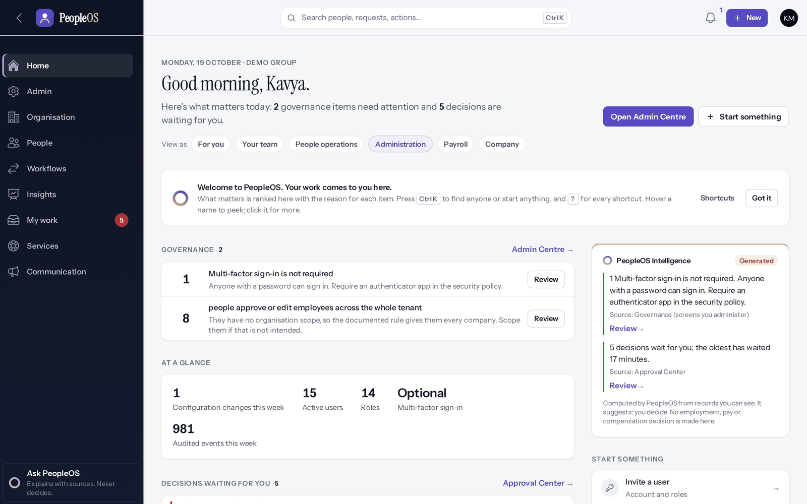
Who uses it
PeopleOS ships with 14 ready-made roles. Your administrator gives each person one or more roles, and can create custom roles.
| Role | In one line |
|---|---|
| Employee | Uses self-service: requests leave, views payslips, updates details, completes reviews and learning. |
| Manager | Everything an employee does, plus approves the team's leave and attendance, reviews performance, sees the team. |
| HR Manager / HR Executive | Run day-to-day HR: people records, onboarding, leave, service desk, letters, exits. |
| Tenant HR Admin | Configures PeopleOS for the organisation: structure, policies, workflows, modules. |
| Payroll Admin | Runs payroll and statutory compliance. |
| Attendance Admin / Asset Admin / Performance Admin | Specialist administrators for one area. |
| Executive | Sees the Workforce Command Centre, dashboards and reports; no transactional access. |
| Auditor | Read-only access with the full audit trail. |
| Tenant Super Admin / Account Owner | The organisation's top administrators (set up, users, security, data export). |
| Alumni | A former employee: own documents, payslips and requests only. |
See Chapter 6 — Role guides for what each role can see and do.
A typical journey
- Markedge sets up your organisation in PeopleOS and invites your first administrator.
- Your administrator builds the structure (companies, locations, departments), sets policies (leave, attendance), invites users and gives them roles.
- HR adds employees — one by one or by import — and starts onboarding.
- Employees sign in, check their details, request leave, raise HR requests and complete reviews.
- Managers approve requests from My work and follow their team on My Team.
- Payroll runs the monthly payroll from attendance, leave and salary data.
- Leaders watch the Workforce Command Centre and reports.
Why it beats manual processes
| Today (manual) | With PeopleOS |
|---|---|
| Leave on WhatsApp, balance in a spreadsheet | Employee requests in My HR; the balance is checked automatically; the manager approves in My work. |
| Employee data in several files | One Employee 360 record, with full history and effective dates. |
| Approvals lost in e-mail | Every request has an owner, a status and a time line; reminders and escalations are configurable. |
| "Who changed this?" | The Change history shows who, what, when, before/after and why. |
| Policies in PDFs nobody reads | Knowledge base articles and policies with tracked acknowledgements. |
| Annual appraisal on paper | Cycles, goals, check-ins, reviews and calibration in one place. |
| Reports built by hand every month | Reports and dashboards with filters and CSV export, permission-aware. |
1.2 What PeopleOS does — the main capabilities
Each capability is described in detail in the module chapters (Chapter 5). The status tells you whether it is ready to use today.
| Capability | What it covers | Status |
|---|---|---|
| People records | Directory, Employee 360, hiring, employment changes with effective dates, documents, background checks, bulk import | Available with limitations (bulk import is affected by a known defect at the column-mapping step) |
| Onboarding and exit | Onboarding plans and templates, letters with approval, exit cases with clearance, final settlement, exit interviews, alumni portal | Available with limitations (gratuity is not calculated) |
| Attendance | Punches from devices, imports or the API; attendance records; exceptions; regularisation; overtime approval; shifts and work schedules; holiday calendars | Available with limitations (punch file imports affected by a known defect; half-day holidays and late-mark actions not applied) |
| Leave | Leave types and policies, requests and approvals, balances from a ledger, encashment, team leave calendar | Available with limitations (HR's "Apply on behalf" button has a known defect — HR applies from the employee record; no hourly leave) |
| Payroll | Salary components and structures with formulas, monthly runs with checks and approvals, payslips, adjustments, payroll anomaly review | Available with limitations (see "Payroll and statutory compliance" below) |
| Statutory compliance (India) | EPF, ESI, Professional Tax, LWF and TDS returns and certificates, registrations, establishments | Available with limitations (rules awaiting verification) |
| Compensation | Pay changes with four-person approval, review cycles, budgets, pay ranges | Available |
| Performance | Cycles, templates, appraisals, goals and key results, check-ins, feedback, one-on-ones, improvement plans, calibration | Available |
| Learning and skills | Courses, learning paths and programmes, enrolments, certificates with expiry, training sessions, skills and assessments, development plans | Available |
| Career, talent and succession | Career paths, talent pools and reviews, readiness, critical positions, succession plans | Available |
| Organisation and workforce planning | Legal entities, companies, departments, teams, locations, cost centres, establishments, positions, headcount plans, scenarios, budgets, vacancies, org map | Available |
| Assets | Asset register, categories and models, assignment, transfer, return, repair, retirement; asset recovery at exit | Available |
| Employee services | My HR, HR service desk with service catalogue and SLAs, confidential grievances, knowledge base with acknowledgements | Available |
| Communication and engagement | Targeted announcements with read/acknowledge, notification rules and templates, surveys with built-in anonymity, feedback inbox | Available |
| Insights | Workforce Command Centre, people analytics, report builder with CSV export and schedules, dashboards, change intelligence, audit trail | Available with limitations (a known defect leaves the report builder's filter and grouping lists empty; executives have no report datasets by default) |
| AI assistance | "Ask PeopleOS" explains and summarises using only records you may see, with sources; never makes decisions | Available with limitations (no external AI model by default) |
| Administration and security | Users and invitations, roles and organisation scopes, settings, custom fields, forms, workflows, policies, governed configuration changes, multi-factor sign-in, single sign-on, IP allow-list, idle timeout, data export | Available |
| Integrations | REST API with scoped API keys, user provisioning (SCIM), signed webhooks, an integration hub for inbound events | Available (set-up needed) |
1.3 Who should use it, and which businesses benefit
PeopleOS is designed for organisations that want one system for their people processes, in particular:
- Growing companies replacing spreadsheets, e-mail approvals and separate tools.
- Groups with several companies or legal entities, locations and establishments (PeopleOS models legal entities, companies, business units, divisions, departments, teams and locations).
- Organisations with employees in India that need EPF, ESI, Professional Tax, LWF and TDS processing — once the statutory rules are verified (see below).
- Organisations that need strong control and audit: separation of duties in payroll and compensation, approval workflows, governed configuration changes and a tamper-evident audit trail.
- Organisations that want employee self-service so that staff can help themselves without e-mailing HR.
Typical users inside the business: HR teams, payroll teams, people managers, every employee (self-service), executives (analytics) and auditors (read-only).
Scale. The development team has tested the main screens with a fictional population of more than 10,000 employees on a single workstation. The capacity of the live service you will use is to be confirmed with the SaaS provider.
1.4 Key benefits
- Less chasing. Requests go to the right approver automatically, with status visible to everyone involved.
- Fewer errors. Data is entered once; balances, eligibility and payroll inputs come from the same records.
- Faster answers for employees. My HR, the knowledge base and "Ask PeopleOS" answer common questions.
- Control and accountability. Approvals follow your rules; the people who propose, approve and execute sensitive changes (payroll, compensation, bank details) are kept separate; every material change is recorded.
- Flexibility without custom code. Custom fields, forms, workflows, policies and notification rules are configured by your administrator.
- Decisions based on data. Live headcount, attrition, leave and other figures, with reports you can export.
Note. This handbook does not quote savings, productivity percentages or return on investment: no such measurements exist for PeopleOS yet. Measure your own results using the adoption checklist in Chapter 2.
1.5 Is this product right for your business?
Requirements PeopleOS supports today
| If you need… | PeopleOS | Notes |
|---|---|---|
| A single employee database with history | Yes | Effective-dated records; history is never silently overwritten. |
| Employee and manager self-service | Yes | My HR, My work, My Team, approvals on phone or desktop browser. |
| Leave management with your own rules | Yes | Leave types, policies with entitlements, approvals, balances, encashment. |
| Attendance from biometric devices | Yes | Devices send punches through the API (set-up needed with your device vendor); punch file imports are affected by a known defect. |
| Shifts, schedules and holidays by location | Yes | Shifts, work schedules and holiday calendars. |
| Monthly payroll with approvals | Yes, with limitations | Run pipeline with checks, approvals and payslips; statutory parts need verified rules. |
| India statutory compliance | Yes, with limitations | EPF/ESI/PT/LWF/TDS outputs exist; rules must be verified before live use. |
| Performance reviews and goals | Yes | Configurable cycles, templates, rating scales, calibration. |
| Learning management | Yes | Courses, paths, programmes, assessments, certificates, sessions. |
| HR help desk | Yes | Service catalogue, SLAs on business hours, satisfaction rating. |
| Confidential grievance handling | Yes | Per-case access; every view is audited. |
| Employee surveys | Yes | Anonymous and confidential surveys with privacy thresholds. |
| Multi-company, multi-location structures | Yes | Legal entities, companies, establishments, locations, cost centres. |
| Workforce and position planning | Yes | Positions, headcount plans, scenarios, budgets, vacancies. |
| Asset tracking | Yes | Register, assignment, return and recovery at exit. |
| Strong security | Yes | Multi-factor sign-in, single sign-on (OpenID Connect), IP allow-list, idle timeout, audit trail. |
| Integration with other systems | Yes | REST API, SCIM user provisioning, webhooks, integration hub. |
| Getting all your data out | Yes | A full, encrypted data export for your top administrator. |
Requirements PeopleOS does not currently support
| If you need… | Status | What you can do instead |
|---|---|---|
| Recruitment / applicant tracking (ATS) | Not available | Use your recruitment system; PeopleOS can receive new hires through its integration hub (set-up needed). |
| Expense claims and reimbursements | Not available as a module | One-off amounts can be paid through payroll adjustments. |
| Timesheets / project time tracking | Not available | — |
| Benefits and insurance administration | Not available | — |
| Employee loans and advances | Not available as a module | Recoveries can be entered as payroll adjustments. |
| Electronic signatures | Not available | Letters are generated and issued in PeopleOS; sign outside it. |
| Gratuity calculation | Not available | The final settlement has no gratuity line today; calculate it separately. |
| Statutory payroll outside India | Not available | Payroll is blocked in a country for which PeopleOS holds no statutory rules. Country packs (formats, currency, financial year) exist for India, UAE, UK, USA, Singapore, Australia and Canada, but statutory rules exist only for India (and one UAE rule). |
| Native mobile apps | Not available | The web application adapts to phones and tablets in the browser. |
| Languages other than English | Not available | The interface is in English (UK spelling). |
| Online purchase / self-service sign-up | Not available | The sign-up feature exists but is switched off; organisations are set up by Markedge. |
Things to confirm with Markedge before you decide
- Availability and go-live date. PeopleOS is not yet generally released for live production use; the provider's release checks (hosting, independent security review, backup and recovery, statutory verification) are still open. To be confirmed with the SaaS provider.
- Statutory payroll. None of the shipped India statutory rules has completed verification yet. While enforcement is on (the default), payroll that depends on unverified rules cannot be finalised. Ask for the current verification status before relying on PeopleOS for statutory payroll.
- Hosting region, data residency, backups and recovery objectives — To be confirmed with the SaaS provider.
- Prices, plans, contract terms, support hours and service levels — To be confirmed with the SaaS provider.
- Browsers. The team tested Chromium-based browsers (such as Google Chrome and Microsoft Edge) and Firefox on desktop, and the WebKit engine at phone width. Apple Safari and Android Chrome have not been tested yet.
1.6 What to know before purchasing
- It is a complete HR platform, not a single tool. You can start with some areas and add others; your administrator decides which features are switched on.
- Your data stays separate. Each organisation has its own private space; one organisation's data, settings and rules never affect another.
- You stay in control of access. Roles decide what people can see and do; organisation scopes limit HR and managers to the companies or teams they look after.
- Set-up takes planning. Before employees use PeopleOS, someone must enter your structure, policies and employee data. Chapter 2 lists what to prepare.
- AI is an assistant, not a decision-maker. It explains, summarises and suggests, using only what the person asking may see, and shows its sources. By default no external AI service is used.
- You can take your data with you. Your top administrator can request a full, encrypted export at any time.
- Commercial details are agreed with Markedge. This handbook does not state prices, plans or service levels.
Next: Chapter 2 — Your complete guide to buying and getting started.
Chapter 2
Your complete guide to buying and getting started
In this chapter: everything a prospective customer should know, ask and prepare — from the first demonstration to the first successful day in PeopleOS. Who should read it: business owners, HR and finance leaders, IT and procurement teams.
Important — what this guide does not contain. Prices, subscription plans, contract terms, service levels (SLAs), support hours, certifications and the hosting region are not part of the product and are not stated here. Wherever they matter, this guide says "To be confirmed with the SaaS provider." Ask Markedge for them in writing.
2.1 What PeopleOS offers
PeopleOS is one online system for the whole employee journey: people records, onboarding, attendance, leave, payroll, statutory compliance (India), compensation, performance, learning, talent, HR requests, grievances, announcements, surveys, exit and alumni — with analytics, an audit trail and configurable workflows on top. See 1.2 What PeopleOS does for the full list and the status of each capability.
2.2 The business problems it addresses
| Problem | How PeopleOS addresses it |
|---|---|
| Employee information is scattered across files and inboxes | One employee record with documents and full history |
| Approvals are slow and invisible | Requests route to the right approver; everyone sees the status; reminders and escalations are configurable |
| Leave and attendance are reconciled by hand | Punches, attendance records, exceptions and leave balances are calculated in one place |
| Payroll inputs are collected by e-mail | Payroll reads attendance, leave, salary structures and approved changes directly |
| Sensitive changes lack control | Separation of duties: the person who proposes, approves and executes payroll, pay and bank-detail changes must be different people |
| Employees keep asking HR the same questions | My HR, the knowledge base and "Ask PeopleOS" provide self-service answers |
| Nobody can prove who changed what | A tamper-evident audit trail with who, what, when, before/after and reason |
| Leaders lack timely people data | Command centre, analytics, reports and dashboards, filtered by what each person may see |
2.3 Features available today
| Area | Ready to use | Limitations to know |
|---|---|---|
| People records, onboarding, documents, letters, exit, alumni | Yes | Gratuity is not calculated in the final settlement; bulk employee import is affected by a known defect at the column-mapping step (confirm the fix with Markedge) |
| Attendance, shifts, holidays, leave | Yes | Device connection is set up with your device vendor; punch file imports and HR's "Apply on behalf" have known defects (workarounds exist); half-day holidays are not applied |
| Payroll and payslips | Yes | Finalising payroll needs verified statutory rules (see 2.13) |
| India statutory compliance (EPF, ESI, PT, LWF, TDS) | Yes | Rules are shipped but awaiting verification |
| Compensation (changes, cycles, budgets, ranges) | Yes | — |
| Performance, goals, feedback, calibration | Yes | — |
| Learning, skills, development, career, talent, succession | Yes | — |
| Organisation structure, workforce planning, assets | Yes | — |
| My HR, service desk, grievances, knowledge base | Yes | — |
| Announcements, notifications, surveys | Yes | E-mail delivery depends on the provider's mail service |
| Analytics, reports, dashboards, audit trail | Yes | A known defect leaves the report builder's filter and grouping field lists empty; the Executive role has no report datasets by default |
| AI assistance | Yes | Deterministic answers by default; an external AI model only if switched on |
| Security: MFA, single sign-on, IP allow-list, idle timeout | Yes | — |
| API, SCIM, webhooks, integration hub | Yes | Needs technical set-up |
| Full data export | Yes | Top administrator only |
| Online purchase, self-service sign-up, online billing | No | Switched off; handled through Markedge |
2.4 Types of organisations that can use it
- Companies replacing spreadsheets and disconnected tools for HR.
- Groups with several legal entities, companies, locations or establishments.
- Organisations with employees in India that need statutory processing (after rule verification).
- Organisations with strict control needs: approvals, separation of duties, audit.
- Organisations where many employees work on mobile phones (the web application adapts to small screens).
PeopleOS is less suitable today if your priority is recruitment/applicant tracking, expense claims, timesheets, benefits administration, statutory payroll outside India, or a native mobile app (see 1.5).
2.5 What to evaluate before purchasing
| Area | What to check | How |
|---|---|---|
| Fit | Do your main processes (leave, attendance, payroll, reviews, requests) work the way you need? | Ask for a demonstration of your three most frequent processes with your own rules. |
| Data | Can you load your employees and history? | Ask for a demonstration of the employee import with a sample file (a known defect currently stops imports at the column-mapping step). |
| Policies | Can PeopleOS express your leave, attendance and approval rules? | Bring your leave policy and approval matrix to the demonstration. |
| Payroll and compliance | Are the statutory rules you need verified? Does the payslip match yours? | Ask for the verification status and a parallel run against your current payroll. |
| Security | MFA, single sign-on, IP allow-list, audit, data export | Ask to see the security policy screen and the audit trail. |
| Integrations | Biometric devices, identity provider, recruitment, finance | Ask which connections need set-up and who does it. |
| Adoption | Will employees and managers find it easy? | Ask for a guided session with a manager and an employee persona. |
| Commercials and service | Price, term, support, SLAs, hosting, exit | To be confirmed with the SaaS provider. |
2.6 Questions to ask during a product demonstration
Everyday use
- Show an employee requesting leave on a phone, and the manager approving it.
- Show how an employee raises an HR request (for example a bank detail change) and who approves it.
- Show the Home screen for an employee, a manager, HR and an executive.
HR operations
- Show hiring an employee and starting onboarding.
- Show an exit from resignation to final settlement and asset recovery.
- Show how a letter (for example an experience letter) is generated, approved and issued.
Payroll and compliance
- Show a payroll run from draft to payslips, including who may approve each step.
- What is the verification status of the statutory rules we need? What happens if a rule is not verified?
- Can we run PeopleOS in parallel with our current payroll before switching?
Configuration
- Show how a leave policy, a workflow and a custom field are configured — without code.
- Show how a configuration change is reviewed and rolled back.
Security and data
- Show multi-factor sign-in, single sign-on, the IP allow-list and the audit trail.
- Show how we would export all our data, and what happens to our data if we leave.
Analytics
- Show the Workforce Command Centre and build a simple report with an export.
2.7 What to confirm before signing an agreement
Get written answers to each of these. None of them is defined by the product itself.
| Topic | Status |
|---|---|
| Subscription price, pricing basis, minimum term, renewal | To be confirmed with the SaaS provider. |
| Which modules and features are included in your plan | To be confirmed with the SaaS provider. |
| Trial or pilot period | To be confirmed with the SaaS provider. |
| Go-live date and general availability of the service | To be confirmed with the SaaS provider. |
| Hosting location, data residency and sub-processors | To be confirmed with the SaaS provider. |
| Backup frequency, recovery point and recovery time objectives | To be confirmed with the SaaS provider. |
| Service levels (availability, response and resolution times) | To be confirmed with the SaaS provider. |
| Support channels and hours | To be confirmed with the SaaS provider. |
| Security certifications and independent security review results | To be confirmed with the SaaS provider. |
| Statutory rule verification status for your countries | To be confirmed with the SaaS provider. |
| Data retention after the contract ends, and data deletion | To be confirmed with the SaaS provider. |
| Onboarding services included (data migration, configuration, training) | To be confirmed with the SaaS provider. |
| Data processing agreement and privacy terms | To be confirmed with the SaaS provider. |
2.8 Onboarding assistance: who does what
| Step | Available automatically | Your action | Provider (Markedge) assistance | Not currently supported |
|---|---|---|---|---|
| Purchase and agreement | — | Sign the agreement | Commercial process | Online purchase |
| Create your organisation in PeopleOS | System roles, default features and settings are created with it | Give Markedge your organisation name and first administrator's e-mail | Markedge creates the organisation and sends the invitation | Self-service sign-up (switched off) |
| First administrator account | Invitation e-mail with a one-time link (valid 72 hours) | Accept, set a password, set up MFA if required | Re-send the invitation if it expired | — |
| Organisation structure | Configuration finder and recommended order | Enter companies, locations, departments, grades… | Optional, depending on agreement | — |
| Users and roles | 14 ready-made roles | Invite users, assign roles and scopes | — | — |
| Employee data | Import with validation and duplicate detection (a known defect currently stops imports at the column-mapping step — confirm the fix with Markedge) | Prepare the file; add employees one by one if needed | Optional migration help, depending on agreement | — |
| Policies and workflows | Default settings | Configure leave/attendance policies, workflows, notifications | Optional | — |
| Payroll and statutory set-up | Statutory rules provided by the platform | Salary components, structures, registrations, establishment profiles | Statutory rule verification is done on the platform side | Statutory payroll outside India |
| Integrations | API, SCIM, webhooks, inbound events | Create API keys, connect systems | Technical help, depending on agreement | — |
| Training | This handbook and in-app guidance | Train your users | To be confirmed with the SaaS provider. | — |
| Support | — | — | To be confirmed with the SaaS provider. | In-app support portal |
2.9 Information you need to provide
Prepare these before set-up starts. Your first administrator will enter most of them.
- Organisation name and the first administrator's name and work e-mail (for Markedge).
- Legal entities and companies (names, codes, registered details).
- Locations and, for India, establishments and statutory registrations (EPF, ESI, PT, LWF, TAN).
- Business units, divisions, departments, teams, cost centres and profit centres you use.
- Levels, grades, designations, job families, employment types and employee categories.
- Work schedules, shifts and holiday calendars per location.
- Leave types and your leave policy (entitlements, accrual, carry-forward, encashment rules).
- Your approval matrix (who approves leave, attendance corrections, letters, requests).
- Employee master data for the import (one row per employee; managers, departments, joining dates).
- For payroll: salary components, salary structures, current salaries, bank details, tax declarations.
- Who gets which role, and which companies or teams each HR person and manager looks after.
- Security choices: MFA required or optional, single sign-on provider, allowed networks, idle timeout.
- Systems to connect (biometric devices, identity provider, recruitment, finance).
2.10 What happens after the purchase
- Markedge creates your organisation and invites your first administrator by e-mail.
- Your administrator signs in through the invitation link, sets a password and — if your security policy requires it — sets up an authenticator app (multi-factor sign-in).
- Your administrator configures the basics in the recommended order: structure → people set-up data → policies → workflows → users and roles (Chapter 7).
- HR loads employees (import or one by one) and links user accounts to employee records.
- Users are invited and sign in for the first time.
- Pilot: run one process (for example leave) with a small group, then widen.
- Payroll: run in parallel with your current payroll until the results match and statutory rules are verified.
- Go live with all users and review adoption after a few weeks.
2.11 How users should be trained
| Audience | What they need | Material in this handbook | Suggested format |
|---|---|---|---|
| All employees | Sign in, Home, My HR, request leave, update details, payslips | Chapter 3 quick start, Employee guide | 30-minute session or self-study |
| Managers | Approvals in My work, My Team, reviews, one-on-ones | Manager guide, workspace chapter | 45–60 minutes |
| HR team | People records, onboarding, leave, service desk, letters, exit | Module chapters 02, 03, 07 | Several hands-on sessions |
| Payroll team | Components, structures, runs, payslips, compliance | Module chapter 04 | Hands-on, with a parallel run |
| Administrators | Structure, users, roles, policies, workflows, security | Administrator guide, chapter 09 | Hands-on, before go-live |
| Executives | Command centre, dashboards, reports | Insights chapter 08 | 20 minutes |
Training services from Markedge: To be confirmed with the SaaS provider.
2.12 How to measure successful adoption
Use figures PeopleOS already shows you:
| Measure | Where to see it |
|---|---|
| Share of invited users who have activated their account | Admin › Setup › Users — compare users with status Invited and Active |
| Requests handled in PeopleOS instead of e-mail | Services › Service Desk › Service analytics; leave requests in People › Time & leave |
| Decisions waiting and how long they wait | My work and the Home brief ("the oldest has waited …") |
| Leave and attendance processed without manual correction | People › Time & leave › Exception centre (fewer open exceptions over time) |
| Policies acknowledged by employees | Knowledge base article acknowledgements |
| Survey participation | Survey results (participation is shown without revealing who answered) |
| Security adoption | Admin Home "At a glance" (multi-factor sign-in status) |
Set your own targets with your project sponsor; this handbook does not prescribe them.
2.13 Limitations and prerequisites
- General availability: PeopleOS is not yet generally released for live production use. The provider's release checks (hosting environment, independent security review, backup and recovery tests, statutory verification) are open. To be confirmed with the SaaS provider.
- Statutory payroll: the India statutory rules (EPF, ESI, Professional Tax, LWF, TDS) are provided by the platform but none has completed verification yet. With enforcement on — the default — payroll that relies on an unverified rule cannot be finalised. Payroll is blocked in countries for which PeopleOS holds no statutory rules. Gratuity is not calculated.
- AI: answers are generated from your records without an external AI model unless your administrator switches the language-model feature on (and the provider has configured one).
- E-mail: invitations, password resets and notifications are sent by e-mail through the provider's mail service.
- Browsers: tested on Chromium-based browsers and Firefox (desktop) and the WebKit engine at phone width; Apple Safari and Android Chrome not yet tested.
- Language: English only.
- Purchase and billing: no online purchase, self-service sign-up or online billing today.
- Integrations: devices and external systems need technical set-up.
2.14 How to contact Markedge
Contact details for demonstrations, commercial discussions and support: To be confirmed with the SaaS provider. (No verified contact address is published in the product or its documentation.)
2.15 From purchase to first successful use
Flowchart — From purchase to first successful use. The real path an organisation follows today; organisation creation and invitations are done by Markedge. Roles: buyer, Markedge, first administrator, HR, managers, employees. Starts: evaluation. Ends: daily use of PeopleOS.
Exception paths: unmet requirements return to discussion; an unsuccessful pilot returns to configuration. Successful outcome: the organisation uses PeopleOS for its daily HR processes.
2.16 Customer onboarding checklist
Before set-up
- Agreement signed and commercial items in 2.7 answered in writing.
- First administrator chosen; their e-mail sent to Markedge.
- Information in 2.9 collected.
Week 1 — foundation
- Invitation accepted; password and MFA set up.
- Security policy reviewed (MFA, idle timeout, allowed networks).
- Companies, locations, departments and teams entered.
- Levels, grades, designations and employment types entered.
Week 2 — people and rules
- Holiday calendars, shifts and work schedules set up.
- Leave types and leave policy configured.
- Approval workflows and notification rules configured.
- Employees imported and checked in the directory.
Week 3 — users and pilot
- HR team, managers and a pilot group invited with the right roles and scopes.
- Pilot: leave requests and approvals for two weeks.
- Knowledge base articles and key policies published.
Before go-live
- All employees invited; quick-start session held.
- Payroll set up and run in parallel; differences explained; statutory rule status confirmed.
- Adoption measures (2.12) agreed.
The weekly plan is a suggestion; your pace depends on your size and data.
2.17 Buyer's evaluation checklist
| # | Question | Yes / No / Notes |
|---|---|---|
| 1 | Do our top three HR processes work in PeopleOS without workarounds? | |
| 2 | Can our leave and attendance rules be configured? | |
| 3 | Is the employee self-service simple enough for all staff, including on phones? | |
| 4 | Do managers understand how to approve in My work? | |
| 5 | Are the statutory rules we need verified, or is the verification date known? | |
| 6 | Did a parallel payroll run match our current payroll? | |
| 7 | Do roles and organisation scopes match how our HR team is organised? | |
| 8 | Are MFA, single sign-on and allowed networks acceptable to our IT team? | |
| 9 | Can we connect our biometric devices and identity provider? | |
| 10 | Do we know how to export all our data? | |
| 11 | Are hosting, data residency, backups and recovery objectives acceptable? | |
| 12 | Are price, term, support and service levels agreed in writing? | |
| 13 | Are the features we need but PeopleOS lacks (1.5) acceptable or covered elsewhere? | |
| 14 | Do we have an administrator and HR owner with time for set-up? |
2.18 Pre-purchase questionnaire
Answer these questions and share them with Markedge before the demonstration, so that it can show your situation.
- How many employees do you have today, and how many in two years?
- In which countries do your employees work? Which ones need payroll?
- How many legal entities, companies and locations do you have?
- Which HR processes do you want in PeopleOS first (for example leave, attendance, payroll, reviews, HR requests)?
- How do you record attendance today (biometric devices, mobile, manual)? Which device brands?
- How do you run payroll today? Which statutory schemes apply (EPF, ESI, PT, LWF, TDS)?
- Who approves leave, attendance corrections, salary changes and letters?
- Which systems must connect to PeopleOS (identity provider, recruitment, finance, learning)?
- Do you require multi-factor sign-in or single sign-on? Which identity provider?
- Are there data residency or regulatory requirements for where employee data is stored?
- Who will be your PeopleOS administrator and project owner?
- When do you want to go live, and is there a hard deadline (for example a financial year start)?
- What would make the project a success for you in six months?
Next: Chapter 3 — Getting started.
Chapter 3
Getting started
In this chapter: the complete journey from evaluating PeopleOS to using it every day, and a 30-minute quick start for every new user. Who should read it: everyone; administrators should also read Chapter 7.
3.1 The complete customer journey
The table shows who does each part of the journey today. "Automatic" means PeopleOS does it for you.
| # | Journey | Available automatically | Requires your action | Requires Markedge (provider) | Not currently supported |
|---|---|---|---|---|---|
| 1 | Evaluating the product | This handbook | Read, prepare questions (2.17, 2.18) | Demonstration | Public trial or sandbox — to be confirmed with the SaaS provider |
| 2 | Purchasing or subscribing | — | Agree terms | Commercial process; plans are managed by Markedge | Online purchase, self-service sign-up, online billing |
| 3 | Company onboarding | System roles, default features and default settings are created with your organisation | Provide organisation name and first administrator | Creates your organisation | — |
| 4 | Initial organisation set-up | "What do you want to configure?" finder, Packs & Blueprints | Enter structure and reference data | Optional, per agreement | — |
| 5 | First administrator account | Invitation e-mail with a one-time link (valid 72 hours) | Accept, set password, set up MFA if required | Re-send an expired invitation | — |
| 6 | Company settings | Sensible default settings | Review settings, security policy and feature flags | — | — |
| 7 | Users and roles | 14 ready-made roles; optional automatic accounts via single sign-on or SCIM | Invite users, give roles and scopes | — | — |
| 8 | Permissions | Role-grant limits (nobody can give a role more powerful than their own) | Adjust or create roles | — | — |
| 9 | First essential business task | Balance checks, routing to approvers, notifications | Import employees; run a first leave request | — | — |
| 10 | Daily operations | Home ranks what matters; My work collects decisions | Act on requests and tasks | — | — |
| 11 | Reports and performance | Command centre, analytics, starter reports | Build reports and dashboards | — | — |
| 12 | Exceptions and errors | Exception centre, validation messages, audit trail | Resolve exceptions; see Chapter 9 | Platform incidents | — |
| 13 | Changing settings | Governed changes with history and rollback (Change Centre) | Make and approve changes | — | — |
| 14 | Subscription and billing | — | — | All subscription changes | Billing and invoices inside PeopleOS for customers |
| 15 | Support | Ask PeopleOS (answers from your records); HR service desk (employee → your HR team) | Gather details before contacting support | Support channels — to be confirmed with the SaaS provider | In-app support portal to Markedge |
Note on provider access. If Markedge staff ever need to look inside your organisation (for example to help with a problem), the platform requires a written reason, limits the access to 60 minutes and records it in your own audit trail as well as the platform's.
Journeys in detail
Journey 5 — the first administrator signs in.
- Open the invitation e-mail from PeopleOS and click the link (it works once and expires after 72 hours).
- Choose a password.
- If your organisation requires multi-factor sign-in, scan the QR code with an authenticator app (for example Microsoft Authenticator or Google Authenticator) and enter the six-digit code. Store the recovery codes safely.
- You arrive on Home. Continue with Chapter 7 — Administrator guide.
Journey 9 — the first essential business task. A good first task is a leave request, because it touches employees, managers, policies and balances:
- The administrator sets up leave types and the leave policy (People › Time & leave and Workflows › Policies).
- HR imports employees and checks that each has a manager.
- An employee requests leave (3.2, step 5).
- The manager approves it in My work › Approvals (3.2, step 6).
- Both see the new status and the updated balance.
Journey 12 — exceptions and errors. PeopleOS tells you why something cannot be saved, in plain words, next to the field. Attendance problems appear in the Exception centre; workflow steps waiting for someone appear in the Task inbox; every change can be traced in Insights › Audit › Change history. See Chapter 9 — Troubleshooting.
Journey 14 — subscription and billing. Your subscription is managed by Markedge outside your organisation's workspace. There is no subscription or billing screen for customers. To be confirmed with the SaaS provider.
Flowchart — From organisation creation to daily use. How a new organisation goes from creation to its first approved request. Roles: Markedge, first administrator, HR, employees, managers. Starts: Markedge creates the organisation. Ends: daily use. Exception path: an expired invitation is re-sent.
3.2 Start using PeopleOS in 30 minutes
This walkthrough is for every new user — employee, manager or HR. It takes about 30 minutes, including reading. Organisation-wide set-up (structure, policies, payroll) is separate and is done by your administrator (Chapter 7).
You need: your work e-mail address, the invitation e-mail or your password, and — if your organisation requires it — a phone with an authenticator app.
Step 1 — Sign in (3 minutes)
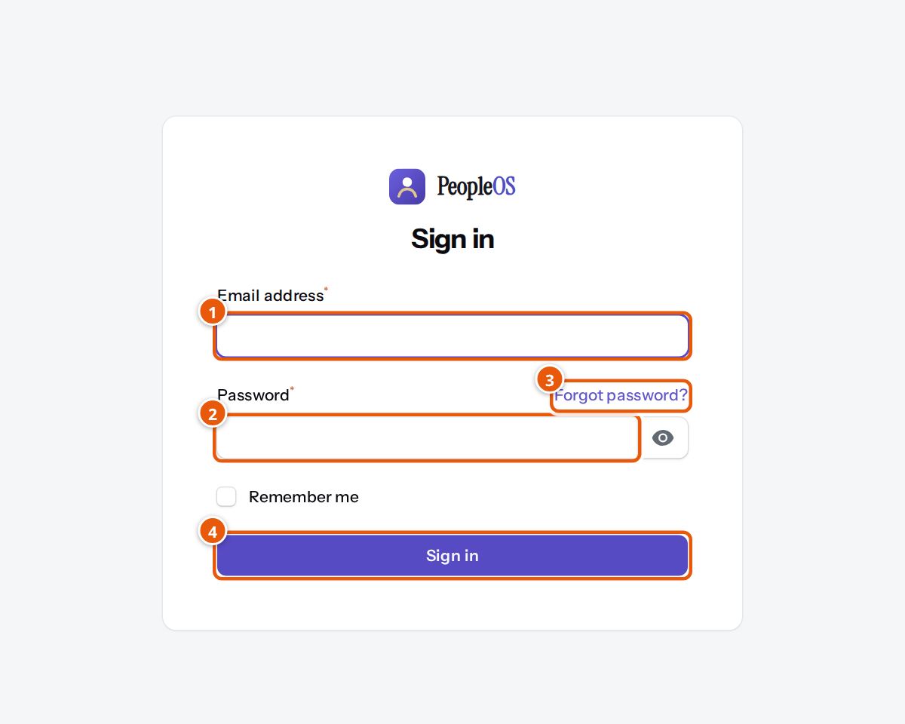
- Email address — your work e-mail.
- Password — the password you chose when you accepted your invitation.
- Forgot password? — sends a reset link to your e-mail (see Troubleshooting).
- Sign in.
If your organisation requires multi-factor sign-in, PeopleOS then asks for the six-digit code from your authenticator app. If your organisation uses single sign-on (signing in with your company account, for example Microsoft Entra, Google or Okta), your administrator gives you a dedicated sign-in link; the normal sign-in page has no single sign-on button.
Tip. After five failed attempts in a minute, PeopleOS asks you to wait before trying again ("Too many login attempts"). Wait for the time shown, then try again or use Forgot password?.
Step 2 — Understand your Home screen (5 minutes)
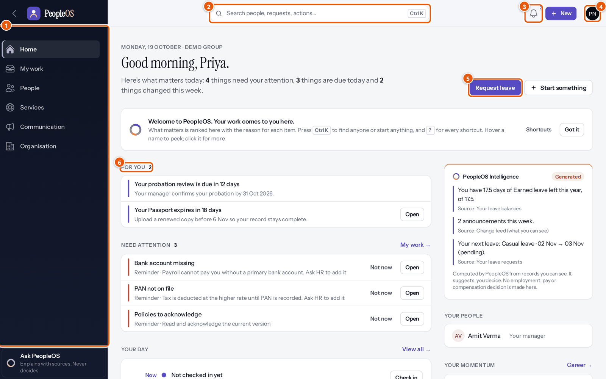
- The menu — the areas you can use. An employee typically sees Home, My work, People, Services, Communication and Organisation. Managers, HR and administrators see more.
- Search (Ctrl K) — type a person's name, a request or an action ("leave", "payslip") and jump straight there.
- Notifications — the bell shows how many unread notifications you have.
- Your avatar — opens your personal pages (see step 3).
- The main action for you — for an employee, Request leave. Start something lists other common actions (Fix my attendance, Raise an HR request, Browse HR services).
- What matters today — items are grouped as For you, Need attention, Your day, My requests and What changed, each with the reason it is shown and an Open button. Not now hides a reminder for the moment.
On the right, PeopleOS Intelligence summarises a few facts with their source (for example your leave balance). It only uses records you are allowed to see and never makes decisions. The first time, a welcome tip explains the keyboard shortcuts; click Got it to hide it.
Step 3 — Find your personal pages (3 minutes)
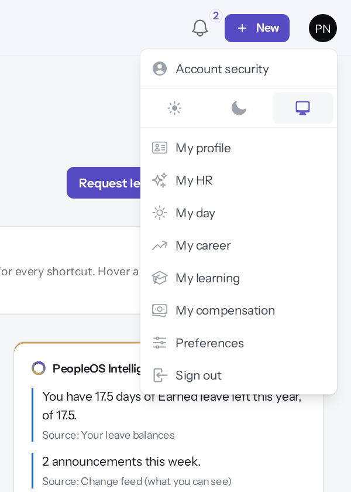
Click your initials at the top right:
| Menu item | What it is for |
|---|---|
| Account security | Change your password and set up the authenticator app (two-factor authentication). |
| Light / dark / system icons | Choose the colour theme. |
| My profile | Your own employee record (read-only). |
| My HR | Requests to HR, policies to acknowledge, documents, surveys, communications. |
| My day | Today's attendance, leave and tasks. |
| My career | Your career profile, skills and interests. |
| My learning | Courses and learning assigned to you. |
| My compensation | Your pay information. |
| Preferences | How Home opens, display density and notification choices. |
| Sign out | Ends your session. |
Step 4 — Secure your account (4 minutes)
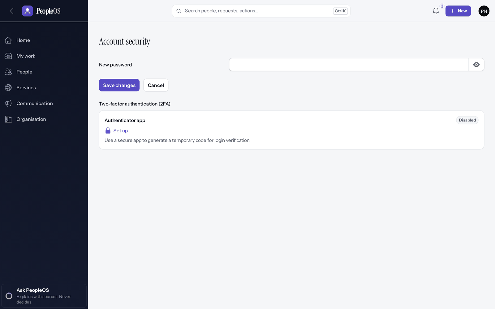
- Open avatar › Account security.
- Under Two-factor authentication (2FA), next to Authenticator app, click Set up.
- Scan the QR code with your authenticator app, enter the code, and keep the recovery codes somewhere safe.
- To change your password, type it in New password and click Save changes.
Your organisation may make this step compulsory. If so, PeopleOS takes you to the set-up page right after sign-in.
Step 5 — Make your first request: leave (5 minutes)
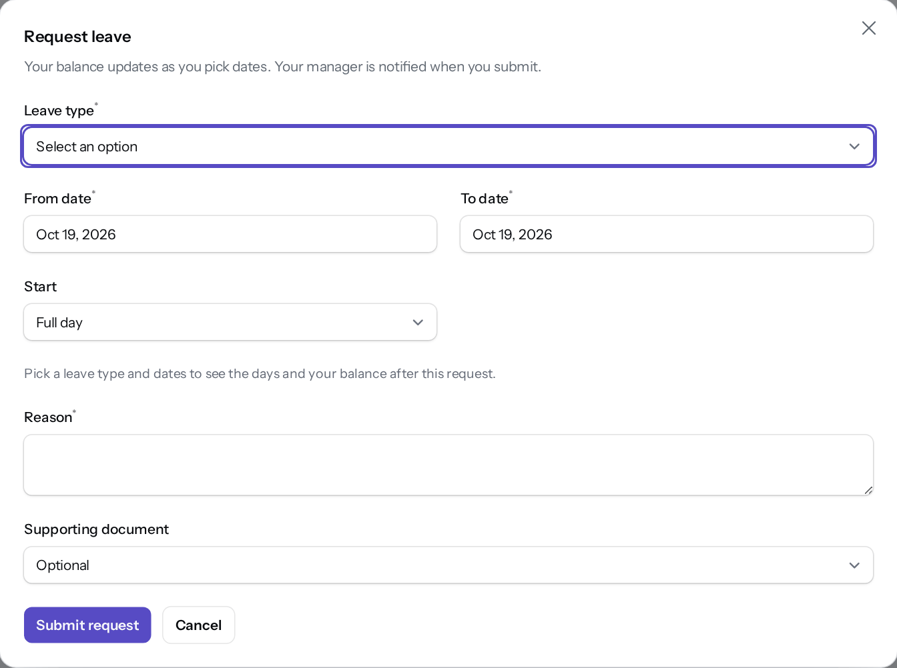
- On Home, click Request leave.
- Leave type — the list shows how many days of each type you have available.
- From date and To date, and Start (Full day, First half or Second half).
- PeopleOS shows the number of days and your balance after the request as soon as you pick dates.
- Reason — required.
- Supporting document — optional; choose one of your documents if your policy asks for proof.
- Click Submit request. Your manager is notified.
How to verify: on Home, the request appears under My requests as Waiting for approval, and the "Your day" section shows your next leave as pending.
Step 6 — If you are a manager: decide a request (5 minutes)
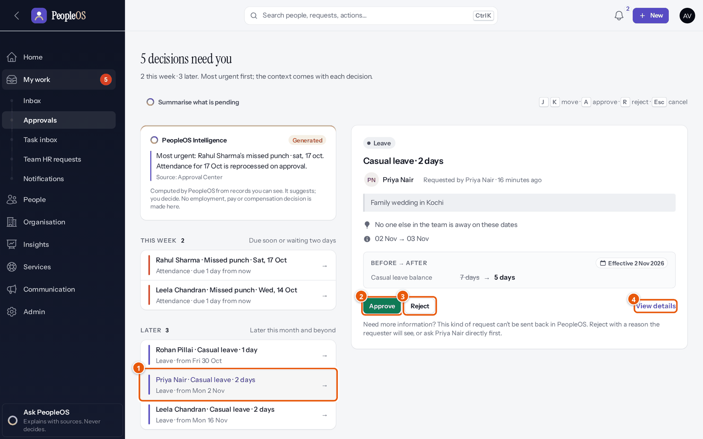
- Open My work › Approvals (the number on My work shows how many decisions wait for you). Decisions are grouped This week and Later, most urgent first.
- Click a request. The panel shows who asked, the reason, whether anyone else in the team is away, and the Before → After effect (for example the leave balance going from 7 to 5 days).
- Click Approve, or Reject with a reason the requester will see.
- View details opens the full record.
Keyboard users can press J/K to move, A to approve, R to reject and Esc to cancel.
Note. Some requests cannot be "sent back" for changes. If you need more information, reject with a clear reason or ask the person first — the panel tells you when this applies.
Step 7 — Check the result (2 minutes)
- The employee sees the new status under My requests on Home and in My HR › Requests.
- The leave balance on Home and in the Request leave form reflects the approved days.
- Notifications arrive in the bell (and by e-mail, depending on your preferences).
Step 8 — Explore what else you can see (3 minutes)
- Services › My HR — ask HR a question, request a letter or a change to your details, acknowledge policies.
- Communication — announcements from your organisation.
- Managers: People › My team for your team's attendance, leave and reviews.
- HR and executives: Insights for analytics, reports and dashboards.
Quick-start checklist
- I can sign in (and I know how to reset my password).
- I set up the authenticator app (or know it is not required).
- I know where Home, My work, search and the avatar menu are.
- I checked my details in My profile and told HR about anything wrong.
- I acknowledged the policies waiting in My HR.
- I submitted a test or real leave request, or (managers) decided one.
- I know where to find my notifications.
Quick reference: the most frequent tasks and where to find them are on one page in Chapter 11.
Chapter 4
Home and dashboards
In this chapter: the screens that summarise your work and your organisation — Home, the Approval Center, the control rooms and the analytics dashboards — and which ones to check for your role. Who should read it: everyone.
PeopleOS has one personal start page (Home) and several summary screens for specialists. They all follow three rules:
- You only see your scope. Every figure counts only records you are allowed to see. The same dashboard can show a headcount of 21 to the CEO and 19 to an HR manager who looks after one company.
- Small groups are hidden. Figures about fewer than five people are shown as "fewer than 5" (Markedge can set a different threshold for your organisation), so nobody can work out a colleague's details.
- Facts, not predictions. Dashboards show counts, shares and trends. PeopleOS never scores, ranks or predicts whether a person will leave or be promoted.
4.1 Which screen to check, by role
| Role | Start of the day | Specialist screens | Analytics |
|---|---|---|---|
| Employee | Home (For you), My day | My HR | — |
| Manager | Home (Your team), My work › Approvals | People › My team, Leave calendar, Exception centre | People analytics |
| HR Manager / HR Executive | Home (People operations), My work | Services › Service Desk › HR queue, onboarding plans, exit cases | People analytics, Service analytics, Exit insights, Survey results |
| Payroll Admin | Home (Payroll) | People › Pay › Control room (payroll and compliance), Payroll Auditor | Compensation analytics |
| Attendance Admin | Home | Exception centre, Regularisations | People analytics |
| Executive | Home (Company) | — | Workforce Command Centre, Dashboards, Workforce analytics, Compensation analytics |
| Tenant HR Admin / Super Admin | Home (Administration) | Admin › All modules, Change Centre | Change intelligence, all analytics |
| Auditor | Home | — | Change history, Change intelligence, AI interactions |
4.2 Home
Home answers what matters to me now? It starts with one sentence that counts what is waiting for you, then lists each item with its reason and an Open button. If you hold several roles, View as switches between views: For you, Your team, People operations, Payroll, Company and Administration. A view never gives you extra access.
| View | Leads with |
|---|---|
| For you | Your own dates, reminders, day, requests and leave balance |
| Your team | Decisions waiting, team exceptions, team pulse (in today, on leave, approvals pending) |
| People operations | Probation, onboarding, documents and HR requests at risk; joiners in 14 days; on leave today |
| Payroll | The latest payroll run, its employees and exceptions; a link to the control room |
| Company | The workforce pulse: joiners, exits, promotions and internal moves against last month |
| Administration | Governance items (for example "Multi-factor sign-in is not required"), active users, roles, configuration changes |
Every view has PeopleOS Intelligence on the right: a few statements computed from your records, each with its source, ending with "It suggests; you decide." Home is explained screen by screen, with a figure for each view, in 5.1 Your workspace — Home.
4.3 My work and the Approval Center
My work is your inbox of everything to do, decide or follow up; the number next to it in the menu counts what waits for you. My work › Approvals (the Approval Center) lists decisions This week and Later, and shows the context and the Before → After effect of each one beside Approve and Reject. See 5.1 — My work and Approvals.
4.4 Operational dashboards
These screens help specialists run a process. Each is explained in its module chapter.
| Screen | What it shows | Where | Who | Chapter |
|---|---|---|---|---|
| Payroll control room | Readiness of the current payroll: employees, exceptions, the latest runs and their status | People › Pay › Control room | Payroll Admin, Tenant HR Admin, Auditor | 5.4 |
| Compliance control room | Statutory rule verification, open regulatory notices, establishments and registrations, every return with its production gate | People › Pay › Control room (compliance) | Tenant HR Admin, Payroll Admin, Auditor | 5.4 |
| Exception centre | Attendance days that need attention (missed punches, absences, late arrivals) | People › Time & leave › Exception centre | Managers, Attendance Admin, HR | 5.3 |
| Leave calendar | Who is away and when | People › Time & leave › Leave calendar | Managers, HR | 5.3 |
| My team | Your reports: in today, on leave, needing attention | People › My team | Managers | 5.5 |
| Calibration board | Ratings across teams in a performance cycle, for fair calibration | People › Growth › Calibration | Tenant HR Admin | 5.5 |
| Learning dashboard | Enrolments, completion, mandatory learning, hours | People › Growth › Dashboard (Learning) | Tenant HR Admin, Auditor | 5.5 |
| Talent dashboard | Talent pools, reviews and succession cover | People › Growth › Dashboard (Talent) | Tenant HR Admin | 5.5 |
| Workforce dashboard | Seats, FTE, occupied and vacant positions, plans awaiting approval | Organisation › Workforce › Dashboard | Executive, Tenant HR Admin | 5.6 |
| Admin Centre | Every module you can open, grouped by area | Admin › All modules | Administrators, HR | 5.9 |
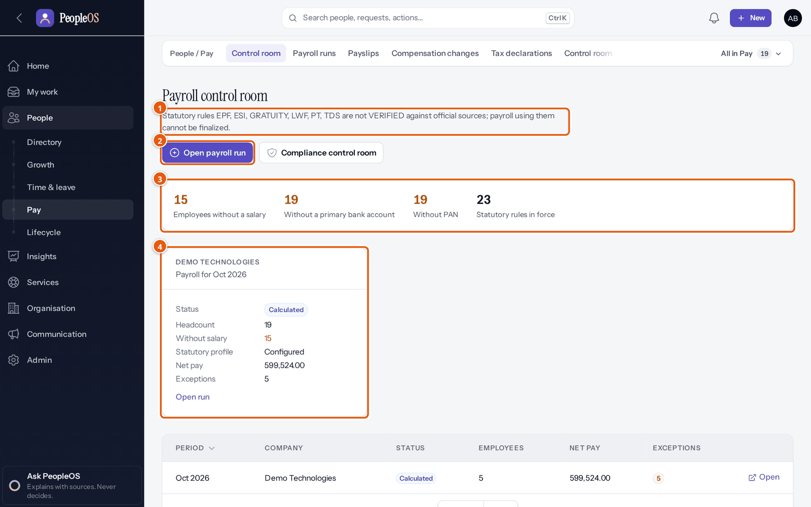
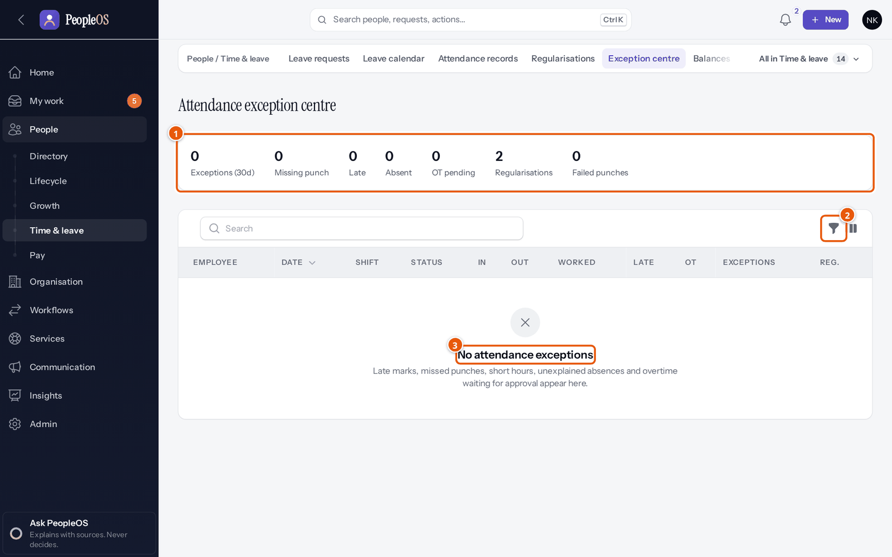
4.5 Analytics and executive dashboards
| Screen | What it shows | Where | Who | Chapter |
|---|---|---|---|---|
| Workforce Command Centre (Workforce pulse) | Joiners, exits, promotions and moves against last month; headcount, attrition, on leave today; drill-down to the people behind each figure | Insights › Analytics › Workforce Command Centre | Executive, Tenant HR Admin, Auditor | 5.8 |
| Dashboards | Dashboards made of report and figure tiles, such as the HR overview | Insights › Analytics › Dashboards | Executive, HR, Auditor | 5.8 |
| People analytics | Headcount and movement by company, department and location | Insights › Analytics › People analytics | Managers, HR, Executive, Payroll, Auditor | 5.8 |
| Workforce Intelligence | Aggregate workforce trends and a narrative (no individual prediction) | Insights › Analytics › Workforce Intelligence | Executive, Tenant HR Admin | 5.8 |
| Reports | Your own and starter reports with filters, grouping, charts and CSV export | Insights › Analytics › Reports | HR, administrators, Auditor | 5.8 |
| Change intelligence | Patterns in configuration and data changes | Insights › Audit › Change intelligence | Administrators, Auditor | 5.8 |
| Performance, Talent, Compensation and Workforce analytics; Service analytics; Exit insights; Survey results | Area-specific figures | In each area's "All in …" menu | See chapter 5.8, "Other analytics pages" | 5.8 |
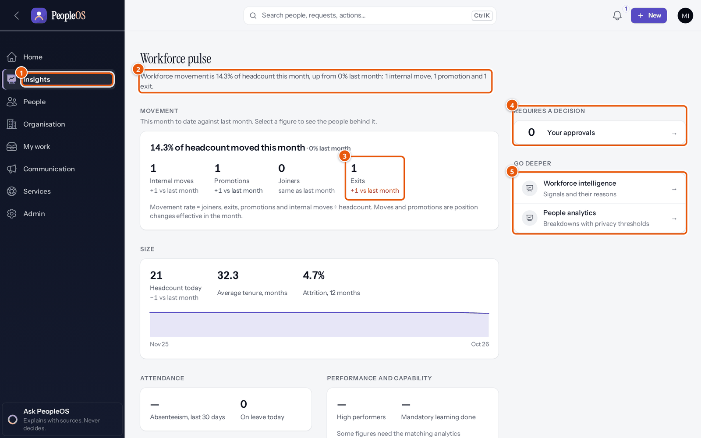
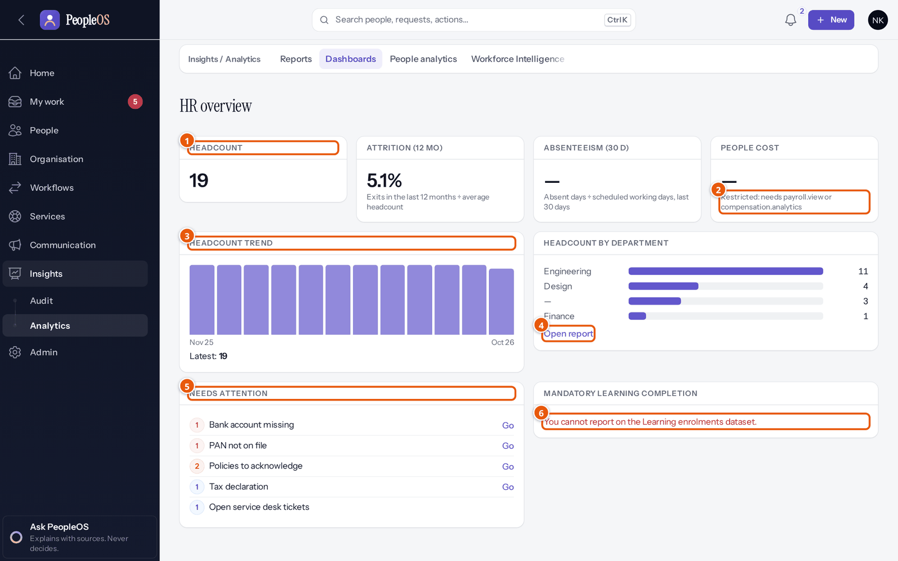
Note. As shipped, the Executive role has no permission on the report datasets, so report tiles on dashboards show "You cannot report on the … dataset." Your administrator can add the dataset permissions. A known defect also leaves the report builder's filter and grouping field lists empty when you create or edit a report; running existing reports is not affected.
4.6 Tips for using dashboards well
- Click the figure. Most figures open the list of records behind them, so you can act on them.
- Check the date and scope. Figures are "as of" a date and limited to your scope; compare like with like.
- Use "View as" deliberately. Switch Home to the view that matches the task you are about to do.
- Don't export more than you need. Exports are recorded in the audit trail and personal data leaves PeopleOS.
- New organisations have little data. Trends become meaningful after a few months of use.
Chapter 5
Module guides
In this chapter: the map of every PeopleOS module and the nine module chapters that explain them step by step. Who should read it: everyone looking for a specific screen or task.
PeopleOS has 195 modules (screens) that a customer organisation can use. They are grouped into nine module chapters:
| Chapter | Covers | Read it if you are… |
|---|---|---|
| 5.1 Your workspace | Signing in, Home, search, My work, approvals, tasks, notifications, personal pages | everyone |
| 5.2 People and lifecycle | Directory, Employee 360, hiring, imports, documents, background checks, onboarding, letters, exit, settlement, alumni | HR, managers |
| 5.3 Time and leave | Attendance, punches, devices, shifts, schedules, holidays, regularisation, overtime, leave, balances, encashment | everyone, HR, managers |
| 5.4 Pay | Payroll, payslips, salary components and structures, tax declarations, statutory compliance, compensation | payroll, HR, employees (payslips) |
| 5.5 Growth | Performance, goals, feedback, one-on-ones, calibration, learning, skills, development, career, talent, succession | everyone, managers, HR |
| 5.6 Organisation | Legal entities, companies, departments, locations, establishments, people set-up data, org map, workforce planning, assets | administrators, HR, executives |
| 5.7 Services and communication | My HR, HR service desk, grievances, knowledge base, announcements, notifications, surveys, feedback | everyone, HR |
| 5.8 Insights | Command centre, analytics, reports, dashboards, audit trail, change intelligence, AI assistance | executives, HR, auditors |
| 5.9 Administration | Users, roles, settings, feature flags, custom fields, forms, workflows, policies, security, single sign-on, API, integrations, data export | administrators |
Modules with a personal name
Seven modules change their name and content for employees, who see only their own records:
| Staff name (HR, administrators) | Employee name (own records only) | Where employees find it |
|---|---|---|
| Services › Service Desk › HR queue | My requests | Services › My HR › Requests, or search |
| Services › Grievances › Cases | My grievances | search "My grievances" |
| Services › Knowledge › Articles | Knowledge base | search "Knowledge base", or My HR › Policies |
| People › Lifecycle › Letters | My letters | search "My letters", or My HR |
| People › Lifecycle › Exit cases | My exit | search "My exit" |
| Organisation › Assets › Asset register | My assets | Organisation › Assets |
| People › Growth › Enrolments | My learning (enrolments) | People › Growth, or avatar › My learning |
Module directory
Every module below was confirmed in the application. The menu path is the usual one; modules used less often are listed under All in [area] on the area bar of that area, and any module can be opened by typing its name in the search bar (Ctrl K). Who can open it lists the ready-made roles whose permissions open the module (the Tenant Super Admin can open every module and is not repeated). Opening a module does not always allow changing it; the module chapters explain which actions each role can take.
5.1 Your workspace
Explained in chapter 5.1.
| Module | Menu path | Who can open it |
|---|---|---|
| Assistant | Avatar menu or search (Ctrl K) | Employee, Executive, HR Manager, Manager, Payroll Admin, Tenant HR Admin |
| My Day | Avatar menu or search (Ctrl K) | Personal page (any user linked to an employee record) |
| Home | Home | Employee (own records) and above |
| Approvals | My work › Approvals | Employee (own records) and above |
| My work | My work › Inbox | Employee (own records) and above |
| Notifications | My work › Notifications | Employee (own records) and above |
| Task inbox | My work › Task inbox | Employee (own records) and above |
| Team HR requests | My work › Team HR requests | HR Manager, Manager, Tenant HR Admin |
5.2 People and lifecycle
Explained in chapter 5.2.
| Module | Menu path | Who can open it |
|---|---|---|
| Directory | People › Directory | Account Owner, Asset Admin, Attendance Admin, Auditor, HR Executive, HR Manager, Manager, Payroll Admin, Tenant HR Admin |
| Alumni | People › Lifecycle › Alumni | Auditor, HR Manager, Tenant HR Admin |
| Background checks | People › Lifecycle › Background checks | Auditor, HR Executive, HR Manager, Tenant HR Admin |
| Employee imports | People › Lifecycle › Employee imports | Account Owner, Tenant HR Admin |
| Employees | People › Lifecycle › Employees | Account Owner, Asset Admin, Attendance Admin, Auditor, HR Executive, HR Manager, Manager, Payroll Admin, Tenant HR Admin |
| Exit cases | People › Lifecycle › Exit cases | Auditor, Employee, HR Manager, Manager, Tenant HR Admin |
| Exit insights | People › Lifecycle › Exit insights | Auditor, HR Manager, Tenant HR Admin |
| Letters | People › Lifecycle › Letters | Auditor, HR Manager, Tenant HR Admin |
| Onboarding | People › Lifecycle › Onboarding | Auditor, HR Executive, HR Manager, Manager, Tenant HR Admin |
| Onboarding templates | People › Lifecycle › Onboarding templates | Auditor, HR Executive, HR Manager, Manager, Tenant HR Admin |
| Templates | People › Lifecycle › Templates | HR Manager, Tenant HR Admin |
5.3 Time and leave
Explained in chapter 5.3.
| Module | Menu path | Who can open it |
|---|---|---|
| Attendance records | People › Time & leave › Attendance records | Employee (own records) and above |
| Balances | People › Time & leave › Balances | Employee (own records) and above |
| Devices | People › Time & leave › Devices | Attendance Admin, Auditor, HR Manager, Manager, Payroll Admin, Tenant HR Admin |
| Encashments | People › Time & leave › Encashments | Attendance Admin, Auditor, HR Executive, HR Manager, Manager, Payroll Admin, Tenant HR Admin |
| Exception centre | People › Time & leave › Exception centre | Attendance Admin, Auditor, HR Manager, Manager, Payroll Admin, Tenant HR Admin |
| Holiday Calendars | People › Time & leave › Holiday Calendars | Attendance Admin, Auditor, HR Manager, Manager, Payroll Admin, Tenant HR Admin |
| Leave calendar | People › Time & leave › Leave calendar | Attendance Admin, Auditor, HR Executive, HR Manager, Manager, Payroll Admin, Tenant HR Admin |
| Leave requests | People › Time & leave › Leave requests | Employee (own records) and above |
| Leave types | People › Time & leave › Leave types | Employee (own records) and above |
| Punch imports | People › Time & leave › Punch imports | Tenant HR Admin |
| Punches | People › Time & leave › Punches | Attendance Admin, Auditor, HR Manager, Manager, Payroll Admin, Tenant HR Admin |
| Regularisations | People › Time & leave › Regularisations | Employee (own records) and above |
| Shifts | People › Time & leave › Shifts | Attendance Admin, Auditor, HR Manager, Manager, Payroll Admin, Tenant HR Admin |
| Transactions | People › Time & leave › Transactions | Employee (own records) and above |
| Work Schedules | People › Time & leave › Work Schedules | Attendance Admin, Auditor, HR Manager, Manager, Payroll Admin, Tenant HR Admin |
5.4 Pay
Explained in chapter 5.4.
| Module | Menu path | Who can open it |
|---|---|---|
| My compensation | Avatar menu or search (Ctrl K) | Personal page (any user linked to an employee record) |
| Adjustments | People › Pay › Adjustments | Auditor, Payroll Admin, Tenant HR Admin |
| Analytics | People › Pay › Analytics | Auditor, Executive, HR Manager, Payroll Admin, Tenant HR Admin |
| Budgets | People › Pay › Budgets | Auditor, HR Manager, Payroll Admin, Tenant HR Admin |
| Company statutory profiles (legacy) | People › Pay › Company statutory profiles (legacy) | Auditor, Payroll Admin, Tenant HR Admin |
| Compensation changes | People › Pay › Compensation changes | Auditor, Employee, HR Manager, Payroll Admin, Tenant HR Admin |
| Compliance rules | People › Pay › Compliance rules | Auditor, Payroll Admin, Tenant HR Admin |
| Control room | People › Pay › Control room | Auditor, Payroll Admin, Tenant HR Admin |
| Control room | People › Pay › Control room | Auditor, Payroll Admin, Tenant HR Admin |
| Cycles | People › Pay › Cycles | Auditor, HR Manager, Payroll Admin, Tenant HR Admin |
| EPF returns (ECR) | People › Pay › EPF returns (ECR) | Tenant HR Admin |
| ESI returns | People › Pay › ESI returns | Tenant HR Admin |
| Export layouts | People › Pay › Export layouts | Auditor, Payroll Admin, Tenant HR Admin |
| LWF returns | People › Pay › LWF returns | Tenant HR Admin |
| Parallel payroll | People › Pay › Parallel payroll | Tenant HR Admin |
| Pay ranges | People › Pay › Pay ranges | Auditor, HR Manager, Payroll Admin, Tenant HR Admin |
| Payroll Auditor | People › Pay › Payroll Auditor | Payroll Admin, Tenant HR Admin |
| Payroll runs | People › Pay › Payroll runs | Auditor, Payroll Admin, Tenant HR Admin |
| Payslips | People › Pay › Payslips | Alumni, Auditor, Employee, Payroll Admin, Tenant HR Admin |
| Professional tax returns | People › Pay › Professional tax returns | Tenant HR Admin |
| Regulatory notices | People › Pay › Regulatory notices | Auditor, Payroll Admin, Tenant HR Admin |
| Rule verification | People › Pay › Rule verification | Auditor, Payroll Admin, Tenant HR Admin |
| Salary components | People › Pay › Salary components | Auditor, Payroll Admin, Tenant HR Admin |
| Salary structures | People › Pay › Salary structures | Auditor, HR Manager, Payroll Admin, Tenant HR Admin |
| Statutory profiles | People › Pay › Statutory profiles | Tenant HR Admin |
| Statutory registrations | People › Pay › Statutory registrations | Tenant HR Admin |
| TDS certificates (Form 130) | People › Pay › TDS certificates (Form 130) | Tenant HR Admin |
| TDS deductor profiles | People › Pay › TDS deductor profiles | Tenant HR Admin |
| TDS investment proofs | People › Pay › TDS investment proofs | Tenant HR Admin |
| TDS statements (Form 138) | People › Pay › TDS statements (Form 138) | Tenant HR Admin |
| Tax declarations | People › Pay › Tax declarations | Alumni, Auditor, Employee, Payroll Admin, Tenant HR Admin |
5.5 Growth
Explained in chapter 5.5.
| Module | Menu path | Who can open it |
|---|---|---|
| My career | Avatar menu or search (Ctrl K) | Personal page (any user linked to an employee record) |
| My learning | Avatar menu or search (Ctrl K) | Personal page (any user linked to an employee record) |
| Analytics | People › Growth › Analytics | Auditor, Tenant HR Admin |
| Analytics | People › Growth › Analytics | Tenant HR Admin |
| Appraisals | People › Growth › Appraisals | Auditor, Employee, Manager, Tenant HR Admin |
| Assignments | People › Growth › Assignments | Auditor, Manager, Tenant HR Admin |
| Calibration | People › Growth › Calibration | Tenant HR Admin |
| Calibration sessions | People › Growth › Calibration sessions | Tenant HR Admin |
| Career architecture | People › Growth › Career architecture | Auditor, Tenant HR Admin |
| Career passport | People › Growth › Career passport | Auditor, Tenant HR Admin |
| Career paths | People › Growth › Career paths | Auditor, Tenant HR Admin |
| Career profiles | People › Growth › Career profiles | Auditor, Tenant HR Admin |
| Certificates | People › Growth › Certificates | Auditor, Employee, Manager, Tenant HR Admin |
| Check-ins | People › Growth › Check-ins | Auditor, Employee, Manager, Tenant HR Admin |
| Competencies | People › Growth › Competencies | Auditor, Tenant HR Admin |
| Courses | People › Growth › Courses | Auditor, Employee, Manager, Tenant HR Admin |
| Critical positions | People › Growth › Critical positions | Tenant HR Admin |
| Cycles | People › Growth › Cycles | Auditor, Tenant HR Admin |
| Dashboard | People › Growth › Dashboard | Auditor, Tenant HR Admin |
| Dashboard | People › Growth › Dashboard | Tenant HR Admin |
| Development actions | People › Growth › Development actions | Tenant HR Admin |
| Development needs | People › Growth › Development needs | Auditor, Employee, Manager, Tenant HR Admin |
| Development plans | People › Growth › Development plans | Auditor, Employee, Manager, Tenant HR Admin |
| Enrolments | People › Growth › Enrolments | Auditor, Employee, Manager, Tenant HR Admin |
| Feedback | People › Growth › Feedback | Auditor, Employee, Manager, Tenant HR Admin |
| Goals | People › Growth › Goals | Auditor, Employee, Manager, Tenant HR Admin |
| Improvement plans | People › Growth › Improvement plans | Auditor, Employee, Manager, Tenant HR Admin |
| Instructors | People › Growth › Instructors | Auditor, Employee, Manager, Tenant HR Admin |
| KRA library | People › Growth › KRA library | Auditor, Tenant HR Admin |
| Learning paths | People › Growth › Learning paths | Auditor, Employee, Manager, Tenant HR Admin |
| One-on-ones | People › Growth › One-on-ones | Auditor, Employee, Manager, Tenant HR Admin |
| Programs | People › Growth › Programs | Auditor, Employee, Manager, Tenant HR Admin |
| Providers | People › Growth › Providers | Auditor, Employee, Manager, Tenant HR Admin |
| Rating scales | People › Growth › Rating scales | Auditor, Tenant HR Admin |
| Readiness | People › Growth › Readiness | Tenant HR Admin |
| Role requirements | People › Growth › Role requirements | Auditor, Tenant HR Admin |
| Skill assessments | People › Growth › Skill assessments | Auditor, Employee, Manager, Tenant HR Admin |
| Skill levels | People › Growth › Skill levels | Auditor, Employee, Manager, Tenant HR Admin |
| Skills | People › Growth › Skills | Account Owner, Attendance Admin, Auditor, HR Executive, HR Manager, Payroll Admin, Performance Admin, Tenant HR Admin |
| Succession plans | People › Growth › Succession plans | Tenant HR Admin |
| Successors | People › Growth › Successors | Tenant HR Admin |
| Talent pools | People › Growth › Talent pools | Tenant HR Admin |
| Talent reviews | People › Growth › Talent reviews | Tenant HR Admin |
| Templates | People › Growth › Templates | Auditor, Tenant HR Admin |
| Training sessions | People › Growth › Training sessions | Auditor, Employee, Manager, Tenant HR Admin |
| My Team | People › My team | Personal page (any user linked to an employee record) |
| Team career | People › My team | Personal page (any user linked to an employee record) |
| Team learning | People › My team | Personal page (any user linked to an employee record) |
5.6 Organisation
Explained in chapter 5.6.
| Module | Menu path | Who can open it |
|---|---|---|
| Designations | Admin › Setup › Designations | Account Owner, Attendance Admin, Auditor, HR Executive, HR Manager, Payroll Admin, Performance Admin, Tenant HR Admin |
| Document types | Admin › Setup › Document types | Auditor, HR Executive, HR Manager, Tenant HR Admin |
| Employee Categories | Admin › Setup › Employee Categories | Account Owner, Attendance Admin, Auditor, HR Executive, HR Manager, Payroll Admin, Performance Admin, Tenant HR Admin |
| Employment Types | Admin › Setup › Employment Types | Account Owner, Attendance Admin, Auditor, HR Executive, HR Manager, Payroll Admin, Performance Admin, Tenant HR Admin |
| Grades | Admin › Setup › Grades | Account Owner, Attendance Admin, Auditor, HR Executive, HR Manager, Payroll Admin, Performance Admin, Tenant HR Admin |
| Job Families | Admin › Setup › Job Families | Account Owner, Attendance Admin, Auditor, HR Executive, HR Manager, Payroll Admin, Performance Admin, Tenant HR Admin |
| Levels | Admin › Setup › Levels | Account Owner, Attendance Admin, Auditor, HR Executive, HR Manager, Payroll Admin, Performance Admin, Tenant HR Admin |
| Work Modes | Admin › Setup › Work Modes | Account Owner, Attendance Admin, Auditor, HR Executive, HR Manager, Payroll Admin, Performance Admin, Tenant HR Admin |
| Asset register | Organisation › Assets › Asset register | Asset Admin, Auditor, Employee, Manager, Tenant HR Admin |
| Categories | Organisation › Assets › Categories | Asset Admin, Auditor, Tenant HR Admin |
| Models | Organisation › Assets › Models | Asset Admin, Auditor, Tenant HR Admin |
| Org map | Organisation › Org map | Account Owner, Asset Admin, Attendance Admin, Auditor, Executive, HR Executive, HR Manager, Manager, Payroll Admin, Performance Admin, Tenant HR Admin |
| Business Units | Organisation › Organisation › Business Units | Account Owner, Asset Admin, Attendance Admin, Auditor, Executive, HR Executive, HR Manager, Manager, Payroll Admin, Performance Admin, Tenant HR Admin |
| Companies | Organisation › Organisation › Companies | Account Owner, Asset Admin, Attendance Admin, Auditor, Executive, HR Executive, HR Manager, Manager, Payroll Admin, Performance Admin, Tenant HR Admin |
| Cost Centres | Organisation › Organisation › Cost Centres | Account Owner, Asset Admin, Attendance Admin, Auditor, Executive, HR Executive, HR Manager, Manager, Payroll Admin, Performance Admin, Tenant HR Admin |
| Departments | Organisation › Organisation › Departments | Account Owner, Asset Admin, Attendance Admin, Auditor, Executive, HR Executive, HR Manager, Manager, Payroll Admin, Performance Admin, Tenant HR Admin |
| Divisions | Organisation › Organisation › Divisions | Account Owner, Asset Admin, Attendance Admin, Auditor, Executive, HR Executive, HR Manager, Manager, Payroll Admin, Performance Admin, Tenant HR Admin |
| Establishment assignments | Organisation › Organisation › Establishment assignments | Account Owner |
| Establishments | Organisation › Organisation › Establishments | Account Owner |
| Legal Entities | Organisation › Organisation › Legal Entities | Account Owner |
| Locations | Organisation › Organisation › Locations | Account Owner, Asset Admin, Attendance Admin, Auditor, Executive, HR Executive, HR Manager, Manager, Payroll Admin, Performance Admin, Tenant HR Admin |
| Organisation Designer | Organisation › Organisation › Organisation Designer | Account Owner, Tenant HR Admin |
| Profit Centres | Organisation › Organisation › Profit Centres | Account Owner, Asset Admin, Attendance Admin, Auditor, Executive, HR Executive, HR Manager, Manager, Payroll Admin, Performance Admin, Tenant HR Admin |
| Teams | Organisation › Organisation › Teams | Account Owner, Asset Admin, Attendance Admin, Auditor, Executive, HR Executive, HR Manager, Manager, Payroll Admin, Performance Admin, Tenant HR Admin |
| Analytics | Organisation › Workforce › Analytics | Executive, Tenant HR Admin |
| Budgets | Organisation › Workforce › Budgets | Tenant HR Admin |
| Dashboard | Organisation › Workforce › Dashboard | Auditor, Executive, Tenant HR Admin |
| Headcount plans | Organisation › Workforce › Headcount plans | Auditor, Tenant HR Admin |
| Position hierarchy | Organisation › Workforce › Position hierarchy | Auditor, Tenant HR Admin |
| Positions | Organisation › Workforce › Positions | Auditor, Manager, Tenant HR Admin |
| Scenarios | Organisation › Workforce › Scenarios | Auditor, Tenant HR Admin |
| Vacancies | Organisation › Workforce › Vacancies | Auditor, Tenant HR Admin |
| Workforce snapshots | Organisation › Workforce › Workforce snapshots | Auditor, Tenant HR Admin |
5.7 Services and communication
Explained in chapter 5.7.
| Module | Menu path | Who can open it |
|---|---|---|
| Announcements | Communication › Announcements | Personal page (any user linked to an employee record) |
| Announcements | Communication › Communication › Announcements | HR Manager, Tenant HR Admin |
| Delivery log | Communication › Communication › Delivery log | Auditor, HR Manager, Tenant HR Admin |
| Notification rules | Communication › Communication › Notification rules | Account Owner, Auditor, HR Manager, Tenant HR Admin |
| Notification templates | Communication › Communication › Notification templates | Account Owner, Auditor, HR Manager, Tenant HR Admin |
| Audiences | Communication › Engagement › Audiences | Auditor, HR Manager, Tenant HR Admin |
| Campaigns | Communication › Engagement › Campaigns | Auditor, HR Manager, Tenant HR Admin |
| Feedback inbox | Communication › Engagement › Feedback inbox | HR Manager, Tenant HR Admin |
| Surveys | Communication › Engagement › Surveys | Auditor, HR Manager, Tenant HR Admin |
| Cases | Services › Grievances › Cases | Employee, HR Manager, Manager, Tenant HR Admin |
| Categories & handlers | Services › Grievances › Categories & handlers | HR Manager, Tenant HR Admin |
| Articles | Services › Knowledge › Articles | Auditor, Employee, HR Manager, Manager, Tenant HR Admin |
| My HR | Services › My HR | Personal page (any user linked to an employee record) |
| Categories & SLAs | Services › Service Desk › Categories & SLAs | HR Manager, Tenant HR Admin |
| HR queue | Services › Service Desk › HR queue | Auditor, Employee, HR Manager, Manager, Tenant HR Admin |
| SLA policies | Services › Service Desk › SLA policies | Auditor, HR Manager, Tenant HR Admin |
| Service analytics | Services › Service Desk › Service analytics | HR Manager, Tenant HR Admin |
| Service catalogue | Services › Service Desk › Service catalogue | Auditor, HR Manager, Tenant HR Admin |
5.8 Insights
Explained in chapter 5.8.
| Module | Menu path | Who can open it |
|---|---|---|
| Dashboard builder | Insights › Analytics › Dashboard builder | Tenant HR Admin |
| Dashboards | Insights › Analytics › Dashboards | Auditor, Executive, HR Manager, Tenant HR Admin |
| People analytics | Insights › Analytics › People analytics | Attendance Admin, Auditor, Executive, HR Executive, HR Manager, Manager, Payroll Admin, Tenant HR Admin |
| Reports | Insights › Analytics › Reports | Auditor, Executive, HR Manager, Tenant HR Admin |
| Workforce Command Centre | Insights › Analytics › Workforce Command Centre | Auditor, Executive, Tenant HR Admin |
| Workforce Intelligence | Insights › Analytics › Workforce Intelligence | Executive, HR Manager, Tenant HR Admin |
| AI interactions | Insights › Audit › AI interactions | Auditor, Tenant HR Admin |
| Change history | Insights › Audit › Change history | Account Owner, Auditor, HR Manager, Payroll Admin, Tenant HR Admin |
| Change intelligence | Insights › Audit › Change intelligence | Account Owner, Auditor, HR Manager, Payroll Admin, Tenant HR Admin |
5.9 Administration
Explained in chapter 5.9.
| Module | Menu path | Who can open it |
|---|---|---|
| All modules | Admin › All modules | Account Owner, Auditor, HR Executive, HR Manager, Tenant HR Admin |
| API keys | Admin › Platform › API keys | Tenant HR Admin |
| Country packs | Admin › Platform › Country packs | Account Owner, Asset Admin, Attendance Admin, Auditor, Executive, HR Executive, HR Manager, Manager, Payroll Admin, Performance Admin, Tenant HR Admin |
| Data export | Admin › Platform › Data export | Account Owner |
| Exchange rates | Admin › Platform › Exchange rates | Tenant HR Admin |
| Inbound events | Admin › Platform › Inbound events | Tenant HR Admin |
| Integration hub | Admin › Platform › Integration hub | Tenant HR Admin |
| Security policy | Admin › Platform › Security policy | Account Owner, Tenant HR Admin |
| Single sign-on | Admin › Platform › Single sign-on | Tenant HR Admin |
| Webhooks | Admin › Platform › Webhooks | Auditor, Tenant HR Admin |
| Change Centre | Admin › Setup › Change Centre | Auditor, HR Manager, Tenant HR Admin |
| Custom fields | Admin › Setup › Custom fields | Auditor, Tenant HR Admin |
| Feature flags | Admin › Setup › Feature flags | Account Owner, Auditor, Tenant HR Admin |
| Forms | Admin › Setup › Forms | Auditor, HR Manager, Tenant HR Admin |
| Packs & Blueprints | Admin › Setup › Packs & Blueprints | Tenant HR Admin |
| Roles | Admin › Setup › Roles | Account Owner, Auditor, Tenant HR Admin |
| Settings | Admin › Setup › Settings | Account Owner, Auditor, Tenant HR Admin |
| Users | Admin › Setup › Users | Account Owner, Auditor, HR Executive, HR Manager, Tenant HR Admin |
| What do you want to configure? | Admin › Setup › What do you want to configure? | Account Owner, Asset Admin, Attendance Admin, Auditor, Executive, HR Executive, HR Manager, Manager, Payroll Admin, Performance Admin, Tenant HR Admin |
| Policies | Workflows › Policies › Policies | Account Owner, Attendance Admin, Auditor, HR Manager, Tenant HR Admin |
| Runs | Workflows › Workflows › Runs | Auditor, HR Manager, Tenant HR Admin |
| Workflows | Workflows › Workflows › Workflows | Auditor, HR Manager, Tenant HR Admin |
Chapter 5.1
Your workspace: signing in, Home, My work and approvals
In this chapter: how to sign in safely, how PeopleOS shows each person what matters to them, and how to handle your work, decisions and notifications in one place. Who should read it: everyone — employees, managers, HR, payroll, executives and administrators.
PeopleOS is built so that work comes to people, rather than people hunting through menus. After you sign in, Home tells you in one sentence what needs you today, and why. My work collects everything you must do, decide or follow up. The Approval Center shows each decision with the facts you need beside it. A search bar finds people, requests and actions in a few keystrokes. What you see depends on your role: an employee sees their own leave, tasks and requests; a manager also sees their team; HR, payroll, executives and administrators each get a view of their own responsibilities. Nobody sees more than their access allows.
| Module | What it is for | Where to find it | Who uses it | Status |
|---|---|---|---|---|
| Sign in, Forgot password, invitation | Getting into PeopleOS safely | The sign-in page; the invitation e-mail | Everyone | Available |
| Multi-factor sign-in (authenticator app) | A second check at sign-in, with a code from your phone | Avatar menu › Account security | Everyone; required only if your organisation turns it on | Available |
| Account security | Change your password; set up or renew your authenticator app | Avatar menu › Account security | Everyone | Available |
| Home | "What matters to me now", per role | Sidebar › Home | Everyone | Available |
| Navigation, search and quick actions | Finding any screen, person or action | Sidebar, top bar, Ctrl K | Everyone | Available |
| Ask PeopleOS | Asking a question in plain words | Sidebar › Ask PeopleOS | Most roles (see below) | Available with limitations |
| My work (Inbox) | One list of everything you must do, decide or follow up | My work › Inbox | Everyone | Available |
| Approvals (Approval Center) | Deciding requests with their context | My work › Approvals | Managers, HR, payroll, administrators; employees who are given tasks | Available with limitations |
| Task inbox | Workflow and onboarding tasks given to you or your role | My work › Task inbox | Most roles | Available |
| Team HR requests | Status of your team's HR requests | My work › Team HR requests | Managers and HR | Available with limitations |
| Notifications | Everything PeopleOS told you, grouped | My work › Notifications; the bell | Everyone | Available |
| My day | A personal one-page summary of today | Avatar menu › My day | Anyone with an employee record | Available |
| Preferences | How PeopleOS looks and opens for you | Avatar menu › Preferences | Everyone | Available |
| Phone, tablet and dark mode | The same workspace on smaller screens and in a dark theme | Automatic; theme in the avatar menu | Everyone | Available with limitations |
Note: PeopleOS is not yet generally released. The screens in this chapter come from a demonstration organisation ("Demo Group") with fictional people. Commercial terms, hosting region and support channels are to be confirmed with the SaaS provider, Markedge.
Signing in and keeping your account secure
Status Available
Overview
You sign in with your work e-mail address and a password that only you know. Your administrator never chooses or sees your password: new users receive an invitation by e-mail and choose their own. If you forget your password, you can ask for a reset link yourself.
Your organisation can also require multi-factor sign-in (PeopleOS also calls it two-factor authentication, or 2FA). This means that, after your password, you type a 6-digit code from an authenticator app on your phone. Whether it is required is a decision your organisation makes in its security policy; in the demonstration organisation it is optional.
Before you can use PeopleOS, three checks must be complete, in this order: your authenticator code (if you use one), setting up an authenticator (if your organisation requires one and you have none), and confirming your e-mail address (if it has not been confirmed yet). Until they are done, PeopleOS shows only the page for the next step, and sign out.
Where to find it
- Menu path: the sign-in page of your organisation's PeopleOS address; afterwards, avatar menu (top right) › Account security.
- Who can open it: anyone with an active account in an organisation that is not suspended.
- Set-up needed first: your administrator creates your user and assigns your roles. E-mail delivery for invitations and reset links is set up by Markedge (your provider).
The screen at a glance
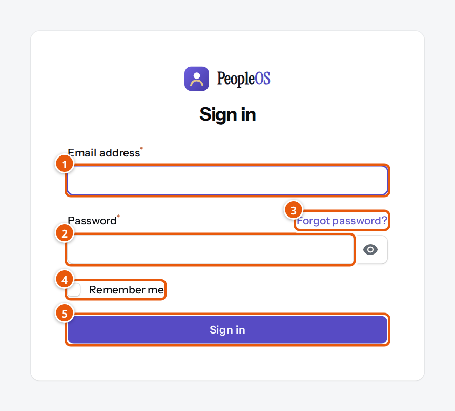
- Email address — your work e-mail address.
- Password — your password. The eye icon shows what you typed.
- Forgot password? — opens the page where you ask for a reset link.
- Remember me — keeps you signed in on this device. Use it only on a device that is yours.
- Sign in — signs you in.
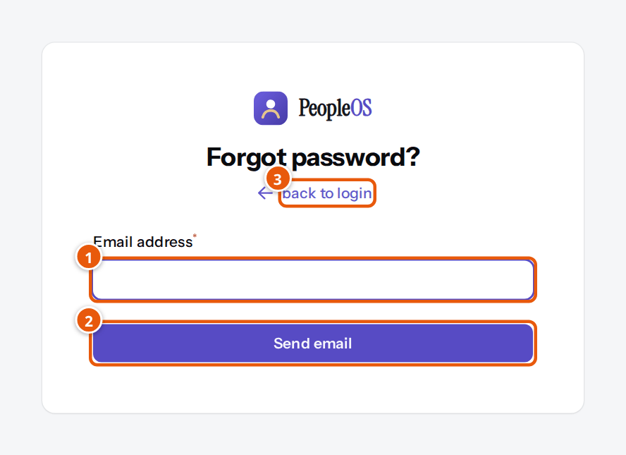
- Email address — the address you sign in with.
- Send email — asks for a reset link.
- back to login — returns to the sign-in page.
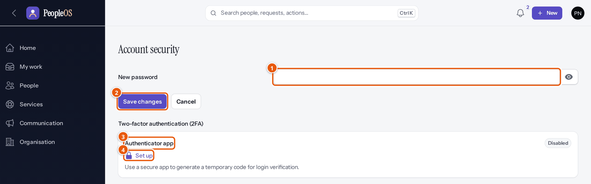
- New password — type a new password here. Two more fields then appear: Confirm new password and Current password.
- Save changes — saves the new password. Cancel leaves without changing anything.
- Authenticator app — shows Enabled or Disabled on the right.
- Set up — starts setting up an authenticator app. Once it is set up, you will see Regenerate recovery codes and Turn off instead.
Your name and e-mail address are not on this page. They are managed by your administrator.
Flowchart — Signing in and what you can see. What happens between the sign-in page and Home. Roles: everyone. Starts: you open the sign-in page. Ends: Home opens, composed for your role.
Important: a suspended account and a suspended organisation are kept out at the password step, with the same message as a wrong password. If you are sure your details are right, contact your administrator.
Tasks
Task: Sign in
Purpose: open your PeopleOS workspace. Before you start: you need an active account (you accepted your invitation) and your organisation's PeopleOS address.
- Open your organisation's PeopleOS address. The Sign in page appears.
- Enter your Email address and Password (both required).
- Tick Remember me only on your own device.
- Click Sign in.
- If you use an authenticator app, the page asks you to Verify your identity. Enter the code under Enter the 6-digit code from the authenticator app and click Confirm sign in.
Expected result: Home opens with a greeting such as "Good morning, Priya." and a one-sentence summary of your day. How to verify: your initials appear in the round avatar at the top right. Common mistakes: typing a personal e-mail address instead of your work address; leaving Caps Lock on. If it fails: "These credentials do not match our records." means the address or password is wrong, or your account or organisation is not active. After several failed attempts PeopleOS shows Too many login attempts and asks you to wait. Use Forgot password? or contact your administrator.
Tip: if you ticked Remember me and you use an authenticator app, PeopleOS asks you to Confirm it is you the next time you come back: enter a code and click Verify, or click Sign out.
Task: Activate your account from an invitation (first sign-in)
Purpose: choose your own password and start using PeopleOS. Before you start: your administrator has created your user. You receive an e-mail titled "You have been invited to your organisation on PeopleOS".
- Open the e-mail and click Accept the invitation. The page Accept your invitation opens and says "Choose a password for your address."
- Enter a Password and the same password again in Confirm password (both required).
- Click Activate my account.
- PeopleOS shows "Your account is ready. Sign in with your new password." and opens the sign-in page.
- Sign in. If your organisation requires multi-factor sign-in, PeopleOS now asks you to set up your authenticator app (see the next tasks).
Expected result: your account is active and your e-mail address counts as confirmed. How to verify: you can sign in with the new password. Common mistakes: opening the link while someone else is signed in on the same browser. PeopleOS then says "You are signed in to PeopleOS. Sign out, then open the invitation link again." If it fails:
- "This invitation link is invalid or has expired. Ask your administrator to send a new one." appears for every reason a link cannot be used: it was already used, it expired (by default after 72 hours), a newer invitation replaced it, it was revoked, or the organisation is suspended. Ask your administrator to use Send a new invitation.
- If the password does not meet your organisation's rules, the form tells you what to fix, for example "Use at least 10 characters.", "Mix upper- and lower-case letters." or "Include a number." (the minimum length is set by your organisation).
- After five attempts in a minute, PeopleOS asks you to wait ("Too many attempts. Try again in … seconds.").
Flowchart — First sign-in from an invitation. Roles: administrator, new user. Starts: the administrator creates the user. Ends: the new user reaches Home.
Task: Reset a forgotten password
Purpose: choose a new password without help from your administrator. Before you start: your account must be active. An invited user who has not yet activated the account must use the invitation instead.
- On the sign-in page, click Forgot password?.
- Enter your Email address (required) and click Send email.
- PeopleOS always answers: "If an account uses that address, we have sent it a link to choose a new password." and "The link expires in 60 minutes."
- Open the e-mail "Reset your PeopleOS password" and click Choose a new password.
- On Reset your password, enter your Email address, a new Password and Confirm password, then click Reset password.
- PeopleOS shows "Your password has been changed. Sign in with it now." and signs you out of every other device.
Expected result: you can sign in with the new password. How to verify: sign in. If you use an authenticator app, you are still asked for a code: resetting a password never switches multi-factor sign-in off. Common mistakes: waiting longer than the link's lifetime; using an old e-mail after asking for a newer link. If it fails: "This password reset link is invalid or has expired. Request a new one." appears for any link that cannot be used. If your new password breaks a rule, you are told what to fix and the same link still works. If no e-mail arrives at all, your account may be suspended or still waiting for its invitation: contact your administrator, who can also send you a reset link (Send password reset link).
Note: the answer on screen is identical whether or not the address belongs to an account. This is deliberate: it stops anyone from discovering which addresses exist.
Flowchart — Resetting a forgotten password. Roles: any user. Starts: Forgot password? on the sign-in page. Ends: the user signs in with the new password.
Task: Set up your authenticator app
Purpose: add a second check to your sign-in. Before you start: install an authenticator app (for example Google Authenticator) on your phone.
- Open avatar menu › Account security. (If your organisation requires it, PeopleOS opens the page Set up two-factor authentication (2FA) for you.)
- Under Authenticator app, click Set up.
- In Set up authenticator app, scan the QR code with your phone, or type the code shown under "Or enter this code manually:".
- Save the recovery codes in a safe place. They are shown only once. You can copy or download them all at once.
- Enter the code under Enter the 6-digit code from the authenticator app and click Enable authenticator app.
- On the required set-up page, click Continue.
Expected result: "Authenticator app has been enabled". The page now shows Enabled. How to verify: sign out and sign in again: PeopleOS asks for a code. Common mistakes: not saving the recovery codes; letting the phone's clock drift (codes are time-based). If it fails: "The code you entered is invalid." — wait for the next code and try again. After several wrong codes PeopleOS asks you to wait.
Task: Sign in without your phone, or after losing it
Purpose: get in when your authenticator app is not available.
- At Verify your identity (or Confirm it is you), click Use a recovery code instead.
- Enter one of your saved recovery codes and confirm. Each code works once.
- Once signed in, open Account security and click Regenerate recovery codes if you have used several. The old codes stop working immediately.
If it fails: if you have neither your phone nor a recovery code, ask your administrator. They can use Reset multi-factor authentication on your user, with a reason. This removes your authenticator, signs you out everywhere, and you set up a new one at your next sign-in if your organisation requires it. Administrators cannot do this for their own account.
Task: Change your password
Purpose: replace your password while signed in.
- Open avatar menu › Account security.
- Type your new password in New password.
- Fill in Confirm new password and Current password (both appear once you start typing).
- Click Save changes.
Expected result: "Saved". PeopleOS signs you out on your other devices; this device stays signed in. If it fails: the form lists the rule your new password breaks (length, upper- and lower-case letters, a number), or says your current password is wrong.
Task: Confirm your e-mail address
Purpose: prove that your mailbox is yours. PeopleOS asks for this when your address has not been confirmed — for example after an administrator changes it.
- After signing in, the page Verify your email address says it has sent an e-mail to your address.
- Open that e-mail and click the confirmation link while signed in as yourself.
- If nothing arrived, click Resend it under "Not received the email we sent?".
Expected result: you continue to Home. Accepting an invitation or resetting your password also confirms your address, so most people never see this page. People who sign in through single sign-on are not asked.
Statuses explained
| Account status | What it means | What happens next |
|---|---|---|
| Invited | Your user exists but you have not chosen a password yet | Use the invitation link. A password reset is not sent to invited users |
| Active | You can sign in | — |
| Suspended | Your administrator has stopped your access | You cannot sign in, and any open session ends. Contact your administrator |
Example from everyday work
Illustrative scenario. Kavya Menon, Head of People at Demo Group, adds a new joiner as a user. The new joiner receives the invitation e-mail, chooses a password that meets Demo Group's rules and signs in. Months later she changes phones without moving her authenticator app. She signs in with one of her recovery codes, then uses Regenerate recovery codes and sets up the app again on the new phone.
Related modules
- Users and Security policy (Admin chapter) — where administrators invite users, send a new invitation or reset link, reset multi-factor sign-in, and decide whether multi-factor sign-in is required.
- Single sign-on (Admin chapter) — if your organisation uses it, your administrator gives you the sign-in link.
Home
Status Available
Overview
Home answers one question: what matters to me now? At the top, a one-sentence brief counts what is waiting for you — decisions, things that need attention, things due today, and things that changed since your last visit. Below it, each item comes with its reason ("Payroll cannot pay you without a primary bank account", "3 already past the end date").
Home is composed for your role. If you hold more than one role (for example, a manager is also an employee), View as chips let you switch between views. The views are:
| View (chip label) | Who has it | What Home leads with |
|---|---|---|
| For you | Everyone with an employee record | Your own dates, reminders, day, requests and leave |
| Your team | People with direct reports | Decisions, team exceptions, team pulse |
| People operations | HR roles | Probation, onboarding, documents and HR requests at risk |
| Payroll | Payroll roles | The latest payroll run and its exceptions |
| Company | Executives | The workforce pulse: joiners, exits, moves and promotions |
| Administration | Tenant HR Admin, Tenant Super Admin | Governance items and figures about access and configuration |
Every number on Home comes from records you are allowed to see. A view never gives you more access: each screen it links to checks your permissions again.
Where to find it
- Menu path: Home (first item in the sidebar). PeopleOS also opens Home after you sign in.
- Who can open it: every role (Account Owner, Alumni, Asset Admin, Attendance Admin, Auditor, Employee, Executive, HR Executive, HR Manager, Manager, Payroll Admin, Performance Admin, Tenant HR Admin, Tenant Super Admin).
- Set-up needed first: none. Personal parts (your day, leave, momentum) need your user to be linked to an employee record by HR.
The screen at a glance
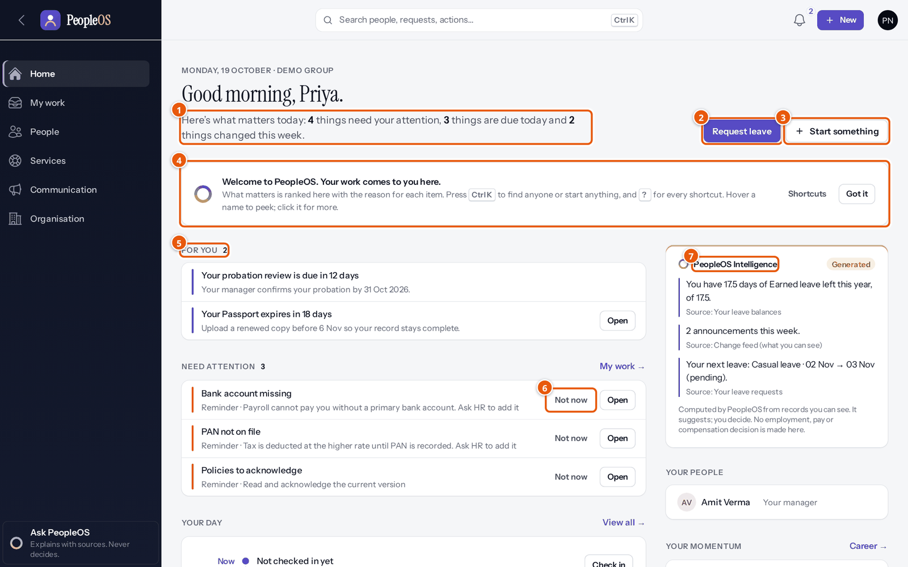
- The brief — one sentence counting what needs you, with the numbers in bold. "You're all caught up. Nothing needs you right now." when there is nothing.
- Primary button — the most useful action for your view. Employees see Request leave; people with decisions waiting see Review N decisions; executives see Open Workforce pulse; administrators see Open Admin Centre.
- Start something — opens the list of actions you can start (the same list as + New).
- Welcome note — shown on your first visits. Shortcuts lists the keyboard shortcuts; Got it hides the note for good.
- For you — dates and changes on your own record, such as "Your probation review is due in 12 days" or "Your Passport expires in 18 days".
- Need attention — up to three next actions, most urgent first. Open takes you to the right screen; Not now hides the item until tomorrow (the item itself is not changed). My work → shows them all.
- PeopleOS Intelligence — short statements computed from your records, each with its source ("Source: Your leave balances"). It ends with "It suggests; you decide. No employment, pay or compensation decision is made here."
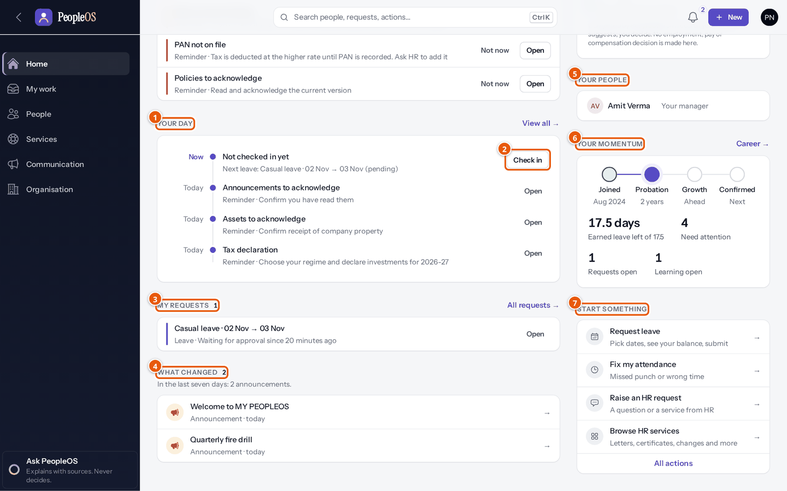
- Your day — your attendance today ("Not checked in yet"), your next leave, and what is due today. View all → opens My work.
- Check in / Check out — records your attendance from the web, if your organisation allows it.
- My requests — your own requests that are with someone else, for example "Casual leave · 02 Nov → 03 Nov — Waiting for approval". All requests → opens My work.
- What changed — joiners, moves, reporting changes, exits and announcements you can see, "Since your last visit" (or "In the last seven days" on your first visit). Click a row for details.
- Your people — your manager and anyone who reports to you. Click a name to preview the person.
- Your momentum — your journey (Joined, Probation, Growth, Confirmed) and a few figures: leave left, things needing attention, open requests, open learning. Career → opens My career.
- Start something — your most frequent actions (Request leave, Fix my attendance, Raise an HR request, Browse HR services) and All actions.
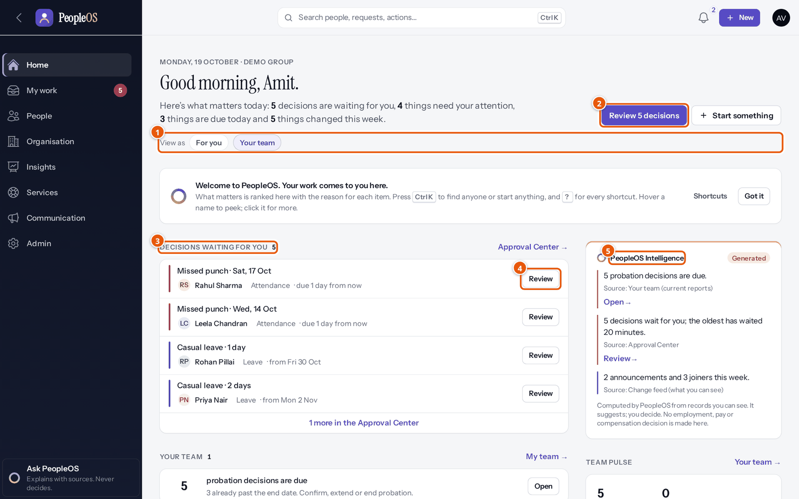
- View as — one chip per view you hold. Click one to switch the whole Home; PeopleOS remembers your choice.
- Review 5 decisions — opens the Approval Center.
- Decisions waiting for you — up to four decisions with the person, the kind of request and when it is due. "1 more in the Approval Center" links to the rest.
- Review — opens the decision in a side panel, with the same buttons as the Approval Center.
- PeopleOS Intelligence — for managers, for example "5 probation decisions are due" with an Open → link.
Further down, a manager also sees Your team (team exceptions such as probation decisions), Your day, What changed, For you, and on the right Team pulse (team in today, on leave, approvals pending, needing attention).
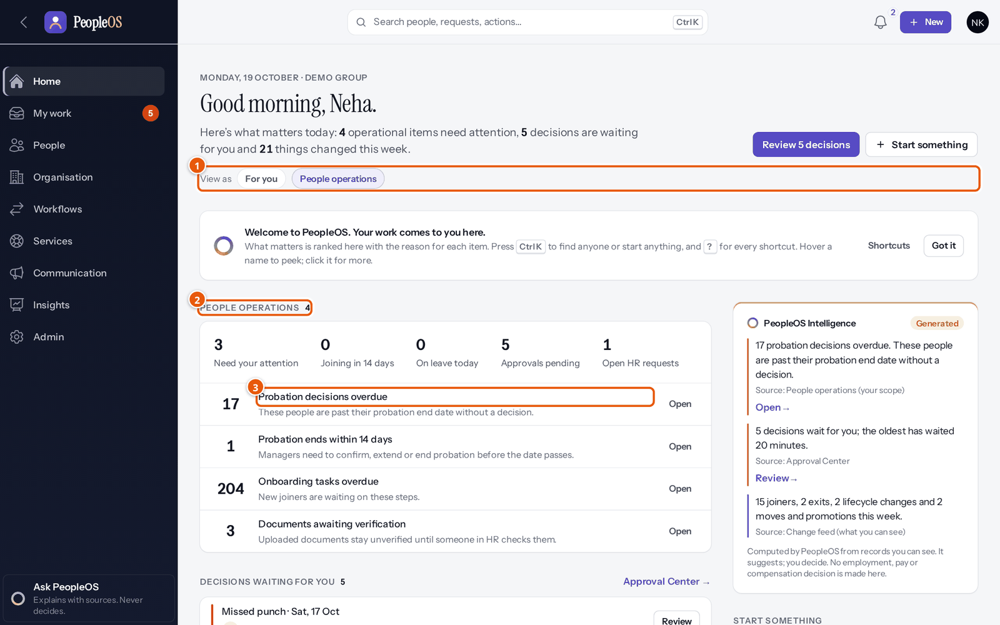
- View as — For you and People operations.
- People operations — figures (Need your attention, Joining in 14 days, On leave today, Approvals pending, Open HR requests) and the items at risk in your scope.
- Items at risk — for example "Probation decisions overdue", "Probation ends within 14 days", "Onboarding tasks overdue", "Documents awaiting verification". Each has Open.
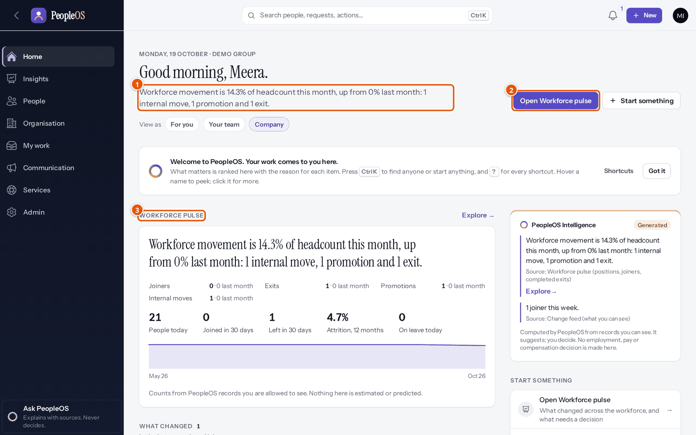
- Workforce headline — for executives the brief starts with movement this month against last month.
- Open Workforce pulse — opens the Workforce Command Centre (see the Insights chapter).
- Workforce pulse — joiners, exits, promotions and internal moves against last month; people today, joined and left in 30 days, attrition over 12 months, on leave today; a trend chart. The card states: "Counts from PeopleOS records you are allowed to see. Nothing here is estimated or predicted."
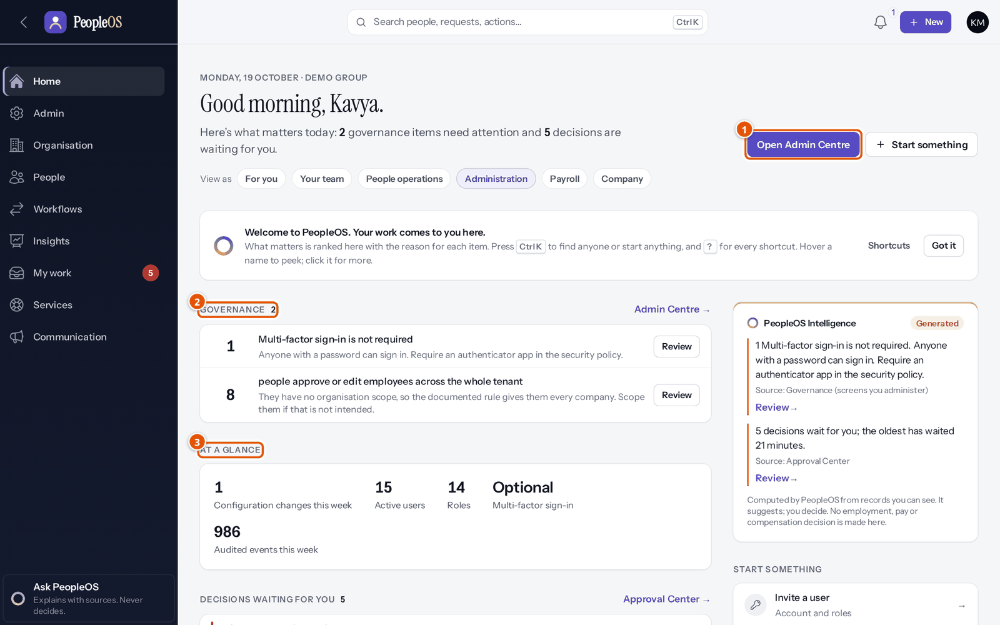
- Open Admin Centre — opens Admin › All modules.
- Governance — settings that need an administrator, each with Review. In the demo: "Multi-factor sign-in is not required" and "people approve or edit employees across the whole tenant".
- At a glance — Configuration changes this week, Active users, Roles, Multi-factor sign-in (Optional or Required), Audited events this week.
The Payroll view (for Payroll Admins) leads with a Payroll card: the latest run (period and status), the number of employees and exceptions ("Resolve before sign-off"), and a Control room → link. Its Start something list offers Payroll control room and Open a payroll run.
Tasks
Task: Switch your Home view
Purpose: see Home from another of your roles. Before you start: you hold more than one view (the View as chips are shown only then).
- Open Home.
- Click a chip after View as, for example Your team.
Expected result: the whole Home changes: the brief, the primary button, the sections and the Start something list. The phone bottom bar changes too. How to verify: the chosen chip is highlighted. Next time, Home opens in that view. Common mistakes: expecting a view to give extra access. It does not; it only changes what Home shows first. If it fails: to go back to automatic choice, open Preferences and choose Automatic under Home opens as.
Task: Put a reminder aside until tomorrow
Purpose: clear your list without losing the item.
- On Home, under Need attention, click Not now on the item.
Expected result: the item disappears from Home until tomorrow. The reminder itself is unchanged and still shows in My work.
Example from everyday work
Illustrative scenario. On Monday morning Amit Verma opens PeopleOS. The brief says five decisions are waiting. He clicks Review 5 decisions, deals with Rahul Sharma's missed punch first because it is due tomorrow, then switches to For you to request his own leave.
Related modules
- My work and Approvals — where every item on Home is listed in full.
- Insights chapter — Workforce pulse and People analytics behind the executive view.
- Admin chapter — the Admin Centre behind the administration view.
Finding your way: navigation, search and quick actions
Status Available
Overview
The workspace has the same frame on every page: a sidebar on the left, a top bar with search, notifications and your avatar, and, on module pages, an area bar that shows where you are. The sidebar has up to nine sections — Home, My work, People, Organisation, Insights, Workflows, Services, Communication, Admin — and shows only those where you may open at least one screen. Their order follows your role: an employee's sidebar starts Home, My work, People, Services; an administrator's starts Home, Admin, Organisation.
Where to find it
- Menu path: always visible. Search: the bar at the top or Ctrl K (⌘K on a Mac) or /.
- Who can open it: everyone.
- Set-up needed first: none.
The screen at a glance
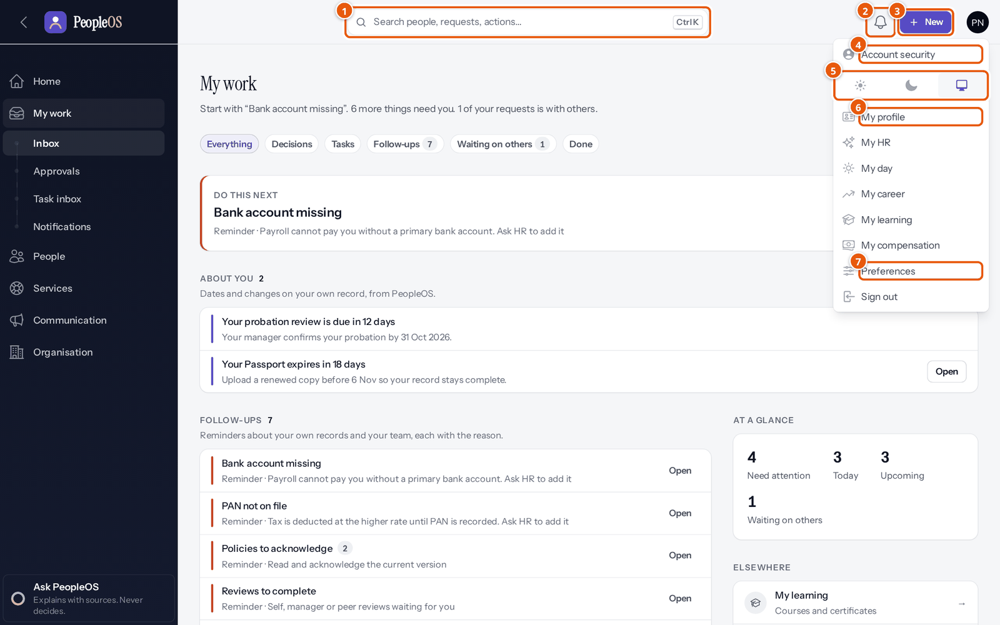
- Search people, requests, actions… — opens search and commands (also Ctrl K).
- Bell — your notifications. The small number is how many are unread. The panel has Mark all as read and Clear.
- + New — starts something new: leave, an HR request, an approval and more (also the N key).
- Account security — your password and authenticator app.
- Theme switcher — light, dark or follow your device ("system").
- Personal pages — My profile, My HR, My day, My career, My learning, My compensation. You see only those that apply to you.
- Preferences — how PeopleOS looks and opens for you. Sign out is at the bottom of the menu.
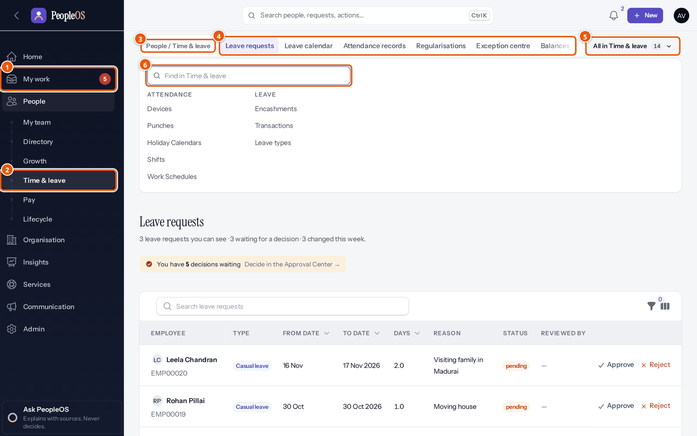
- Sidebar section with a count — My work shows how many decisions wait for you.
- Sub-menu — clicking a section opens its areas (here People: My team, Directory, Growth, Time & leave, Pay, Lifecycle).
- Where you are — "People / Time & leave" (section / area).
- Everyday modules — the most-used screens of the area, one click away.
- All in Time & leave — the rest of the area (set-up and reference screens), with how many there are.
- Find in Time & leave — type to filter that list.
In this handbook, a path such as People › Time & leave › Leave requests means: click People in the sidebar, then Time & leave, then Leave requests in the area bar. A path with All in … means the screen is in that menu. Administrators can also open Admin › All modules to see every screen they may open.
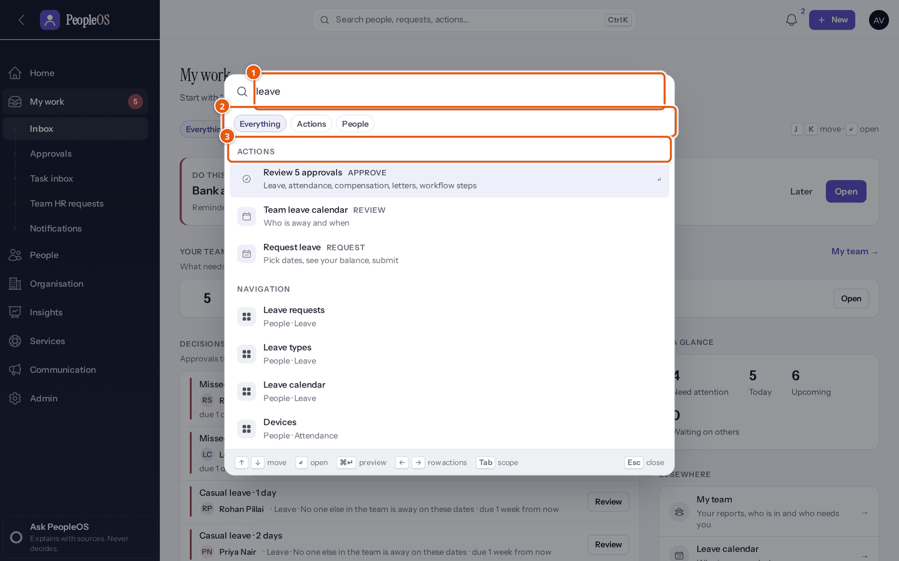
- Search box — type a name, a request number, a word from a policy, or what you want to do.
- Everything / Actions / People — narrow the search (the Tab key switches).
- Result groups — for example Actions (things you can start), Navigation (screens), People, Requests, Knowledge, Documents, HR services, Intelligence (short answers such as "On leave today"). Before you type, you see Recent items and Suggested actions.
Use the arrow keys to move, Enter to open, → for a result's own actions (for a person: Open profile, Preview, Journey, In org map, and Start a change if you may), and Esc to close. Results only include what you have access to.
Keyboard shortcuts
Press ? anywhere (or Shortcuts in the welcome note) for the list:
| Keys | What they do |
|---|---|
| Ctrl K or / | Search and commands |
| N | Start something new |
| G then H / W / A / P / O | Go to Home / My work / Approvals / People / the org map |
| J / K | Move through a list |
| A / R | Approve / reject the selected item (opens the confirmation; nothing is decided until you confirm) |
| Esc | Close a panel or dialog |
Tasks
Task: Find a person or a screen
- Click the search bar or press Ctrl K.
- Type at least two letters of a name (for a person) or a word such as "payslip" (for a screen).
- Use the arrow keys and press Enter, or click the result.
Expected result: the person's preview or profile, or the screen, opens. Common mistakes: expecting to find people outside your access. An employee finds their own circle (for example their manager); HR finds the people in their scope. If it fails: "No results for …" — try another spelling, a surname, or an action word such as "leave" or "approve".
Task: Start something new
- Click + New in the top bar (or press N, or click Start something on Home).
- Choose an action under Start something, for example Request leave, Fix my attendance, Raise an HR request or Update bank details.
Expected result: the right form or screen opens. The list contains only actions your role allows.
Ask PeopleOS
Status Available with limitations
Ask PeopleOS (bottom of the sidebar: "Explains with sources. Never decides.") opens the PeopleOS Assistant panel. The same assistant has its own page, Assistant, in the "You / Your pages" area bar. It is available to the Employee, Executive, HR Manager, Manager, Payroll Admin, Tenant HR Admin and Tenant Super Admin roles, when your organisation has the assistant switched on.
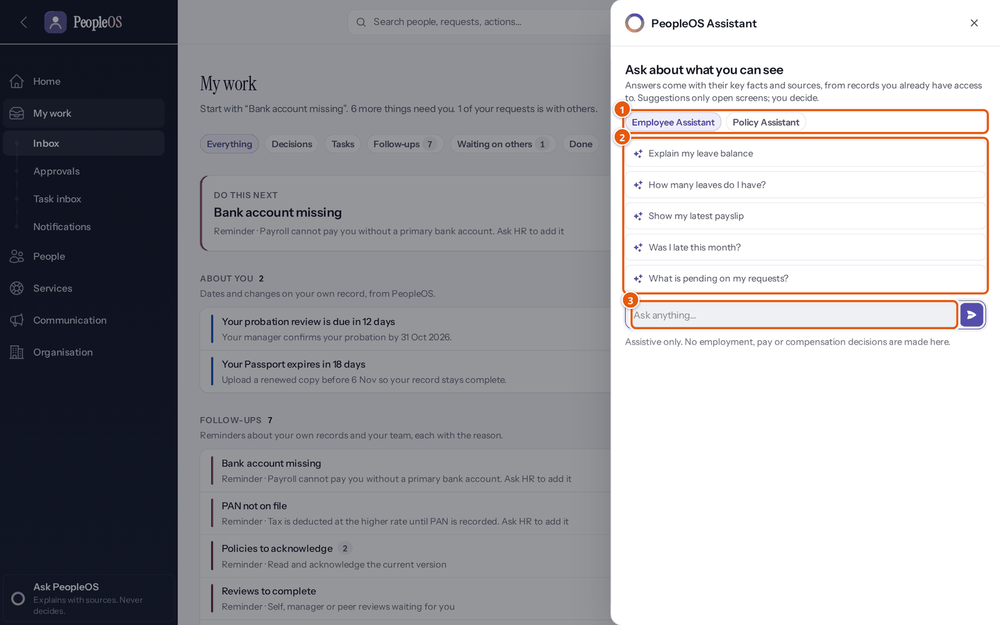
- Assistant tabs — for example Employee Assistant and Policy Assistant; you see those your role allows.
- Suggested questions — for example "Explain my leave balance", "Show my latest payslip", "What is pending on my requests?".
- Ask anything… — type your own question and send it.
Task: Ask a question
- Click Ask PeopleOS in the sidebar.
- Click a suggested question, or type your own in Ask anything… and press the send button.
- Read the answer, its key facts and its sources. A suggestion only opens a screen; you decide what to do.
Note: answers are computed from records you may already see. By default no external AI model is used; text marked as AI-generated appears only if your organisation switches that feature on, and should be checked before you act. The assistant never changes records, scores people or makes employment, pay or compensation decisions. More about AI is in the Insights chapter.
Related modules
- Admin › All modules — the full list of screens you may open (Admin chapter).
- Insights chapter — assistants and PeopleOS Intelligence in depth.
My work (Inbox)
Status Available
Overview
My work is your single to-do list. It gathers decisions waiting for you, tasks given to you, reminders about your own record (and your team, if you manage people), your own requests that are with someone else, and what you finished recently. Every row opens the screen that owns the action, so you never have to remember where something lives. My work only lists; it does not change anything by itself.
Where to find it
- Menu path: My work › Inbox (the My work section opens it). Keyboard: G then W.
- Who can open it: every role.
- Set-up needed first: none.
The screen at a glance
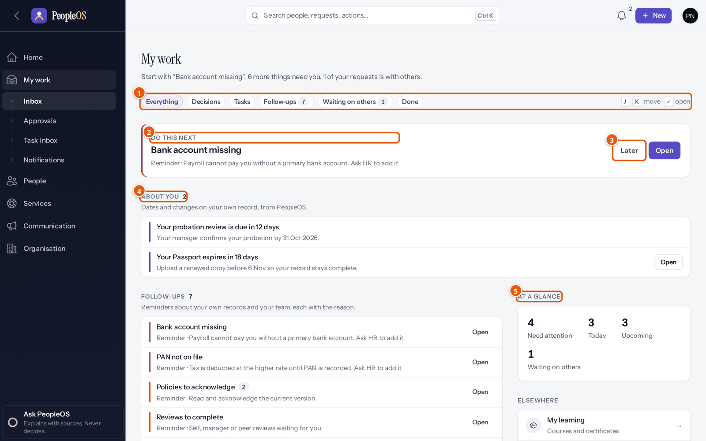
- Filters — Everything, Decisions, Tasks, Follow-ups, Waiting on others, Done, each with a count. J / K move through the list; Enter opens.
- Do this next — the single most urgent item, with its reason.
- Later — hides that item until tomorrow; Open takes you to it.
- Your own block — what your role is here for: About you for employees ("Dates and changes on your own record"), Your team for managers, People operations for HR, Payroll, Workforce for executives, Governance for administrators.
- At a glance — counts of Need attention, Today, Upcoming and Waiting on others.
Further down: Decisions (with Review), Follow-ups ("Reminders about your own records and your team, each with the reason"), My requests ("Your requests and where each one stands"), Coming up ("Due later. Nothing to do yet." with Continue), and Elsewhere (links such as My learning, My career, Approval Center, Notifications, My HR).
Tip: in the demonstration, Priya Nair (an employee) sees 4 items needing attention (missing bank account, missing PAN, policies to acknowledge, reviews to complete), 3 for today (announcements and assets to acknowledge, tax declaration), 3 coming up (policy and announcement acknowledgements) and 1 request waiting on others (her casual leave, waiting for her manager). She has no decisions, because no one reports to her and her role approves nothing.
Tasks
Task: Work through your list
- Open My work › Inbox.
- Start with Do this next and click Open.
- Complete the action on the screen that opens (for example upload a document, acknowledge a policy).
- Return to My work; the item has gone once the underlying record is done.
Expected result: counts go down as you finish items. How to verify: the brief at the top says "You're all caught up. No decisions require your attention right now." when nothing is left. If it fails: if Open takes you to a screen where you cannot act, the action may belong to HR (for example "Bank account missing — Ask HR to add it"). Raise an HR request from + New.
Task: Check where your own requests stand
- Open My work › Inbox and click Waiting on others.
- Read each row: the request, who it is with, and since when ("Waiting for approval since …").
Expected result: your pending leave, attendance corrections, HR requests and letters are listed until someone decides them.
Related modules
- Approvals — where decisions listed here are made.
- Time & leave, Services (My HR) chapters — where most of your requests come from.
Approvals (Approval Center)
Status Available with limitations (see the notes below)
Overview
The Approval Center shows every decision waiting for you — leave requests and leave cancellations, attendance corrections, compensation changes, letters and workflow steps — in one list, most urgent first. When you select an item, PeopleOS shows what is being asked, by whom, why, the impact (for example "No one else in the team is away on these dates"), the effective date and, where it applies, a Before → After comparison such as the leave balance before and after.
The Approval Center does not decide anything by itself. Your decision is sent to the module that owns the request, which checks its own rules again: whether the item is still waiting, whether you are allowed to decide it, whether the balance is still enough, and separation of duties (for example, the person who proposed a pay change never decides it).
Where to find it
- Menu path: My work › Approvals. Also Review N decisions on Home. Keyboard: G then A.
- Who can open it: Account Owner, Asset Admin, Attendance Admin, Employee, HR Executive, HR Manager, Manager, Payroll Admin, Tenant HR Admin, Tenant Super Admin. What each person sees in the list depends on what they may decide: a manager sees their team's requests; HR sees requests in their scope.
- Set-up needed first: reporting lines (who manages whom) and roles. Approval chains for workflows are set up in Workflows (Workflows chapter).
The screen at a glance
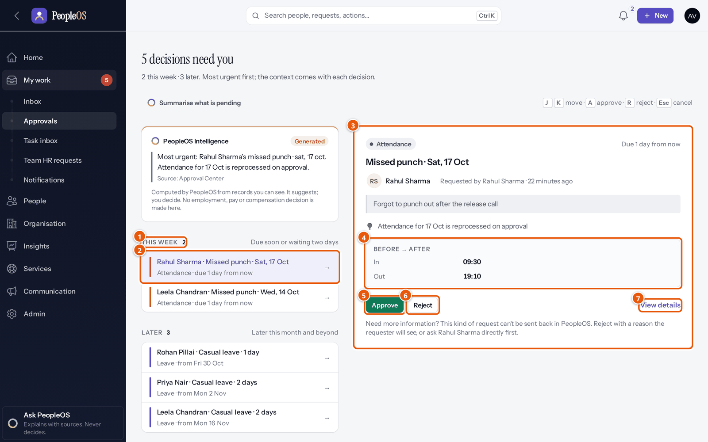
- Groups — Urgent ("Overdue, starting within a day, or flagged"), This week ("Due soon or waiting two days") and Later ("Later this month and beyond"), each with a count.
- A row in the list — the person, the request and when it is due or starts. Click it to see the decision.
- Decision card — the kind of request, the person, "Requested by … · … ago", the requester's reason, and the impact.
- Before → After — what changes if you approve (here, the corrected in and out times).
- Approve — the label depends on the item: Approve, Mark done (a workflow task), Mark reviewed (first step of a pay change) or Approve cancellation (a leave cancellation).
- Reject — or Keep leave for a cancellation request. Pay changes also offer Return to proposer.
- View details — opens the full record in its own module.
Above the list, managers may see Summarise what is pending (opens the assistant) and the PeopleOS Intelligence card. The heading says how many decisions need you; at the bottom, Completed lists the decisions you took in the last two weeks (Show your last two weeks). On narrower screens, the decision opens in a side panel instead of beside the list.
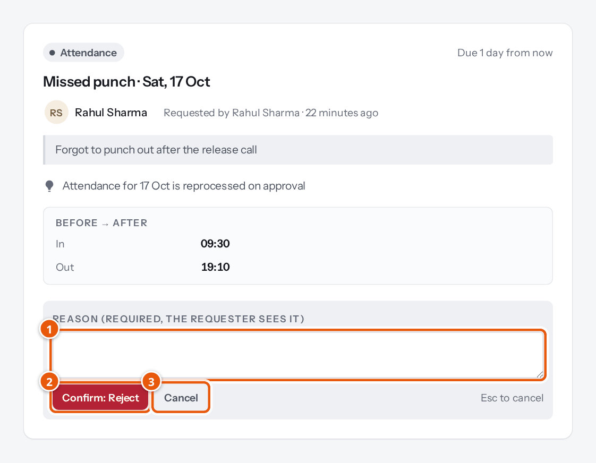
- Reason (required, the requester sees it) — for Approve the box is Note (optional).
- Confirm: Reject — sends the decision. For approve it reads Confirm: Approve.
- Cancel — goes back without deciding (or press Esc).
Tasks
Task: Approve a request
Purpose: agree to a request with its context in front of you. Before you start: the item is in your Approval Center.
- Open My work › Approvals.
- Click the item in the list. Read the reason, the impact and the Before → After.
- Click Approve (or the item's own label, such as Mark done).
- Optionally type a Note (optional).
- Click Confirm: Approve.
Expected result: a short confirmation such as "Leave approved" or "Approved and attendance reprocessed". The item leaves the list and the next one is selected. The decision appears under Completed. How to verify: the requester's request shows the new status in their own My work and in the owning module. The decision is recorded with who, what and when. Common mistakes: approving without opening View details when the context is not enough. If it fails: a Not done message explains why. "This item is no longer waiting for your decision." means someone else decided it first, it was withdrawn, or it is no longer yours. "This request has already been decided." means the same. A leave approval can also stop with "Insufficient … balance" if another approval used the balance meanwhile.
Task: Reject a request
- Select the item and click Reject.
- Type a reason in Reason (required, the requester sees it). It is required.
- Click Confirm: Reject.
Expected result: "Leave rejected", "Correction rejected" or similar. If it fails: "Add a reason so the requester knows what to do next." means the reason box is empty.
Note: most requests cannot be "sent back" for changes. PeopleOS says so on the card: "Need more information? This kind of request can't be sent back in PeopleOS. Reject with a reason the requester will see, or ask … directly first." Only pay changes have Return to proposer.
Task: Decide from Home without leaving it
- On Home, under Decisions waiting for you, click Review.
- Decide in the side panel exactly as in the Approval Center.
Expected result: the panel shows the confirmation. Click Close.
Flowchart — Deciding an item in the Approval Center. Roles: manager, HR, payroll or administrator (approver); employee (requester). Starts: a request needs your decision. Ends: the decision is applied by the owning module and the requester can see it.
Important: a request can appear in several people's Approval Centers at once (for example the manager's and HR's). The first decision counts; for everyone else the item disappears. Whether the requester receives a notification depends on your organisation's Notification rules (Communication chapter); the status itself is always visible to them.
Note: when very many decisions are waiting, PeopleOS lists the first 200 items of each kind (earliest first) and shows "200+" so it never under-counts. Show … more at the bottom loads the next items, 25 at a time.
Statuses explained
| Group | What it means | What happens next |
|---|---|---|
| Urgent | Overdue, starting within a day, or flagged (for example "The leave has already started", "Several people in the team are away", "Close to the payroll cut-off", "Effective date already passed", or escalated) | Decide first |
| This week | Due within two days, taking effect within a week, or waiting for two days already. Attendance corrections are due two days after they are raised | Decide soon |
| Later | Everything else | Decide when convenient |
| Completed | Decisions you took in the last two weeks | Open them to review |
Example from everyday work
Illustrative scenario. Amit Verma opens My work › Approvals. Rahul Sharma's missed punch is at the top: "Forgot to punch out after the release call", with In 09:30 and Out 19:10. Amit approves it, and PeopleOS confirms that attendance is reprocessed. He then looks at Priya Nair's two days of casual leave, sees that no one else in the team is away, and approves it.
Related modules
- Time & leave chapter — leave and attendance correction rules.
- Compensation, Letters and Workflows chapters — the other kinds of decision.
- Communication chapter — Notification rules that tell requesters about decisions.
Task inbox
Status Available
Overview
The Task inbox (page title My tasks) lists workflow steps and onboarding tasks assigned to you, or to one of your roles. Workflow approvals also appear in the Approval Center; the Task inbox adds onboarding tasks and your history.
Where to find it
- Menu path: My work › Task inbox.
- Who can open it: Account Owner, Asset Admin, Auditor, Employee, HR Executive, HR Manager, Manager, Payroll Admin, Tenant HR Admin, Tenant Super Admin.
- Set-up needed first: workflows or onboarding plans that create tasks (Workflows and Lifecycle chapters).
The screen at a glance
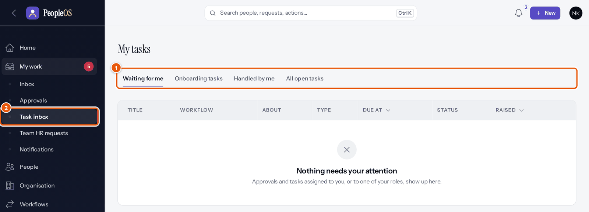
- Tabs — Waiting for me, Onboarding tasks, Handled by me, and All open tasks (only for roles allowed to see everyone's tasks). Columns: Title, Workflow, About, Type, Due at (red when overdue), Status, Raised; Assigned to in All open tasks. The onboarding tab shows For, Phase, Type and Due on.
- Task inbox in the sidebar — shows a count when tasks are waiting.
Task: Complete a task
- Open My work › Task inbox.
- On a workflow approval, click Approve (note optional) or Reject (note required). On a workflow task, click Mark done. Open run shows the whole workflow, if you may view workflows.
- On the Onboarding tasks tab, click Done. A document task asks you to choose Attach uploaded document (upload it on the person's Documents tab first). HR can click Skip with a note.
Expected result: a confirmation such as "Approved" with the run's new status, or "Task completed". If it fails: "Not allowed" with a reason, for example when the task is no longer yours.
Team HR requests
Status Available with limitations (status only)
Overview
Managers can follow the HR requests raised by people who report to them, without seeing their content. The page shows only the number, the team member, the service, the status and the dates. Sensitive and confidential requests, request details and HR conversations are never shown here. If your organisation offers services that managers may raise for a team member, they appear as buttons under Raise for a team member.
Where to find it
- Menu path: My work › Team HR requests.
- Who can open it: Manager, HR Manager, Tenant HR Admin, Tenant Super Admin. It covers your direct reporting lines only.
- Set-up needed first: HR services marked as visible to managers (Services chapter).
The table columns are Number, Team member, Service, Status, Raised and Resolved. When there is nothing to show, the page says "No HR requests from your team that you may see."
Notifications
Status Available
Overview
PeopleOS keeps every in-app notification you receive. The bell in the top bar shows the latest ones; the Notifications page shows them all, grouped, with unread items first in the order that matters for your role. Opening a notification takes you straight to its context — but only if you may open that record.
Where to find it
- Menu path: My work › Notifications, or the bell in the top bar.
- Who can open it: every role.
- Set-up needed first: none. Which events send notifications is set by your administrator in Notification rules (Communication chapter). Task assignments always reach the assignee in-app.
The screen at a glance
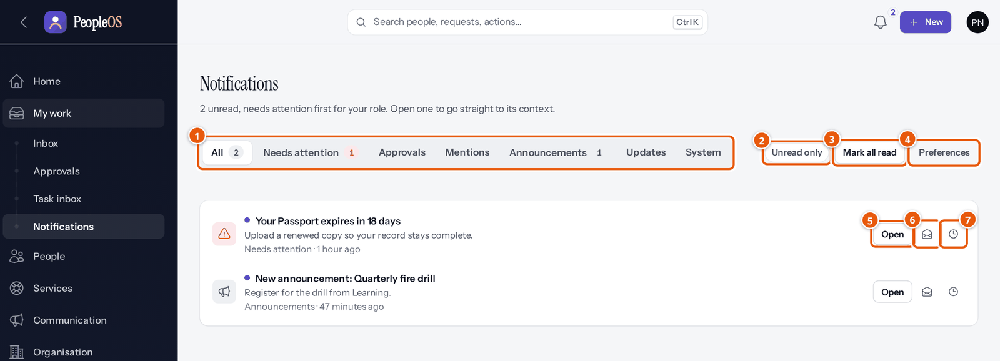
- Groups — All, Needs attention, Approvals, Mentions, Announcements, Updates, System, with unread counts.
- Unread only — hides what you have read. Snoozed appears when you have snoozed something.
- Mark all read — marks every notification as read.
- Preferences — opens My HR › Preferences, where you choose how optional communication reaches you.
- Open — marks the notification read and opens its context.
- Mark read / Mark unread — the envelope icon.
- Snooze — For an hour, Until tomorrow 9:00 or For a week. Snoozed notifications come back on their own; Bring back now returns one early.
Task: Choose how announcements reach you
- Open My work › Notifications and click Preferences (or Preferences › Notification preferences).
- Under Communication preferences, tick In-app and/or Email for Announcement, Circular, Newsletter and Survey invitations and reminders.
Expected result: optional communication follows your choice. Policy publication and Instruction are always delivered (mandatory). Notifications about your own requests, leave, tasks and cases are not affected by these choices.
My day
Status Available
Overview
My day is a compact personal page for today: your attendance, leave balances, latest payslip, a few counters for this period, and the reminders that need you. It is meant for employees who want one page instead of Home's fuller view.
Where to find it
- Menu path: avatar menu › My day. It also appears in the "You / Your pages" area bar with your other personal pages.
- Who can open it: anyone whose user is linked to an employee record.
- Set-up needed first: your employee record (HR).
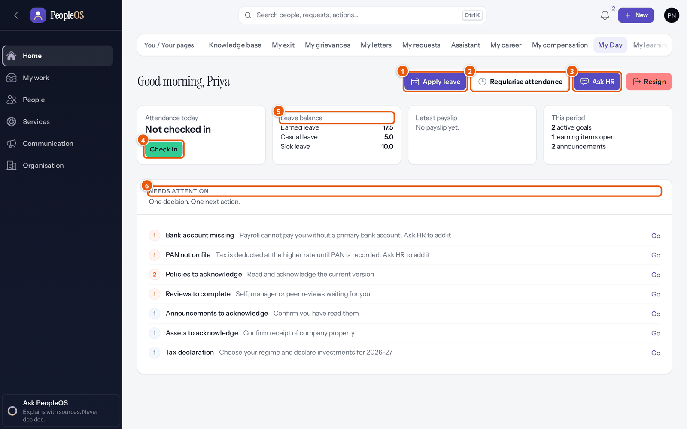
- Apply leave — opens the leave form (Time & leave chapter).
- Regularise attendance — asks your manager to correct a day's attendance (date, type, actual in and out, reason).
- Ask HR — raises an HR request. Resign starts a resignation (Exit chapter); View payslip appears when a payslip exists.
- Check in — records your attendance from the web, if allowed.
- Leave balance — what you have left of each leave type.
- Needs attention — your reminders, each with Go.
Preferences
Status Available
Overview
Preferences change how PeopleOS looks and opens for you alone. Nobody else is affected.
Where to find it
- Menu path: avatar menu › Preferences.
- Who can open it: every signed-in user.
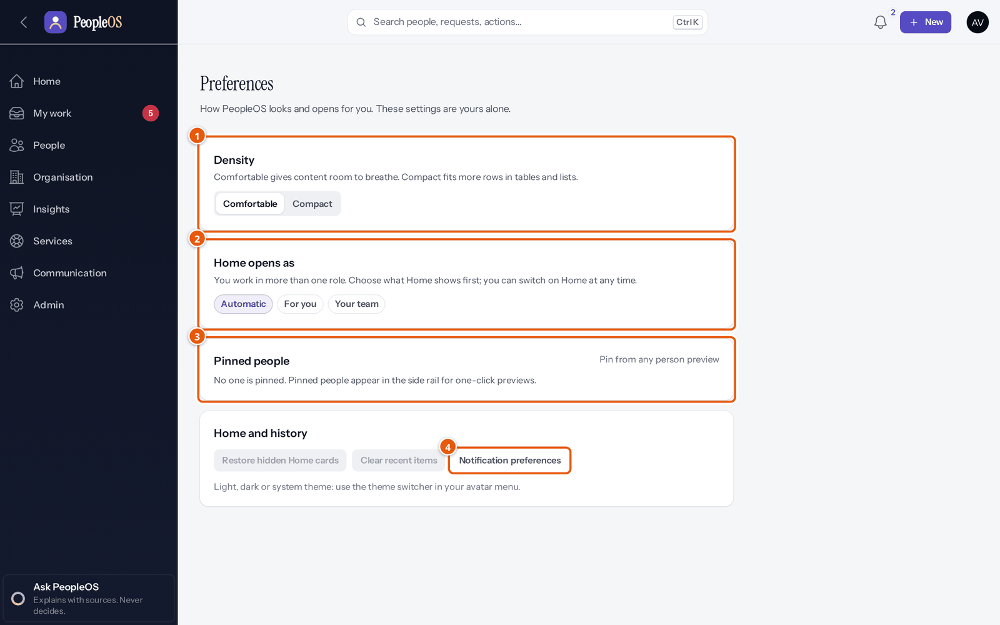
- Density — Comfortable gives content room to breathe; Compact fits more rows in tables and lists.
- Home opens as — shown only if you have more than one view. Automatic opens the view for your most specific responsibility (administration first, then HR, payroll, company, your team, for you). Or choose a view.
- Pinned people — people you pinned from a person preview appear in the sidebar for one-click previews; Unpin removes them.
- Notification preferences — opens My HR › Preferences.
Also under Home and history: Restore hidden Home cards and Clear recent items (the recent items shown in the sidebar and in search). Each is greyed out when there is nothing to restore or clear. The theme (light, dark or system) is in the avatar menu.
Task: Make lists more compact
- Open avatar menu › Preferences.
- Under Density, click Compact.
Expected result: "Density updated". Tables and lists show more rows at once.
Task: Choose which view Home opens with
- Open avatar menu › Preferences.
- Under Home opens as, click a view, or Automatic.
Expected result: "Home lens updated". Next time you open Home, it starts in that view. Clicking a View as chip on Home also changes this choice.
Phone, tablet and dark mode
Status Available with limitations (tested browsers only)
Overview
The same workspace adapts to smaller screens. On a phone, the sidebar becomes a menu button, the search bar becomes a search icon, and a bottom bar gives you the places you use most, with Actions in the centre. The bottom bar follows your Home view. For an employee it shows Home, Work, Actions, Services and People; for a manager Home, Approvals, Actions, Team and Work. The decision count appears on Approvals or Work. The welcome note's instructions change to tapping instead of keyboard shortcuts.
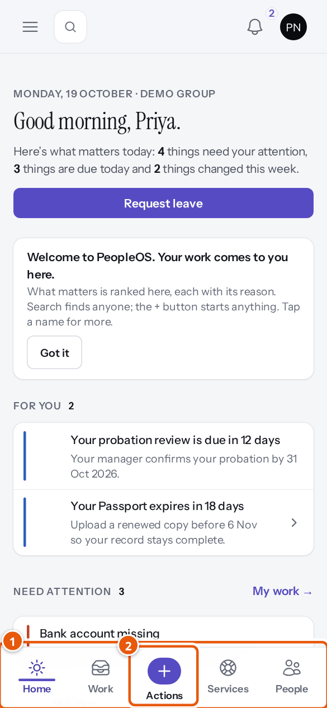
- Bottom bar — your most-used places.
- Actions — the same list as + New: leave, requests, approvals and more.
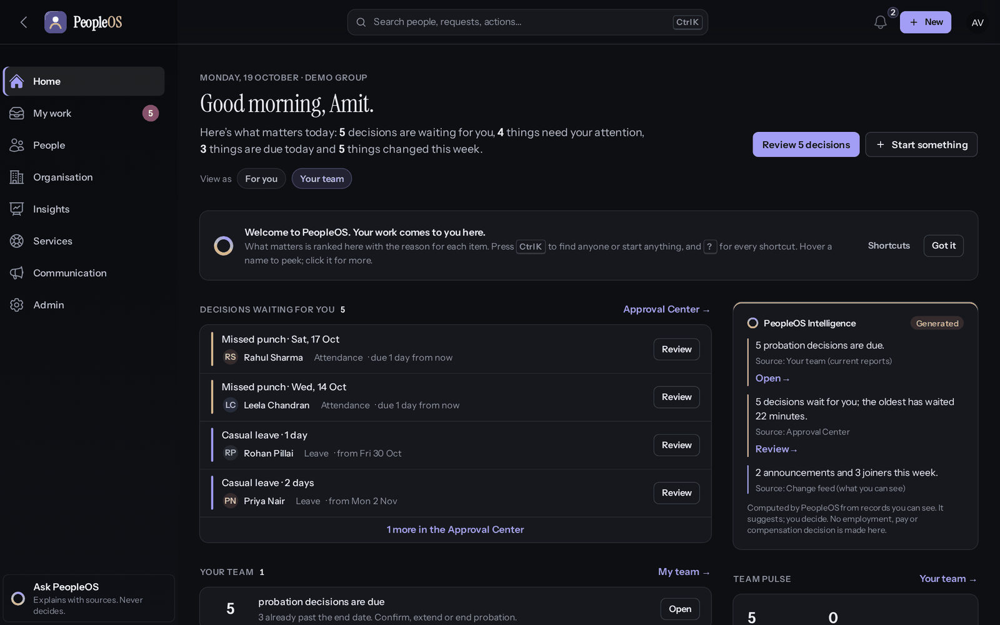
To switch theme, open the avatar menu and choose light, dark or system (follows your device's setting).
Note: the PeopleOS team tested Chromium-based browsers and Firefox on desktop, and the WebKit engine at phone width. Apple Safari (iPhone, iPad, Mac) and Chrome on Android devices have not been tested yet.
Questions people often ask
- Why do I not see the same menu as my colleague? The sidebar shows only sections where you may open something, in an order that suits your role.
- Why is an item still on my list after I opened it? My work lists the underlying record. It disappears when the action is completed on its own screen, or until tomorrow if you clicked Not now or Later.
- Can a Home view or the assistant give me access to more data? No. Every screen and answer checks your own permissions.
- I was suddenly returned to the sign-in page. Your session ends if your account or organisation is suspended, if an administrator signed you out everywhere or reset your authenticator, after a password reset, or after a period of inactivity when your organisation's security policy sets one. Sign in again; if you cannot, contact your administrator.
Chapter 5.2
People and the employee lifecycle
In this chapter: how PeopleOS keeps one record for every person you employ, and how that record moves from hiring to onboarding, changes at work, leaving, and alumni. Who should read it: HR administrators and HR managers, line managers, and employees who want to see their own record.
Every HR process starts with an accurate record of who works for you. PeopleOS keeps one record per person for their whole working life with you. The record shows where they sit in the organisation, who they report to, and what stage of employment they are in. HR hires people, records transfers and promotions, collects and checks documents, runs background checks and onboarding checklists, and issues letters. When someone leaves, PeopleOS runs the exit: notice, clearance, full and final settlement and the exit interview. Afterwards it keeps the person as an alumnus, so former employees can still ask for letters. Every change is dated and recorded, and earlier history is kept.
| Module | What it is for | Where to find it | Who uses it | Status |
|---|---|---|---|---|
| Directory | Find colleagues, see their role and manager, preview them | People › Directory | Everyone linked to an employee record; HR; managers | Available |
| Employees (register) | The full list of employment records, with filters | People › Lifecycle › Employees | HR roles; managers (their own team, view only) | Available |
| Hire employee | Create a new employee in four guided steps | People › Lifecycle › Employees › Hire employee | Tenant HR Admin, HR Manager, HR Executive, Account Owner | Available |
| Employee 360 | One page for everything about a person | Open any employee from the register, the Directory or the search bar | HR roles; managers; Auditor (read only) | Available |
| Your record | An employee's own record, read only | Avatar menu › My profile, or My HR › Your record | Employees | Available |
| Lifecycle states and employment changes | Confirm, transfer, promote, change manager, change status | Employee 360 › Action menu | Tenant HR Admin, HR Manager | Available |
| Employee documents | Upload, verify and download personal documents | Employee 360 › Records › Operations | HR roles | Available |
| Employee imports | Bring many employees in from a CSV file | People › Lifecycle › All in Lifecycle › Employee imports | Tenant HR Admin, Account Owner, Tenant Super Admin | Available with limitations (see the section) |
| Background checks | Record checks on identity, address, education and more | People › Lifecycle › Background checks | Tenant HR Admin, HR Manager; HR Executive and Auditor (view) | Available with limitations (in-house checks only) |
| Onboarding | Track each new joiner's checklist | People › Lifecycle › Onboarding | HR roles; managers (their team) | Available |
| Onboarding templates | Define the checklist new joiners receive | People › Lifecycle › All in Lifecycle › Onboarding templates | Tenant HR Admin, HR Manager | Available |
| Letters | Generate, approve, issue and download letters | People › Lifecycle › Letters | Tenant HR Admin, HR Manager; employees see their own issued letters | Available with limitations (HTML documents only) |
| Letter templates | The wording and variables of each letter | People › Lifecycle › All in Lifecycle › Templates | Tenant HR Admin, HR Manager | Available |
| Exit cases | Resignations and other exits, with clearance | People › Lifecycle › Exit cases (employees: My exit) | HR; managers and clearance owners; the leaver | Available |
| Full and final settlement | The last payment or recovery when someone leaves | Exit case › Full & final tab | Tenant HR Admin, HR Manager | Available with limitations (no gratuity) |
| Exit insights | Why people leave, from exit interviews | People › Lifecycle › All in Lifecycle › Exit insights | Tenant HR Admin, HR Manager, Auditor | Available |
| Alumni | Former employees and their requests | People › Lifecycle › Alumni | Tenant HR Admin, HR Manager, Auditor | Available |
| Alumni portal | A former employee's own page for letters and payslips | Alumni portal, a personal page after an alumni sign-in | Former employees | Available (not shown in the demonstration) |
Three ideas that make the rest easy
One person, one lifetime record. PeopleOS separates the person (name, date of birth, contact details, family) from their employment (employee ID, joining date, position, status). A person is never entered twice. The Employee 360 header says One lifetime record, and PeopleOS checks for duplicates whenever someone is hired or imported.
Effective dates. An effective date is the date from which a change applies. A transfer that starts on 1 November is recorded with that date, even if you enter it today. PeopleOS closes the old position the day before and opens the new one on the effective date.
History is never overwritten. When something changes, PeopleOS adds a new dated entry and keeps the old one. You can always see who someone reported to last year, or which department they were in. Every change is recorded in the audit trail with who made it, when, the value before and after, and the reason you typed. You can read this in Timeline and History on each record.
Note: What you see depends on your role and your organisation scope (the companies, departments or locations your administrator allows you to see). For example, an HR Manager scoped to Demo Technologies sees only Demo Technologies people. Two people with the same role can see different lists.
Directory
Status Available
Overview
The Directory is the quickest way to find a colleague. It shows each person's role, department, location, manager and status. You can switch between cards and a table, filter, group and preview someone without leaving the page. Anyone who is linked to an employee record can open it, and each person sees the people their role allows:
- HR, payroll and administrator roles see everyone in their organisation scope.
- A manager sees their own team and themselves, with the team listed first.
- An employee sees "Your manager, your team and you".
Former employees (alumni) are not listed.
Where to find it
- Menu path: People › Directory
- Who can open it: Tenant HR Admin, Tenant Super Admin, Account Owner, HR Manager, HR Executive, Payroll Admin, Attendance Admin, Asset Admin, Auditor, Manager, and any user linked to an employee record (with the Employee role they see their own circle).
- Set-up needed first: employees must exist (hire or import them). Departments and locations come from your organisation set-up.
The screen at a glance
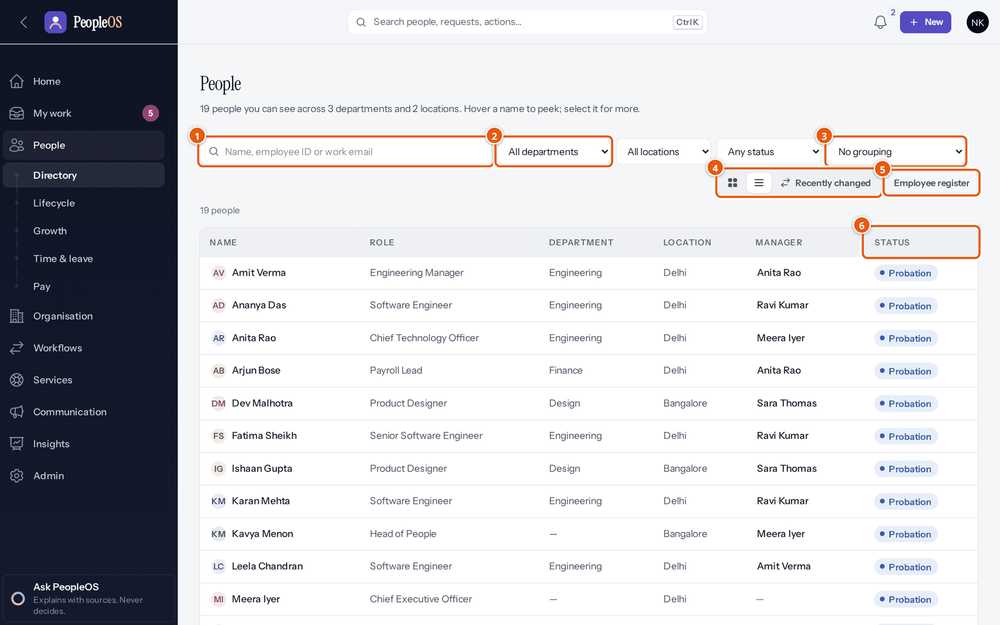
- Search — type a name, employee ID or work email ("Name, employee ID or work email").
- Filters — All departments, All locations and Any status narrow the list. Filters appear when you can see more than eight people. On a phone they sit behind a Filters button.
- Grouping — No grouping, Group by department, Group by location or Group by manager.
- View — Cards, Table or Recently changed. Recently changed lists joiners, moves, reporting changes and exits from the last 30 days that you may see, each with a What changed button.
- Employee register — opens the full Employees list (only if your role can open it).
- Status — the person's lifecycle state, for example Probation or Notice Period.
When more people match than fit on the page, click Show more at the bottom. Clear filters resets everything.
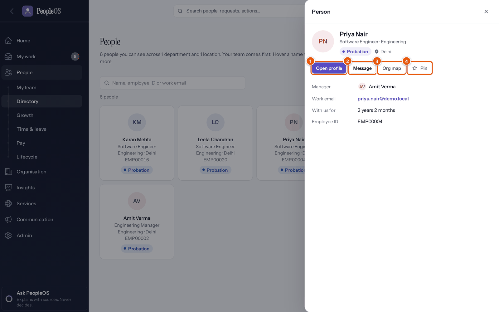
- Open profile — opens the person's Employee 360.
- Message — writes an email to their work address.
- Org map — shows the person on the organisation map.
- Pin — keeps the person in your pinned list. Only you see your pins.
HR users also see Start a change for … in the preview. It lists the changes you may start for that person.
Tasks
Task: Find a person and preview them
Purpose: look someone up quickly. Before you start: none.
- Open People › Directory.
- Type part of the name, the employee ID or the work email in the search box.
- Optionally choose a department, location or status, or a grouping.
- With a mouse, hover over a name to peek. On a touch screen, tap it. In card view, click a card to open the preview.
- Click Open profile to see the full record.
Expected result: the list shows only matching people, and the preview shows their manager, work email, length of service and employee ID. How to verify: the count above the list ("N people") changes as you type. Common mistakes: searching for a former employee. Alumni are not in the Directory; HR finds them under Alumni. If it fails: "No one matches these filters" means your filters are too narrow. Click Clear filters. If someone you expect is missing, they may be outside your organisation scope. Ask your administrator.
Example from everyday work
Illustrative scenario. Priya Nair needs to send a document to her manager's manager. She opens People › Directory, sees Amit Verma (her manager) and herself, and opens Amit's preview to see who he reports to. Neha Kapoor in HR uses the same page in table view, grouped by department, to check who is still in probation.
Related modules
- Employees — the full register with more filters and the Hire employee button.
- Org map (Organisation chapter) — the same people shown as a chart.
Employees and hiring
Status Available
Overview
The Employees register lists every employment record you may see, with its ID, name, designation, department, company, location, manager, status and joining date. HR uses it to hire people, find records with detailed filters and open or edit a record. Managers can open it too. They see only their own team, and only the View button.
Hiring uses a four-step wizard: Person, Employment, Position, Manager. PeopleOS creates the person (or reuses one already on record), gives them an employee ID, records their first position and line manager, and sets their lifecycle state. Everything happens together and is audited, so a hire is never half-saved.
Where to find it
- Menu path: People › Lifecycle › Employees
- Who can open it: Tenant HR Admin, Tenant Super Admin, Account Owner, HR Manager, HR Executive, Payroll Admin, Attendance Admin, Asset Admin, Auditor, Manager (own team).
- Who can hire: Tenant HR Admin, Tenant Super Admin, HR Manager, HR Executive, Account Owner.
- Set-up needed first: at least one company. Locations, departments, designations, grades and the other organisation lists make the hire richer (see the Organisation chapter). Your administrator can change the employee ID prefix and the default probation length in Settings. The defaults are prefix EMP with five digits, and six months of probation.
The screen at a glance
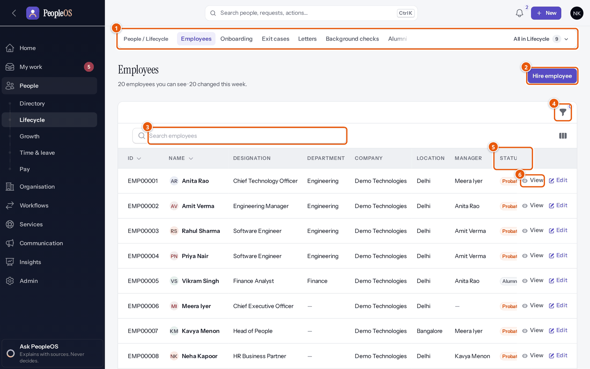
- Area bar — "People / Lifecycle" with the everyday modules (Employees, Onboarding, Exit cases, Letters, Background checks, Alumni). All in Lifecycle lists the rest: Templates, Onboarding templates, Exit insights and, for administrators, Employee imports.
- Hire employee — starts the hire wizard.
- Search employees — searches ID, name and work email.
- Filter — Status (several at once), Company, Department, Location, Designation, Grade, Employment type, Category, Work mode and Manager. Your filters are remembered while you are signed in.
- Status — the lifecycle state. On narrower screens the table scrolls sideways to show Status and Joining date.
- View and Edit — open the Employee 360, or edit personal and contact details.
The column button next to the search box shows or hides columns such as Type and Work email.
Flowchart
Flowchart — Hiring a new employee and onboarding. What happens from the hire wizard to a finished onboarding checklist. Roles: HR (Tenant HR Admin, HR Manager, HR Executive), the new employee, their manager. Starts: HR clicks Hire employee. Ends: the onboarding plan is Completed.
Tasks
Task: Hire a new employee
Purpose: create the employment record for someone joining. Before you start: know the joining date, the company, and ideally the department, designation and line manager.
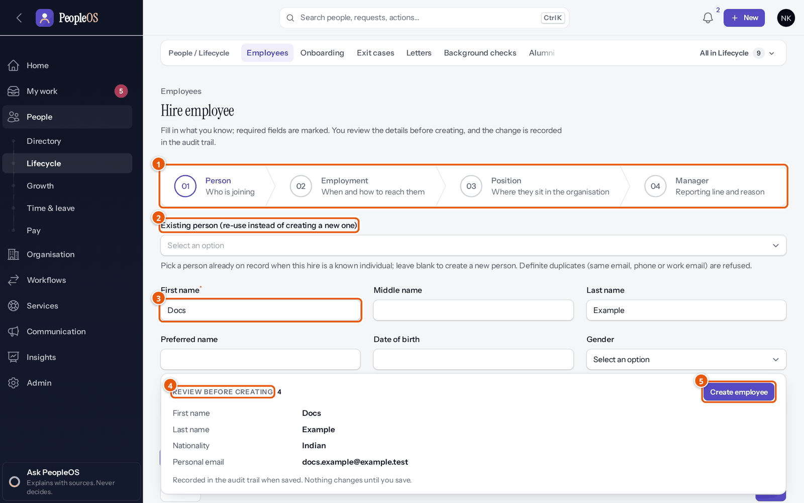
- Steps — Person, Employment, Position, Manager. A tick shows a completed step.
- Existing person (re-use instead of creating a new one) — pick someone already on record, for example a former employee you are rehiring.
- First name — required. All other person fields are optional.
- Review before creating — lists everything you have filled in. Nothing is saved until you create.
- Create employee — saves the hire once the steps are complete.
Steps:
- Open People › Lifecycle › Employees and click Hire employee.
- Person: leave Existing person blank for a new person. Enter First name (required) and any of Middle name, Last name, Preferred name, Date of birth, Gender, Marital status, Nationality (pre-filled "Indian"), Blood group, Personal email and Personal phone. Click Next.
- Employment: check Joining date (required, today by default). Optionally enter Probation end date (blank uses the default probation length), Employee code (blank generates the next code), Work email and Work phone. Click Next.
- Position: choose the Company (required). Optionally choose Location, Business unit, Division, Department, Team, Designation, Level, Grade, Employment type, Employee category, Work mode and Cost centre. Click Next.
- Manager: choose the Line manager and type a Reason for change (it is kept in the audit trail).
- Click Create employee.
Expected result: PeopleOS opens the new person's Employee 360. If the joining date is today or earlier, the status is Probation. If it is in the future, the status is Preboarding. If an onboarding template matches the person, their onboarding plan starts by itself. How to verify: the Timeline tab shows "Position assigned", "Line manager assigned" and "Joined company" / "Started probation" (or Preboarding). Common mistakes: creating a second person for someone who already exists, for example a rehire. Use Existing person instead. If it fails:
- "This person already exists" (red) means the personal email, personal phone or work email matches someone on record. Select that person in Existing person, or correct the details.
- "Possible duplicate person" (amber) is a warning only. Review it before you continue.
- An employee code that is already used is refused. Leave it blank to generate one.
Task: Edit an employee's personal or contact details
Purpose: correct a name, contact detail or probation end date, or link a sign-in account. Before you start: you need permission to update employees (Tenant HR Admin, HR Manager, HR Executive, Account Owner).
- Open the employee, then More › Edit profile. Or click Edit in the register.
- Change fields in Person or Employment: Employee code (required), Work email, Work phone, Probation end date, Login user ("Link the employee to a portal login"). Joining date cannot be edited here ("Set at hire; change via lifecycle actions").
- Fill in any Additional information fields your organisation has added.
- Type a Reason for change and click Save changes. The Your changes panel lists each change as before and after.
Expected result: the record shows the new values and the change appears in History. How to verify: open More › All changes (if your role includes the audit trail) to see the before and after values. Common mistakes: trying to change department or manager here. Placement and reporting have their own guided actions (see Lifecycle states and employment changes). If it fails: an employee code already in use is refused. If you do not see Edit, your role cannot update employees.
Example from everyday work
Illustrative scenario. Demo Technologies is hiring a designer who starts in two weeks. Neha Kapoor hires her with the joining date in the future, so the record starts in Preboarding, and the standard onboarding checklist appears at once. On the first day Neha opens the record and clicks Action › Mark as joined.
Related modules
- Onboarding — the checklist that starts after the hire.
- Organisation (separate chapter) — companies, departments and designations you choose from.
- Users (Admin chapter) — sign-in accounts you link with Login user.
Employee 360
Status Available
Overview
The Employee 360 is one page for everything about a person: who they are, where they sit, what is happening now, their history and their records. The same page adapts to the viewer. HR sees a People operations panel and the change actions. A line manager sees a Your team panel and no change actions. The employee sees Your record. Each part of the page follows its own access rule. For example, bank and statutory details appear only for roles allowed to see sensitive data, and viewing them is recorded.
Where to find it
- Menu path: People › Lifecycle › Employees › View, or Open profile in the Directory, or the search bar (search by name, employee ID or work email).
- Who can open it: anyone allowed to see employees (within their organisation scope); managers for their team; every employee for their own record (read only).
- Set-up needed first: none.
The screen at a glance
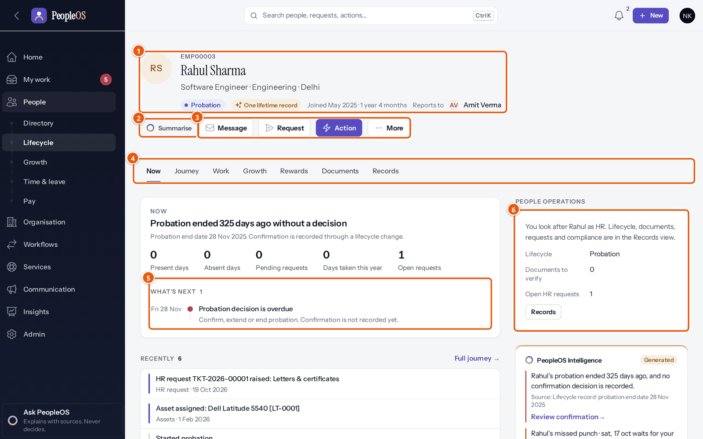
- Header — employee ID, name, designation, department and location, then the status, One lifetime record, joining month and length of service, and Reports to.
- Summarise — asks the HR assistant (Ask PeopleOS) for a summary of the person. It appears only when the assistant is available to you. It explains; it never decides.
- Action groups — Message (email), Request, Action and More (described below).
- Views — Now, Journey, Work, Growth, Rewards, Documents and Records.
- What's next — upcoming dates such as probation ending, approved leave, onboarding steps, learning due dates or a last working day.
- Viewer panel — for HR, People operations: lifecycle, documents to verify, open HR requests and the latest background check.
The menus contain only what your role allows:
- Request: Raise an HR request, Generate a letter.
- Action: Transfer / promote, Change manager, Change lifecycle state, Mark as joined (only before joining), Start onboarding (only when no plan is running), Initiate background check (only when no check is open), Assign work schedule (attendance administrators), Start workflow.
- More: Edit profile, All changes (opens Change intelligence for this person), Statutory details and Edit statutory details (only for roles with sensitive data access, such as Tenant HR Admin and Payroll Admin; every view is audited).
The Now view also shows today's figures (present and absent days, pending requests, leave taken), PeopleOS Intelligence (suggestions with their source; you decide), a People snapshot and Recently, the latest changes.
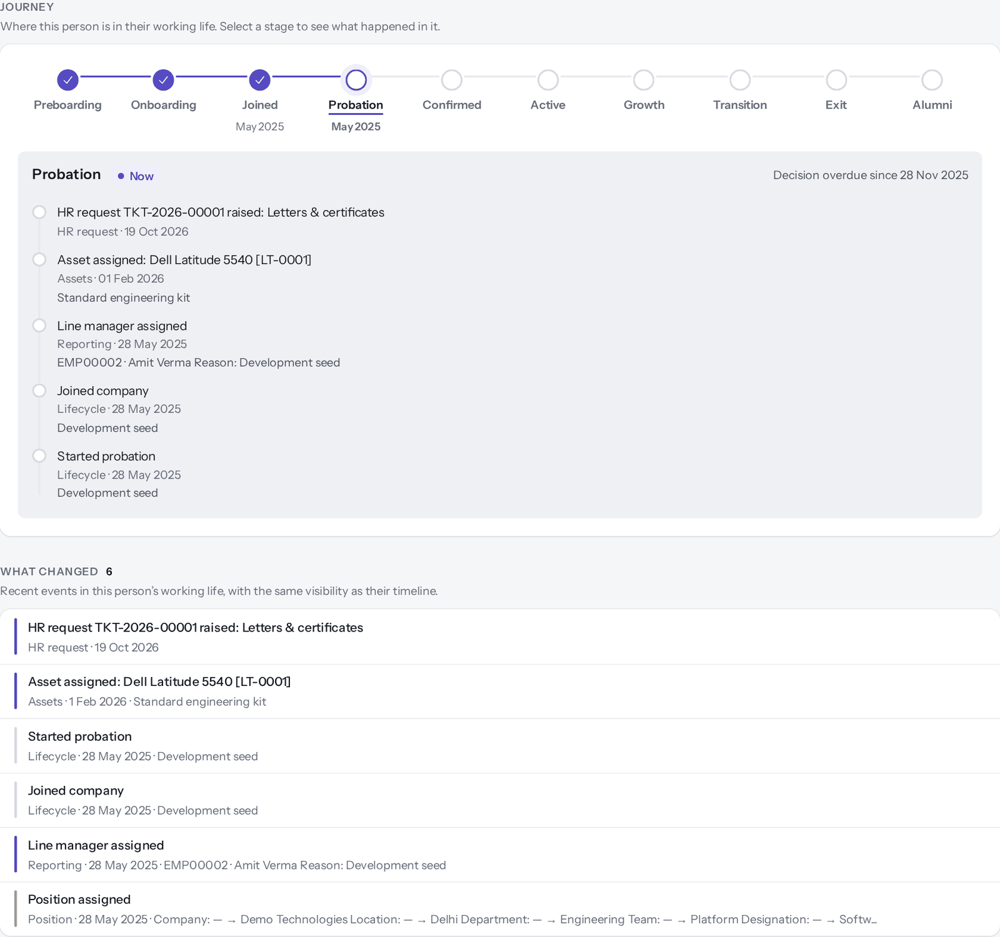
Journey draws the stages of working life: Preboarding, Onboarding, Joined, Probation, Confirmed, Active, Growth, Transition, Exit and Alumni. Select a stage to see what happened in it. What changed lists recent events with the same visibility as the timeline.
Work shows the current position (designation, department, location, grade, employment type, work mode), the organisation path, and all relationships in effect today. These can be line manager, functional, dotted line, project, mentor, buddy or HR partner, plus the person's direct reports.
Growth, Rewards and Documents show a short summary per area. If your role does not cover an area, you see "Nothing here you can see".
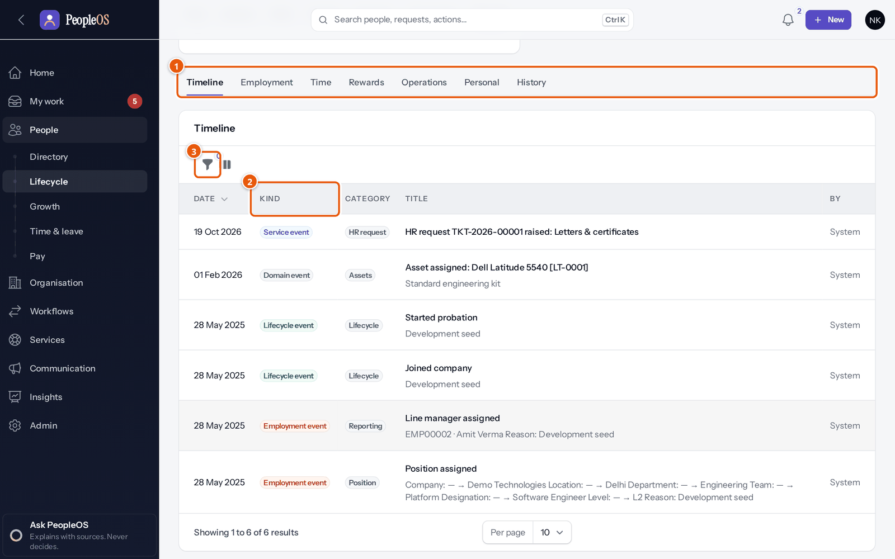
- Record tabs — Timeline, Employment, Time, Growth, Rewards, Operations, Personal (called Bank & personal for roles that can see bank details) and History. Tabs you cannot use are hidden.
- Kind — each timeline entry is a Lifecycle event, Employment event, Service event, Communication event or Domain event, with a category such as Position, Reporting or Assets.
- Filter — filter the timeline by category or kind.
Above the tabs, Records also holds All details (every field on the record), Additional information (fields your organisation added) and Applicable policies (the policies that apply to this person today).
What the tabs hold:
- Employment: position history (From, To, Change type, Company, Designation, Position, FTE, Department, Location, Level, Grade, Type, Reason), Organisation (reporting lines with effective dates), Onboarding, Exit and workflow runs.
- Time: attendance and leave.
- Growth: performance, goals, learning, skills, career, talent, succession, certifications and development (see the Growth chapter).
- Rewards: compensation, compensation changes and payslips (see the Pay chapter).
- Operations: Documents, Letters, requests, assets, Verification (background checks) and communications.
- Personal: addresses, Family & nominees, emergency contacts, Education, Previous employment, and Bank for roles with sensitive data access.
- History: the audit trail for this record.
Tasks
Task: Look up someone's history
Purpose: answer questions such as "when did she move to Design?" or "who was his manager last year?". Before you start: none.
- Open the employee and click Records.
- Click Timeline for a dated story of the person's working life, newest first. Use the filter to show only one category.
- Click Employment to see each position with its From and To dates (the current one shows "Current") and each reporting line with Effective from and Effective to.
- Click History for the full audit trail.
Expected result: you see every past position and manager. Nothing is overwritten. How to verify: the row marked "Current" matches the header. Common mistakes: looking for an exit reason in the timeline. The timeline carries only the fact of an exit. The reason stays on the exit case, visible to HR. If it fails: if a tab is missing, your role does not include that area.
Example from everyday work
Illustrative scenario. Amit Verma opens Rahul Sharma's record before a one-to-one. The Your team panel shows one decision waiting and that Rahul's probation end date has passed. What's next shows the overdue probation decision. Amit asks Neha in HR to record the confirmation.
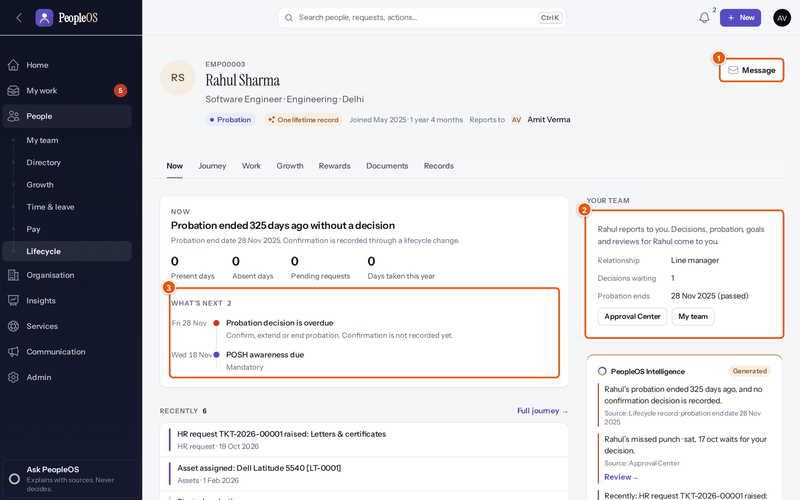
- Message is the only button. Managers do not get change actions on the record.
- Your team — the relationship, decisions waiting for you, and the probation end date, with links to the Approval Center and My team.
- What's next — upcoming dates for this person.
Related modules
- Lifecycle states and employment changes — the actions in the Action menu.
- Employee documents — in the Operations tab.
- Change intelligence (Insights chapter) — opened by More › All changes.
Your own record (employees)
Status Available
Overview
Every employee can open their own Employee 360, read only. It is the same page HR uses, without the action menus. Each area still follows its own rule, so you see your own leave, goals and payslips where your role allows. To change something about yourself (for example a new address or bank account), request it through My HR. HR applies the change after any approval the service needs.
Where to find it
- Menu path: avatar menu (top right) › My profile, or avatar menu › My HR › Your record.
- Who can open it: any employee with the Employee role, for their own record only.
- Set-up needed first: your sign-in must be linked to your employee record (HR does this with Login user).
The screen at a glance
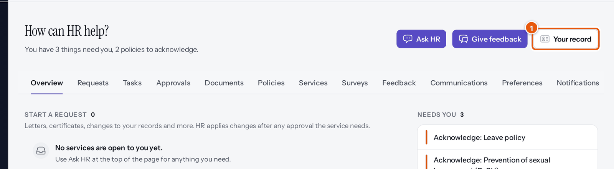
- Your record — opens your own Employee 360.
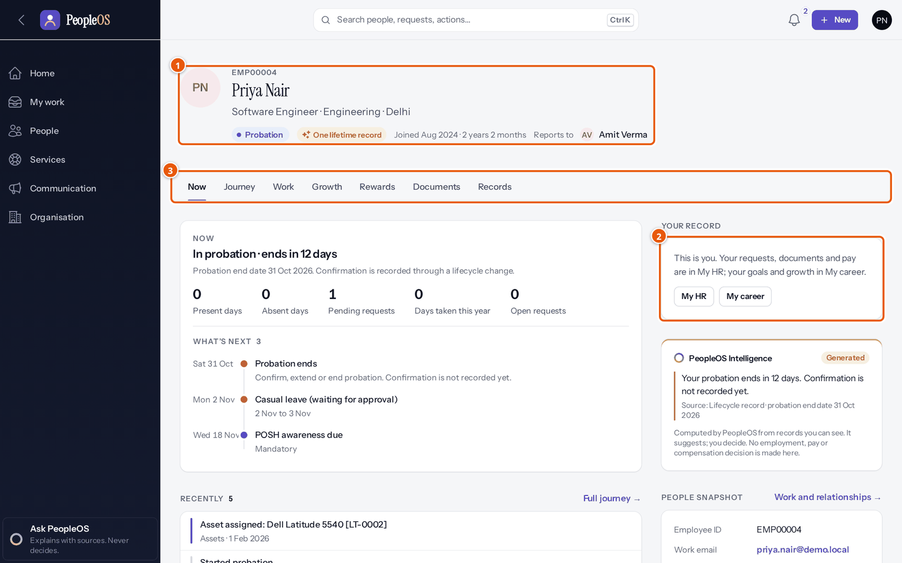
- Header — your status, joining date, length of service and manager. There are no action buttons.
- Your record — "This is you", with links to My HR and My career.
- Views — the same Now, Journey, Work, Growth, Rewards, Documents and Records views, limited to what you may see.
Tasks
Task: View your own record
Purpose: check what HR holds about you and what is coming up, for example the end of your probation. Before you start: none.
- Click your avatar (top right) and choose My profile. Or open My HR and click Your record.
- Read Now and What's next.
- Click Journey or Records for your history.
Expected result: your own record opens, without Request, Action or More menus. How to verify: the panel on the right is titled Your record. Common mistakes: looking for an edit button. Your record is read only. Ask HR through My HR. If it fails: if My profile is missing from the avatar menu, your sign-in is not linked to an employee record. Contact HR.
Note: Employees cannot upload their own documents. HR uploads them, and employees download their own documents from My HR › Documents.
Lifecycle states and employment changes
Status Available
Overview
Every employee has a lifecycle state: the stage of employment they are in, such as Probation or Notice Period. PeopleOS allows only sensible moves between states. For example, someone in Probation can be confirmed, made active, put on notice, exited or suspended, but cannot jump back to Preboarding. Each move records an effective date and a reason, adds a timeline entry and an audit entry, and stamps key dates (joining date, confirmation date, exit date). Some moves happen automatically: hiring, completing an exit and creating an alumni profile.
Employment changes are separate from the state. A transfer or promotion changes the position. A manager change changes the reporting line. Both are guided in three steps (Context, Change, Review) and show the Before → After before you confirm.
Where to find it
- Menu path: Employee 360 › Action › Change lifecycle state, Mark as joined, Transfer / promote or Change manager.
- Who can use it: Tenant HR Admin, HR Manager and Tenant Super Admin. HR Executives and Account Owners can hire and edit, but cannot move states or change positions.
- Set-up needed first: none.
Flowchart
Flowchart — Employee lifecycle states. The main moves PeopleOS allows. The table below lists every allowed move. Roles: Tenant HR Admin, HR Manager; some moves are made by PeopleOS itself. Starts: a hire or a pre-employee record. Ends: Alumni (a former employee can return to Active).
Statuses explained
| State | Meaning | Allowed next states |
|---|---|---|
| Pre Employee | A future joiner, for example sent from a recruitment system | Preboarding, Onboarding, Joined |
| Preboarding | Hired with a future joining date | Onboarding, Joined, Pre Employee |
| Onboarding | Going through onboarding before being counted as joined | Joined, Probation, Active |
| Joined | Has joined (a short step before probation) | Probation, Active, Notice Period, Exited |
| Probation | In the probation period | Confirmed, Active, Notice Period, Exited, Suspended |
| Confirmed | Probation completed; the confirmation date is stamped | Active, On Leave, Suspended, Notice Period, Exited |
| Active | Working normally | On Leave, Suspended, Notice Period, Exited, Probation |
| On Leave | On long leave | Active, Notice Period, Exited |
| Suspended | Suspended from work | Active, Exited |
| Notice Period | Serving notice after a resignation or another exit | Active (if withdrawn), Exited |
| Exited | Has left; the exit date is stamped | Alumni, Active |
| Alumni | A former employee with an alumni profile | Active |
Tip: PeopleOS reminds people before key dates: joining due (3 days before by default), probation ending (14 days before by default), and probation overdue. Your administrator can change these windows in Settings and connect them to notification rules or workflows.
Tasks
Task: Confirm an employee after probation
Purpose: record that probation is complete. Before you start: the employee is in Probation and the decision has been made, for example by the manager.
- Open the employee and click Action › Change lifecycle state.
- In New state, choose Confirmed. Only the states allowed from the current state are listed.
- Check the Effective date (today by default).
- Type a Reason for change (required) and click Submit.
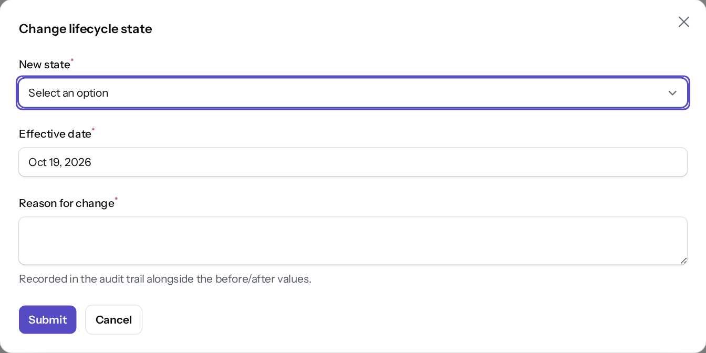
Expected result: the notice "Lifecycle updated". The status becomes Confirmed and the confirmation date is set to the effective date. How to verify: Now shows "Confirmed · confirmed [date]", and the Timeline shows "Confirmed". Common mistakes: choosing Active when you meant Confirmed. Only Confirmed stamps a confirmation date. If it fails: "Not allowed — An employee cannot move from X to Y" means that move is not permitted. Choose one of the listed states. If you do not see the action, your role cannot change lifecycle states.
Task: Transfer or promote an employee
Purpose: record a new department, location, designation, grade or other placement, from a given date. Before you start: know what changes and from when.
- Open the employee and click Action › Transfer / promote.
- Context: read Today (what is recorded now). Choose the Change type: Hire, Transfer, Promotion, Demotion, Reassignment or Data correction. Set Effective from. Click Next.
- Change: fill in only what is different, for example a new Department or Designation. Blank fields stay as they are. Optionally choose a Position (seat), an FTE, or Vacate current position. Click Next.
- Review: check the Before → After list and the date it takes effect. Type a Reason for change (required).
- Click Confirm change.
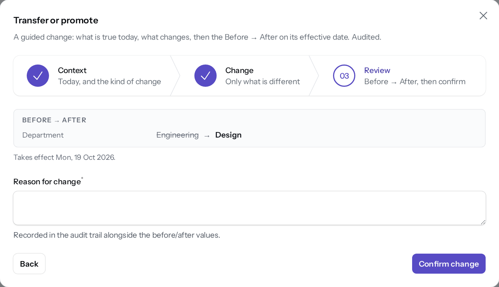
Expected result: "Position assigned". The old position ends the day before the effective date and the new one starts on it. How to verify: Records › Employment shows a new row from the effective date, and the previous row now has a To date. Common mistakes: re-entering fields that did not change. Leave them blank. If it fails:
- "The new position must start after the current one (date)" means you need a later effective date.
- "A position already starts on [date]; positions cannot overlap" means a future change already exists. Use a later date, or correct that one first.
- A seat that is not open or is full is refused.
Task: Change an employee's manager
Purpose: record a new line manager or another reporting relationship. Before you start: the new manager must be a current employee.
- Open the employee and click Action › Change manager.
- Context: choose the Relationship: Line manager, Functional manager, Dotted line, HR business partner, Mentor, Buddy, Project manager or Secondary manager. Click Next.
- Change: choose the Manager and Effective from. Click Next.
- Review: check Before → After. Optionally add a Reason for change.
- Click Confirm reporting change.
Expected result: "Reporting line updated". The previous relationship of the same type ends and the new one starts. How to verify: Records › Employment › Organisation shows the new line as current. The header shows the new Reports to. Common mistakes: choosing the wrong relationship type, which adds a dotted line instead of replacing the line manager. If it fails: "An employee cannot report to themselves." "[Manager] already reports to this employee; that would create a loop." "That employee or manager is outside your organisation scope." All three are refused by design.
Task: Mark a future joiner as joined
Purpose: confirm that a person in Pre Employee, Preboarding or Onboarding has started work. Before you start: the person has actually started.
- Open the employee and click Action › Mark as joined. It appears only before joining.
- Check the Joining date (it starts as the expected joining date or today).
- Optionally add a Reason for change, then submit.
Expected result: "Joined — Now in probation." The status moves to Joined, then Probation. How to verify: the Timeline shows "Joined company" and "Started probation". Common mistakes: using Change lifecycle state instead. Mark as joined also sets the joining date. If it fails: if the button is missing, the person has already joined.
Note: A former employee can be returned to Active through Change lifecycle state (from Exited or Alumni). PeopleOS keeps the same person and history. A separate, guided "rehire" screen is not part of this release.
Example from everyday work
Illustrative scenario. Rahul Sharma moves from Engineering to Design from the first of next month. Neha opens his record, chooses Transfer / promote, picks Transfer, sets the date, changes only Department, and confirms with the reason "Internal move approved by Anita Rao". Next year the Employment tab still shows both rows.
Related modules
- Exit cases — move people to Notice Period and Exited for you.
- Workflows — Action › Start workflow runs a manual workflow your organisation has published, such as a probation review.
Employee documents
Status Available
Overview
HR keeps each person's documents (PAN, Aadhaar, passport, address proof, degree, previous relieving letter and payslips, bank proof, signed offer, background check consent, and any other types you add) on their record. Files are stored privately. Downloads use a link that expires after 10 minutes, and downloads of sensitive categories (identity, tax, statutory, medical) are recorded. A document stays Pending verification until someone checks it. The person who uploaded a document cannot verify it. Uploading a new file of the same type creates a new version and archives the old one. Letters issued from PeopleOS are added here automatically.
Where to find it
- Menu path: Employee 360 › Records › Operations › Documents.
- Who can use it: view: Tenant HR Admin, HR Manager, HR Executive, Auditor. Upload: Tenant HR Admin, HR Manager, HR Executive. Verify or reject: Tenant HR Admin, HR Manager. Delete: Tenant HR Admin.
- Set-up needed first: document types (Admin › Setup › Document types) decide which types exist and which need an expiry date.
The screen at a glance
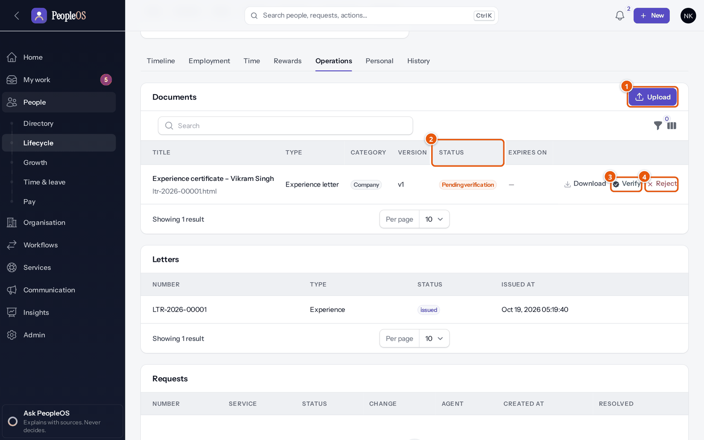
- Upload — adds a document.
- Status — Pending verification, Verified, Rejected or Archived. Use the filter to show one status.
- Verify — confirms the document is correct.
- Reject — marks it wrong, with a note.
Download opens the file through a short-lived link. Columns also show Type, Category, Version, Expires on, Uploaded by and Uploaded.
Tasks
Task: Upload a document
Purpose: keep a copy of an employee's document. Before you start: have the file as PDF, JPEG, PNG or Word, up to 10 MB.
- Open the employee, then Records › Operations.
- In Documents, click Upload.
- Choose the Document type. Optionally change the Title (it defaults to the type name).
- Attach the File (required). Add Issued on, and Expires on (required for types that expire, such as a passport).
- Optionally add a Reason for change, then submit.
Expected result: "Document uploaded". It appears as Pending verification, version v1 (or the next version). How to verify: the document is at the top of the list. Common mistakes: uploading a passport without an expiry date. The form will not accept it. If it fails: files that are not PDF, JPEG, PNG or Word, or are larger than 10 MB, are refused.
Task: Verify or reject a document
Purpose: confirm a document is genuine and correct. Before you start: you did not upload this document yourself.
- Open the employee, then Records › Operations › Documents.
- Click Download to check the file.
- Click Verify (optionally add a Note), or Reject (a Note is required).
Expected result: the status becomes Verified or Rejected. A verified document adds a timeline entry, and the employee can be notified according to your notification rules. How to verify: the People operations panel shows one fewer "Documents to verify". Common mistakes: verifying your own upload. Ask a colleague. If it fails: PeopleOS refuses with "The person who uploaded a document cannot verify it."
Employee imports
Status Available with limitations. In the build tested for this guide, saving the Map columns step fails ("Failed"), so a file cannot yet be taken past the inspection step from the screen. Ask Markedge (your provider) before planning a bulk import.
Overview
Employee imports bring many employees in from a CSV file (a spreadsheet saved as comma-separated values) without typing each one. Nothing is written to employee records until the file has been inspected, mapped, validated, approved and run. Every row is checked: required fields, valid dates and emails, organisation codes that exist, and duplicates within the file. PeopleOS also matches each row against people already on record:
- the same personal email, personal phone, work email, employee code or external reference is a definite match, and the row updates (or skips) that employee;
- the same first name, last name and date of birth is a possible match, and a person must review the row.
The whole run is recorded as one audit operation.
Where to find it
- Menu path: People › Lifecycle › All in Lifecycle › Employee imports
- Who can open it: Tenant HR Admin, Tenant Super Admin, Account Owner. HR Managers cannot open it.
- Set-up needed first: organisation codes (company, location, department and so on) must exist, because the file refers to them by code.
The screen at a glance
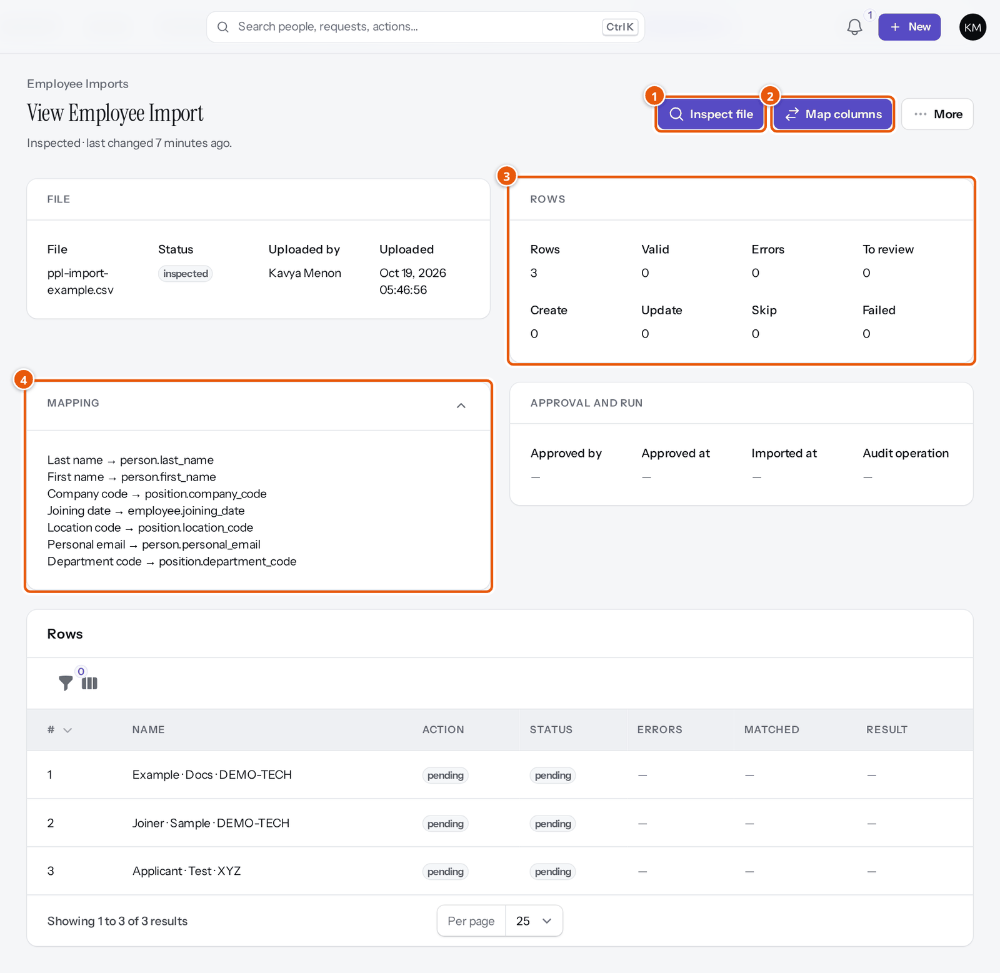
- Inspect file — reads the header row and stages each row.
- Map columns — choose the PeopleOS field for each column, and what to do "When the person already exists" (Update person details or Skip the row).
- Rows counts — Rows, Valid, Errors, To review, Create, Update, Skip, Failed.
- Mapping — the column-to-field mapping, suggested automatically from your column names.
Discard is in the More menu. Below, the Rows table shows each row's Action (create, update, review, skip, error), Errors, Matched person and Result.
Flowchart
Flowchart — Bulk import of employees. The designed steps of an import. Roles: Tenant HR Admin or Account Owner. Starts: Upload CSV. Ends: the import is imported, or discarded.
Important: In the tested build, step C (Map columns) shows "Failed" when saved. Steps D to K could not be checked on screen for this guide. They are described from the product's design and its automated tests.
Tasks
Task: Import employees from a file
Purpose: create or update many employees at once. Before you start:
- Prepare a CSV with a header row and at most 5,000 rows.
- Required fields are First name, Last name, Joining date and Company code.
- Optional fields include Middle name, Preferred name, Date of birth, Gender, Marital status, Nationality, Personal email, Personal phone, Employee code, Probation end date, Work email, Work phone, External reference, the organisation codes (Location, Business unit, Division, Department, Team, Designation, Level, Grade, Employment type, Employee category, Work mode, Cost centre) and Manager employee code.
- Open Employee imports and click Upload CSV. In "Upload an employee file", attach the CSV file and click Create.
- On the import page, click Inspect file.
- Click Map columns. Choose a field for each column (or leave "Ignore column"), choose what to do When the person already exists, and submit.
- Click Validate rows. Read the counts and the Errors column.
- For each row marked review, click Resolve and choose Create as a new person, Update the matched employee or Skip this row.
- Click Approve import, read the summary ("This will create N and update N employee(s)…"), type a Reason, and confirm.
- Click Run import and confirm.
Expected result: "Created N, updated N, skipped N, failed N". The status becomes imported and each row shows its result, for example "Created EMP00021". How to verify: the new people appear in the Employees register. Approval and run shows who approved and the audit operation. Common mistakes: using names instead of codes for company or department; leaving duplicate emails in the file. If it fails:
- "Required fields are not mapped: …"
- "Each field can be mapped from one column only."
- "[Field] is not a valid date."
- "Company code 'XYZ' does not exist."
- "N row(s) still need review before approval."
- "Nothing to import: no row would create or update an employee."
- "The file has more than 5000 rows; split it."
A completed import cannot be discarded: "it is part of the audit trail". If Map columns shows "Failed", contact Markedge.
Background checks
Status Available with limitations. Checks are recorded in-house ("Manual (in-house)" provider). Connections to external verification agencies are not part of this release.
Overview
A background check (also called background verification, or BGV) records checks on identity, address, education, previous employment, references, criminal record (where lawful) and documents. PeopleOS insists on the employee's written consent before a check starts, and allows only one open case per person. When every check is closed, the case is Completed. Its overall result is the worst individual result: one failed check makes the case Failed.
Where to find it
- Menu path: People › Lifecycle › Background checks (the list, titled "BGV cases"). Start a check from Employee 360 › Action › Initiate background check.
- Who can open it: Tenant HR Admin, Tenant Super Admin, HR Manager, HR Executive, Auditor. Starting checks and recording results needs Tenant HR Admin, HR Manager or Tenant Super Admin.
- Set-up needed first: ideally upload the signed consent as a document (type "BGV consent") so you can attach it.
The screen at a glance
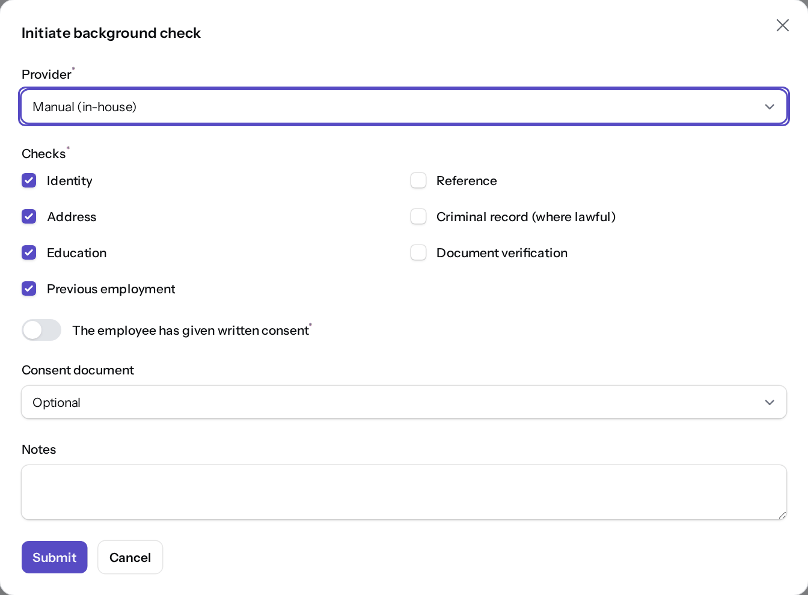
The form asks for the Provider, the Checks to run (Identity, Address, Education and Previous employment are ticked by default; Reference, Criminal record (where lawful) and Document verification are optional), the consent switch The employee has given written consent (required), an optional Consent document, and Notes.
The BGV cases list shows #, Employee, Provider, Status, Result, Initiated at and Completed at, with filters for status and overall result. Open a case to see its details and the Checks tab.
Statuses explained
| Item | Values | What happens next |
|---|---|---|
| Case status | Initiated, In progress, Completed, Closed | Completed when every check is closed. Closed when HR uses Close case with a reason. |
| Overall result | Pending, Clear, Discrepancy, Failed | Set when the case completes, using the worst check result. |
| Check status | Pending, In progress, Clear, Discrepancy, Failed, Skipped | Recorded with Record result. |
Tasks
Task: Start a background check
Purpose: begin verification for a new joiner. Before you start: you hold the employee's written consent.
- Open the employee and click Action › Initiate background check.
- Keep Manual (in-house) as the Provider. Tick the Checks you need.
- Turn on The employee has given written consent. Optionally pick the Consent document and add Notes.
- Click Submit.
Expected result: "BGV case #N initiated". The case appears in Background checks and in the person's Operations › Verification tab. How to verify: the People operations panel shows "Background check: Initiated". Common mistakes: starting without consent. The form will not submit. If it fails: "Background verification needs the employee's consent first." "A verification case is already open for this employee." (finish or close the open case first).
Task: Record a check result
Purpose: record the outcome of one check.
- Open Background checks and open the case.
- In the Checks tab, click Record result on a check.
- Choose the Status (In progress, Clear, Discrepancy, Failed or Skipped). Add Notes and, optionally, an Evidence document. Submit.
Expected result: "Result recorded". When the last check is closed, the case becomes Completed with an overall result. How to verify: the case shows Completed at. Common mistakes: marking a check Clear before the evidence is uploaded. Upload it first so you can attach it. If it fails: Record result disappears once a check or the case is closed. To stop a case early, use Close case and give a reason.
Onboarding and onboarding templates
Status Available
Overview
Onboarding gives every new joiner a checklist, split into phases: Preboarding, Day 1, First week, 30 days, 60 days and 90 days. Each task has an owner: the employee, the line manager, a buddy, the HR business partner, a role, or a specific user. Each task also has a due date counted from the joining date. Tasks can be simple checklist items, documents to collect, forms to fill in, or policy acknowledgements. The plan starts by itself when someone enters Preboarding, Onboarding or Joined, if a template matches them. HR can also start it by hand. The plan completes when no mandatory task is open.
Templates define the checklist. A template can apply to everyone, or only to people who meet conditions (for example a location or department). When several templates match, the one with the lowest Priority number wins.
Where to find it
- Menu path: People › Lifecycle › Onboarding (the plans). Templates: People › Lifecycle › All in Lifecycle › Onboarding templates. A person's tasks: Employee 360 › Records › Employment › Onboarding. Your own tasks: My work › Task inbox › Onboarding tasks.
- Who can open it: Tenant HR Admin, Tenant Super Admin, HR Manager, HR Executive, Auditor, Manager (their team). Templates and manual starts need Tenant HR Admin, HR Manager or Tenant Super Admin. Employees complete their own tasks.
- Set-up needed first: at least one active template. A "Standard onboarding" template is provided.
The screen at a glance
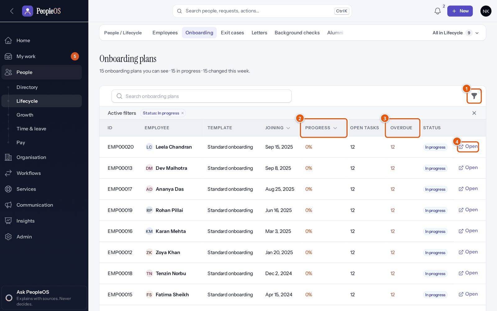
- Filter — status: In progress (the default), Completed or Cancelled.
- Progress — the percentage of tasks closed.
- Overdue — open tasks past their due date (shown in red).
- Open — opens the person's Employee 360, where the checklist is in Employment › Onboarding.
On the Employee 360, the onboarding table heading shows the template, the percentage complete and the status. Each task shows Phase, Title, Type, Owner, Due on, Status (Pending, Completed or Skipped), Note and By, with the buttons Done and Skip.
Tasks
Task: Start onboarding manually
Purpose: give someone a checklist when none started by itself. Before you start: the person has no onboarding plan in progress.
- Open the employee and click Action › Start onboarding.
- Leave Template on "Best match by rules", or choose a template.
- Optionally add a Reason for change, then submit.
Expected result: "Onboarding started — N tasks created." Task owners are notified. How to verify: the plan appears in Onboarding with 0% progress. Common mistakes: looking for the action while a plan is still in progress. It is hidden then. If it fails: "No onboarding template matches this employee." Add a template or widen its conditions.
Task: Complete an onboarding task
Purpose: close a checklist item you own.
- Open My work › Task inbox and choose the Onboarding tasks tab. HR can also open the person's Employment › Onboarding tab.
- Click Done. For a document task, choose the uploaded document under Attach uploaded document. Optionally add a Note.
- To skip a task, click Skip and give a Note (required).
Expected result: "Task completed" or "Task skipped". Progress goes up. When no mandatory task is open, the plan becomes Completed. How to verify: the task shows Completed or Skipped, and your name under By. Common mistakes: trying to close someone else's task. If it fails: "This task is not assigned to you." "This task is already closed." HR (Tenant HR Admin, HR Manager) can close any task.
Task: Create or change an onboarding template
Purpose: decide what every new joiner (or a group of joiners) must do.
- Open Onboarding templates and click New onboarding template, or Edit on an existing one.
- Enter Name (the Key is filled in for you), Description, Priority ("Lower wins when several templates match an employee") and Status (Active or Inactive).
- Under Applies to, add Conditions, or leave them empty for everyone.
- Save. When editing, give a Reason for change.
- In the Checklist items tab, add items:
- Phase, Type (Checklist item, Collect a document, Fill a form, Policy acknowledgement), Title;
- Due (days from joining) — blank uses the phase default;
- Owner type, plus the Role or User when needed;
- Document type or Form for those item types;
- Mandatory (on by default).
Expected result: new plans use the template. Plans that already exist keep their tasks. How to verify: the template list shows the number of Items and Plans, and Applies to (for example "Everyone"). Common mistakes: two templates with the same priority for the same people. Set clear priorities. If it fails: a key must start with a letter and use lower-case letters, numbers and underscores.
Note: New joiners cannot yet fill in their own details before joining (candidate self-service preboarding). HR captures the details and the checklist tracks them.
Letters and letter templates
Status Available with limitations. Letters are produced as HTML documents (web pages you can download and print). PDF output and electronic signatures are not part of this release.
Overview
PeopleOS writes letters from templates. Each template has a subject and body with variables such as {{ employee.name }}, which PeopleOS fills in from the record when the letter is generated. The wording is frozen at that moment. Nine starter templates are provided: Experience, Relieving, Salary certificate, Employment certificate, No objection certificate, Appointment, Confirmation, Warning and Appreciation. A template can require approval. Then the person who asked for the letter cannot approve it. Issuing a letter stores it in the employee's documents and notifies them. Employees see their issued letters under My letters and in My HR.
Where to find it
- Menu path: People › Lifecycle › Letters. Templates: People › Lifecycle › All in Lifecycle › Templates. You can also generate a letter from Employee 360 › Request › Generate a letter, or from an exit case (Generate letter). Employees: avatar menu › My day, then My letters in the You / Your pages bar.
- Who can open it: Tenant HR Admin, Tenant Super Admin, HR Manager (generate, approve, issue, manage templates); Auditor (view letters). Employees see only their own issued letters.
- Set-up needed first: review the starter templates. Check your company's legal name in the organisation set-up, because it appears on letters.
The screen at a glance
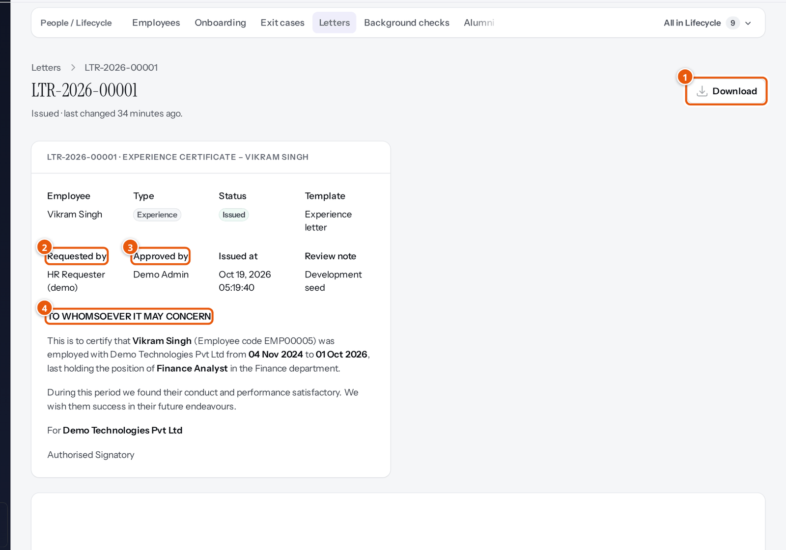
- Download — saves the issued letter as an HTML file. Downloads are recorded.
- Requested by — who generated the letter.
- Approved by — a different person. Requester and approver cannot be the same.
- Body — the letter text as frozen at generation.
The Letters list shows Number (LTR-year-number), Employee, Type, Subject, Status, Created at and Issued at, with filters for status and type, and Open. Generate letter at the top asks for the Employee, the Template and any Extra variables (Variable and Value pairs, for example a purpose).
A template has Name, Code, Type, Subject (the helper lists the variables), Needs approval before issue, Body and Status. Changing the wording creates a new version (v1, v2 and so on).
Flowchart
Flowchart — Issuing a letter. Roles: HR (Tenant HR Admin, HR Manager); a second HR person approves. Starts: Generate letter. Ends: the letter is Issued (or Rejected).
Statuses explained
| Status | Meaning | What happens next |
|---|---|---|
| Pending approval | Generated from a template that needs approval | Another person with letter rights approves or rejects it |
| Approved | Ready to issue (or generated from a template without approval) | Issue, or Reject |
| Issued | Stored in the employee's documents; the employee is notified | Download |
| Rejected | Not issued; the note explains why | Generate a new letter if needed |
| Draft | A listed status; letters generated from the screen start at Pending approval or Approved | — |
Tasks
Task: Generate a letter
Purpose: prepare a letter for an employee.
- Open Letters and click Generate letter. Or, on the Employee 360, use Request › Generate a letter.
- Choose the Employee and the Template. Add Extra variables if the template uses them.
- Click Submit.
Expected result: "Letter LTR-… sent for approval" or "Letter LTR-… ready to issue". How to verify: the letter appears at the top of the list with its status. Common mistakes: choosing an inactive template. Only active templates are offered. If it fails: if Generate letter is missing, your role cannot issue letters.
Task: Approve and issue a letter
Purpose: check a letter and send it to the employee. Before you start: you did not generate this letter yourself.
- Open Letters and click Open on the letter.
- Read the body. Click Approve (optionally add a Note), or Reject (a Note is required).
- On an approved letter, click Issue. Confirm the message "Stores the letter in the employee's documents and notifies them."
Expected result: "Approved", then "Letter issued". The status becomes Issued and Download appears. How to verify: the letter is in the employee's Operations › Documents, and the employee sees it under My letters. Common mistakes: trying to approve a letter you generated. If it fails: "The person who requested a letter cannot approve it." "The letter is not waiting for approval." "Only an approved letter can be issued."
Task: Create or edit a letter template
Purpose: set the wording of a letter.
- Open Templates and click New letter template, or Edit on a template.
- Enter Name, Code (fixed once created), Type, Subject and Body. Use the variables shown under Subject, for example
{{ employee.name }},{{ employee.designation }},{{ company.name }},{{ letter.number }}. - Turn on Needs approval before issue if a second person must check each letter.
- Set Status to Active. When editing, give a Reason for change. Save.
Expected result: the template is offered when letters are generated. A change to the wording increases the Version. How to verify: the Templates list shows the new version and whether approval is needed. Common mistakes: misspelling a variable. It will not be filled in. If it fails: Code must be unique and may use letters, numbers, dashes and underscores only.
Exit cases, clearance and full and final settlement
Status Available. Full and final settlement has limitations: gratuity is not calculated, and statutory deductions rely on payroll rules that are not yet verified (see the Pay chapter).
Overview
An exit case manages someone's departure from start to finish. HR can start any type of exit: Resignation, Termination, Retirement, Contract expiry, Absconding, Death, Mutual separation or Other. Employees can resign themselves. Starting an exit moves the employee to Notice Period and records the planned last working day. Payroll then pays the final month up to that day.
Each exit has five clearance stages, each with its own owner and checklist:
- Manager clearance — the line manager;
- IT clearance — by default the Asset Admin role;
- Finance clearance — by default the Payroll Admin role;
- Asset clearance — its checklist lists the company assets still with the person;
- HR clearance — by default the Tenant HR Admin role.
Clearance starts at once for immediate exits (termination, absconding, death), and otherwise within seven days of the last working day (HR can start it earlier). When every stage is cleared or not applicable, PeopleOS prepares the full and final settlement (F&F): the last payment or recovery. HR then completes the exit. The employee becomes Exited on the last working day and their sign-in is suspended. Creating the alumni profile re-opens the sign-in with alumni access only.
Where to find it
- Menu path: People › Lifecycle › Exit cases. Employees: avatar menu › My day › Resign, or My exit in the You / Your pages bar.
- Who can open it: Tenant HR Admin, Tenant Super Admin and HR Manager (all cases, all actions); Auditor (read only); Manager (cases of their team, and stages they own); Employee (their own case, Resign).
- Set-up needed first: your administrator can change the default notice period (30 days), the clearance lead time (7 days), the leave encashment basis (basic or gross), notice shortfall recovery (on by default) and the clearance owner roles in Settings.
Note: By default, the Asset Admin and Payroll Admin roles cannot act on clearance stages. HR clears the IT, Finance and Asset stages unless your administrator adds that permission to those roles.
The screen at a glance
- Initiate exit — HR starts an exit for an employee.
- Resign — your own resignation (shown when you may resign).
- Filter — by default only open cases (Initiated, Serving notice, Clearance, Settlement). Remove the filter to see completed and withdrawn cases.
- Clearance — stages done out of five.
- Open — opens the case.
The Last working day turns red when it is within seven days. F&F shows the settlement status.
The case page shows Type, Status, Resignation / decision date, Last working day, Notice days, Manager, Knowledge transfer to, Rehire, Clearance, Settlement, Net F&F and Exit interview, the reason (visible to HR and to the leaver), and knowledge transfer notes. The header holds the actions the case allows: Start clearance, Record exit interview, Generate letter, Withdraw resignation, Complete exit and Create alumni profile. The tabs are Clearance, Full & final, Letters and History. Each clearance row shows #, Stage, Owner, Checklist, Status, Recover (amount to recover), Remarks, By and Cleared at.
- Status — Draft, Calculated, Approved or Paid.
- Net amount — total earnings minus total deductions.
- Breakdown — every line with its amount and how it was worked out.
- Mark paid — records the payment reference after payment.
Flowchart
Flowchart — Exit and full and final settlement. Roles: HR (Tenant HR Admin, HR Manager), the employee, the line manager and the clearance owners. Starts: Initiate exit or Resign. Ends: the employee is Exited, or Alumni once the profile is created.
A resignation can be withdrawn while the case is open (Initiated, Serving notice or Clearance). The case becomes Withdrawn and the employee returns to Active.
Statuses explained
| Item | Status | Meaning |
|---|---|---|
| Exit case | Initiated | A listed early status. Exits started from the screen go straight to Serving notice. |
| Serving notice | The employee is working their notice. | |
| Clearance | Stages are being cleared. | |
| Settlement | All stages done. The full and final is being calculated and approved. | |
| Completed | The employee has exited. Their sign-in is suspended until an alumni profile is created. | |
| Withdrawn | A resignation was withdrawn. The employee is Active again. | |
| Cancelled | A listed status; there is no cancel button in this release. | |
| Clearance stage | Pending, Cleared, Blocked, Not applicable | Block notifies HR; Reopen returns a blocked stage to Pending. |
| Full and final | Draft, Calculated, Approved, Paid | Lines can change until Approved. Approval freezes them. |
What the full and final calculation includes
- The last month's salary, worked out like a normal payroll run (pro-rated to the exit date, including loss of pay and deductions). It is skipped if that month's payroll is already finalised.
- Leave encashment for leave types marked encashable and paid. The available balance is multiplied by a daily rate (basic or gross divided by 30, as your administrator sets). Approval posts the encashment to the leave ledger.
- Notice shortfall recovery, for resignations where the notice served is shorter than required (if switched on).
- Asset recovery, the amounts recorded in clearance.
- Manual lines (earnings or deductions) that HR adds. These stay when the settlement is recalculated.
Important: Gratuity (a statutory end-of-service payment) is not calculated. Add it as a manual line if it is due. Statutory deductions use payroll rules that have not yet been verified, so check the breakdown before approving.
Tasks
Task: Initiate an exit (HR)
Purpose: record that an employee is leaving. Before you start: the employee is currently employed and not already in Notice Period.
- Open Exit cases and click Initiate exit.
- Choose the Employee and the Type (Resignation by default).
- Check the Resignation / decision date (required). Check Notice days (pre-filled with your default, and hidden for termination, absconding and death).
- Optionally set the Last working day (blank means resignation date plus notice), Knowledge transfer to, Eligible for rehire (on by default) and a Reason.
- Click Submit.
Expected result: "EXIT-… initiated; last working day …". The employee moves to Notice Period and their manager is notified. For immediate types, or when the last day is close, clearance starts at once. How to verify: the case appears in the list as Serving notice (or Clearance). The Employee 360 shows the last working day under What's next. Common mistakes: setting a last working day before the resignation date. If it fails: "An exit is already in progress for this employee." "Only current employees can be exited." "The last working day cannot be before the resignation date."
Task: Resign (employee)
Purpose: submit your own resignation. Before you start: you are employed and have no open exit case.
- Click your avatar and choose My day, then click Resign. Or open My exit and click Resign.
- Read the message ("Your notice period is 30 days from today. HR and your manager will be informed.").
- Enter the Reason for leaving (required). Optionally choose a Requested last working day.
- Click Confirm.
Expected result: "Resignation submitted". Your case appears under My exit and you are in Notice Period. How to verify: My exit lists the case with your last working day. Common mistakes: requesting a last day later than the end of your notice. PeopleOS uses the end of the notice period instead. An earlier day is accepted as requested. If it fails: if Resign is missing, you already have an open exit case, or your role does not allow resigning online. Contact HR.
Task: Withdraw a resignation
Purpose: cancel a resignation that is still open.
- Open the exit case and click Withdraw resignation. HR and the employee can both do this.
- Enter a Reason (required) and confirm.
Expected result: "Resignation withdrawn; employee is active again." The case becomes Withdrawn and the planned exit date is cleared. How to verify: the employee's status is Active. If it fails: "Only a resignation that is still open can be withdrawn." Withdrawal is possible only for resignations in Initiated, Serving notice or Clearance.
Task: Clear a clearance stage
Purpose: confirm that your part of the exit is done. Before you start: clearance has started, and the stage is assigned to you or your role (or you are HR).
- Open the exit case. In the Clearance tab, find your stage.
- Click Clear. Tick the Checklist items that are done. Enter any Amount to recover in F&F ("Unreturned property, pending advances, damages") and Remarks. Submit.
- If something blocks you, click Block and explain in Remarks. HR is notified. Reopen returns the stage to Pending.
- HR can mark a stage Not applicable, with remarks.
Expected result: "Stage cleared". When the last stage is cleared, the case moves to Settlement and a draft full and final is created. How to verify: the Clearance column shows, for example, "5 / 5". Common mistakes: clearing the Asset stage while laptops or other assets are still with the person. If it fails: "Assets still in custody: [tags]. Take them back, or record a recoverable amount." "Clearance has not started for this exit." "This stage is already cleared."
Task: Calculate and approve the full and final settlement
Purpose: work out and approve the final payment or recovery. Before you start: you are Tenant HR Admin or HR Manager. The case is in Settlement (or you start the settlement early).
- Open the exit case and click the Full & final tab.
- Click Calculate (or Start settlement if no settlement exists yet). Later changes use Recalculate.
- Click Breakdown and check every line.
- Use Add line for anything missing, for example gratuity or a loan recovery: choose Type (Earning or Deduction), Name, Amount and an optional Note.
- Click Approve. Read "Freezes the lines and posts leave encashment to the ledger", add an optional Note, and confirm.
- After payment, click Mark paid and enter the Payment reference.
Expected result: "Calculated: net …", then "Settlement approved", then "Settlement paid". How to verify: the case header shows Settlement: Approved (or Paid) and Net F&F. Common mistakes: approving before adding manual lines. Approval freezes the lines. If it fails: "An approved settlement cannot be recalculated." "Calculate the settlement before approving it." "Only an approved settlement can be paid."
Task: Complete the exit and create the alumni profile
Purpose: close the exit and keep the person as an alumnus. Before you start: all stages are cleared or not applicable, and the settlement is approved.
- Open the exit case and click Complete exit. Read "Marks the employee as exited on the last working day and disables their login. Requires all clearances and an approved settlement." Only when there is genuinely nothing to settle (for example after a death, or with no dues), tick Complete without an approved settlement. Confirm.
- Click Create alumni profile. Check Personal email and Phone, Enable alumni portal login and Consented to be contacted. Submit.
Expected result: "Exit completed", then "Alumni profile created". The employee becomes Exited, then Alumni. Their sign-in is suspended at completion. If the portal is enabled, it is re-opened with the Alumni role only. How to verify: the person appears under Alumni, and their Employee 360 shows Alumni. Common mistakes: creating the alumni profile before completing the exit. If it fails: "All clearance stages must be cleared first." "The full & final settlement must be approved first." "Complete the exit before creating the alumni profile."
Example from everyday work
Illustrative scenario. Vikram Singh in Finance resigns to move abroad. Neha records the exit with a 30-day notice. A week before his last day, clearance starts by itself and each owner is notified. All five stages clear. Neha calculates the full and final, checks the breakdown, adds nothing and approves. On completion his sign-in is suspended. She creates his alumni profile, generates his experience letter, and a colleague approves and issues it.
Related modules
- Assets (Organisation chapter) — the assets listed in the Asset clearance stage.
- Payroll (Pay chapter) — pays the final month up to the exit date.
- Letters — relieving and experience letters from the exit case.
Exit interviews and exit insights
Status Available
Overview
An exit interview records why someone is leaving. It holds a reason, ratings from 1 to 5 on seven dimensions (manager experience, compensation and benefits, culture, workload, location or commute, career opportunities, work environment), whether they would recommend the company and whether they would rejoin, and free text. The leaver can fill it in themselves (My exit interview), or HR can record it (Record exit interview). Exit insights summarises all interviews. Reasons given by employees are shown separately from reasons inferred by HR, and average ratings use employee answers only.
Where to find it
- Menu path: the exit case header (Record exit interview / My exit interview). Insights: People › Lifecycle › All in Lifecycle › Exit insights.
- Who can open it: interviews: HR with exit interview rights (Tenant HR Admin, HR Manager) and the leaver. Insights: Tenant HR Admin, Tenant Super Admin, HR Manager, Auditor.
- Set-up needed first: none.
The screen at a glance
Tasks
Task: Record an exit interview
Purpose: capture the leaver's feedback.
- Open the exit case and click Record exit interview (HR) or My exit interview (the leaver).
- Choose the Reason for leaving. Rate each item under How would you rate… from 1 to 5.
- Set Would recommend the company as a place to work and Would consider rejoining. Fill in What did you like most? and Suggestions.
- Submit.
Expected result: "Exit interview saved". The case shows Exit interview: submitted. How to verify: Exit insights counts it. It is counted as employee-answered only when the leaver filled it in. If it fails: "The exit is not open." Interviews can be recorded while the case is open or completed. "Ratings are 1 to 5 on the defined dimensions."
Alumni and the alumni portal
Status Available. The alumni portal is not shown in the demonstration, because no former employee there has a sign-in.
Overview
Leaving is not the end of the relationship. An alumni profile keeps a former employee's contact details, last designation and department, dates, exit type, rehire eligibility, portal access and consent to be contacted. Through the Alumni portal, former employees can download their documents and recent payslips. They can also request experience or relieving letters, employment verification, salary certificates, payslip copies, Form 16, a reference, or something else. HR handles each request. Approving a request for an experience letter, relieving letter, employment verification or salary certificate generates and issues the letter automatically.
Where to find it
- Menu path: People › Lifecycle › Alumni. Former employees: the Alumni portal page among their personal pages after signing in (the search bar also finds it).
- Who can open it: Tenant HR Admin, Tenant Super Admin and HR Manager (manage); Auditor (view). The portal: the Alumni role, when the portal is enabled on the profile.
- Set-up needed first: the alumni profile is created from the completed exit case.
The screen at a glance
The Alumni list shows Code, Name, Last designation, Exited on, Exit type, Rehire, Portal and Open requests, with a filter by exit type, plus View and Edit. Edit changes Personal email, Phone, Eligible for rehire, Portal enabled, Consented to contact and Notes. The Requests tab shows Number (ALR-year-number), Type, Details, Status, Handled by, Response and Created at.
Statuses explained
| Request status | Meaning | Next |
|---|---|---|
| Submitted | Sent from the alumni portal | Verify identity, Approve & generate or Reject |
| Verified | HR has checked who is asking | Approve & generate or Reject |
| Approved | Approved; no automatic letter for this type | Mark delivered |
| Generated | The matching letter was generated and issued | Mark delivered; Open letter |
| Delivered | Sent to the former employee, with a response | Closed |
| Rejected | Refused, with a reason | Closed |
Tasks
Task: Handle an alumni request
Purpose: respond to a former employee who needs a document.
- Open Alumni, then the person, then the Requests tab.
- Click Verify identity (optional Note) once you are sure who is asking.
- Click Approve & generate (optional Note). For letter types, PeopleOS generates and issues the letter: "Letter generated and issued".
- Click Mark delivered and add a Response. Or click Reject with a Reason.
Expected result: the request reaches Delivered, and the former employee sees the status and response in the portal. How to verify: Open letter shows the issued letter. Common mistakes: marking delivered before approving: "Approve or generate the request first." If it fails: "The request cannot be approved now." "The request is closed."
Task: Request a document as a former employee
Purpose: get a letter or document after leaving.
- Sign in and open Alumni portal.
- Click Request a document or reference. Choose the Type and describe the Purpose / details. Submit.
- Follow progress under My requests. Download documents from My documents, and payslips from Payslips.
Expected result: "Request ALR-… submitted". If it fails: "The alumni portal is disabled for this profile." Contact your former employer's HR team.
Limitations in this area
- Employee imports: in the build tested, saving Map columns fails, so imports cannot yet be completed from the screen. Contact Markedge.
- Letters: HTML only. No PDF generation and no electronic signature. Branding is limited to the company name.
- Full and final: gratuity is not calculated. Statutory deductions depend on payroll rules that are not yet verified.
- Background checks: in-house recording only. No external verification agency connections.
- Onboarding: joiners cannot fill in their own details before joining. Exit checklists are the same for the whole organisation; per-department or per-role exit checklists cannot be set up yet.
- Employee photos: there is no photo upload yet.
- Alumni: there is no public link for third parties to verify employment. Verification happens through alumni requests.
- Rehire: a returning employee can be made Active again on the same record, but there is no guided rehire screen.
- Release status: PeopleOS is not yet generally released. Hosting, support channels and commercial terms are to be confirmed with the SaaS provider.
Chapter 5.3
Time and leave: attendance, shifts, holidays and leave
In this chapter: how employees request leave and fix their attendance, how managers and HR approve, and how administrators set up leave types, balances, shifts, work schedules, holidays and attendance devices. Who should read it: employees, line managers, HR managers, HR and attendance administrators, and payroll teams who rely on attendance and leave figures.
Time and leave answers two everyday questions: "Who is working today, and when did they arrive?" and "Who is away, and do they have leave left?" PeopleOS collects attendance punches (from a device, the Check in button or an administrator), turns each day into an attendance record, and lists the days that need a human decision. Employees request leave in a few clicks and see their balance change before they submit. Managers approve from one queue. Every balance is calculated from a running ledger of credits and debits, so any number can be explained. Payroll reads the approved results.
| Module | What it is for | Where to find it | Who uses it | Status |
|---|---|---|---|---|
| Request leave, Apply leave | An employee asks for time off and sees the balance before and after | Home › Request leave; avatar menu › My day › Apply leave | Every employee | Available |
| Leave requests | All leave requests you may see, with Approve, Reject and Cancel | People › Time & leave › Leave requests | Employees (own), managers (team), HR | Available with limitations (Apply on behalf fails; see the section) |
| Approval Center (leave and attendance) | One queue for every decision waiting for you | My work › Approvals | Managers, HR | Available |
| Leave calendar | Who is away and when (a list, not a grid) | People › Time & leave › Leave calendar | Managers, HR, payroll, auditors | Available |
| Balances | Each person's balance per leave type and year; adjust, encash, run accrual | People › Time & leave › Balances | Employees (own), managers (team), HR | Available |
| Transactions | The leave ledger: every credit and debit, read-only | People › Time & leave › All in Time & leave › Transactions | Employees (own), managers (team), HR | Available |
| Encashments | Leave days turned into pay, as recorded by HR | People › Time & leave › All in Time & leave › Encashments | HR, payroll, auditors | Available with limitations (no amounts; HR records it) |
| Leave types | The kinds of leave you offer (earned, casual, sick and so on) | People › Time & leave › All in Time & leave › Leave types | HR (edit); everyone else (view) | Available |
| Leave policy | Who gets how many days of which leave, and the rules | Workflows › Policies (type Leave policy) | Tenant HR Admin (edit) | Available |
| Fix my attendance, Regularise attendance | An employee asks to correct a day | Home › Fix my attendance; avatar menu › My day › Regularise attendance | Every employee | Available |
| Check in and Check out | Record arrival and departure from the browser | Home (Your day) and avatar menu › My day | Every employee | Available |
| Attendance records | One record per person per day: status, times, exceptions | People › Time & leave › Attendance records | Employees (own), managers (team), HR, attendance and payroll teams | Available |
| Exception centre | Days with a missed punch, lateness, absence or overtime to review | People › Time & leave › Exception centre | Managers, HR, attendance and payroll teams | Available |
| Regularisations | Correction requests and their decisions | People › Time & leave › Regularisations | Employees (own), managers, HR | Available |
| Punches | The raw punches, read-only, with Retry for failures | People › Time & leave › All in Time & leave › Punches | Managers, HR, attendance and payroll teams | Available |
| Devices | Biometric and other punch devices | People › Time & leave › All in Time & leave › Devices | Attendance administrators | Available with limitations (two connection types; device set-up needs technical help) |
| Punch imports | Load punches from a CSV file | People › Time & leave › All in Time & leave › Punch imports | Tenant HR Admin, Tenant Super Admin | Available with limitations (the column-mapping step has a known defect) |
| Shifts | Working hours, breaks, grace time and overtime rules | People › Time & leave › All in Time & leave › Shifts | Attendance administrators (edit); others (view) | Available |
| Work Schedules | Which shift runs on which weekday, and who follows it | People › Time & leave › All in Time & leave › Work Schedules | Attendance administrators (edit); others (view) | Available |
| Holiday Calendars | Public and company holidays, and who they apply to | People › Time & leave › All in Time & leave › Holiday Calendars | Attendance administrators (edit); others (view) | Available with limitations (see the section) |
Key ideas in plain words
- Leave year. Balances are kept per leave year. Your organisation decides when the year starts (January by default; April for an Indian financial year). Your administrator sets this once in Admin › Setup › Settings (see Settings).
- Entitlement. How many days of each leave type a person gets. Entitlements are not stored on the leave type. They come from a leave policy that matches the person (by company, location, grade and so on).
- Accrual. Crediting leave days into a balance: all at once at the start of the year, or month by month, or quarter by quarter. PeopleOS posts accruals every night by itself.
- Ledger. A running list of every credit and debit on a balance, like a bank statement. Nothing in it is ever edited or deleted; a mistake is corrected with a new entry. The balance you see is always the total of the ledger.
- Working days. When you request leave, PeopleOS counts only your working days. Weekly offs (from your work schedule) and holidays (from your holiday calendar) are skipped unless your leave policy says to count them.
- Punch. One recorded moment of arrival or departure, from a device, the Check in button or a manual entry by an administrator (file imports exist but currently have a defect; see Punch imports). Punches are evidence and are never changed.
- Attendance record. PeopleOS turns the day's punches, your shift, holidays and approved leave into one record per person per day, with a status such as Present, Half day or Absent, and any exceptions.
- Regularisation. A request to correct a day (for example "I forgot to punch out"). Once approved, the day is recalculated with the corrected times. The original punches stay untouched.
- Scope. You only see people inside your access scope. A line manager sees their own team. An HR Manager scoped to Demo Technologies sees only Demo Technologies people.
Who can do what
Most people also hold the Employee role, which lets them request their own leave and their own attendance corrections. The table shows what each role adds. "Team" means the people the manager may see (normally their direct reports); "scope" means the companies, departments or locations the person's access covers.
| Task | Employee | Manager | HR Executive | HR Manager | Attendance Admin | Payroll Admin | Auditor | Tenant HR Admin, Tenant Super Admin |
|---|---|---|---|---|---|---|---|---|
| Request own leave, cancel own requests | ✓ | ✓ | ✓ | ✓ | — | — | — | ✓ |
| See leave requests, balances and the calendar | Own only | Team | Scope | Scope | Scope | Scope | Scope | ✓ |
| Approve or reject leave (never your own) | — | Team | — | Scope | — | — | — | ✓ |
| Adjust balances, encash, edit leave types, cancel anyone's leave | — | — | — | Scope | — | — | — | ✓ |
| Ask for an attendance correction for yourself | ✓ | ✓ | — | — | ✓ | — | — | ✓ |
| See attendance records and the exception centre | Own records (no exception centre) | Team | — | Scope | Scope | Scope | Scope | ✓ |
| Approve corrections and overtime (never your own) | — | Team | — | Scope | Scope | — | — | ✓ |
| Set up shifts, schedules, holidays and devices; manual punches; process a day | — | — | — | — | ✓ | — | — | ✓ |
| Import punches from a file | — | — | — | — | — | — | — | ✓ |
Note: The Attendance Admin role is described here from its permissions; the demonstration has no person with that role. Executives and Account Owners have no time-and-leave access through those roles alone.
Leave for employees: requesting, checking and cancelling
Status Available
Overview
Every employee can request leave, see what they have left, follow their requests and cancel them. The request form shows, before you submit, how many working days the request uses and what your balance will be afterwards. Your manager (or HR) then decides. You need to be linked to an employee record to use these pages; your administrator does this when your account is created.
Where to find it
- Menu path: Home › Request leave (the button at the top of Home), or Home › Start something › Request leave; avatar menu (top right) › My day › Apply leave. Your own requests: People › Time & leave › Leave requests. Your balances: People › Time & leave › Balances.
- Who can open it: anyone with the Employee role (and HR roles, for their own leave).
- Set-up needed first: a leave policy that gives you leave types, and a work schedule and holiday calendar so that working days are counted correctly. See Setting up time and leave for a new location.
The screen at a glance
- Request leave — opens the request form.
- Check in — records your arrival time (it becomes Check out once you are checked in). See Attendance for employees.
- Next leave — your next leave request and its status, here "Casual leave · 02 Nov → 03 Nov (pending)".
Further down Home, My requests lists your open requests ("Waiting for approval"), and Start something offers Request leave and Fix my attendance again.
Tip: If you are a manager and your Home shows your team, switch View as to For you to see the Request leave button. You can also use My day › Apply leave, which opens the same form.
- Leave type (required) — only the types your leave policy gives you, plus Leave without pay. Each shows what is available now, for example "Casual leave (CL) · 5.0 available".
- From date and To date (required) — the first and last day of your leave.
- Start and End — Full day, First half or Second half. Start applies to the first day, End to the last day (End appears only when the two dates differ). A half day counts as 0.5.
- Before → After — Working days in the request and your balance before and after. The line under it says "Weekends and holidays follow your leave policy." If the request is larger than your balance it warns: "This is more than your balance; the request may be refused or need an approval."
- Reason (required, up to 255 characters).
- Supporting document — optional; pick one of the documents already on your record. Some leave types require one.
- Submit request — sends the request. Cancel closes the form without sending.
- Apply leave — the same form as Request leave (its button is labelled Submit).
- Regularise attendance — ask to correct a day.
- Check in — records your arrival.
- Leave balance — what you have available now per leave type. If no leave policy applies to you, it says "No leave policy applies yet."
- Status — pending until someone decides (see Statuses explained).
- Cancel — withdraw the request, or cancel approved leave.
- Balances — your balances per leave type, with how much is Pending and Available.
As an employee you see only your own rows in Leave requests, Balances, Transactions, Attendance records and Regularisations. The area bar at the top shows these modules; you have no "All in" menu.
Tasks
Task: Request leave
Purpose: ask for time off and reserve the days from your balance. Before you start: check that your manager is recorded on your profile, so the request reaches the right person.
- Open Home and click Request leave (or avatar menu › My day › Apply leave).
- Choose the Leave type.
- Pick the From date and To date. For a half day, set Start (or End) to First half or Second half.
- Check Before → After: the number of Working days and your balance afterwards.
- Enter a Reason. If the leave type needs a document, choose it under Supporting document.
- Click Submit request (on My day the button is Submit).
- PeopleOS checks the request against your leave policy. If it passes, you see "Leave requested: 2.0 day(s)" (with your number of days). The request is pending, its days appear as Pending in Balances, and it appears in the Approval Center of your manager and of HR.
Expected result: the request is listed under My requests on Home and in Leave requests with status pending. If your leave type needs no approval, it is approved straight away. How to verify: open People › Time & leave › Leave requests; your request is at the top. In Balances, the Pending column shows the days and Available has gone down. Common mistakes: choosing a range that is all weekend or holiday ("The selected span contains no working days."); overlapping an earlier request. If it fails: a red message titled Cannot apply explains the rule. The most common ones are:
| Message (example) | What it means | What to do |
|---|---|---|
| "Casual leave needs at least 1 day(s) notice." | Your policy needs notice before the leave starts | Choose a later start date, or speak to HR |
| "Casual leave allows at most 3 consecutive day(s)." | The request is longer than the policy allows | Split the request or choose another leave type |
| "Insufficient Casual leave balance: 5.0 available, 6.0 requested." | Not enough balance (pending requests already reserve days) | Request fewer days or another type, such as Leave without pay |
| "Leave already exists for 2026-11-02, 2026-11-03." | Another pending or approved request covers those dates | Cancel or change the other request first |
| "Earned leave is not available during probation." | Your policy does not give this leave during probation | Choose another type, or wait until you are confirmed |
| "A supporting document is required for more than 2 day(s)." | Longer leave of this type needs a document | Choose the document under Supporting document |
| "Half days are not allowed for this leave type." | This type is taken in full days | Set Start and End to Full day |
| "One or more of these days are locked for payroll." | Payroll for those days is already final | Contact HR |
| "Earned leave is available from 2026-12-01 (6 months of service)." | You have not served long enough yet | Wait until the date shown |
Contact your administrator if a leave type you expect is missing from the list: it means no leave policy gives it to you.
Task: Check your leave balance
- Look at Leave balance on My day, or at the PeopleOS Intelligence panel on Home ("You have 17.5 days of Earned leave left this year").
- For the full picture, open People › Time & leave › Balances. Each row is one leave type for the current year: Opening, Accrued, Adjusted, Used, Pending, Encashed, Lapsed, Closing and Available.
- To see where a number comes from, open Transactions from the area bar: every credit and debit is listed with its date and note.
Expected result: Available = Closing minus Pending. See How a leave balance is calculated.
Task: Cancel a leave request
Purpose: withdraw a request you no longer need, or cancel leave that was approved.
- Open People › Time & leave › Leave requests.
- On your request, click Cancel.
- Enter a Reason (required) and click Confirm.
- What happens next depends on the request:
- a pending request becomes cancelled and the reserved days are released;
- an approved request is cancelled and the days go back to your balance, if the leave type lets employees cancel;
- if the leave type says Cancellation needs approval, the request becomes cancel_requested. The leave still counts until your manager or HR clicks Approve cancellation or Keep leave.
Expected result: you see "Cancellation recorded". If it fails: "Approved Sick leave can only be cancelled by HR." (with your leave type) means the leave type is set to Only HR may cancel: ask HR. "One or more of these days are locked for payroll." means payroll has been finalised for those days.
Example from everyday work
Illustrative scenario. Priya Nair, a software engineer at Demo Technologies, wants two days off for a family wedding in Kochi. On Home she clicks Request leave, picks Casual leave, 2 to 3 November, and sees that her 5 available days will become 3. She types the reason and submits. The request appears in her manager Amit Verma's Approval Center, and her Home shows "Next leave: Casual leave · 02 Nov → 03 Nov (pending)".
Related modules
- Leave requests and approvals — what your manager sees and does next.
- Home and My day — the rest of your personal workspace.
Leave requests and approvals
Status Available with limitations — the Apply on behalf button on the Leave requests page fails with an error in the version documented here. HR can apply for someone from the person's Employee 360 instead (see the task below).
Overview
Leave requests is the register of every leave request you may see. Managers and HR approve or reject requests here or, more conveniently, in the Approval Center, which shows the context of each request: the reason, whether anyone else in the team is away, and the balance before and after. Nobody can approve their own leave. A manager can approve only requests from people they may see (normally their team); an HR Manager within their scope.
If your organisation has set up an approval workflow for leave (see Workflows and runs), the decision is taken through the workflow's tasks instead, and the request is approved or rejected automatically when the workflow ends.
Where to find it
- Menu path: People › Time & leave › Leave requests; for decisions, My work › Approvals (also reachable from the banner "You have N decisions waiting · Decide in the Approval Center →").
- Who can open it: Employee (own requests), Manager, HR Executive, HR Manager, Attendance Admin, Payroll Admin, Auditor, Tenant HR Admin, Tenant Super Admin. Approving needs Manager, HR Manager or Tenant HR Admin; cancelling other people's leave needs HR Manager or Tenant HR Admin.
- Set-up needed first: each employee's line manager must be recorded, so the right manager can see the request.
The screen at a glance
- The request in the queue — decisions are grouped by urgency (here This week and Later), most urgent first.
- Before → After — the balance before and after approval, with the Effective date. Above it: the reason, the dates, and "No one else in the team is away on these dates" (or how many are away).
- Approve — approves the request.
- Reject — rejects it; you must give a reason the employee will see.
Keyboard shortcuts are shown at the top right: J/K to move, A to approve, R to reject, Esc to cancel. A request cannot be sent back for changes: reject it with a reason, or talk to the person first.
- All in Time & leave — the menu listing the rest of the Time & leave modules (the number is how many you may open).
- Search — find requests by employee name.
- Filters — Status (Pending, Approved, Rejected, Cancelled), Type, Department and Period (from, until).
- Status — the request's status (see Statuses explained).
- Approve and Reject — shown on pending requests to people allowed to decide them.
- Cancel — shown to HR on open requests, and to employees on their own requests.
- Decide in the Approval Center → — opens the Approval Center.
The columns are Employee (with the employee code), Type, From date, To date, Days, Reason, Status and Reviewed by; Requested (the date it was made) can be switched on from the columns button. The Apply on behalf button at the top right is shown to HR, but see the note below. On requests whose cancellation is waiting for a decision, approvers also see Approve cancellation and Keep leave.
- Time — the tab on the person's record that holds Attendance and Leave.
- Leave · balances — this year's available balance per leave type, for example "EL 17.5 · CL 5.0 · SL 10.0".
- Apply for leave — request leave for this person (HR), or for yourself on your own record.
Tasks
Task: Approve or reject leave in the Approval Center
Purpose: decide a leave request with all the context in one place. Before you start: you need the Manager, HR Manager or Tenant HR Admin role.
- Open My work › Approvals (or click Review next to the request on Home).
- Click the request in the queue. Read the reason, the team overlap and Before → After.
- Click Approve, or click Reject and type a reason.
- What happens next:
- Approve: the request becomes approved. The days are deducted from the balance (a "usage" entry in Transactions), the person's timeline records the leave, and attendance for any past days in the request is recalculated as leave.
- Reject: the request becomes rejected and the reserved days are released.
Expected result: "Leave approved" or "Leave rejected"; the item leaves your queue. How to verify: in Leave requests the status has changed and Reviewed by shows your name. If it fails: "Add a reason so the requester knows what to do next." — a rejection needs a reason. "This request has already been decided." — someone else decided first. "Insufficient Casual leave balance: …" — another approval or an adjustment has used the balance since the request was made; check Balances with HR. "This item is no longer waiting for your decision." — refresh the page.
Task: Approve or reject from the Leave requests register
- Open People › Time & leave › Leave requests.
- On a pending request, click Approve (you may add a Note) or Reject (a Note is required).
- Click Submit.
Expected result: "Leave approved" or "Leave rejected".
Task: Decide on a cancellation request
Purpose: some leave types need approval before approved leave can be cancelled.
- Open the request in the Approval Center (titled "Cancel Casual leave · 2 days", for example) or in Leave requests.
- Click Approve cancellation to cancel the leave and return the days, or Keep leave (with a reason) to keep it approved.
Expected result: "Cancellation approved; balance restored" or "Cancellation rejected; leave stays approved" (in the Approval Center: "Cancellation approved" or "Leave kept").
Task: Apply for leave on someone's behalf (HR)
Purpose: record leave for an employee who cannot do it themselves, for example sick leave reported by phone. Before you start: you need the HR Manager or Tenant HR Admin role.
- Open the person's Employee 360 (search for them, or People › Directory).
- Click Records, then the Time tab, and scroll to the Leave section.
- Click Apply for leave and fill in the same fields as the employee form: Leave type, From date, To date, Start, End, Reason, optional Supporting document.
- Click Submit.
Expected result: "Leave requested: N day(s)". The request follows the same rules and approvals as any other.
Important: The Apply on behalf button on the Leave requests page currently fails with an error when opened (in the version documented here). Use the Employee 360 route above until Markedge fixes it.
Task: Cancel someone's leave (HR)
- In Leave requests, click Cancel on the request.
- Enter a Reason and click Confirm.
HR can cancel approved leave whatever the leave type's cancellation setting, except for days already locked by payroll.
Statuses explained
The status badges show the values exactly as below.
| Status | Meaning | What happens next |
|---|---|---|
| pending | Waiting for a decision. The days are reserved (shown as Pending in Balances) and block overlapping requests | Approve, reject, or cancel by the employee or HR |
| approved | Leave granted. The days are deducted from the balance and attendance shows the days as leave | The employee or HR can cancel it (subject to the leave type's setting) |
| rejected | Refused, with the approver's note. The reserved days are released | Nothing; the employee may submit a new request |
| cancelled | Withdrawn while pending, or cancelled after approval (the days are returned with a reversal entry) | Nothing |
| cancel_requested | The employee asked to cancel approved leave of a type that needs approval. The leave still counts | Approve cancellation (becomes cancelled) or Keep leave (stays approved) |
Note: The Status filter in Leave requests offers Pending, Approved, Rejected and Cancelled only. To find cancellation requests, use the Approval Center or the Leave calendar's Cancellation requested filter.
Flowchart — Requesting and approving leave. How a leave request moves from the form to a decision. Roles: employee, manager or HR. Starts: the employee clicks Request leave. Ends: the request is approved, rejected or cancelled.
The policy checks are: the leave type is active and applies to the person, a leave policy grants it, the person's employment stage and length of service allow it, half days are allowed, the notice period, the maximum consecutive days, any document rule, no overlap with other leave, no payroll-locked days, and enough balance.
Example from everyday work
Illustrative scenario. On Monday morning Amit Verma opens My work › Approvals and sees five decisions. Priya Nair's casual leave shows that nobody else in the Platform team is away on 2 and 3 November and that her balance will go from 7 to 5 days. He presses A to approve. Later that week Neha Kapoor in HR gets a call from Rohan Pillai, who is unwell; she opens Rohan's Employee 360, goes to Records › Time and clicks Apply for leave.
Related modules
- Approval Center — everything else that waits for you.
- Leave calendar — check who else is away before you approve.
- Notification rules — whether e-mails are sent when leave is requested or decided depends on these rules.
Note: The request form says "Your manager is notified when you submit." The request always appears in the manager's Approval Center and on their Home straight away. Whether an e-mail or in-app message is also sent depends on the notification rules your administrator sets up for leave events.
Leave calendar
Status Available (a list of absences; a calendar grid view is not available yet)
Overview
The leave calendar answers "who is away, and when?" for the people you may see. It lists approved leave, pending requests and cancellation requests. It never shows the reason for the leave, so it is safe to share with the team.
Where to find it
- Menu path: People › Time & leave › Leave calendar (managers also find Team leave calendar under Start something on Home).
- Who can open it: Manager, HR Executive, HR Manager, Attendance Admin, Payroll Admin, Auditor, Tenant HR Admin, Tenant Super Admin. Employees without these roles cannot open it.
The screen at a glance
- Filters — the date window (by default from the start of this month to the end of next month), Status (Approved, Pending, Cancellation requested), Type and Department.
- Status — whether the absence is approved or still pending.
The columns are From, To, Employee, Department, Type, Days and Status. When nobody is away in the window, the page says "Nobody is away in this window".
Tasks
Task: See who is away next month
- Open People › Time & leave › Leave calendar.
- Open the filters and set From and Until to the month you want. Choose a Department if needed.
- Read the list, sorted by start date.
Expected result: every approved or pending absence in that window for the people you may see.
Leave balances, transactions and encashments
Status Available with limitations — encashment amounts are not calculated, and employees cannot request encashment themselves (HR records it).
Overview
Balances shows, for each person, leave type and leave year, how many days were credited, used, reserved and left. Balances are never typed in directly. They are calculated from Transactions, the leave ledger, where every movement is recorded with its date and note. HR corrects a balance by posting an adjustment, which becomes a new ledger entry with the reason. Encashments lists leave days that HR has converted into pay.
Where to find it
- Menu path: People › Time & leave › Balances; People › Time & leave › All in Time & leave › Transactions; People › Time & leave › All in Time & leave › Encashments.
- Who can open it: Balances and Transactions — Employee (own), Manager, HR Executive, HR Manager, Attendance Admin, Payroll Admin, Auditor, Tenant HR Admin, Tenant Super Admin. Encashments — the same roles except Employee. Adjust, Encash and Run accrual now need HR Manager or Tenant HR Admin.
The screen at a glance
- Run accrual now — posts every accrual that is due up to today for all employees ("Safe to repeat."). PeopleOS also does this every night by itself.
- Year — the leave year shown (the current year by default). You can also filter by Type.
- Available — what the person can still request: Closing minus Pending.
- Adjust — add or remove days with a note.
- Encash — record encashment of days (shown only for encashable leave types with an available balance).
The columns are Employee, Type, Year, Opening (opening balance plus days carried forward), Accrued (credits, including compensatory-off credits), Adjusted, Used (approved leave minus reversals), Pending (requests waiting for a decision), Encashed, Lapsed (days lost at year end or when carried days expire), Closing and Available.
- Days (required) — "Positive credits, negative debits (halves allowed)."
- Note (required) — why you are adjusting. It is kept on the ledger entry and in the audit trail.
- Submit — posts the adjustment.
- Movement — the kind of entry (see the table below).
- Days — positive for credits, negative for debits.
- Note — for example "Periodic accrual", "Annual credit", the leave reason, or "Cancelled: …".
- Filters — Movement, Type and Period (leave year).
The other columns are Entry date, Code (employee code), Employee, Type (leave type code) and Period. Transactions is read-only: nobody can edit or delete an entry.
| Movement | When it is posted | Effect on the balance |
|---|---|---|
| opening | A starting balance for a leave year | Credit |
| accrual | Entitlement credited (at year start, or monthly or quarterly) | Credit |
| comp_off_credit | Compensatory off credited | Credit |
| adjustment | HR used Adjust | Credit or debit |
| usage | A leave request was approved | Debit |
| reversal | Approved leave was cancelled | Credit (gives the days back) |
| carry_forward | Unused days moved into the new leave year, up to the policy's limit | Credit in the new year |
| lapse | Unused days beyond the carry-forward limit at year end | Debit |
| expiry | Carried-forward days not used within the policy's expiry period | Debit |
| encashment | An encashment was recorded | Debit |
How a leave balance is calculated
Flowchart — How a leave balance is calculated. Every number in Balances is the sum of ledger entries for one person, leave type and leave year. Roles: none (automatic). Starts: any ledger entry. Ends: the Available figure the employee sees.
What happens automatically, every night:
- Accrual. Each leave type in a person's leave policy is credited: the full Days per year at the start of the leave year (Annual), or one twelfth each month (Monthly), or one quarter each quarter (Quarterly). Someone who joins during the year gets a pro-rated amount when the policy says so (by remaining months or remaining days). An accrual is never posted twice, however often it runs.
- Year end. On the first night of a new leave year, unused days are carried forward up to the policy's Carry-forward limit and the rest lapse. If the policy sets an expiry, carried days not used within that many months expire.
Tasks
Task: Adjust a balance
Purpose: correct a balance, or give extra days (for example a day credited for working on a holiday). Before you start: you need the HR Manager or Tenant HR Admin role. The person must already have a balance row for that leave type and year.
- Open People › Time & leave › Balances. Use Search, Type and Year to find the row.
- Click Adjust.
- Enter Days (for example 1, -0.5) and a Note.
- Click Submit.
Expected result: "Balance adjusted". Adjusted, Closing and Available change, and a new adjustment entry appears in Transactions with your note. If it fails: "Adjustment must not be zero."
Task: Record an encashment
Purpose: convert unused leave into pay where your policy allows it.
- In Balances, click Encash on the person's row (only for encashable leave types such as Earned leave).
- Enter Days (at least 0.5) and an optional Reason.
- Click Submit.
Expected result: "Encashment recorded". The encashment is recorded and approved in one step (note "Approved by HR"), the balance goes down, and the encashment is listed in Encashments with status approved. If it fails: "Earned leave cannot be encashed." (the leave type or the policy does not allow it); "At most 10 day(s) may be encashed per year." (the policy's yearly maximum); "Not enough balance to encash."
Important: PeopleOS records the encashed days but does not calculate the amount or add it to a payroll run in this release. Your payroll team pays it. (Encashment on leaving is part of the full and final settlement; see Exit cases.)
The Encashments screen lists Employee, Type, Year, Days, Reason, Status (pending, approved, rejected, paid) and Reviewed by, with a Status filter. Approve and Reject appear only on pending encashments; the screens described here record encashments as already approved.
Task: Run accrual now
- In Balances, click Run accrual now and then Confirm.
- PeopleOS reports how many entries it posted (for example "0 accrual entries posted" if everything was already up to date).
Use it after you change a leave policy or add employees, if you do not want to wait for the nightly run.
Note: There is no screen for importing opening balances in this release. You can enter a starting balance with Adjust (it is recorded as an adjustment), or ask Markedge (your provider) about other options. Compensatory-off credits are supported by the leave engine but cannot be posted from a dedicated screen.
Example from everyday work
Illustrative scenario. Leela Chandran asks HR why her casual leave shows 5 available when she was given 7. Neha Kapoor opens Balances, filters by Leela, and sees Accrued 7.0 and Pending 2.0: Leela's request for 16 and 17 November is still waiting for approval. Nothing needs correcting.
Leave types and the leave policy
Status Available
Overview
A leave type is a kind of leave you offer, such as Earned leave or Sick leave. It says whether the leave is paid, whether half days are allowed, whether it can be encashed, whether it needs approval and who may cancel it once approved. Every new organisation starts with nine types: Earned leave (EL), Casual leave (CL), Sick leave (SL), Maternity leave (ML), Paternity leave (PL), Bereavement leave (BL), Compensatory off (CO), Restricted holiday (RH) and Leave without pay (LWP). You can change them and add your own.
How many days people get is decided by a leave policy, not by the leave type. A leave policy is a policy of type Leave policy under Workflows › Policies. It has one entitlement row per leave type, and assignment rules decide who it applies to (for example "Location is Delhi"). Policy editing is described in Policies; this section explains what the settings mean for leave.
Where to find it
- Menu path: People › Time & leave › All in Time & leave › Leave types; Workflows › Policies.
- Who can open it: Leave types — everyone with a leave role (view); HR Manager and Tenant HR Admin can create and edit. Policies — Tenant HR Admin and Tenant Super Admin edit; HR Manager, Attendance Admin, Account Owner and Auditor can read.
The screen at a glance
- New leave type — opens the Create Leave Type form.
- Category — Paid leave, Unpaid leave, Compensatory off, Restricted / optional holiday, or Special (maternity, paternity, bereavement…).
- Approval — whether requests of this type need approval.
- Edit — change the type (a Reason for change is recorded).
The other columns are the colour, Name, Code, Paid, Half day, Encash, Unit, For (Everyone, or one gender) and Status.
The leave type form. Name and Code are required (the code cannot be changed later). Category is required. Applicable gender (Everyone by default). Switches: Paid, Half days allowed, Encashable, Supporting document always required, Requires approval. Description. Unit (Days or Hours: "Hourly requests are not available yet; hour-based types can be configured for later use."). Minimum per request and Maximum per request (days). Cancelling approved leave: Employee may cancel, Cancellation needs approval or Only HR may cancel. Effective from and Effective to. Colour, Sort order and Status (Active, Inactive).
The leave policy's entitlement settings (one row per leave type):
| Setting | What it decides |
|---|---|
| Leave type and Days per year | Which leave and how many days a year |
| Accrual | Annual (credited at year start), Monthly or Quarterly |
| Pro-rate in the joining year and Pro-ration basis | Whether joiners get a part-year amount, by Remaining months or Remaining days (or No pro-ration) |
| Available and N (days or months) | Immediately, After N days of service, After N months of service or After confirmation |
| Carry-forward limit (days) and Carried days expire after (months, 0 = never) | What moves into the next leave year, and for how long |
| Encashment allowed and Max encashable days per year | Whether and how much can be encashed |
| Available during probation | Whether people on probation may take it |
| Negative balance allowed up to (days) | How far below zero a balance may go |
| Half days allowed | Half days for this policy (the leave type must allow them too) |
| Minimum notice (days) | How far ahead the leave must be requested |
| Maximum consecutive days (0 = no limit) | The longest single request |
| Document required beyond (days, 0 = never) | When a supporting document becomes mandatory |
Two settings apply to the whole policy: Count weekly offs inside a leave span and Count holidays inside a leave span. Both are off by default, so weekends and holidays inside a leave request are not deducted.
In the demonstration, the Standard leave policy gives Earned leave 21 days a year (monthly, not during probation, 1 day's notice, up to 30 days carried forward, up to 10 days encashable), Casual leave 7 days (annual, at most 3 consecutive days, 1 day's notice) and Sick leave 10 days (annual, a document beyond 2 days).
Tasks
Task: Add a new leave type
Before you start: you need the HR Manager or Tenant HR Admin role.
- Open People › Time & leave › All in Time & leave › Leave types and click New leave type.
- Enter Name and Code, and choose Category and Unit (Days).
- Set the switches (Paid, Half days allowed, Encashable, Requires approval, Supporting document always required) and Cancelling approved leave.
- Optionally set Minimum per request, Maximum per request, Applicable gender, effective dates and Colour.
- Click Create.
- Ask your Tenant HR Admin to add an entitlement row for the new type to the right leave policy (new draft, edit, publish) — see Policies.
Expected result: the type appears in the list. Employees see it in Request leave only once a leave policy that applies to them grants it (Leave without pay and other unpaid types are always offered). Common mistakes: creating the type but forgetting the policy entitlement; using the Hours unit (requests are refused: "… is configured in hours; hourly leave requests are not available yet.").
Tip: Changes to a leave policy create a new version from an effective date. Past ledger entries are never rewritten; accruals and requests use the version in force on their own date.
Attendance for employees: checking in and fixing attendance
Status Available
Overview
Employees record their day with Check in and Check out in the browser (where your organisation uses this instead of, or as well as, a device). If a day is wrong — a forgotten punch, a day worked from home, a client visit — the employee asks for a correction. The manager or HR approves it and PeopleOS recalculates the day.
Where to find it
- Menu path: Home (Your day: Check in; Start something: Fix my attendance); avatar menu › My day (Check in, Regularise attendance); your own records: People › Time & leave › Attendance records and Regularisations.
- Who can open it: anyone with the Employee role (their own records only).
- Set-up needed first: a work schedule that applies to you, so PeopleOS knows your shift.
The screen at a glance
- Date (required) — the day to correct (today or earlier; yesterday by default).
- Type (required) — Missed punch, Late coming, Early leaving, Work from home, On duty, Field duty or Marked absent by mistake.
- Actual in and Actual out — the real times, when you know them.
- Reason (required) — what happened.
- Submit — sends the request to your manager.
Tasks
Task: Check in and check out
- On Home under Your day (or on My day), click Check in when you start work.
- Click Check out when you leave.
Expected result: a message "Checked in" (or "Checked out") with the time; Home shows "Checked in at 09:05". The punch is stored and your day is recalculated.
Task: Ask for an attendance correction
Purpose: correct a day that is wrong, for example a missed punch. Before you start: corrections are accepted only for recent days — 7 days back by default, or the window set in your attendance policy.
- On Home, click Fix my attendance (or avatar menu › My day › Regularise attendance).
- Choose the Date and the Type.
- Enter Actual in and Actual out if you know them, and a Reason.
- Click Submit.
Expected result: "Correction sent to your manager" (on My day: "Regularisation requested"). The request is pending and appears on Home under My requests as "Attendance correction · 17 Oct — Waiting for your manager". If it fails (title Cannot request):
- "Regularisation is only allowed within 7 days." — the day is too old; contact HR.
- "A request for this date is already pending." — wait for the first request to be decided.
- "This day is locked for payroll." — payroll has been finalised for that day; contact HR.
- "Regularisation is not allowed under the applicable attendance policy." — your organisation does not allow corrections.
You can also click Regularise on a row in Attendance records (fields Type, In, Out, Reason).
Note: Once sent, a correction request cannot be withdrawn from the screens in this release. If you made a mistake, ask your manager to reject it, then send a new one.
Attendance records and the exception centre
Status Available
Overview
PeopleOS builds one attendance record per person per day. It looks at the person's shift for that date, the holiday calendar, approved leave, approved corrections, the attendance and overtime policies, and the punches inside the shift's time window. It then sets a status, the first-in and last-out times, worked minutes, late minutes, overtime and any exceptions. Days are processed automatically when punches arrive and again every night for the previous day. The Exception centre lists the recent days that need someone to look at them.
Days that payroll has finalised are locked and are never recalculated.
Where to find it
- Menu path: People › Time & leave › Attendance records; People › Time & leave › Exception centre. Each person's days are also on their Employee 360 › Records › Time › Attendance.
- Who can open it: Attendance records — Employee (own), Manager, HR Manager, Attendance Admin, Payroll Admin, Auditor, Tenant HR Admin, Tenant Super Admin. Exception centre — the same roles except Employee. Manual punch, Process day and Reprocess need Attendance Admin or Tenant HR Admin.
The screen at a glance
- Manual punch — record a punch by hand for an employee, with a required Note ("Why this punch is being recorded by hand."). Fields: Employee, Punched at, Direction (Auto, In, Out).
- Process day — recalculate one Date for every employed person.
- Filters — Date (from the start of this month by default), Status and Department.
- Exceptions — what is wrong with the day, if anything.
The columns are Employee, Date, Shift, Status, In, Out, Worked (hours:minutes), Late (minutes), OT (approved / calculated minutes), Exceptions and Reg. (whether the day was regularised). Row actions: Regularise, Approve OT, Reject OT and Reprocess, each shown only to people allowed to use it.
- Counts for the last 30 days — Exceptions (30d), Missing punch, Late, Absent, OT pending, Regularisations (waiting for a decision) and Failed punches.
- Filters — Date (the last 30 days by default) and Exception (one exception type).
- The list — the same columns and row actions as Attendance records, for days with exceptions only. When there are none: "No attendance exceptions".
Attendance statuses and exceptions
| Status | Meaning |
|---|---|
| Present | Worked at least the shift's full day |
| Half day | Worked some time, but less than the shift's full day |
| Absent | No punches on a working day, and no leave |
| Incomplete (missed punch) | Only an in or only an out punch |
| Weekly off | A day off in the work schedule |
| Holiday | A holiday on the person's holiday calendar |
| Leave / Leave without pay | Approved paid or unpaid leave for the full day |
| Work from home, On duty, Field duty | Set by an approved correction of that type |
| Not processed | The day has not been calculated yet |
| Exception | Meaning |
|---|---|
| Missed punch, Missing IN punch, Missing OUT punch, Invalid punch sequence | The punches do not make a complete day |
| Late coming / Early leaving | Arrived after the shift start plus grace time, or left before the end minus grace |
| Short hours | Worked less than the shift's full day |
| Absent without leave | Absent on a working day |
| No shift assigned | No work schedule applies to the person |
| Worked on holiday / weekly off | Punches on a holiday or day off |
| Overtime pending approval | Overtime waiting for a decision |
Flowchart — From punch to attendance record to exception and regularisation. Roles: employee, manager or HR, attendance administrator. Starts: a punch arrives. Ends: the day is complete, or corrected and recalculated.
Tasks
Task: Review exceptions
- Open People › Time & leave › Exception centre.
- Use the Exception filter to focus on one kind, for example Missing OUT punch.
- For each day, ask the employee to send a correction, or (with Attendance Admin or Tenant HR Admin) click Regularise to correct it yourself.
Expected result: corrected days disappear from the list once recalculated without exceptions.
Important: When someone with Attendance Admin or Tenant HR Admin rights clicks Regularise on another person's day, the correction is applied immediately ("Regularised and reprocessed", noted "Applied by HR"); it does not wait for approval. Use it only when you have the evidence.
Task: Approve or reject overtime
Before you start: you need Manager, HR Manager, Attendance Admin or Tenant HR Admin, and the day must not be your own.
- Find the day in Exception centre or Attendance records (the OT column shows, for example, "0/45 m").
- Click Approve OT, check Minutes ("Recorded: 45 minutes"; you cannot approve more than recorded) and add an optional Note, then Submit. Or click Reject OT and give a Reason.
Expected result: "Overtime approved" or "Overtime rejected". The overtime exception is cleared and payroll sees the approved minutes.
Task: Record a manual punch
Purpose: add a punch the device missed, with an explanation. Before you start: you need Attendance Admin or Tenant HR Admin.
- In Attendance records, click Manual punch.
- Choose the Employee, set Punched at and Direction, and type a Note.
- Click Submit.
Expected result: "Punch recorded and day reprocessed" (or "Duplicate punch ignored" if the same punch already exists).
Task: Process a day again
- In Attendance records, click Process day, choose the Date and click Submit.
Expected result: "N employee(s) processed for 2026-10-18" (with your date). Use it after you change a shift, a work schedule or a holiday that affects past days. For one person's day, use Reprocess on the row.
Regularisations and overtime approval
Status Available
Overview
Regularisations lists attendance correction requests and their decisions. The person who reviews each request is recorded, and nobody can review their own request. Approving a request recalculates the day and keeps a copy of how the day looked before and after. Managers usually decide these in the Approval Center, where corrections are due within two days and those for days more than 20 days old are marked "Close to the payroll cut-off".
Where to find it
- Menu path: People › Time & leave › Regularisations; My work › Approvals.
- Who can open it: Employee (own requests), Manager, HR Manager, Attendance Admin, Payroll Admin, Auditor, Tenant HR Admin, Tenant Super Admin. Deciding needs Manager (team), HR Manager, Attendance Admin or Tenant HR Admin.
The screen at a glance
- Status: Pending — the default filter. Remove it to see approved, rejected and cancelled requests too.
- By — who sent the request. Reviewed by shows who decided it.
- Approve — approve and recalculate the day (an optional Note).
- Reject — reject with a required Note.
- Decide in the Approval Center → — the same decisions with more context.
The columns are Employee, Date, Type, In, Out (the requested times), Reason, Status, By and Reviewed by. The menu shows a badge with the number of pending requests.
Tasks
Task: Approve or reject a correction
- Open People › Time & leave › Regularisations (or My work › Approvals).
- Check the requested In and Out times and the Reason.
- Click Approve (optionally add a Note) or Reject (a Note is required), then Submit.
Expected result: "Approved and reprocessed" or "Rejected" (in the Approval Center: "Approved and attendance reprocessed" or "Correction rejected"). The employee's day is recalculated with the corrected times. If it fails: "You cannot review your own regularisation."; "This request has already been reviewed."
Statuses explained
| Status | Meaning | What happens next |
|---|---|---|
| pending | Waiting for a decision; only one pending request per person per day | Approve or reject |
| approved | Accepted; the day was recalculated with the requested times or status | Nothing |
| rejected | Refused with the reviewer's note | The employee may send a new request |
| cancelled | Withdrawn by the requester (not available from the screens in this release) | Nothing |
Example from everyday work
Illustrative scenario. Rahul Sharma forgot to punch out after a late release call on Saturday 17 October. On Monday he clicks Fix my attendance, chooses Missed punch, enters 09:30 and 19:10 and explains why. His manager Amit Verma sees "Rahul Sharma · Missed punch · Sat, 17 Oct" at the top of his Approval Center, due within a day, and approves it.
Punches, devices and punch imports
Status Punches — Available. Devices — Available with limitations (two connection types; connecting a device needs technical set-up). Punch imports — Available with limitations: the Map columns step has a known defect, so a file cannot get past the inspection step from the screens today. Punches from devices, the API and Check in are not affected.
Overview
Every punch, wherever it comes from, is stored once as evidence and never changed. Punches shows them with their processing state. A punch whose employee code PeopleOS does not recognise is kept as failed, so it can be retried once the code is fixed. Devices lists the punch devices (for example the biometric reader at the main gate) that send punches to PeopleOS. Each device uses an adapter, the translator for its data format: Generic JSON or eSSL (push). Punch imports loads punches from a CSV file through the same checked steps as employee imports.
Where to find it
- Menu path: People › Time & leave › All in Time & leave › Punches, Devices and Punch imports.
- Who can open it: Punches and Devices — Manager, HR Manager, Attendance Admin, Payroll Admin, Auditor, Tenant HR Admin, Tenant Super Admin (only Attendance Admin and Tenant HR Admin can add or edit devices and retry punches). Punch imports — Tenant HR Admin and Tenant Super Admin only.
What you see
Punches. Columns Punched at, Code, Employee (or "Unknown: [code]" when the code was not recognised), Direction (in, out or auto), Source (Biometric device, Mobile, Web, API, Manual, Import), Device, Processing (received, normalized, processed, failed, ignored) and Error. Optional columns: Source TZ, External id, Received at, and Payload (the raw data, for attendance administrators only). Filters: Processing, Source, Date. Action: Retry on failed punches. The demonstration has no punches yet.
Devices. Columns Name, Code, Adapter, Location, Last seen at ("Never" until the device first sends a punch) and Status. The demonstration has one device, "Delhi main gate".
| Screen | What you store there | Path | Who |
|---|---|---|---|
| Devices | One row per punch device: Name, Code ("Used in the push URL."), Adapter, Location, Status | All in Time & leave › Devices | Attendance Admin, Tenant HR Admin |
| Punch imports | Uploaded CSV files of punches and their progress | All in Time & leave › Punch imports | Tenant HR Admin, Tenant Super Admin |
Tasks
Task: Add a device
- Open Devices and click New attendance device.
- Enter Name and Code, choose the Adapter and the Location, and leave Status on Active.
- Click Create.
Expected result: the device is listed with Last seen at "Never". To make it send punches, the device must be configured to send them to PeopleOS using its code and an API key that allows attendance writes. This is technical work for your device supplier, with your administrator (see API keys), or Markedge (your provider).
Task: Retry a failed punch
- Open Punches and filter Processing to Failed. Read the Error (for example an unknown employee code).
- Fix the cause, for example correct the employee code on the person's record.
- Click Retry on the punch.
Expected result: "Punch queued for processing", or "Still failing" with the reason.
Task: Import punches from a CSV file
- Open Punch imports and click Upload punches CSV. The form says: "CSV with a header row (employee code, timestamp, optional timezone/direction/external id/device)."
- Choose the CSV file and click Create. The import page opens.
- Click Inspect file to stage the rows.
- The next steps are Map columns (match each column to Employee code, Punch timestamp, Timezone, Direction (in/out), External punch id or Device code, and choose a Default timezone for timestamps), Validate rows, Approve import (with a reason) and Run import.
Important: In the version documented here, Map columns fails with an error, so an import cannot continue past Inspect file. Until Markedge fixes it, bring punches in through a device, the API, Check in or Manual punch. You can remove an unfinished import with Discard. The import page is headed "Employee imports" because it shares its screen with employee imports.
Shifts and work schedules
Status Available
Overview
A shift describes a working day: its start and end (or just a number of hours for a flexible shift), breaks, how many minutes make a full day and a half day, the grace time before someone counts as late, and whether overtime is counted. A work schedule says which shift runs on each weekday; a day left empty is a weekly off. A schedule with several weeks rotates week by week, which covers patterns such as alternate Saturdays. Schedules reach people through Applies to rules (for example "Location is Pune") or through an individual assignment on the person's record, which always wins over the rules.
Nothing such as "8 hours is a full day" is fixed in PeopleOS: every threshold is set on the shift.
Where to find it
- Menu path: People › Time & leave › All in Time & leave › Shifts and Work Schedules. Individual assignment: Employee 360 › Action › Assign work schedule.
- Who can open it: Manager, HR Manager, Attendance Admin, Payroll Admin, Auditor, Tenant HR Admin, Tenant Super Admin. Only Attendance Admin and Tenant HR Admin (and Tenant Super Admin) can create and edit.
The screen at a glance
The Shifts list shows Name, Code, Timing (for example "09:00 – 18:00", "22:00 – 07:00 (+1)" or "Flexible · 8 h"), Full day, Grace, OT and Status. The demonstration has General (09:00–18:00), Night (22:00–07:00) and Flexible (8 h).
- Shift — Name, Code and Type (Fixed timing or Flexible (hours only)) are required. For a fixed shift, Start time and End time are required; switch on Ends next day for a night shift. Timezone is "Used only when the employee's work location has no timezone." Status.
- Hours and thresholds — Full day (minutes) (480 by default) and Half day (minutes) (240) are required; Break (minutes) (60), Grace in (minutes) (15) and Grace out (minutes) (0).
- Breaks — optional named breaks (Add to breaks: Name, Starts, Minutes, Paid). "Unpaid breaks reduce worked minutes; paid breaks do not."
- Overtime — Overtime eligible and Minimum overtime (minutes) (30).
- Effective dates — Effective from and Effective to.
- Create shift — saves the shift (Create & create another saves and opens a new form).
- Review before creating — every value you entered, for a last check. "Nothing changes until you save."
- Weekly pattern — "One week is a plain schedule; add more weeks to rotate. Leave a day empty for a weekly off."
- A day — choose a shift for each day, or Off.
- Add to weeks — add a second week to make a rotating pattern.
- Applies to — the rules that give this schedule to groups of people.
The Work Schedules list shows Name, Code, Type (Weekly, or for example "2-week rotation"), Days/week, Assigned (individual assignments), Rules and Status. The schedule form also has Name, Code, Status, Effective from ("Rotation anchor when no individual assignment exists.") and Effective to.
Tasks
Task: Create a shift
Before you start: you need Attendance Admin or Tenant HR Admin.
- Open Shifts and click New shift.
- Fill in the Shift section, then Hours and thresholds, and optionally Breaks, Overtime and Effective dates.
- Check Review before creating, then click Create shift.
Expected result: the shift is listed. It is used only once a work schedule refers to it.
Task: Create a work schedule and decide who follows it
- Open Work Schedules and click New work schedule.
- Enter Name and Code. Under Weekly pattern, choose a shift for each working day and leave days off empty (Off). For a rotation, click Add to weeks and fill the next week.
- Save the schedule.
- On the schedule's Applies to tab, click New work schedule rule. Enter Name, Priority (100 by default; the lowest number is checked first), Status, optional Effective from / Effective to, at least one condition (for example Location is Pune), and a Reason for change. Save.
Expected result: people matching the rule follow the schedule from the rule's dates, unless they have an individual assignment.
Task: Give one person a different schedule
- Open the person's Employee 360 and click Action › Assign work schedule.
- Choose the Schedule, the Effective from date and a Reason for change. Submit.
Expected result: "Schedule assigned". From that date the person follows this schedule; an open earlier individual assignment ends the day before. (The Attendance tab's empty message calls this menu "Life events".)
Tip: Changing a shift or schedule does not change days already calculated. Use Process day (or Reprocess on a record) for past days that should follow the new rules. Days locked by payroll never change.
Holiday calendars
Status Available with limitations — every date on a person's holiday calendar is treated as a full holiday for attendance and leave counting, whatever its Type and the Half day switch.
Overview
A holiday calendar lists your public and company holidays for a year. You can keep several calendars (for example one per state or country) and use Applies to rules to give each person exactly one calendar: the first matching rule, by priority, wins. Holidays are skipped when leave days are counted and give attendance the status Holiday.
Where to find it
- Menu path: People › Time & leave › All in Time & leave › Holiday Calendars.
- Who can open it: Manager, HR Manager, Attendance Admin, Payroll Admin, Auditor, Tenant HR Admin, Tenant Super Admin. Only Attendance Admin and Tenant HR Admin (and Tenant Super Admin) can create and edit.
The screen at a glance
The list shows Name, Code, Year ("Any" when blank), Holidays (how many), Rules and Status. The demonstration has "National holidays 2026" with seven holidays and one rule.
- Holidays — the dates on this calendar, with Date, Name, Type and Half day.
- Applies to — the rules that decide who uses this calendar.
- New holiday — add a date (Date, Name, Type, Half day).
- A holiday — each row has Edit and Delete.
Tasks
Task: Add a holiday
- Open Holiday Calendars and click the calendar's name (or New holiday calendar to start a new one with Name, Code, Year and Status), and stay on the Holidays tab.
- Click New holiday. Enter the Date and Name, choose the Type (Public holiday, Optional / restricted holiday or Company holiday), and save.
Expected result: the holiday is listed. Leave requests made from now on skip it. Attendance for that day shows Holiday when the day is processed; for past days, use Process day.
Important: PeopleOS treats every date on the calendar as a full day off for everyone the calendar applies to, including optional holidays and those marked Half day. To let people choose optional holidays, do not put them on the calendar; use the Restricted holiday leave type instead.
Task: Decide who uses a calendar
- On the calendar's Applies to tab, click New holiday calendar rule.
- Enter Name, Priority (lowest number checked first) and Status, add at least one condition (for example Location is Delhi) and a Reason for change. Save.
Expected result: people who match use this calendar. Someone who matches no rule has no holidays at all.
Setting up time and leave for a new location
Use this checklist when you open a new office or bring a new company onto PeopleOS. Most steps need the Tenant HR Admin role (Attendance Admin can do the attendance steps; HR Manager can do the leave-type step).
Flowchart — Setting up time and leave for a new location. Roles: Tenant HR Admin, Attendance Admin. Starts: the location exists in Organisation. Ends: employees there can request leave and their attendance is calculated.
- Organisation. Make sure the location exists, with its timezone (see Companies, locations and organisation units).
- Holiday calendar. Create a calendar for the year, add the holidays, and add an Applies to rule for the location (give it a lower priority number than any broad "Everyone" rule).
- Shifts. Create the shifts the location works.
- Work schedule. Create the weekly pattern and an Applies to rule for the location; assign individual schedules for exceptions.
- Leave types. Review the starting nine types; add any your policy needs.
- Leave policy. In Workflows › Policies, give the location's employees a leave policy (a new policy, or an assignment rule on an existing one) with an entitlement row per leave type. See Policies.
- Attendance and overtime policies. Set grace minutes, whether corrections are allowed and their window (in days), and the overtime minimum, rounding, daily cap and whether approval is needed.
- Devices. If the office has a punch device, add it under Devices and have it connected.
- Check. Click Run accrual now in Balances and check a few employees' balances, then ask one employee to open Request leave and confirm the right leave types and balances appear.
Note: The attendance policy also has Late marks before action and Action on threshold (warn, deduct half day, loss of pay). These values can be stored, but PeopleOS does not apply them automatically in this release.
Limitations in this area
- Apply on behalf on the Leave requests page fails with an error when opened. HR can apply for leave from the person's Employee 360 (Records › Time › Leave › Apply for leave).
- Punch imports: the Map columns step fails, so CSV imports cannot be completed from the screens. Devices, the API, Check in and Manual punch work.
- Hourly leave cannot be requested yet; leave types with the Hours unit are refused.
- Sandwich rules (counting weekends between two leave days) are not available. The leave policy can only count, or not count, all weekly offs and holidays inside a request.
- Leave calendar is a list; a calendar grid view is not available.
- Encashment: amounts are not calculated and encashments are not paid through payroll automatically; employees cannot request encashment themselves.
- Opening balances and compensatory-off credits have no dedicated screen; Adjust is the available tool.
- Holiday calendars: the Type and Half day settings do not change how a holiday is treated; every holiday is a full day off.
- Attendance corrections cannot be withdrawn by the employee from the screens.
- Late-mark actions in the attendance policy are not applied automatically.
- Location checks (GPS geofencing) for punches are not enforced.
- Statutory leave law is not built in. Leave entitlements and notice periods are your own configuration (country packs give starting values), not verified statutory calculations.
- Devices connect through two adapters only (Generic JSON and eSSL push); other device types need new adapters from Markedge.
- PeopleOS is not yet generally released. Hosting region, service levels and support channels are to be confirmed with the SaaS provider.
Related chapters
- Your workspace — Home, My day, My work and the Approval Center.
- People and the employee lifecycle — the Employee 360, where each person's attendance and leave also appear.
- Pay — payroll reads approved attendance and unpaid leave, and locks the days it has finalised.
- Organisation — locations and timezones used by shifts and devices.
- Administration — leave, attendance and overtime policies, settings such as the leave year, workflows and API keys.
Chapter 5.4
Pay: payroll, compensation and statutory compliance
In this chapter: how PeopleOS calculates monthly pay, issues payslips, manages salary changes and prepares statutory returns, and what is still blocked before payroll can be used for real pay. Who should read it: business owners and buyers, payroll administrators, HR administrators and HR managers, auditors, and employees who want to see their pay.
Pay is where PeopleOS turns people records into money. Payroll staff open a monthly payroll run, check every employee's result, have it approved by a second person and then issue payslips. HR proposes salary changes, which three more people must review, approve and apply before payroll uses them. Employees see their own pay, payslips and tax declarations. The compliance screens hold India's statutory rules (provident fund, state insurance, professional tax, labour welfare fund and income tax) and prepare the statutory returns from finished payroll. Every step records who did what and when.
Important — read this before you plan to run payroll in PeopleOS.
- No statutory rule is verified yet. PeopleOS ships 24 statutory rule versions as data (India: EPF, ESI, professional tax for 9 states, labour welfare fund for 7 states, TDS on salary and gratuity; UAE: one pension rule). As of Markedge's latest statutory register (October 2026), 0 of 24 are verified against official sources and 5 regulatory notices are open.
- Payroll cannot be finalised while it relies on an unverified rule. "Verified-rule enforcement" is always on in production (and is on in the demonstration). Any employee whose pay uses an unverified rule, or a rule with an open regulatory notice, gets a blocking issue. The run cannot be validated or finalised, and no payslips are issued. You can see this in the demonstration screenshots below.
- Payroll is blocked in countries without rules. PeopleOS holds statutory rules only for India and one rule for the UAE. For any other country (for example the USA, the UK or EU countries) pay is blocked rather than paid with no tax or contributions.
- Gratuity is not calculated. A gratuity rule is stored, but no calculation uses it. Exit settlements have no gratuity line; any gratuity must be added as a manual line.
- Statutory returns depend on all of the above. Returns are built only from finalised payroll, and exporting a return is refused until the rules, registrations, establishments and file layouts it uses are verified. PeopleOS never files anything with an authority; you file on the authority's portal and record the reference.
- PeopleOS is not yet generally released. Confirm with Markedge (your provider): which statutory rules will be verified for your states before go-live and when; whether your country is supported for payroll; how gratuity will be handled; whether the return file layouts you need are verified; and how a parallel-run month (PeopleOS beside your current payroll) will be organised. Prices, timelines and support terms are to be confirmed with the SaaS provider.
Modules in this area
All Pay modules are under People › Pay. The area bar at the top shows the everyday modules; the All in Pay menu lists the rest under three headings: Payroll, Compensation and Compliance. There are two links called Control room in the area bar: the first opens the Payroll control room, the last opens the Compliance control room.
| Module | What it is for | Where to find it | Who uses it | Status |
|---|---|---|---|---|
| Control room (payroll) | One-page view of payroll readiness and this month's runs | People › Pay › Control room (first link) | Payroll Admin, Tenant HR Admin, Auditor (view) | Available |
| Payroll runs | Calculate, check, approve and finalise monthly pay | People › Pay › Payroll runs | Payroll Admin, Tenant HR Admin; Auditor views | Available with limitations (finalising blocked by unverified rules) |
| Payslips | Employees' payslips | People › Pay › Payslips | Everyone with an employee record (own only); payroll staff (all in scope) | Available with limitations (issued only after finalising; on-screen only) |
| Adjustments | One-off earnings, deductions, reimbursements, arrears and loss-of-pay days for a month | People › Pay › All in Pay › Adjustments | Payroll Admin, Tenant HR Admin | Available |
| Salary components | The building blocks of pay (Basic, HRA, allowances) and their formulas | People › Pay › All in Pay › Salary components | Payroll Admin, Tenant HR Admin | Available |
| Payroll Auditor | Automatic checks that flag unusual results in a run | People › Pay › All in Pay › Payroll Auditor | Payroll Admin, Tenant HR Admin | Available |
| Tax declarations | Employee's tax regime and investment declarations | People › Pay › Tax declarations | Employees (own); payroll staff verify | Available with limitations |
| Company statutory profiles (legacy) | Older per-company statutory settings | People › Pay › All in Pay › Company statutory profiles (legacy) | Payroll Admin, Tenant HR Admin | Available (older method) |
| Compensation changes | Salary changes moving through four people | People › Pay › Compensation changes | HR Manager, Tenant HR Admin, Payroll Admin, Auditor | Available |
| Cycles | Annual increment, promotion or market adjustment for many people at once | People › Pay › All in Pay › Cycles | Tenant HR Admin prepares; HR Manager reviews | Available |
| Budgets | Money set aside for salary increases | People › Pay › All in Pay › Budgets | Tenant HR Admin | Available |
| Pay ranges | Minimum, midpoint and maximum pay per grade | People › Pay › All in Pay › Pay ranges | Tenant HR Admin | Available |
| Salary structures | Which components make up pay, versioned by date | People › Pay › All in Pay › Salary structures | Tenant HR Admin (others view) | Available |
| Analytics | Pay totals and averages with small-group protection | People › Pay › All in Pay › Analytics | Tenant HR Admin, HR Manager, Payroll Admin, Executive, Auditor | Available |
| My compensation | An employee's own approved pay | Avatar menu › My compensation | Employees | Available |
| Control room (compliance) | Statutory readiness, rules and returns on one page | People › Pay › Control room (last link) | Tenant HR Admin, Payroll Admin, Auditor (view) | Available |
| Compliance rules, Rule verification, Regulatory notices | The statutory rule library, its verification history and open notices | People › Pay › All in Pay › (Compliance) | Tenant HR Admin, Payroll Admin, Auditor (read only) | Available, read only for customers |
| Statutory registrations, Statutory profiles | Your registration numbers and which statutes apply to each establishment | People › Pay › All in Pay › (Compliance) | Tenant HR Admin | Available |
| EPF returns (ECR), ESI returns, Professional tax returns, LWF returns | Monthly statutory returns built from finalised payroll | People › Pay › All in Pay › (Compliance) | Tenant HR Admin | Available with limitations (gate blocks export; layouts unverified) |
| TDS statements (Form 138), TDS certificates (Form 130), TDS investment proofs, TDS deductor profiles | Income tax on salary: quarterly statement, annual certificate, proofs and the deductor | People › Pay › All in Pay › (Compliance) | Tenant HR Admin | Available with limitations |
| Export layouts | File formats used for statutory exports | People › Pay › All in Pay › Export layouts | Tenant HR Admin, Payroll Admin, Auditor (read only) | Available, none verified yet |
| Parallel payroll | Compare a finalised PeopleOS month with your current payroll system | People › Pay › All in Pay › Parallel payroll | Tenant HR Admin | Available |
Tenant Super Admin can open every module. Opening a module does not mean every button is available: each action has its own permission, explained in each section.
Payroll control room
Status Available
Overview
The payroll control room is the starting page for payroll staff. It shows, in one place, how ready your data is for payroll and where each company's run stands this month. A warning line at the top tells you which statutory rules are not verified and that payroll using them cannot be finalised.
Where to find it
- Menu path: People › Pay › Control room (the first Control room link; the page is titled "Payroll control room")
- Who can open it: Payroll Admin, Tenant HR Admin, Tenant Super Admin, Auditor
- Set-up needed first: companies, employees with an approved salary (see Compensation changes), bank accounts and PAN on employee records.
The screen at a glance
- Statutory warning — lists the statutory rules that are not verified (here EPF, ESI, GRATUITY, LWF, PT, TDS) and says payroll using them cannot be finalised.
- Open payroll run — starts a run for a company and month. Next to it, Compliance control room opens the statutory side.
- Readiness figures — Employees without a salary, Without a primary bank account, Without PAN and Statutory rules in force. Amber numbers need attention before you run payroll.
- Company card — one card per company for the current month: Status, Headcount, Without salary, Statutory profile, Net pay, Exceptions and an Open run link.
Below the cards is the run register: Period, Company, Status, Employees, Net pay, Exceptions and an Open action for each run.
Tasks
Task: Check readiness before the monthly run
Purpose: find gaps that would stop or distort payroll. Before you start: you need payroll view access.
- Open People › Pay › Control room.
- Read the warning line under the title. If statutory rules are listed, payroll that uses them cannot be finalised (see the Important note at the top of this chapter).
- Look at Employees without a salary. Employees without an approved salary are not paid; ask HR to complete their compensation change.
- Look at Without a primary bank account and Without PAN. Without a bank account payment will fail; without PAN, tax is deducted at the higher rate.
- On each company card, check Without salary and Statutory profile ("Configured" or "Defaults (not configured)").
Expected result: you know which records to fix before you calculate. How to verify: after HR fixes records, the figures go down when you reload the page. Common mistakes: treating "Statutory rules in force" as "verified". It counts rules that are in effect, verified or not. If it fails: if the page does not open, ask your administrator for payroll access.
Related modules
- Payroll runs — open and work through a run.
- Compliance control room — statutory readiness and returns.
Payroll runs
Status Available with limitations — finalising is refused while the run uses unverified statutory rules (all rules today), and payroll is blocked for countries without rules. Payroll is calculated monthly only.
Overview
A payroll run is one month's pay for one company. PeopleOS works out each employee's paid days (calendar days less days before joining or after leaving, absences and unpaid leave from attendance and leave, and manual loss-of-pay days), calculates each salary component, adds approved adjustments, applies the statutory deductions (EPF, ESI, professional tax, labour welfare fund, TDS) and records how every line was worked out. A run moves through fixed steps, and the person who opened the run cannot approve it.
Loss of pay (LOP) means days that are not paid, such as absence without leave. Net pay is what the employee receives after deductions. Employer cost is earnings plus employer contributions.
Where to find it
- Menu path: People › Pay › Payroll runs
- Who can open it: Payroll Admin, Tenant HR Admin, Tenant Super Admin, Auditor (view only)
- Who can do what (standard roles):
- Open, calculate, validate and set the payment date: Payroll Admin, Tenant HR Admin
- Approve: Payroll Admin, Tenant HR Admin — but never the person who opened the run
- Finalise, download the bank file, mark as paid, reopen: Payroll Admin, Tenant HR Admin
- Set-up needed first: salary components and a salary structure; an approved compensation for each employee; attendance processed for the month; statutory set-up (establishments, statutory profiles, registrations) — and, for production use, verified statutory rules.
The screen at a glance
- Recalculate (called Calculate on a new run) — runs every employee through the calculation again. Earlier results for this run are replaced.
- Validate — checks that no employee has a blocking issue.
- Set payment date — records the salary payment date, which decides which tax rule and tax year apply. A calculated run goes back to Draft and must be recalculated.
- Run section — Period, Company, Status, Employees with exceptions, Prepared by, Calculated at, Approved by, Finalized at, Paid at, Notes.
- Totals section — Employees, Gross, Total earnings, Total deductions, Net pay, Employer cost, PF (employee), PF (employer incl. charges), ESI (both), Professional tax, TDS, LOP days.
Other buttons appear when the run reaches the right step: Approve, Finalize & generate payslips, Bank file, Mark as paid and Reopen. The History tab shows the audit trail of the run.
- Status — ok, warning or exception. An exception blocks the run.
- Issues — the reasons, in short form (explained in the table below).
- Breakdown — opens the detail for one employee.
What the issue codes mean
| Shown as | Meaning | Blocks the run? |
|---|---|---|
| unverified_statutory_rule | A statutory rule used for this employee is not verified against an official source | Yes, with enforcement on (always in production) |
| statutory_change_pending | An open regulatory notice says the rule is out of date from a date in this period | Yes, with enforcement on |
| statutory_rule_missing | A statute applies but PeopleOS has no rule for that state and date; nothing was deducted | Yes, with enforcement on |
| statutory_jurisdiction_unsupported | PeopleOS holds no statutory rules for the employee's country | Yes, with enforcement on |
| statutory_state_missing | Professional tax applies but the establishment has no state | Yes, with enforcement on |
| No salary assignment / Salary structure has no components / Formula error / Negative net pay | Missing or broken pay set-up | Yes |
| Attendance not processed | No processed attendance this month; no attendance LOP applied | No (warning) |
| PAN missing (TDS applies) | Tax deducted at the higher rate | No (warning) |
| No primary bank account | Payment will fail | No (warning) |
Tasks
Task: Open and calculate a payroll run
Purpose: produce this month's results for one company. Before you start: attendance for the month is processed, adjustments are entered, and employees have approved compensation.
- Open People › Pay › Payroll runs (or the payroll control room).
- Click Open payroll run.
- Choose Company, Year and Month (all required). Click Submit.
- On the run page, click Calculate and confirm.
- PeopleOS shows "Calculated for N employee(s); M with exceptions". The run is now Calculated.
Expected result: every employee of the company who was employed during the month appears on the Employees tab with paid days, gross, deductions and net. How to verify: compare Employees in Totals with the company headcount on the control room; open Breakdown for a few people. Common mistakes: opening a second run for the same month — PeopleOS simply opens the existing unfinished run. People who have not joined yet (pre-employees, onboarding) are never included. If it fails: "Month is closed. Reopen the finalized run to change it." means the month was already finalised. "A status run cannot be recalculated. Reopen it first." means the run is approved or finalised.
Task: Fix exceptions and validate
Purpose: clear blocking issues so the run can be approved.
- On the Employees tab, filter Status to Exception.
- Click Breakdown and read the Exceptions section.
- Fix the cause (for example ask HR to complete a salary, process attendance, add an adjustment).
- Click Recalculate, then Validate.
Expected result: "Run validated; ready for approval". The run is Validated. If it fails: "N employee(s) have blocking exceptions. Fix the inputs and recalculate." If the exceptions are statutory (unverified rule, change pending, rule missing, unsupported country), you cannot fix them yourself: the rules must be verified by Markedge. Contact your administrator.
Task: Approve, finalise and pay
Purpose: lock the month, issue payslips and record payment. Before you start: the run is Validated. The approver must be a different person from the one who opened the run.
- The approver opens the run and clicks Approve, optionally adds a Note, and confirms. The run is Approved.
- A person with finalise rights clicks Finalize & generate payslips and confirms.
- PeopleOS re-checks everything: the run was calculated on the current calculation version, every statutory rule used is verified and unchanged with no open notice, there are no blocking issues, totals reconcile and no employee's approved compensation changed since calculation. It then locks attendance for the month, closes the period and issues payslips.
- Click Bank file to download the salary payment file (CSV). Make the payment through your bank, outside PeopleOS.
- Click Mark as paid, choose Paid on and confirm. The run is Paid.
Expected result: "Run finalized; payslips generated"; employees are notified in PeopleOS and see their payslip. How to verify: Finalized at and Paid at are filled in; the Payslips list shows the new payslips. Common mistakes: sharing the bank file by e-mail. It contains full account numbers and its download is recorded in the audit trail. If it fails:
- "The person who prepared the run cannot approve it." — ask a second payroll person.
- "Statutory rules are not verified for production finalization: …" — the run used unverified rules. This is expected today; see the Important note.
- "Compensation changed for N employee(s) since the run was calculated; recalculate before finalizing." — a salary change was applied; reopen and recalculate.
- "Run totals do not reconcile with its entries; recalculate before finalizing."
Task: Reopen a run
Purpose: correct a run after approval or finalisation.
- Open the run and click Reopen.
- Enter a Reason (required) and confirm.
- An approved run returns to Draft for recalculation. A finalised, unpaid run returns to Draft: payslips are withdrawn, attendance is unlocked and the month reopens.
Common mistakes: trying to reopen a Paid run — this is not allowed. Pay the difference next month as an Arrear or Recovery adjustment.
Statuses explained
| Status | Meaning | What happens next |
|---|---|---|
| Draft | Run opened, not calculated (or reopened) | Calculate |
| Calculated | Results exist; may have exceptions | Fix, recalculate, then Validate |
| Validated | No blocking issues | A second person approves |
| Approved | Approved by someone other than the preparer | Finalise, or reopen to Draft |
| Finalized | Period closed, attendance locked, payslips issued | Bank file, Mark as paid, or reopen (with reason) |
| Paid | Payment recorded | Final; corrections go into a later month |
Flowchart — Monthly payroll run. The real steps of a run and who may act. Roles: Payroll Admin or Tenant HR Admin (preparer, finaliser), a second payroll person (approver). Starts: a run is opened for a company and month. Ends: the run is Paid.
Example from everyday work
Illustrative scenario. At the end of October, Arjun Bose (Payroll Lead, Demo Technologies) opens the October run and calculates it. The control room had already warned him that 15 employees have no salary yet, so he asks Kavya Menon's HR team to complete their compensation. After recalculating, every employee still shows exception: the Breakdown lists "not verified against an official source" for the EPF, ESI, professional tax, labour welfare fund and TDS rules. Arjun knows this is expected until Markedge verifies the rules, so he records the October figures as a trial and does not try to finalise.
Related modules
- Adjustments — one-off amounts for the month.
- Compensation changes — the approved salaries a run uses.
- Payroll Auditor — automatic checks on a run.
- Compliance control room — returns built from finalised runs.
Payslips
Status Available with limitations — payslips are created only when a run is finalised (blocked today while rules are unverified). Payslips are shown on screen; there is no PDF download. The demonstration has no payslips yet for this reason.
Overview
A payslip is a fixed copy of the employee's result taken at finalisation. It does not change if records change later; it is withdrawn only if the run is reopened. Each payslip has a number in the form PS-YYYYMM-employee code. Every time someone opens a payslip, PeopleOS records it in the audit trail.
Where to find it
- Menu path: People › Pay › Payslips. Employees also see their latest payslip on My Day (button View payslip when one exists) and get a notification when a payslip is issued. Former employees with the Alumni role see recent payslips in the alumni portal.
- Who can open it: every person with an employee record (own payslips only); Payroll Admin, Tenant HR Admin and Auditor see all payslips within their organisation scope. A manager sees nothing through the reporting line alone.
- Set-up needed first: a finalised payroll run.
The screen at a glance
The list shows Number, Period, Code, Employee, Gross, Net pay and Generated at, with a search box. Opening a payslip shows:
- a header "Company · Payslip for period" with Number, Employee, Code, Designation, Department, Joined, PAN, UAN, Bank, Account, Paid days and LOP days;
- Earnings and Deductions with their totals;
- Net pay and In words;
- Employer contributions and Tax computation (folded sections).
Tasks
Task: View my payslip (employee)
- Open My Day from the avatar menu and click View payslip, or open People › Pay › Payslips.
- Click the payslip for the month.
- Open Tax computation to see how tax was estimated.
Expected result: you see only your own payslips. If it fails: "No payslips yet" means the month's payroll has not been finalised. Ask your payroll team. If the Bank account missing or PAN not on file items show on My Day, ask HR to add them.
Related modules
- Payroll runs — payslips are issued at finalisation and withdrawn on reopen.
- Tax declarations — affect the tax shown on the payslip.
Adjustments
Status Available
Overview
Adjustments are one-off amounts for one employee in one month: an extra earning, a deduction, a non-taxable reimbursement, an arrear for an earlier month, a recovery, a correction, or loss-of-pay days. Only adjustments in an open month can be added, changed or deleted. Your administrator can switch on a setting so that new adjustments wait for approval by a second person.
Where to find it
- Menu path: People › Pay › All in Pay › Adjustments
- Who can open it: Payroll Admin, Tenant HR Admin, Tenant Super Admin, Auditor (view)
- Set-up needed first: the employee and an open payroll month.
The screen at a glance
List columns: Period, Code, Employee, Status (approved or pending), Type, Name, Amount, Note; filter by Type. Row actions: Approve (only for pending adjustments, by someone other than the creator), Edit and Delete (open months only).
Tasks
Task: Add an adjustment
- Open People › Pay › All in Pay › Adjustments and click New payroll adjustment.
- Fill in Employee, Period ("Only open periods are listed") and Type — all required. Types: Additional earning, Additional deduction, Loss of pay (days), Reimbursement (non-taxable), Arrear (earning for an earlier period), Recovery (deduction for an earlier period), Correction.
- Optionally choose a Component (or leave Ad hoc). Statutory components cannot be chosen.
- Enter Name and Amount (required; for loss of pay the field is Days). For an earning, set Taxable. Add a Note.
- Check the Review before creating panel and click Create.
Expected result: the adjustment appears with status approved (or pending if your organisation requires approval) and is included the next time the run is calculated. Common mistakes: forgetting to recalculate the run after adding an adjustment. If it fails: "The payroll period is closed; record an arrear or recovery in an open period instead."
Salary components and the formula engine
Status Available
Overview
Salary components are the building blocks of pay: Basic, House rent allowance, Conveyance allowance, Special allowance, Bonus, Salary advance recovery and any you add. Each component is an earning, deduction, employer contribution or reimbursement, and is either a fixed amount taken from the employee's compensation or a formula. Formulas use simple arithmetic only, for example basic * 0.50. Statutory lines (provident fund, state insurance, professional tax, labour welfare fund and TDS) are never configured here: they come from the statutory rules, and their codes are reserved.
Where to find it
- Menu path: People › Pay › All in Pay › Salary components
- Who can open it: Payroll Admin, Tenant HR Admin, Tenant Super Admin, Auditor (view). Creating and editing needs payroll management rights (Payroll Admin, Tenant HR Admin).
The screen at a glance
- Code — referenced in formulas as its lowercase name (for example
basic). Codes reserved for statutory lines are refused. - Calculated — Fixed amount from the salary assignment or Formula.
- Formula — variables:
ctc_annual,ctc_monthly,paid_days,lop_days,days_in_period,pf_employerand any earlier component code in lowercase. Functions:min,max,round,floor,ceil,abs,if(cond, a, b). The formula is checked when you save. - Properties — Taxable, PF wages, ESI wages, Part of CTC, Part of gross, Recurring ("Off = paid only through adjustments"), Prorated for LOP, Arrear eligible, and Status.
The list shows # (sort order), Name, Code, Type, Method, Formula, Taxable, PF, ESI, Prorate, Statutory and Status.
Tasks
Task: Add a salary component
- Click New salary component.
- Enter Name, Code, Type, Classification, Calculated (all required) and a Sort order — formulas may only reference components sorted before them.
- If Calculated is Formula, enter the Formula.
- Set the Properties and click Create salary component.
- Add the component to a salary structure version (see Salary structures) so that payroll uses it.
Common mistakes: referring in a formula to a component that comes later in the sort order. If it fails: "This code is reserved for a statutory line." Choose another code. When you edit an existing component, enter a Reason for change; if your organisation requires approval for configuration changes, the change waits in the Configuration Change Centre and the component stays unchanged until approved.
Payroll Auditor
Status Available
Overview
The Payroll Auditor checks a calculated run against fixed rules and thresholds and lists anything unusual for a person to review: bank accounts shared by several employees (possible duplicate payment), blocking exceptions, zero or negative net pay, deductions above 60% of gross, more than 10 loss-of-pay days, a missing bank account, missing PAN while tax is deducted, net pay changing by more than 30% from the last finalised run, TDS more than doubling, salary revisions above 50% in the month, employees missing from the previous finalised run, and employees who left before the month started. It only reads; it never changes pay. Despite the name "AI Payroll Auditor", the checks are fixed rules computed inside PeopleOS.
Where to find it
- Menu path: People › Pay › All in Pay › Payroll Auditor
- Who can open it: Payroll Admin, Tenant HR Admin, Tenant Super Admin (the feature can be switched off by your administrator).
The screen at a glance
- Choose run — pick any calculated, validated, approved, finalised or paid run.
- Run summary — employees, net pay and status, with counts of high, medium and low findings and the thresholds used.
- Findings — each with its severity, the employee, a message and the evidence.
Task: Review a run before approval
- Open Payroll Auditor, click Choose run and select the run.
- Work through high findings first, then medium and low.
- Fix causes in the source records and recalculate the run.
Tax declarations and TDS investment proofs
Status Available with limitations — employees save a declaration as Draft (there is no separate submit button); payroll staff verify it. Proof records are kept for checking but do not change the tax calculation; the tax estimate uses the declared amounts. There is no document upload for proofs on these screens.
Overview
For income tax on salary (TDS — tax deducted at source), each employee chooses a tax regime for the financial year and declares investments and deductions. The new regime is the default. Chapter VI-A deductions (such as 80C) and the HRA (house rent allowance) exemption apply only in the old regime. Payroll uses the employee's declaration for that financial year in the monthly tax estimate as soon as it is saved, whatever its status. Payroll staff then check the proofs and mark the declaration Verified; after that the employee can no longer change it.
Where to find it
- Tax declarations — menu path: People › Pay › Tax declarations. Who can open it: every person with an employee record (own declaration only); Payroll Admin, Tenant HR Admin and Auditor see everyone's. Only Payroll Admin and Tenant HR Admin can set the status or click Verify. My Day shows a Tax declaration reminder ("Choose your regime and declare investments for 2026-27").
- TDS investment proofs — menu path: People › Pay › All in Pay › TDS investment proofs. Who can open it: Tenant HR Admin, Tenant Super Admin.
The screen at a glance
- Regime — New regime (default) or Old regime.
- Previous employer taxable income and TDS deducted by previous employer — for people who changed jobs during the year.
- Declared amounts (annual) — one row per Section with its Amount. Section codes: 80C, 80CCD1B, 80CCD2, 80D, 80E, 80G, 80TTA, HRA_RENT (annual rent paid) and METRO (1 if you live in a metro city).
The list shows FY, Code, Employee, Regime, Declared total and Status, with a Status filter.
Tasks
Task: Declare my regime and investments (employee)
- Open People › Pay › Tax declarations (or click Go next to Tax declaration on My Day).
- Click New employee tax declaration. Employee is already set to you.
- Choose Financial year and Regime (required).
- If you joined from another employer this year, enter their taxable income and TDS.
- Under Declared amounts (annual), click Add section for each item, for example 80C with the annual amount. For HRA exemption add HRA_RENT and, if applicable, METRO = 1.
- Check Review before creating and click Create.
Expected result: your declaration appears with status Draft and is used from the next payroll calculation. Common mistakes: declaring 80C amounts under the new regime — they are ignored there. You can edit your declaration until payroll verifies it.
Task: Record and verify a proof (payroll)
- Open People › Pay › All in Pay › TDS investment proofs and click New tds employee investment.
- Enter Employee (search by employee code), Financial year (for example 2026-27), Section, Description and Declared amount, then create.
- When the evidence arrives, click Verify proof on the row, enter Proof amount, set Proof status to Verified or Rejected, add Notes and confirm.
- If the verified amount differs from the declaration, edit the employee's declaration amount so payroll uses the right figure.
- In Tax declarations, click Verify on the declaration.
If it fails: "You cannot verify your own investment proof." — another person must verify it.
Statuses explained
| Item | Statuses |
|---|---|
| Tax declaration | Draft → Submitted (set by payroll staff, optional) → Verified (locked for the employee) |
| Investment proof | Pending → Verified or Rejected |
Flowchart — Employee tax declaration and proof. Roles: Employee, Payroll Admin, Tenant HR Admin. Starts: the employee opens Tax declarations. Ends: the declaration is Verified.
Compensation changes (four-person approval)
Status Available
Overview
An employee's salary in PeopleOS is changed only through an approved compensation change. CTC (cost to company) is the total annual cost of the employee's pay. Four different people must act on every change: a proposer, a reviewer, an approver and an executor who writes the approved change into the salary history. Nobody can act on their own compensation, whatever their role. Payroll then uses only approved, applied compensation. Changes are visible to people with full compensation access and to the people with a duty on that change — never to the employee concerned, who sees only the result on My compensation.
With the standard roles: HR Manager can propose and review; Tenant HR Admin can propose, review, approve and execute (but only one step per change); Payroll Admin can execute. So you need at least four people, for example two HR Managers, one Tenant HR Admin and one Payroll Admin. Your administrator can adjust roles.
Where to find it
- Menu path: proposals start on the employee's record: People › Lifecycle › Employees (or the search bar at the top) → open the employee → Records → Rewards tab → Compensation. The list of all changes is People › Pay › Compensation changes.
- Who can open the list: HR Manager, Tenant HR Admin, Payroll Admin, Tenant Super Admin, Auditor (all changes in scope). Ordinary employees can open the page but see only changes where they have a duty, so it is normally empty for them.
The screen at a glance
- Rewards tab — under Records on the employee's profile.
- Propose compensation change — starts a proposal.
- Propose from position — prefills a draft from the approved pay range of a position; it moves nobody.
- Current — the compensation in force today. Columns: From, To, Type, Structure, Annual CTC, Monthly, Variable target, Fixed components (monthly), and for full readers Range position, Reason and Approved by. Opening this tab is recorded in the audit trail.
Below it, Compensation changes lists this employee's changes.
- Status — see the table below.
- Proposed CTC — with From CTC and Annual increase.
- Proposed by — with Approved by.
Filters: Status and Type. Each row has an actions menu showing only the steps you may take: Submit for review, Mark reviewed, Approve, Reject, Return to proposer, Execute (schedule), Cancel.
Tasks
Task: Propose a salary change (proposer)
- Open People › Lifecycle › Employees, open the employee, then click Records and the Rewards tab.
- Click Propose compensation change.
- Fill in the required fields: Change type (for example Annual increment, Promotion-related increase, Market adjustment, Correction), Effective from, Structure, Annual CTC, Currency and Reason. Optional: Variable target (annual), Fixed component amounts (monthly) (for example CONV = 1600) and Internal notes (never shown to the employee).
- Leave Submit for review now on (or switch it off to save a draft).
- Click Submit.
Expected result: "Compensation change submitted for review" with a reference. Reviewers are notified in PeopleOS. If it fails: messages explain the problem, for example "Structure STANDARD has no approved version in force on date.", "Annual CTC must be positive.", "Compensation cannot start after the employee's exit date (…)", "No one proposes, reviews, approves or executes their own compensation."
Task: Review, approve and execute
- Reviewer (not the proposer): in Compensation changes, open the row's actions and click Mark reviewed (optional note). Status becomes Under review.
- Approver (neither proposer nor reviewer, with approval rights): click Approve. If the change is linked to a budget, the increase is charged to it; an increase larger than what is left is refused.
- Executor (none of the three before): click Execute (schedule). If the effective date is today or earlier the change is Effective at once; otherwise it is Scheduled and becomes Effective automatically on its date (a daily process).
- At any pending step, a reviewer or approver can Reject (reason required) or Return to proposer (note required).
Expected result: the new row appears on the employee's Compensation tab and payroll uses it from the effective date. Common mistakes: choosing an effective date inside a month whose payroll is already finalised — this is refused; pay the difference as an arrear adjustment instead. If it fails: "The compensation in force on date has changed since this change was submitted; return it to the proposer." means someone else changed the salary in the meantime.
Statuses explained
| Status | Meaning | What happens next |
|---|---|---|
| Draft | Saved by the proposer, not submitted | Proposer submits or cancels |
| Submitted | Waiting for review | A reviewer marks it reviewed, rejects or returns it |
| Under review | Reviewed, waiting for approval | An approver approves, rejects or returns it |
| Approved | Decided, not yet applied | An executor executes it; an approver may cancel |
| Scheduled | Written to the salary history with a future date | Becomes Effective on its date; an approver may cancel until then |
| Effective | In force | Final; later changes create a new row |
| Rejected / Cancelled | Stopped, with a reason | Nothing further |
Flowchart — Compensation change approval. Roles: proposer, reviewer, approver and executor — four different people. Starts: a proposal on the employee record. Ends: the change is Effective.
Example from everyday work
Illustrative scenario. Neha Kapoor (HR Business Partner, Demo Technologies) proposes an annual increment for Priya Nair from 1 November. A second HR manager reviews it, Kavya Menon (Head of People) approves it, and Arjun Bose (Payroll Lead) executes it. Because the date is in the future, the change shows Scheduled until 1 November, then Effective. Priya sees the new figure on My compensation from the effective date, but never the proposal, the reason or the internal notes.
Compensation cycles, budgets, pay ranges and salary structures
Status Available
These screens let HR plan pay for many people at once. Each one is created by one person and approved by another.
| Screen | What you store there | Path | Who |
|---|---|---|---|
| Cycles | A bulk round of changes (Annual increment cycle, Promotion cycle, Market adjustment cycle) for a company, optionally a unit or location, with a Default increase % or Increase % by finalized rating label from a finalised performance cycle | People › Pay › All in Pay › Cycles | Tenant HR Admin prepares; HR Manager or Tenant HR Admin reviews; Tenant HR Admin approves; Payroll Admin or Tenant HR Admin executes — four people |
| Budgets | An amount of annual CTC increase for a company and period, in one currency. Planned vs actual shows budget, planned, approved, committed, actual and variance | People › Pay › All in Pay › Budgets | Tenant HR Admin creates and closes; another person with approval rights approves |
| Pay ranges | Minimum, Midpoint, Maximum for a Grade, optionally narrowed by structure, company, job family or designation; used to show range position and compa-ratio (pay divided by midpoint) | People › Pay › All in Pay › Pay ranges | Tenant HR Admin drafts and submits; a second person approves |
| Salary structures | Which salary components make up pay, in which order, from which date. Each structure has dated Versions; an approved version never changes — a correction is a new version | People › Pay › All in Pay › Salary structures | Tenant HR Admin creates and edits drafts; a second person approves. Payroll Admin, HR Manager and Auditor view |
Statuses: cycles — Draft, Submitted, Under review, Approved, Executed, Rejected, Cancelled; budgets — Draft, Approved, Closed; pay ranges — Draft, Pending approval, Approved, Superseded, Archived; structure versions — Draft, Pending approval, Approved — scheduled, Active, Superseded, Archived.
Task: Run an annual increment cycle (generic steps)
- Open Cycles and click New cycle. Enter Code, Name, Cycle type, Company, Effective from and Default increase % (required); optionally a unit, location, Budget (optional) and a finalised performance cycle with Increase % by finalized rating label.
- Open the cycle and click Populate. PeopleOS takes a snapshot of eligible employees (never the preparer) and proposes each line.
- On the Employees and proposed compensation tab, click Adjust to change a line while the cycle is a draft.
- Click Submit for review. A second person clicks Mark reviewed, a third clicks Approve, and a fourth clicks Execute. Execution applies every line, or none if any line fails.
Common mistakes: expecting a performance rating to change pay by itself. Ratings only prefill proposals; people still review, approve and execute every line. Note: salary structure versions cannot start inside a month whose payroll is finalised, and payroll supports monthly pay only.
Compensation analytics and My compensation
Status Available
Analytics (People › Pay › All in Pay › Analytics; Tenant HR Admin, HR Manager, Payroll Admin, Executive, Auditor, Tenant Super Admin) shows totals and averages of approved annual CTC on an As of date, filtered by Company, Department, Location, Grade and Employment type, with breakdowns by grade, department, location and employment type, Range penetration and counts of changes. Any group smaller than the minimum group size (five people by default) shows "Suppressed", and a filter that leaves fewer people than that shows nothing. The page states: "Facts only: no recommendation, pay-fairness verdict, performance inference or attrition prediction is made." People with export rights (Tenant HR Admin) can click Export compensation (CSV); the export is recorded in the audit trail.
Note: comparing two filters that differ by fewer than five people can still reveal individual pay. Give analytics access only to people who need it.
My compensation (avatar menu › My compensation) shows an employee their own approved pay: In force today (Annual CTC, Monthly, Variable target (annual), Since, fixed monthly components) and History and scheduled changes (From, To, Annual CTC, Type). It never shows proposals, reasons, internal notes or pay ranges. Opening it is recorded in the audit trail. Your organisation can switch self-service off.
Note: people whose role gives them full compensation access (for example HR Manager, Payroll Admin, Tenant HR Admin) do not see My compensation; their own salary is visible on their employee record, and they can never act on their own changes. Managers see their team's approved pay only if the organisation gives them team compensation access (not part of the standard Manager role).
Compliance control room
Status Available
Overview
The compliance control room is the statutory counterpart of the payroll control room. It shows whether verified-rule enforcement is on, how many rule versions are verified, the rules your organisation needs, open regulatory notices, export layouts, establishment and registration verification, and every statutory return with its production gate — the set of controls that must all pass before a return can be exported for filing. It reminds you that an exported file is not a filing.
Where to find it
- Menu path: People › Pay › Control room (the last Control room link; titled "Compliance control room"), or the Compliance control room button on the payroll control room.
- Who can open it: Tenant HR Admin, Payroll Admin, Tenant Super Admin, Auditor.
The screen at a glance
- Enforcement line — "Verified-rule enforcement is ON." and the reminder that software ready, rules verified, payroll ready and return filed are four different things.
- Return figures — Rule versions verified (with counts in review and draft), Returns with blocking issues, Awaiting approval, Exported, not yet filed, Reconciliation required, TDS certificates to issue.
- Readiness figures — Required rules verified, Open regulatory notices, Export layouts verified, Establishments / registrations verified, Returns passing the production gate.
The return register lists Type, Form, Period, Establishment, Status, Blocking, Reconciliation and Production gate (hover the icon to see failing controls), with an Open action.
Task: Daily compliance check
- Open the compliance control room.
- Resolve red figures first: blocking issues and reconciliation required.
- Check Missing registrations on each establishment card and add them in Statutory registrations.
- Approve validated returns you did not generate.
- After filing on the authority's portal, record the submission and acknowledgement on the return.
The statutory rule library: Compliance rules, Rule verification and Regulatory notices
Status Available, read only for your organisation. Verification is done by Markedge.
Overview
Statutory rates and limits are not entered by customers. They live in a versioned rule library maintained by Markedge. Each rule version has an effective date, an authority, an official source and a verification status. A rule becomes Verified against an official source only when one Markedge platform administrator submits official evidence covering every parameter and a different administrator verifies it. A regulatory notice records that a rule is out of date from a certain date; while it is open, the rule cannot be verified and payroll using it is blocked. Today no rule is verified and five notices are open (EPF wage ceiling change from 17 September 2026 and related EPF parameters; TDS for tax year 2026-27 under the Income-tax Act, 2025).
Where to find it
- Menu path: People › Pay › All in Pay › Compliance rules / Rule verification / Regulatory notices
- Who can open it: Tenant HR Admin, Payroll Admin, Tenant Super Admin, Auditor (read only).
The screen at a glance
- Verification — Draft, In review, Verified against an official source, Superseded or Rejected.
- Parameters — the values the rule holds (rates, ceilings, slabs).
- Evidence & coverage — the official documents attached, how each parameter is supported, and the Blocking gaps for verification.
Other columns: Code, State, Name, Version, Effective from, Effective to, Authority, Official source, Verified at; filters by code and verification. Verification history shows each step. Rule verification lists every step across rules (Created at, Rule, State, Version, Action, Status, By, Source, Notes). Regulatory notices lists Code, State, Affects, Effective date, Title, Status (open or resolved) and Resolved by, with Details.
Statuses explained
| Status | Meaning |
|---|---|
| Draft | Loaded, no official evidence accepted yet. Blocks payroll under enforcement |
| In review | Evidence submitted; waiting for a second Markedge administrator. Blocks payroll under enforcement |
| Verified against an official source | Usable for production payroll; can never be edited |
| Superseded | Replaced by a later verified correction |
| Rejected | Not usable |
Tip: use Compliance control room › Rules this tenant needs to see which rules matter for your establishments, then ask Markedge for the verification plan for exactly those rules.
Statutory set-up: Statutory registrations, Statutory profiles, TDS deductor profiles and the legacy company profile
Status Available
Statutory set-up tells PeopleOS which statutes apply where and records your registration numbers. It builds on legal entities, establishments and employee establishment assignments, which your Tenant Super Admin (or Account Owner) sets up under Organisation (see the Organisation chapter). Employees must be explicitly assigned to an establishment, because professional tax and labour welfare fund follow the establishment's state.
| Screen | What you store there | Path | Who |
|---|---|---|---|
| Statutory registrations | Registration numbers per legal entity or establishment: EPF establishment code, ESIC employer code, TAN, PAN (deductor), PT registration certificate (employer), Labour welfare fund registration, Shops & establishments registration and others. Numbers are stored encrypted and shown masked | People › Pay › All in Pay › Statutory registrations | Tenant HR Admin |
| Statutory profiles | Which statute (EPF, ESI, PT, LWF, TDS) applies to each establishment from which date, the linked registration and, for EPF, Restrict PF to the statutory wage ceiling. Profiles hold no rates | People › Pay › All in Pay › Statutory profiles | Tenant HR Admin |
| TDS deductor profiles | The deductor for each legal entity: Deductor category, TAN, Deductor PAN, responsible person name, designation and PAN, contact details | People › Pay › All in Pay › TDS deductor profiles | Tenant HR Admin |
| Company statutory profiles (legacy) | The older per-company settings (applicability switches, PT and LWF state, registration numbers). Used only for establishments that have no statutory profiles; returns built on a legacy-profile state are blocked | People › Pay › All in Pay › Company statutory profiles (legacy) | Payroll Admin, Tenant HR Admin |
Task: Add and verify a registration
- Open Statutory registrations and click New registration.
- Fill in Legal entity, Registration type, Registration number, Effective from and Reason (required); choose the Establishment (or leave it at entity level for PAN or TAN), Registration name, Jurisdiction / office and State.
- Save. The registration is active and unverified.
- A different person compares it with the certificate, clicks Verify, enters Certificate / portal reference checked and optional Notes.
Common mistakes: editing a registration number. Use New number to replace it; use Correct only for the name, jurisdiction, closing date and notes. If it fails: "A registration cannot be verified by the person who recorded it."; "This registration number is already active for another establishment."
Statutory returns: EPF, ESI, professional tax, LWF and TDS
Status Available with limitations — returns are built only from finalised payroll (blocked today); export is refused by the production gate until rules, registrations, establishments and export layouts are verified; no export layout is verified; PeopleOS never files with an authority.
Overview
PeopleOS prepares five kinds of statutory return from finalised payroll:
- EPF returns (ECR) — the provident fund Electronic Challan-cum-Return, per establishment and wage month (Regular, Supplementary (new members), and revisions through Revise members).
- ESI returns — state insurance monthly contributions, per establishment and month.
- Professional tax returns and LWF returns — state levies, per establishment, state and month.
- TDS statements (Form 138) — the quarterly statement of tax deducted on salary (formerly Form 24Q), per legal entity and quarter, with the tax deposit (challan) details you enter.
- TDS certificates (Form 130) — the annual certificate to employees (formerly Form 16), prepared only after all four quarterly statements are acknowledged and the annual ledger is verified.
Every return follows the same steps, with separation of duties: the person who generates a return cannot approve it, and the person who records the filing must be neither the generator nor the approver. Approval freezes the content. Exporting produces a file but nothing is filed: you upload the file on the authority's portal and record the reference in PeopleOS.
Where to find it
- Menu path: People › Pay › All in Pay › EPF returns (ECR), ESI returns, Professional tax returns, LWF returns, TDS statements (Form 138), TDS certificates (Form 130)
- Who can open it: Tenant HR Admin, Tenant Super Admin (Payroll Admin does not have these by default).
- Set-up needed first: finalised payroll for the period; legal entity and establishment verified; registrations recorded and verified; statutory profiles; employees assigned to establishments; and, for export, verified rules and export layouts.
The screen at a glance
Each return list shows Period, Establishment, Legal entity, State, Kind, Status, Lines, Blocking and Portal ref., with a generate button: Generate ECR, Generate ESI return, Generate PT return, Generate LWF return or Generate Form 138 statement. A return's page shows its details (Form, Period, Status, Export layout, File structure, Portal validation, Reconciliation, Generated by, Approved by, Portal reference, Acknowledgement) and sections for Totals, Validation, Reconciliation, Entries (masked) and Actions (the step log).
Steps on a return page: Validate & reconcile, Approve (with an Approval note), Export file, Record portal validation, Record submission (Portal reference (e.g. TRRN / token / ack no.), Filed at), Record acknowledgement, Reconcile filing and Cancel (before submission, with a reason).
Tasks
Task: Prepare and record a monthly return (EPF example)
- Open EPF returns (ECR) and click Generate ECR. Choose Establishment, Year, Month and Kind, then Submit. The return is Calculated ("ECR generated from finalized payroll").
- Open the return and click Validate & reconcile. With no blocking issues and a balanced reconciliation it becomes Validated; otherwise read the Validation section, fix the cause and generate again.
- A second person clicks Approve. The content is frozen.
- Click Export file. If the production gate passes, the file downloads ("Exported — not filed").
- Upload the file on the authority's portal, outside PeopleOS.
- A third person clicks Record submission and enters the portal reference, then Record acknowledgement when the authority acknowledges it, and finally Reconcile filing with the acknowledged amounts.
Expected result: the return moves to Submitted (filing recorded), Acknowledged and Reconciled. If it fails:
- "Return is already status; create a revision instead of regenerating it." — use Revise members (EPF) after correcting payroll.
- "Separation of duties: the person who generated a return cannot approve it."
- "A return with blocking issues or an unbalanced reconciliation cannot be approved."
- "The production gate blocks this export: …" — the listed controls are failing; there is no override.
- "Submission needs the external reference issued by the portal (e.g. TRRN or acknowledgement number)."
Task: Prepare TDS certificates (Form 130)
- In TDS certificates (Form 130), click Verify annual ledger, choose Legal entity and Financial year. This needs all four Form 138 statements acknowledged and matching the ledger.
- Click Prepare Form 130 for the same legal entity and year.
- A different person clicks Issue on each certificate and enters the TRACES certificate number (Part A is downloaded from the income tax TRACES portal, outside PeopleOS).
If it fails: "Form No. 130 is prepared only from a verified annual ledger; …"; "Separation of duties: the person who prepared the certificate cannot issue it."
Statuses explained
| Status | Meaning | What happens next |
|---|---|---|
| Draft / Calculated | Built from finalised payroll; may have blocking issues | Validate & reconcile |
| Validated | No blocking issues; reconciliation balanced | Approve (not the generator) |
| Reconciliation required | Totals differ from payroll or from what the authority acknowledged | Fix and validate, or reconcile filing |
| Approved | Content frozen | Export file |
| Exported (not filed) | A file was produced; nothing filed | File on the portal, then Record submission |
| Submitted (filing recorded) | A person recorded the portal reference | Record acknowledgement |
| Acknowledged | Authority's reference recorded | Reconcile filing |
| Reconciled | Acknowledged amounts match | Done |
| Revised / Cancelled | Replaced by an approved revision / withdrawn before submission | Nothing further |
Flowchart — Preparing a statutory return. Shows where the verified-rule gate stops the process. Roles: Tenant HR Admin (generator), a second person (approver), a third person (filer). Starts: a payroll month. Ends: the return is Reconciled.
Note — current limitations of returns: export layouts are published by Markedge and none is verified yet (all five are draft); the PT and LWF exports are generic working schedules, not state forms; the Form 138 export is a working schedule, not the official utility (FVU) file; there is no TRACES integration, no Form 12BA and no lower-deduction certificates; EPF's 10% contribution option, EPS eligibility by age, and refunds of advances are not modelled; ESI's disability wage limit and daily-wage exemption are not modelled; payments, challans, interest and damages stay on the authorities' portals.
Export layouts and Parallel payroll
Status Available — export layouts are read only for your organisation and none is verified; parallel payroll needs a finalised run.
| Screen | What it does | Path | Who |
|---|---|---|---|
| Export layouts | The versioned file formats used for statutory exports (EPF_ECR, ESI_MC, PT_RETURN, LWF_RETURN, TDS_FORM_138) with their status and Specification. Markedge verifies a layout against the authority's own specification (two different administrators) | People › Pay › All in Pay › Export layouts | Tenant HR Admin, Payroll Admin, Auditor, Tenant Super Admin (read only) |
| Parallel payroll | Compares one finalised PeopleOS month with values from your current payroll system or portal, line by line, before you rely on PeopleOS | People › Pay › All in Pay › Parallel payroll | Tenant HR Admin, Tenant Super Admin |
Task: Run a parallel payroll month
- Finalise one month in PeopleOS (possible only once the rules you use are verified).
- Open Parallel payroll and click Import reference values. Choose the Finalized payroll run, name the Reference source (payroll system / portal), upload the Reference CSV (level,employee_code,scope,component,amount) and add a Description.
- Click Compare. Every value becomes a line: matched, difference, missing reference, missing in PeopleOS, or not compared.
- A different person clicks Review on each difference and records Why the values differ and the Resolution (never "changed the rule to match").
- A person other than the importer clicks Reconcile. This is allowed only when every difference is resolved and at least one statutory return total matched.
If it fails: "The person who imported the reference values cannot sign off the reconciliation."; "N difference(s) are not explained and resolved."; "Compare at least one statutory return total; employee-level matching alone is not a reconciled parallel run."
Limitations and what to confirm with Markedge
Important: the list below summarises what is not yet available or not yet verified in this area. Ask Markedge (your provider) about each item that matters to you before you commit to a go-live date.
- Statutory verification: 0 of 24 rule versions verified; 5 regulatory notices open; no statutory specialist engaged yet according to the latest register. Payroll cannot be finalised in production until the rules your establishments need are verified. Confirm the plan and dates for your states.
- Countries: payroll is blocked outside India and the UAE (one UAE pension rule only, also unverified). USA, UK and EU payroll rules do not exist in PeopleOS.
- Gratuity: not calculated; settle it outside PeopleOS or with a manual line on the exit settlement until Markedge decides otherwise.
- Returns and filing: export layouts unverified; no official utility files; PeopleOS never files and never pays tax or contributions.
- Payroll scope: monthly pay only; payslips on screen only (no PDF); automatic arrears from back-dated changes are not calculated (use arrear adjustments); loan and advance schedules are not built; ESI coverage continuity across a contribution period is detected, not applied; payroll approval is the in-app step with separation of duties, not routed through the workflow engine.
- Tax declarations: employees cannot submit a declaration as such (it stays Draft until payroll changes it); proof records do not change the tax estimate; there is no proof document upload on these screens.
- Compensation: salary changes cannot be made through the integration interface (API) — only on screen, through the four-person chain; the four-person chain needs at least four suitably authorised people; managers see team pay only if granted.
- Release: PeopleOS is not yet generally released; commercial terms, hosting and support are to be confirmed with the SaaS provider.
Related chapters
- Organisation — legal entities, establishments and establishment assignments that statutory calculations depend on.
- Time & leave — attendance and unpaid leave feed loss-of-pay days.
- Lifecycle (exit) — final settlements, which have no gratuity line.
- Admin — roles, settings (such as adjustment approval and compensation self-service) and the audit trail.
Chapter 5.5
Growth: performance, learning, skills and talent
In this chapter: how PeopleOS runs performance reviews, goals, continuous feedback, learning, skills, development plans, careers and succession planning. Who should read it: HR administrators who set these up, managers who review and develop their teams, and every employee who sets goals, completes reviews and takes training.
Growth is where your organisation helps people do their best work and move forward. Once a year (or more often) you run a performance cycle: everyone sets goals, writes a self review, gets a manager review, and receives a final rating that they acknowledge. Between reviews, people check in on progress, give each other feedback and hold one-on-ones. Learning covers the course catalogue, mandatory training, classroom sessions and certificates. Skills and development plans show what people can do and what they are working on. Career and succession pages let employees record their ambitions, and let HR plan who could step into critical roles — confidentially.
| Module | What it is for | Where to find it | Who uses it | Status |
|---|---|---|---|---|
| Cycles | Run a review period with ordered stages | People › Growth › All in Growth › Cycles | HR administrators | Available with limitations (stages move on manually) |
| Templates | Reusable, versioned review set-ups | People › Growth › All in Growth › Templates | HR administrators | Available |
| Appraisals | Self, manager and peer reviews, final rating, acknowledgement | People › Growth › Appraisals | Everyone | Available |
| Calibration | Rating distribution; calibrate and finalise | People › Growth › All in Growth › Calibration | HR administrators | Available |
| Calibration sessions | Recorded calibration meetings with an adjustment history | People › Growth › All in Growth › Calibration sessions | HR administrators | Available with limitations (no invitations or minutes) |
| Goals | Goals, OKRs, KRAs and KPIs with cascade and key results | People › Growth › Goals | Everyone | Available with limitations (see Goals) |
| Check-ins | Regular written check-ins with your manager | People › Growth › All in Growth › Check-ins | Employees, managers | Available |
| Feedback | Praise and constructive feedback, feedback requests | People › Growth › Feedback | Everyone | Available |
| One-on-ones | Manager–employee meetings with shared and private notes | People › Growth › One-on-ones | Managers, employees | Available |
| Improvement plans | Performance improvement plans with checkpoints | People › Growth › All in Growth › Improvement plans | HR administrators, managers | Available |
| Rating scales, Competencies, KRA library | Reference data for reviews and goals | People › Growth › All in Growth | HR administrators | Available |
| Development needs | Things a person needs to develop, found in reviews | People › Growth › All in Growth › Development needs | Everyone | Available |
| Career passport | One-page summary of a person's growth | People › Growth › All in Growth › Career passport | Everyone (own), managers, HR | Available |
| Analytics (performance) | Completion and rating figures by department | People › Growth › All in Growth › Analytics | HR administrators | Available with limitations (department only, no trends) |
| Dashboard (learning) | Learning and development figures | People › Growth › Dashboard | HR administrators | Available |
| Courses | Course catalogue with versions, modules and assessments | People › Growth › All in Growth › Courses | HR administrators (manage), everyone (browse) | Available with limitations (links and text only) |
| Learning paths, Programs | Bundles of courses | People › Growth › All in Growth | HR administrators | Available |
| Enrolments | Who is taking which learning, and its status | People › Growth › All in Growth › Enrolments | Everyone | Available |
| Assignments | Rule-based and recurring learning assignments | People › Growth › All in Growth › Assignments | HR administrators, managers | Available |
| Certificates | Certificates issued on completion, and external credentials | People › Growth › All in Growth › Certificates | Everyone | Available with limitations (documents are not PDF) |
| Training sessions | Classroom and virtual sessions with attendance | People › Growth › All in Growth › Training sessions | HR administrators, managers, employees | Available with limitations (see Training sessions) |
| Providers, Instructors | Training vendors and trainers | People › Growth › All in Growth | HR administrators | Available |
| Skills, Skill levels, Skill assessments | Skill library, proficiency scales, assessed skill levels | People › Growth › All in Growth | HR administrators, managers, employees | Available |
| Development plans | Personal plans that turn needs into learning and milestones | People › Growth › All in Growth › Development plans | Everyone | Available |
| My learning | An employee's own learning, certificates and skills | Avatar menu › My learning | Every employee | Available |
| Team learning | A manager's view of the team's learning | People › My team › Team learning | Managers | Available |
| My career | An employee's career profile, aspirations, career goals | Avatar menu › My career | Every employee | Available |
| Team career | What team members chose to share about their career | People › My team › Team career | Managers | Available |
| Career paths, Career architecture, Role requirements, Career profiles | Career ladders, tracks and what roles need | People › Growth › All in Growth | HR administrators | Available |
| Dashboard (talent), Analytics (talent) | Succession coverage and talent figures | People › Growth › Dashboard / All in Growth › Analytics | HR administrators | Available |
| Critical positions, Succession plans, Successors, Readiness, Development actions | Succession planning | People › Growth › All in Growth | HR administrators | Available |
| Talent pools, Talent reviews | Named groups of people and recorded review decisions | People › Growth › All in Growth | HR administrators | Available |
| My Team | A manager's daily team view | People › My team | Managers | Available |
Finding your way and who can do what
Navigation. Open People › Growth. The area bar at the top shows the everyday screens: Appraisals, Goals, One-on-ones and Feedback. HR administrators also see two links both labelled Dashboard: the first opens the learning dashboard ("Learning & development"), the second the talent dashboard ("Talent & succession"). Everything else is in the All in Growth menu, grouped into three columns: Performance, Talent and Learning. The menu has its own search box ("Find in Growth"). Your personal pages, My learning and My career, are in the avatar menu (top right). Managers find My Team, Team career and Team learning under People › My team.
Roles. What you see depends on your role (the set of permissions your administrator gave you):
- Employee — your own goals, appraisal, check-ins, feedback, one-on-ones, learning, skills, development plans and career page.
- Manager — the above, plus the people you manage: their goals, reviews, check-ins, one-on-ones, improvement plans, learning (assign and approve) and skill assessments. "The people you manage" means people linked to you by a line, functional, dotted-line, secondary or HR business partner relationship. Mentors, buddies and project leads do not count.
- Tenant HR Admin and Tenant Super Admin — set up and run everything in this chapter.
- Auditor — read-only access to most Growth screens.
- HR Manager — as delivered, this role has no performance, learning, career or talent administration rights. An HR Manager uses Growth as an employee (and can view the Skills library). Your administrator can add more permissions to the role.
- Performance Admin — this role is described as "Manages performance cycles", but as delivered it only lets the holder view company, organisation and people set-up data (for example Designations and Skills). It cannot open Cycles or any other performance screen until your administrator adds the performance permissions it needs.
Important: In this chapter, "HR administrator" means a Tenant HR Admin or Tenant Super Admin, unless your administrator has given another role the same rights.
Everything material you do here — launching a cycle, submitting a review, calibrating, finalising, assigning learning, recording readiness — is recorded in the audit trail: who did it, when, what changed and, where asked, why.
Performance cycles and templates
Status Available with limitations — a scheduled cycle does not launch by itself, and stages move on only when an HR administrator moves them.
Overview
A performance cycle is one review period, such as "FY 2026-27 annual review". It has a period, a rating scale, the competencies to rate, weights for goals and competencies, and ordered stages: Goal setting, Self review, Manager review, Peer / 360 review, Calibration and Final rating. You choose which stages to use and in what order. Eligibility rules decide who gets an appraisal. A template stores a review set-up you want to reuse; each time you publish it, PeopleOS saves a new numbered version that never changes. When a cycle launches, the version it uses is pinned (fixed), so later changes to the libraries never alter reviews already under way.
Where to find it
- Menu path: People › Growth › All in Growth › Cycles (and … › Templates)
- Who can open it: Tenant HR Admin, Tenant Super Admin; Auditor (read only)
- Set-up needed first: at least one active rating scale (a five-point scale is provided), the competencies you want to rate, and current reporting lines (each appraisal takes the employee's current manager).
The screen at a glance
- All in Growth — opens the menu with every Growth screen you may use.
- New performance cycle — starts a new cycle.
- Status and Stage — where the cycle is (draft, scheduled, active, closed, archived) and which stage is open.
- Move to Manager review — moves the cycle to its next stage. The button names the next stage; on the last stage it reads Close cycle.
Other columns: Name, Code, Type (Annual, Half-yearly, Quarterly, Probation, Project), Period start, Period end, Appraisals (how many). You can search and filter by status. Open a cycle to see its Appraisals tab and its change history.
- Template version — optional. Choose a published template version, or leave "Pin this cycle's own configuration at launch".
- Rating scale — the scale reviewers rate on.
- Goals weight and Competencies weight — how much each part counts in the computed rating (defaults 70% and 30%).
- Stages — the ordered stages, each with Key, Name, Starts on and Ends on. Drag to reorder; Add to stages adds one.
- Options — Allow reviewers to resubmit, Show self review to manager, Peer reviews anonymous by default (see the note below).
- Eligibility — rules that decide who is included. Leave empty to include every employed person as of the period end.
- Review before creating — a summary of what you filled in. Nothing is saved until you click Create performance cycle.
Note: In the current version the three Options are saved with the cycle but have no visible effect: once a review is submitted its button disappears, managers can always read the submitted reviews of their team, and anonymity is chosen for each reviewer when you click Add reviewer.
Tasks
Task: Set up and launch a performance cycle
Purpose: create appraisals for everyone in scope and open the first stage. Before you start: check reporting lines in the employee records; decide whether to use a template.
- Open People › Growth › All in Growth › Cycles.
- Click New performance cycle.
- Enter Name, Code, Type, Period start and Period end (all required). Choose a Rating scale (required) and, if you use one, a Template version.
- Check the Goals weight, Competencies weight and Competencies rated.
- Under Stages, keep, remove or reorder stages and set their dates. The dates are used for reminders: reviewers with a pending review are reminded three days before the stage ends.
- Optionally set Options and Eligibility rules.
- Click Create performance cycle. The cycle is created as a draft and opens for editing. If you chose a template version, the cycle takes its stages, scale, competencies and weights.
- Optional: click Schedule, choose Launch on and submit. This freezes the configuration; the cycle shows as scheduled.
- Click Launch cycle. The confirmation tells you how many eligible employees will get an appraisal. Confirm.
Expected result: the cycle is active, every eligible employee has an appraisal with status Pending, and the first stage is open. How to verify: the Appraisals column shows the number of appraisals; open People › Growth › Appraisals and filter by the cycle. Common mistakes: expecting a scheduled cycle to launch on its date — it does not; you must click Launch cycle. Launching before reporting lines are correct: each appraisal takes the manager recorded at launch. If it fails: "Only a draft cycle can be scheduled.", "Define at least one stage before launching." or "Only a draft or scheduled cycle can be launched." explain the problem. If a template version no longer matches the cycle, PeopleOS lists the differences and asks you to apply the template again or clear it.
Note: Once a cycle is scheduled or launched, its period, scale, stages, weights, competencies, eligibility, options, type and template version can no longer change. An archived cycle is read-only.
Task: Move a cycle to the next stage, close it and archive it
- Open Cycles and click the move button on the cycle (for example Move to Manager review), or open the cycle and use the same button at the top. Confirm.
- PeopleOS opens the next stage and notifies the people who now have a review to write.
- On the last stage, the button reads Close cycle. A cycle closes only when every appraisal is Finalized or Acknowledged; otherwise you see, for example, "2 appraisal(s) are not finalized yet."
- After closing, click Archive to make the cycle read-only.
What each stage does:
| When this stage opens | What happens |
|---|---|
| Self review (or Manager review, if there is no self review stage) | The cycle's goals are locked for review: their title, weight, measure, targets, alignment and owner can no longer change. Appraisals move to In review. Reviewers are notified. |
| Manager review, Peer / 360 review | Appraisals still pending move to In review; reviewers are notified. |
| Calibration | PeopleOS computes each score and moves open appraisals to Calibration. |
| Final rating | PeopleOS recomputes the scores of appraisals not yet finalised. |
| Close cycle | Every appraisal is locked (no review or rating can change), and the cycle's open goals are marked completed. |
Task: Publish a template version
- Open People › Growth › All in Growth › Templates and click New performance template (Name, Code, Description) if you need a new one.
- On the template row, click Publish version.
- Choose the Rating scale, tick the Competencies, the Workflow stages (in this order) and the Sections, and set Goals weight, Competencies weight and, optionally, Required goal weight total (leave empty for no required total). Click Submit.
Expected result: a new version number appears in Latest. Publishing takes a snapshot of the rating scale and competencies as they are now; a published version never changes. Click Versions to see every version.
Note: The review form always asks for goal ratings, competency ratings and an overall rating. The Sections you tick are recorded with the version.
Statuses explained
| Cycle status | Meaning | What happens next |
|---|---|---|
| draft | Being set up; can be edited | Schedule or launch |
| scheduled | Configuration frozen; a launch date is recorded | An HR administrator clicks Launch cycle |
| active | Running; one stage is open at a time | Move through the stages, then close |
| closed | All appraisals final and locked | Archive |
| archived | Read-only history | — |
Appraisals
Status Available.
Overview
An appraisal is one employee's review in one cycle. It collects a self review, a manager review and any peer reviews (peer, upward, skip level or external stakeholder). Each review rates the employee's goals and the cycle's competencies, then gives an overall rating with strengths, areas to develop and comments. PeopleOS then computes a rating, HR can calibrate it, and HR finalises it. The employee reads the outcome and acknowledges it.
How the computed rating works: only the manager's review feeds it. PeopleOS takes the manager's goal ratings, weighted by each goal's weight, and the average of the competency ratings, blends them using the cycle's goal and competency weights, and expresses the result on the rating scale. If the manager rated no goals or competencies, the manager's overall rating is used. Self and peer ratings are shown alongside for comparison.
Who sees what: employees see their own appraisal and only the reviews of it that have been submitted; anonymous peer reviewers appear as "Anonymous". Managers see the appraisals of the people they manage. Reviewers see the appraisals they must review. HR administrators see all.
Where to find it
- Menu path: People › Growth › Appraisals
- Who can open it: every employee (own), Manager (team), Tenant HR Admin, Tenant Super Admin, Auditor
- Set-up needed first: a launched cycle. Appraisals are never created by hand.
The screen at a glance
The list shows Cycle, Code, Employee, Manager, Status, Reviews (for example "Self …, Manager …"; a tick means submitted), and the Self, Manager, Computed, Calibrated and Final ratings. Filter by Cycle or Status; click View to open one.
- Self review — opens your self review form. The button appears only while your review is still to do.
- Status — where the appraisal is (here In review).
- Ratings — Goal score, Competency score, Computed rating, the Self, Manager and Peer rating, Calibrated, Final rating and Final label, plus Promotion and Improvement plan recommendations once recorded.
- Reviews — the reviews of this appraisal. Click Read on a submitted review to see its ratings and comments.
- Goals — one rating and an optional Comment per goal; the label shows the goal's weight and progress.
- Competencies — one rating and an optional comment per competency of the cycle.
- Overall rating — required; followed by Strengths, Areas to develop and Comments.
Tasks
Task: Complete your self review (employee)
Before you start: the cycle must have reached the Self review stage. Check your goal progress first.
- Open People › Growth › Appraisals and click View on your appraisal (or open it from the notification).
- Click Self review.
- Choose a rating for every goal and every competency (required), add comments if you wish, choose an Overall rating and write your strengths, areas to develop and comments.
- Click Submit.
Expected result: "Review submitted". The Reviews list shows your self review as submitted. Common mistakes: trying before the stage opens — you see "The Self review stage has not opened yet." If it fails: "Ratings must be between 1 and 5." means a value is outside the scale. Once submitted, a review cannot be changed from the screens; ask HR if something must be corrected.
Task: Write a manager review and add other reviewers (manager)
- Open the appraisal of a team member (People › Growth › Appraisals › View).
- To ask someone else for input, click Add reviewer, choose the Reviewer and Type (Peer, Upward (direct report), Skip level, External stakeholder), tick Anonymous to the employee if needed, and submit. The reviewer finds a My peer review button on the appraisal and can submit it once the Peer / 360 review stage is open (if the cycle has that stage).
- When the Manager review stage is open, click Manager review, complete the same form as the self review, and click Submit.
Expected result: your rating appears in the Manager column. You can read the employee's submitted self review under Reviews (click Read) before writing yours. If it fails: "An employee cannot be their own peer reviewer." Reviews of a finalised appraisal cannot be added or submitted ("The appraisal is finalized.").
Note: Employees cannot nominate their own peer reviewers; the manager or HR adds them.
Task: Calibrate and finalise appraisals (HR administrator)
Purpose: agree fair final ratings across teams, then publish them to employees.
- Open People › Growth › All in Growth › Calibration (see Figure 5.5). Click Choose cycle if needed.
- To change a rating, click Calibrate on the row, choose the Calibrated rating, enter a Note (required) and submit. This is possible from the Calibration stage onwards.
- When ready, click Finalize. Optionally choose a Final rating (leave empty to use the computed or calibrated rating), write a Summary for the employee, and tick Recommend for promotion or Recommend an improvement plan. Submit.
Expected result: "Appraisal finalized"; the status becomes Finalized and the employee is notified. The summary and final rating become visible to the employee. If it fails: "Finalization opens at the calibration or final stage." / "Calibration has not opened yet." — move the cycle forward first. "The manager review is not submitted; provide a final rating explicitly." "The rating was changed by someone else. Reload and try again." — someone calibrated it meanwhile.
Note: The promotion and improvement-plan recommendations are recorded only. PeopleOS never promotes anyone, changes pay, or opens a plan automatically, and it does no AI scoring or ranking.
Task: Acknowledge your final appraisal (employee)
- Open your appraisal once it shows Finalized.
- Read the final rating and summary, then click Acknowledge. Add a Comment if you wish and submit.
Expected result: status Acknowledged; your comment appears as Employee comment.
Statuses explained
| Appraisal status | Meaning | What happens next |
|---|---|---|
| Pending | Created at launch | Becomes In review when a review stage opens |
| In review | Reviews are being written | Calibration stage |
| Calibration | Scores computed; HR may calibrate | Finalize |
| Finalized | Final rating set; shown to the employee | Employee acknowledges |
| Acknowledged | Employee has confirmed they read it | Locked when the cycle closes |
Flowchart — Performance cycle from launch to acknowledgement. The path a cycle and its appraisals take. Roles: HR administrator, Employee, Manager, peer reviewers. Starts: a draft cycle. Ends: an archived cycle.
Example from everyday work
Illustrative scenario. Kavya Menon, Head of People at Demo Group, launches the "FY 2026-27 annual review" for Demo Technologies. When she moves the cycle to Self review, Priya Nair's goals lock and she receives a notification. Priya rates her two goals and three competencies and submits. Amit Verma, her manager, adds Rahul Sharma as a peer reviewer, then writes his manager review when that stage opens. At Calibration, Kavya reviews the distribution on the calibration board, adjusts one rating with a note, and finalises Priya's appraisal with a short summary. Priya reads it and clicks Acknowledge.
Related modules
- Goals — the goals rated in each review.
- Calibration sessions — record a formal calibration meeting.
- Improvement plans and Development needs — follow-up after a review.
- Career passport — shows finalised appraisals over time.
Calibration board and calibration sessions
Status Available (sessions: no participant invitations or meeting minutes yet).
Overview
Calibration means comparing ratings across teams so that the same performance gets the same rating. The Calibration board shows, for one cycle, how many appraisals sit at each rating level, with Calibrate and Finalize on every row. Calibration sessions let you record a calibration meeting: a named session over part or all of a cycle, in which every rating change is stored as a permanent adjustment record (original rating, previous rating, new rating, reason, who and when) that can never be edited. PeopleOS does no ranking and no forced distribution.
Where to find it
- Menu path: People › Growth › All in Growth › Calibration / Calibration sessions
- Who can open it: Tenant HR Admin, Tenant Super Admin
- Set-up needed first: an active cycle. Adjustments are accepted from the Calibration stage onwards.
The screen at a glance
- Choose cycle — switch to another cycle.
- Distribution — the number and share of appraisals at each rating label, and "rated of" the total.
- Calibrate — record a calibrated rating with a note.
- Finalize — set the final rating (see the Appraisals task above).
Tasks
Task: Run a calibration session
- Open Calibration sessions and click Open session.
- Choose the Cycle (active cycles only), enter a Name, and choose the Population (appraisals to include; leave empty for everyone in the cycle). Submit.
- On the session row, click Adjust rating. Choose the Appraisal (the list shows the current rating), the Calibrated rating and a Reason (required). Submit.
- Click History to see every adjustment, in the form "previous → new (original): reason".
- When the meeting ends, click Close session.
If it fails: "This appraisal is not in the session population.", "The calibration session is closed.", "The appraisal is finalized.", "The rating was changed by someone else. Reload and try again."
Goals
Status Available with limitations — there is no separate "submit goal plan" step; the weight total is checked each time a goal is saved. KRAs are picked by hand; goal templates per designation do not exist.
Overview
Goals describe what a person or unit will achieve. Goals cascade: a company goal can be supported by business, department and team goals, and by employee goals. Each goal has a type (Goal, Objective (OKR), KRA, KPI), a weight, a measure (Percentage, Number, Amount, Done / not done, Milestones), start and target values and dates. Objectives can have key results; their progress rolls up by weight, and an aligned goal's progress also feeds the goal it supports. Progress changes only through Check in, and every check-in is kept as permanent history that cannot be edited.
Who can do what: employees create Employee goals for themselves; managers create goals for the people they manage; only HR administrators set organisation goals (company, business, department, team). Everyone sees organisation goals; personal goals are visible to the owner, their manager and HR.
Where to find it
- Menu path: People › Growth › Goals
- Who can open it: every employee, Manager, Tenant HR Admin, Tenant Super Admin, Auditor
- Set-up needed first: an active cycle if goals belong to a review; optionally a KRA library.
The screen at a glance
- New goal — create a goal.
- The line under a title (↳) shows the goal it is aligned to.
- Weight — how much the goal counts in the review.
- Check in — record progress. Close marks a goal Completed or Cancelled with a reason.
Columns: Level, Title, Owner, Type, Cycle, Weight, Progress, KRs (number of key results), Due date, Status (Draft, Active, Completed, Cancelled). Filters: Level, Status, Cycle. Edit is shown while a goal is not locked for review.
- Level — fixed to Employee goal for employees and managers.
- Aligned to — the goal this one supports (same level or higher).
- Weight — 0 to 100%.
- Measure type — with Start value, Target value, Unit, Start date, Due date and Status.
- Key results — for objectives; click Add to key results.
- Review before creating — a summary of the values you entered.
Tasks
Task: Create a goal
- Open People › Growth › Goals and click New goal.
- Check Employee (yourself, or a team member if you are a manager) and Cycle; choose Type. For KRA or KPI types, you can pick From KRA library.
- Enter the Title (required), Weight, and optionally Aligned to and Description.
- Under Measure, set Measure type and Target value (required), and the other values.
- For an objective, add Key results (each with title, measure, start, target, current value, unit and weight).
- Click Create goal.
Expected result: the goal appears in the list as active. If it fails:
- "Goal weights would add up to 110 ; this cycle allows 100." — the cycle (or its template) requires a total; lower a weight.
- "A goal with this title already exists for this owner and cycle."
- "A goal can only align to a goal at its own level or above." / "This alignment would create a circular goal chain."
- "You can only set goals for yourself or for employees you manage." / "Only performance administrators set organisation goals."
- "The due date cannot be before the start date."
Task: Check in on a goal
- On the goal row, click Check in (see Figure 5.8).
- If the goal has key results, choose the Key result or "The goal itself".
- Enter the Current value (required), choose Confidence (On track, At risk, Off track), and optionally How it was measured and a Note. Click Submit.
Expected result: "Progress updated"; the Progress column changes and any goals it is aligned to are recalculated. If it fails: "This goal is closed." or "This goal belongs to a closed cycle."
- Key result — which part of the goal you are updating.
- Current value — the value now; progress is calculated from start and target.
- Confidence — On track, At risk or Off track.
Note: When the cycle reaches the Self review stage, goals are locked for review. You can still check in, but the title, weight, measure, targets and alignment cannot change ("This goal is locked for review; its definition cannot change."). If two people edit the same goal, the second save is refused: "This goal was changed by someone else. Reload and try again."
Check-ins
Status Available.
Overview
A check-in is a short written update from an employee to their manager for a period (weekly, every two weeks, monthly or custom): what went well, blockers, support needed, next priorities, goal progress and feedback for the manager. The manager responds with feedback and agreed actions. There is one check-in per person per period. Goal progress entered in a check-in is saved to the goal's history.
- Menu path: People › Growth › All in Growth › Check-ins (the page heading is "Performance check ins")
- Who can open it: every employee (own), Manager (team), Tenant HR Admin, Tenant Super Admin, Auditor
The list shows Period, Employee, Cadence, Manager, Status (Draft, Submitted, Reviewed) and Submitted at.
Task: Write and submit a check-in (employee)
- Open Check-ins and click My check-in.
- Choose the Cadence and Date (required). Fill in What went well, Blockers, Support needed and Next priorities.
- Optionally add rows under Goal progress (Goal, Value, Note) and write Feedback for my manager.
- Leave Submit to my manager on to send it, or turn it off to keep a draft. Click Submit.
Expected result: "Check-in saved". A submitted check-in goes to your manager. If it fails: "This check-in was already submitted." / "Check-in progress can only update your own open goals."
Task: Respond to a check-in (manager)
- Open Check-ins; find a check-in with status Submitted.
- Click Respond, write Your feedback (required) and any Agreed actions (Item, Owner). Submit.
Expected result: status Reviewed; the check-in becomes read-only. Managers are reminded about check-ins left unanswered for three days.
Flowchart — Setting goals and checking in. How goals are set, updated and used in the review. Roles: HR administrator, Employee, Manager. Starts: the Goal setting stage of a cycle. Ends: goals completed when they are closed or the cycle closes.
Feedback
Status Available.
Overview
Anyone can give Praise or Constructive feedback to a colleague at any time, optionally linked to a goal or competency, and can request feedback from someone. You choose who can see it: Only the recipient, Recipient and their manager, or Everyone in the tenant. You can also give feedback anonymously.
- Menu path: People › Growth › Feedback (the page heading is "Feedback entries")
- Who can open it: every employee, Manager, Tenant HR Admin, Tenant Super Admin, Auditor
- What you see: feedback about you, feedback you wrote, requests sent to you, public feedback, and (for managers) feedback about your team marked "Recipient and their manager".
- Visibility — who can read the feedback.
- Give anonymously — "Your name is hidden from the recipient, their manager and HR."
Task: Give or request feedback
- Open People › Growth › Feedback.
- To give feedback, click Give feedback; choose About, Type and Visibility, optionally a Related goal and Competency, write the Message (all except goal and competency are required), and optionally turn on Give anonymously. Click Submit.
- To ask for feedback, click Request feedback; choose whom to Ask and write What would you like feedback on?. Managers can also choose whom the feedback is About. Submit.
- When someone asks you, click Answer on the request row.
If it fails: "Feedback is about someone else." (you cannot give yourself feedback) / "Ask someone else for feedback."
Note: The author of anonymous feedback is kept for moderation. A person with the special "reveal author" permission can click Reveal author, must give a reason, and the reveal is audited. The audit trail itself records who performed each action, so people allowed to read the audit trail can see who created an anonymous entry. Your administrator should limit audit access accordingly.
One-on-ones
Status Available.
Overview
A one-on-one is a meeting between a manager and an employee. It has an agenda, Shared notes (visible to the employee, the manager and HR), action items, and Private manager notes. Private notes are stored encrypted. Only the manager who holds the meeting can write them, the employee can never read them, and anyone else needs a special permission — every such read is recorded in the audit trail.
- Menu path: People › Growth › One-on-ones (the page heading is "One on ones")
- Who can open it: every employee (meetings they are part of), Manager, Tenant HR Admin, Tenant Super Admin, Auditor
The list shows Scheduled at, Employee, Manager, Agenda, Actions (done / total) and Status (Scheduled, Held, Cancelled).
Task: Schedule a one-on-one and keep notes (manager)
- Open One-on-ones and click Schedule.
- Choose the Employee (people you manage) and check Manager, Scheduled at and Status. Add an Agenda, Shared notes and Action items (Item, Done). Click Create.
- After the meeting, click Edit on the row. Update shared notes and action items, set Status to Held, and write Private manager notes ("Only you can read these. The employee never sees them."). Save.
Note: The Private manager notes field appears only when you edit an existing meeting, not when you first schedule it.
Improvement plans
Status Available.
Overview
A performance improvement plan (PIP) is a formal plan with a reason, objectives, a start and end date, and checkpoints where progress is reviewed. Plans are sensitive: only HR, the employee's manager and the employee see them. An employee can have only one open plan at a time.
- Menu path: People › Growth › All in Growth › Improvement plans
- Who can open it: every employee (own plan), Manager (plans for people they manage), Tenant HR Admin, Tenant Super Admin, Auditor
- Who can act: HR administrators, and managers for the people they manage.
The list shows Employee, Manager, Start date, End date, Objectives, Status and Outcome.
Task: Open and run an improvement plan
- Open Improvement plans and click Open plan.
- Choose the Employee, check the Manager, set Start date and End date, write the Reason and at least one Objective (with an optional Measure). Click Create. A plan opened here starts as Active.
- Click Add checkpoint to add review points (Title, Due date inside the plan period, Notes).
- At each checkpoint, click Review checkpoint, choose the checkpoint, the result (Met, Partially met, Not met) and write the Outcome. Each checkpoint is reviewed once.
- If more time is needed, click Extend, choose a later End date and give a Reason.
- At the end, click Close, choose Successfully completed, Unsuccessful or Cancelled, and record the Outcome.
- Finally, click Close plan and give a reason to archive a completed or unsuccessful plan.
If it fails: "An improvement plan is already active for this employee.", "A checkpoint must fall within the plan period.", "An extension must end after the current end date.", "Only HR or a manager of this employee manages the improvement plan."
Statuses explained
| Status | Meaning | Next |
|---|---|---|
| Draft | Prepared but not started (plans opened from this screen skip this) | Activate or cancel |
| Active | Running | Extend, or close with an outcome |
| Extended | End date moved later | Extend again, or close with an outcome |
| Successfully completed / Unsuccessful | Outcome recorded | Close plan |
| Closed / Cancelled | Final; read-only | — |
Performance reference data
| Screen | What you store there | Path | Who |
|---|---|---|---|
| Rating scales | Ordered levels (value, label, description); one default scale. A five-point scale (Needs Improvement to Exceptional) is provided. Levels of a scale used by a launched cycle cannot change. | People › Growth › All in Growth › Rating scales | Tenant HR Admin, Tenant Super Admin (Auditor reads) |
| Competencies | Behaviours you rate: name, code, category (Core, Functional, Leadership, Behavioural), level, weight, effective dates, behavioural indicators. Six are provided. | … › Competencies | Same |
| KRA library | Key result areas with a category, default weight and suggested KPIs (name, measure, target), picked when creating KRA or KPI goals. | … › KRA library | Same |
Task: Add a rating scale, competency or KRA
- Open the screen and click the New button at the top right (for example New competency).
- Fill in the required fields (Name, Code, and the levels or category) and click Create.
- To change one later, click Edit, make the change, add a Reason for change (recorded in the audit trail) and save. The code cannot be changed after creation.
Development needs and career passport
Status Available.
Development needs record something a person should develop — found in an appraisal, improvement plan, check-in, one-on-one, skill assessment or career discussion, or added manually. They feed Development plans (see later). Open People › Growth › All in Growth › Development needs, click Record need, choose the Employee (yourself or someone you manage), enter a Title (required), and optionally a Competency, Priority (Low, Medium, High), Identified in and Description. Use Update status to move a need through Open, In progress, Addressed and Closed.
The Career passport (People › Growth › All in Growth › Career passport) is a one-page summary of a person: active and completed goals, praise received, latest rating, skills, certifications and qualifications, finalised appraisals, experience, aspirations, and where they sit on a career path with the skill gaps to the next step. Employees see their own; managers can Choose employee among their team; HR can choose anyone. Update aspirations records a target career path and role, interests and openness to relocation or a role change.
Analytics (Performance column of All in Growth; HR administrators and Auditors) shows, per cycle and per department, employees, appraisals, completion, average goal progress, check-ins in the last 90 days and the rating distribution. Groups smaller than five people are suppressed so no individual rating can be inferred, and rating distributions appear only when enough appraisals are final. There is no trend history yet.
Learning: catalogue
Status Available with limitations — course content is a link or text (no file upload, no SCORM); assessments are single-choice questions; certificate documents are web pages, not PDFs.
Overview
The course catalogue lists what people can learn: e-learning links, videos, documents, classroom or virtual training, and assessment-only courses. Each course has modules, an optional assessment, rules (mandatory, self-enrolment, approval, certificate validity, pass mark, attempts) and skill outcomes (skill levels a completion proves). A course goes through a lifecycle: it is drafted, submitted for approval, approved by a second person (never the person who submitted it), then published as a numbered version. Learners stay on the version they started, so "what someone completed" never changes when the course is updated. Learning paths bundle courses in order with prerequisites and milestones; Programs bundle courses and paths with eligibility rules, a completion rule (all required items plus a number of optional ones) and an optional program certificate. Providers and Instructors record training vendors and trainers (an instructor can be an employee).
Where to find it
- Menu path: People › Growth › All in Growth › Courses (also Learning paths, Programs, Providers, Instructors)
- Who can open it: everyone can browse; Tenant HR Admin and Tenant Super Admin create and change. Auditors read.
The screen at a glance
- New course — create a course.
- Status tabs — All, Published, Active (with counts).
- Submit for approval — send a draft or changed course for approval.
- Versions — the published versions of the course.
Columns: Title, Type, Category, Duration, Mandatory, Valid (certificate validity), Modules, Enrolled, Version, Mode, Status. Other actions: Edit, Retire, and, when relevant, Approve, Send back, Publish version and Archive.
Tasks
Task: Create and publish a course
- Open Courses and click New course.
- Under Course, enter Title and Code (required), choose Type and Category, and add a duration, Content url, Owner and Description.
- Under Catalogue, optionally set topic, difficulty, delivery mode, language, Provider, Instructor, effective dates and Prerequisites.
- Under Rules, set Mandatory (compliance), Employees may self-enrol, Requests need approval, Certificate valid for (months; leave empty for no certificate), Passing score and Attempts allowed.
- Optionally add Skill outcomes (skill and level). Click Create course. The course opens for editing.
- On the Modules tab click Add module (title, type, link or text, duration). On the Assessment tab click Add assessment (title, pass mark, questions with options and the correct option).
- Back on the list, click Submit for approval.
- A second HR administrator clicks Approve (or Send back with a reason).
- Click Publish version. Optionally enter Effective from; a future date schedules the course, and scheduled courses are released automatically on that date.
Expected result: "Version 1 published"; the course status becomes Published and people can enrol. Common mistakes: submitting and approving with the same account — approval needs a different person. If it fails: "A course cannot be its own prerequisite.", "A course cost cannot be negative."
Note: If your organisation has only one HR administrator, no one can approve their courses. Ask your administrator to give a second person approval rights.
| Course status | Meaning |
|---|---|
| Draft | Being prepared |
| Pending approval | Waiting for a second person |
| Approved | Ready to publish |
| Scheduled | Published with a future start date |
| Published / Active | Open for enrolment |
| Retired | No longer offered; can be published again or archived |
| Archived | Final |
Task: Build a learning path or program
- Open Learning paths, click New learning path, fill in Name, Code, Description, Status and optional Milestones, and click Create learning path. On the Courses tab add courses in order, marking each Is required and any Prerequisites in this path. Click Publish version.
- For a program, open Programs, click New learning program (Name, Code, Description) and Create, then Publish version on its row: add Items (course or learning path, required or not), Optional items to complete, Issue a program certificate, validity and Eligibility (empty = everyone). Use Enrol employee to add participants.
Learning: assignments and enrolments
Status Available.
Overview
An enrolment is one person on one piece of learning. Enrolments are created in three ways: an assignment (HR or a manager decides who must learn what, by when), a request from the employee, or registration for a training session. Assignments can target one employee, a manager's team, an organisation unit, or a rule-defined population (for example everyone in one location). They can be mandatory, have a due period, and repeat every N months. Rule-based and team assignments keep enrolling people who match later, every day. Enrolments are never deleted; closed ones are read-only history.
Where to find it
- Menu path: People › Growth › All in Growth › Assignments / Enrolments. People without the "view all learning" right see the enrolments link labelled My learning.
- Who can open it: Assignments — Tenant HR Admin, Tenant Super Admin, Manager, Auditor. Enrolments — everyone (own), managers (team), HR administrators (all).
- Who can assign: HR administrators to anyone; managers only to people they manage and their own team. Organisation units and rule-defined populations need an HR administrator.
The screen at a glance
- What — Name (required) and the Course or or learning path.
- Who — Target (One employee, A manager's team, An organisation unit, A rule-defined population), Keep enrolling people who match later (daily), and Conditions.
- When and why — Due within (days, required), Mandatory, Required (not optional), Priority, effective dates, Status (Active, Paused) and Reason.
- Repeat every — months; leave empty for once.
Tasks
Task: Assign mandatory training to a group
- Open Assignments and click Assign learning.
- Under What, enter a Name and choose a Course (published courses only) or a learning path.
- Under Who, choose the Target and add Conditions if needed.
- Under When and why, set Due within, turn on Mandatory, and set Repeat every for annual refreshers.
- Click Create. People who match are enrolled with status Assigned.
- Later, click Apply now to enrol new matches immediately instead of waiting for the daily run.
Expected result: the Enrolments column shows how many people were enrolled. If it fails: if the message says managers assign learning only to employees and teams they manage, the target needs an HR administrator — ask one to create the assignment.
Note: Changing an assignment's target, conditions, due period, repetition or flags creates a new assignment version. Cancel (with a reason) cancels the enrolments that have not started; started learning continues. Organisation-unit targets include only people in that unit, not in units below it.
To assign one course to one person quickly, managers can also use Assign learning on Team learning or on the enrolments list (Employee, Course or or learning path, Due on, Reason).
Task: Request learning (employee) and approve it (manager)
- The employee opens My learning (avatar menu) and clicks Request learning, chooses a Course (only courses open to self-enrolment or requests are listed) and writes Why do you need it? (required). Submit.
- If the course allows self-enrolment, the employee is Enrolled at once. If Requests need approval is on, the request becomes Pending approval.
- The manager opens Team learning → Requests awaiting your decision, opens the request, and clicks Approve (optional note) or Reject (reason required).
If it fails: "This course is assigned by L&D or managers; it cannot be requested." "Learning requests cannot be approved by the learner or the requester." If the course names an approval workflow, the workflow decides instead of the manager.
Task: Complete a course (employee)
- Open My learning and click the course name (see Figure 5.14).
- Click Start. If the course has prerequisites you have not completed, you see "Complete the prerequisites first: …".
- Work through the content and click Mark module complete for each module.
- If there is an assessment, click More › Take assessment. The window shows the pass mark and your attempt number. Answer every question and submit; you see "Passed — score …%" or "Not passed".
- For self-paced, on-the-job, blended or external learning, you can also use Update progress ("Progress is not completion: completion is recorded separately.") and More › Upload evidence (PDF, PNG or JPEG).
Expected result: when all modules are done and the assessment (if any) is passed, the enrolment becomes Completed, a completion record is created, the course's skill outcomes are added to your skills, and — if the course has a certificate validity — a certificate is issued. If it fails: after your last allowed attempt fails, the enrolment becomes Failed ("No attempts left."). Ask HR to assign the course again.
Note: Answers are checked by PeopleOS, not in your browser, and the correct answers are never sent to the learner. Opening an enrolment with status Enrolled counts as starting it. HR administrators can also Record completion (score, grade, attendance, evidence note) and Correct completion with a reason; a correction is a new record and the original is kept.
- Start — begin the learning.
- Status — here Assigned.
- Modules — the content, with a tick for each completed module.
- More — Take assessment and Upload evidence.
Statuses explained
| Enrolment status | Meaning | What happens next |
|---|---|---|
| Assigned | Given by an assignment or a manager | Start |
| Requested / Pending approval | The employee asked; waiting for a decision | Approved or Rejected |
| Approved | Request approved | Enrolled / Started |
| Enrolled | Place confirmed | Start |
| Waitlisted | The training session is full | Enrolled if a place frees up |
| Started | In progress | Completed, Failed or Overdue |
| Overdue | Due date passed (checked daily) | Can still be completed |
| Completed | Final completion recorded | Expired when the certificate expires |
| Failed | Assessment attempts used up | — |
| Withdrawn / Cancelled / Rejected | Stopped | — |
| Expired | The certificate from this completion expired | A repeating assignment enrols the person again |
Flowchart — Learning: from assignment or request to certificate. Roles: HR administrator, Manager, Employee. Starts: an assignment, a request or a session registration. Ends: a certificate or a closed enrolment.
Certificates
Status Available with limitations — the certificate document is produced as a web page, not a PDF.
A certificate is issued automatically when someone completes a course that has a Certificate valid for period. Its number, holder, learning and dates never change. Thirty days before expiry it shows as Expiring, then Expired; an expired certificate is never extended — the person takes the learning again and gets a new certificate. Employees can also record external credentials, which stay Unverified until someone else verifies them.
- Menu path: People › Growth › All in Growth › Certificates
- Who can open it: everyone (own), managers (team), HR administrators (all)
- Columns: Number, Employee, Course, Issued on, Expires on, Score, Version, Issuer, Verified, Status (Valid, Expiring, Expired, Revoked). Actions: Download, Attach document, Verify, Revoke (reason required; final).
Task: Record an external certificate
- Open Certificates and click Record external certificate.
- Choose the Employee ("Me" for yourself), the Learning item, and enter Credential number, Issuer and Issued on (required), plus Expires on, Credential url and a file (PDF, PNG or JPEG) if you have them. Submit.
Expected result: "Recorded — awaiting verification". An HR administrator with certificate rights clicks Verify. A holder can never verify their own certificate.
Training sessions
Status Available with limitations — there is no button to give up a session place, so a waiting list does not move up from the screens; there are no reminders before sessions and no trainer feedback reports.
Training sessions are classroom or virtual deliveries of a course, with a trainer, venue or meeting link, and capacity. Employees click Register me; when the session is full, they are Waitlisted. Marking someone Attended completes their enrolment (unless the course still has an assessment to pass).
- Menu path: People › Growth › All in Growth › Training sessions
- Who can open it: everyone (list and Register me); Tenant HR Admin, Tenant Super Admin and Managers schedule sessions and record attendance.
- Mark session completed — close the session after recording attendance.
- Capacity — leave empty for unlimited.
- Register employee — add a person (managers: people they manage).
Task: Schedule a session and record attendance
- Open Training sessions and click Schedule session.
- Choose the Course (published classroom or virtual courses), enter Title, Mode (Classroom or Virtual), an Internal trainer or External trainer, Capacity, Starts at and Ends at, and the Venue or Meeting url. Click Create training session.
- People register themselves, or you use Register employee on the Attendees tab.
- After the session, click Attended or Absent on each row, or select rows and use Mark attended.
- Click Mark session completed ("Record attendance on the Attendees tab first; attending completes each learner's enrolment.").
My learning and Team learning
Status Available.
- Request learning — ask for a course.
- A course name — opens the enrolment (overdue items appear first, then pending requests, then open learning).
- My certificates — your certificates and their expiry.
- My skills — verified levels (from assessments, certificates and learning) and self-declared levels, shown separately.
My learning (avatar menu) also shows My assessments (finalised skill assessments) and My development plans.
Team learning (People › My team › Team learning) is for managers. It shows, for each person you manage, Open, Overdue, Mandatory overdue, Completed and Certificates expiring (60 d), plus Requests awaiting your decision, Team skill gaps and Development plans. Use Assign learning at the top.
- Team learning — in the My team area bar, next to My Team and Team career.
- Assign learning — assign a course or path to a team member.
- Requests awaiting your decision — learning requests from your team.
The learning Dashboard ("Learning & development"; HR administrators and Auditors) shows completion rate, mandatory compliance, learning hours, certificates (valid, expiring in 30 and 90 days, expired, revoked), development plans, mandatory training per course, popular courses, skill gaps, departments and, for people allowed to see them, providers and costs. Groups of fewer than five people are suppressed.
Skills and development plans
Status Available.
Overview
The Skills library lists the skills your organisation cares about. Skill levels are proficiency scales (for example Beginner, Intermediate, Advanced, Expert); publishing levels creates a new version, and existing records keep the version they used. Skill assessments record a person's level in a skill: a Self assessment (never counted as verified), a Manager assessment, a Formal assessment or a Certification. An assessment is saved as a draft, then finalised; a finalised assessment never changes — a mistake is fixed with Correct, which drafts a new assessment that replaces the old one once finalised. A self-declared level never overwrites a verified one.
A development plan turns needs into action: goals, skill gaps, learning activities, milestones and reviews. When a plan is created, the person's open Development needs are added automatically. Courses that match a skill gap are suggested; learning starts only when someone chooses Enrol learning.
Where to find it
- Menu path: People › Growth › All in Growth › Skills / Skill levels (page heading "Skill scales") / Skill assessments / Development plans
- Who can open it: Skills library — Tenant HR Admin and Tenant Super Admin manage; HR Manager, HR Executive, Payroll Admin, Attendance Admin, Performance Admin, Account Owner and Auditor can view (ordinary employees and managers cannot open the library). Skill levels, Skill assessments and Development plans — everyone (own records), managers (team), HR administrators (all).
Tasks
Task: Record a skill assessment
- Open Skill assessments and click New assessment.
- Choose the Employee ("Me", or a team member), the Skill, the Type, and enter the Level (a value on the skill's scale; required). Optionally add Target level, Valid until, Evidence, Comments (visible to the employee) and Private notes (assessor only). Submit.
- You see "Draft saved — finalize it when ready". Click Finalize on the row; optionally turn on Record a development need for the gap to the target.
Who may assess: employees assess themselves (self); managers assess people they manage; formal and certification assessments need an HR administrator. The employee never sees private notes.
Task: Create and use a development plan
- Open Development plans and click New plan.
- Choose the Employee, enter a Title (required), and optionally Summary, Starts on, Target date and (managers and HR only) Private notes (manager / L&D only). Submit. You see "Plan created with the employee's open development needs".
- Click Change status and choose Active.
- Click Add item: choose the Type (Goal, Skill gap, Learning activity, Milestone, Review), a Title, and optionally a Skill with current and target levels, a Course and a due date.
- For an item with a course, click Enrol learning (the plan must be Active). Click Items to see items and suggested courses; click Complete item when done.
| Plan status | Next |
|---|---|
| Draft | Active or Cancelled |
| Active | On hold, Completed or Cancelled |
| On hold | Active or Cancelled |
| Completed / Cancelled | Archived (read-only) |
Careers
Status Available with limitations — mobility interest is recorded only; there is no internal job marketplace or matching.
Overview
My career is the employee's own career page: a career profile (career track, roles of interest, preferred job families and locations, mobility preferences, development priorities), aspirations for the short, medium and long term (each new entry is kept, earlier ones remain as history), career goals (separate from performance goals — achieving one never changes your job, pay or position by itself), mobility interests, the facts about what the roles you target require compared with your verified records, and your movement history from your employment record.
You decide what your manager sees. Three switches control sharing: aspirations (off by default), career goals (on by default) and mobility preferences and interests (off by default). HR career administrators see profiles within their scope.
For HR, Career architecture (page heading "Career tracks") groups paths into tracks (Individual contributor, People manager, Technical specialist, Functional specialist, Leadership). Career paths are ladders of designations with typical years and required skills per step, published as versions. Role requirements record, per role (designation, optionally within an organisation unit), the skills and levels, competencies, minimum experience, certifications and learning the role needs, from an effective date. Career profiles lists employees' profiles and their aspiration history.
Where to find it
- Menu path: Avatar menu › My career; People › My team › Team career; People › Growth › All in Growth › Career paths / Career architecture / Role requirements / Career profiles
- Who can open it: My career — every employee. Team career — managers with team members. The HR screens — Tenant HR Admin, Tenant Super Admin, Auditor (read).
- Edit profile & sharing — your profile and the three sharing switches.
- Record aspiration — Term, Target role, Aspiration.
- New career goal — Title, Type (Reach a role, Build a skill, Build a capability, Move function / location, Assignment / experience), Target role, Target date.
- Mobility interest — what you are interested in (a position, job family, department, location or career track).
- Shared with my manager — what your manager can currently see.
Task: Update your career profile and choose what to share (employee)
- Open My career from the avatar menu and click Edit profile & sharing.
- Choose a Career track, Roles I am interested in, Preferred job families, Preferred locations, Mobility options (Open to relocation, Open to international moves, Open to a role change, Open to travel) and Development priorities.
- Turn on or off Share my aspirations with my manager, Share my career goals with my manager and Share my mobility preferences and interests with my manager. Submit.
Expected result: "Profile saved". Gaps for your target roles appear once HR has published requirements for them. Use Update goal to mark a career goal achieved, paused or abandoned, and Withdraw interest to end a mobility interest.
- "Aspirations, goals and mobility appear only where the employee chose to share them with you."
- Not shared — the employee has not shared this.
Task: Publish role requirements (HR administrator)
- Open Role requirements and click Publish requirements.
- Choose the Role and optionally Organisation unit (optional); set Effective from; add Skills (skill, level on the skill's current scale, required); choose Competencies, Minimum experience (years), Certifications (courses), Learning: courses and Learning: paths; add notes. Submit.
Expected result: a new version appears; the previous version for the same role ends the day before. Employees targeting this role now see factual gaps on My career — "not a score or a recommendation".
Talent and succession
Status Available.
Overview
Succession planning makes sure someone could step into a critical role if the current holder leaves. You mark a role as a critical position and record why. You create one succession plan per critical position and add successors. For each successor, you record a readiness label — Ready now, Ready < 1 year, Ready 1–2 years, Longer term or Not assessed — valid for 12 months, and you can add development actions that become items in the person's development plan. Talent pools are named groups (for example "Future leaders") with explicit, dated membership. Talent reviews are sessions in which participants record a decision for each person (Retain and develop, Accelerate development, Add to a talent pool, Nominate as successor, No change, Revisit next review). Decisions are recorded only; any follow-up is a separate action by a person.
Everything here is a fact recorded by a person. PeopleOS does not predict who will leave or who should be promoted, and it does not score or rank people.
Important — who can see talent and succession information:
- Employees never see whether they are in a talent pool, on a succession plan, or what readiness label they have. No delivered role allows it; your organisation can grant "see my own succession candidacy" to a role only by an explicit decision.
- Managers see an employee's career aspirations and mobility only if the employee chose to share them. By default, managers do not see talent pools or succession candidacy. A manager can be given "succession information about employees I manage" by your administrator, in which case Team career also shows a confidential succession section ("Your team members are not told about their candidacy.").
- Confidential notes on plans, successors and talent records are stored encrypted. Only people with a special permission can read them, never about themselves, and every read is recorded in the audit trail.
- Development actions appear in the employee's development plan with neutral wording that never mentions succession, and notifications about talent and succession are never sent to the employee concerned.
- Nobody can be a successor to their own position, and nobody manages succession records about themselves.
Where to find it
- Menu path: People › Growth › All in Growth › Critical positions / Succession plans / Successors / Readiness / Development actions / Talent pools / Talent reviews / Analytics (Talent column); People › Growth › Dashboard (the second one, "Talent & succession")
- Who can open it: Tenant HR Admin and Tenant Super Admin. Talent review participants see only the sessions they take part in.
- Set-up needed first: designations and organisation units; ideally role requirements and skills, so successor gaps can be shown.
- Role — the designation that is critical (optionally only within one organisation unit).
- Review every (months) — how often the position must be reviewed (default 12).
- Criticality — Low, Medium, High or Critical; followed by Business impact, Talent scarcity, Replacement difficulty and Operational dependency (Low, Medium, High).
- Reason — why this position is critical (required).
Tasks
Task: Designate a critical position and create a succession plan
- Open Critical positions and click Designate critical position.
- Choose the Role, optionally an Organisation unit (optional) ("Role-wide" if empty), enter a Title, Review every (months), the five judgement fields and a Reason. Submit.
- On the new row, click Facts to see the current incumbents and any recorded exit date (taken from Exit cases).
- Click Create succession plan. Optionally record Vacancy risk (recorded judgement), a Review date and Confidential notes. Submit. The plan starts as Draft.
- Use Reassess when the position is reviewed (each assessment is kept), and Retire (with a reason) when the role is no longer critical.
If it fails: "This critical position already has an open succession plan." / "Succession plans are made for active critical positions."
Task: Add successors, record readiness and plan development
- Open Succession plans and click Add successor on the plan. Choose the Employee (people in your scope, never yourself), and add Strengths, Development gaps and Confidential notes. Submit.
- Open Successors. On the successor row, click Record readiness: choose Readiness, enter a Reason (required), Evidence and Effective from. A new label replaces the current one; the old one is kept as history.
- Click Development action: choose the Type (Complete a learning path, Gain a certification, Build a skill, Project assignment, Mentoring, Coaching, Stretch assignment, Job rotation), a neutral Title ("Shown to the employee in their development plan — keep it neutral; do not mention succession."), and optionally a skill and target level, course, learning path and due date. Submit.
- On Succession plans, click Change status and choose Active. Later move it to Under review and back, or close it with a reason.
- To take someone off a plan, click Remove on Successors and give a reason.
Expected result: the plan lists its successors and readiness under Successors; the development action appears under Development actions and as an item in the employee's development plan. If it fails: "The incumbent is not a successor to their own position." / "This employee is already a successor on the plan."
Note: If your provider has configured an approval workflow for succession plans, activating a plan starts that workflow. None is configured by default.
| Succession plan status | Next |
|---|---|
| Draft | Active or Closed |
| Active | Under review or Closed |
| Under review | Active or Closed |
| Closed | Final (a reason is required) |
Flowchart — Succession planning for a critical position. Roles: HR administrator. Starts: a role identified as critical. Ends: a closed plan.
Task: Run a talent review
- Open Talent reviews and click New talent review: Name, Scope (organisation unit), Participants (users who will record decisions) and Scheduled for. Submit. Participants also need the talent review permission; as delivered, only HR administrators have it.
- Click Add employees to build the population, then Start.
- Participants click Record decision, choose an Employee, a Decision and a Reason (required). Nobody records a decision about themselves.
- Click Population to follow progress, then Complete with a Summary (or Cancel with a reason).
Expected result: "Review completed" (or "Sent for approval" if your provider configured a review workflow). Decided items become read-only.
Task: Add members to a talent pool
- Open Talent pools and click New talent pool: Code, Name, Description, Criteria (for the people who nominate — nothing is applied automatically) and Status.
- On the pool row, click Add members, choose Employees and give a Reason (required). Submit.
- Use Members to see current members and End membership (with a reason) to remove someone. Memberships are ended, never deleted.
The Talent & succession dashboard shows critical positions (and overdue reviews), how many have successors, a ready-now successor and an open plan, the positions without a ready-now successor, and talent pools. Analytics (Talent column) adds bench strength per critical position, readiness labels, development-action progress, review decisions, aspirations, mobility interest, and successor skill and certification gaps. Groups below five people are suppressed.
Example from everyday work
Illustrative scenario. Kavya Menon designates "Engineering Manager — Platform" as a critical position at Demo Technologies with criticality High and the reason "single point of leadership for the platform team". She creates a succession plan and adds Priya Nair and Rahul Sharma as successors, records Priya as "Ready 1–2 years" with a short reason, and adds a development action titled "Lead the quarterly release planning". Priya sees a new item with that neutral title in her development plan, but nothing about the succession plan. Amit Verma, her manager, sees nothing about it either, because managers do not get succession information by default.
My Team
Status Available.
My Team (People › My team) is a manager's daily view of the people who report to them. It opens for anyone with current direct reports. It shows the headcount and today's attendance (present, on leave, absent, late, missing punch, working from home or on duty), pending regularisations and overtime, a Needs attention list (for example leave approvals and attendance regularisations, each with Go), and the team list with Open to view each employee. The area bar links to Team career and Team learning.
- My Team — today's team view.
- Team career — what team members chose to share about their careers.
- Team learning — the team's learning, requests and skill gaps.
- Needs attention — items waiting for you, with a Go link to each.
Note: Team career and Team learning use the performance relationships described at the start of this chapter. My Team itself lists direct reports. An Executive with direct reports can open My Team but not Team career or Team learning.
Related modules
- Employee 360 — HR and managers see Performance, Learning, Skills, Career, Talent and Succession tabs on an employee's record, each shown only when the viewer is allowed.
- Time & leave — the approvals listed under Needs attention.
- Exit — recorded exit dates feed the Facts of a critical position.
Known limitations in this area
- A scheduled cycle does not launch automatically, and stages do not move on by date; an HR administrator moves them.
- Employees cannot nominate their own peer reviewers. Only the manager's review feeds the computed rating.
- There is no "submit my goal plan" step; the required weight total is checked when each goal is saved. KRAs are chosen manually and there are no goal templates per designation.
- People who can read the audit trail can see who created anonymous feedback.
- Calibration sessions do not send invitations or record minutes. Performance analytics group by department only, with no trend history.
- Course content is a link or text (no uploads, no SCORM); assessments are single-choice questions; certificate documents are web pages, not PDFs.
- Organisation-unit targets for learning assignments, critical positions and role requirements do not include child units.
- Training sessions: there is no button to cancel a place, so the waiting list does not move up from the screens; no reminders before sessions or trainer feedback reports.
- Mobility interest is a record only; there is no internal job marketplace. There is no visual 9-box grid; a position is a role (designation) plus an optional unit, with no seat or headcount record.
- Approval workflows for learning requests, talent reviews and succession plans work only when your provider has configured them; none is configured by default.
Chapter 5.6
Organisation, workforce planning and assets
In this chapter: how you describe your organisation in PeopleOS (companies, legal entities, establishments, locations, departments and the job reference data), how you plan positions and headcount, and how you track company property issued to employees. Who should read it: administrators setting up PeopleOS, HR teams, finance and workforce planners, executives, managers and anyone who issues or looks after company assets.
Every HR process needs a clear picture of the organisation behind it. This area of PeopleOS holds that picture. Administrators record the companies and the legal employers behind them, the registered workplaces (establishments) that statutory registrations belong to, the locations and the units people work in, and the job reference data such as levels, grades and designations. Everyone else then uses that picture: the Org map shows who reports to whom, Workforce planning shows how many seats the business has approved and how many are filled, and the Asset register shows which laptop, phone or card is with which employee. Changes are dated and recorded in the audit trail, so you can always see what changed, when, by whom and why.
| Module | What it is for | Where to find it | Who uses it | Status |
|---|---|---|---|---|
| Org map | See reporting lines and departments as a picture | Organisation › Org map | Everyone with organisation or people access; employees linked to an employee record | Available |
| Organisation Designer | Build and rearrange the unit tree (company › business unit › department › team) | Organisation › Organisation › Organisation Designer | Tenant HR Admin, Account Owner | Available with limitations (no drag-and-drop) |
| Companies | The organisations you manage in PeopleOS | Organisation › Organisation › Companies | Administrators (read: most staff roles) | Available |
| Locations | Offices, branches, factories, sites | Organisation › Organisation › Locations | Administrators (read: most staff roles) | Available with limitations (see Establishments) |
| Departments, Teams | Where people work day to day | Organisation › Organisation › Departments / Teams | Administrators (read: most staff roles) | Available |
| Business Units, Divisions | Larger groupings above departments | Organisation › Organisation › All in Organisation | Administrators (read: most staff roles) | Available |
| Cost Centres, Profit Centres | Finance codes used for costs and reporting | Organisation › Organisation › All in Organisation | Administrators (read: most staff roles) | Available |
| Legal Entities | The registered employer behind each company | Organisation › Organisation › All in Organisation › Legal Entities | Tenant Super Admin, Account Owner | Available |
| Establishments | Registered workplaces that statutory registrations belong to | Organisation › Organisation › All in Organisation › Establishments | Tenant Super Admin, Account Owner | Available with limitations (state list) |
| Establishment assignments | Which establishment each employee belongs to, by date | Organisation › Organisation › All in Organisation › Establishment assignments | Tenant Super Admin, Account Owner | Available |
| Levels, Grades, Job Families, Designations | Job reference data | Admin › Setup › All in Setup | Tenant HR Admin (read: HR and specialist admins) | Available |
| Employment Types, Employee Categories, Work Modes | How people are employed and where they work | Admin › Setup › All in Setup | Tenant HR Admin (read: HR and specialist admins) | Available |
| Document types | The kinds of employee documents you collect | Admin › Setup › All in Setup › Document types | Tenant HR Admin (read: HR Manager, HR Executive, Auditor) | Available |
| Workforce Dashboard | Seats, occupancy and vacancies at a glance | Organisation › Workforce › Dashboard | Tenant HR Admin, Executive, Auditor | Available |
| Positions | Approved seats, independent of the people in them | Organisation › Workforce › Positions | Tenant HR Admin, Auditor (read), Manager (own team) | Available with limitations |
| Position hierarchy | How positions sit under each other on a date | Organisation › Workforce › Position hierarchy | Tenant HR Admin, Auditor | Available |
| Vacancies | Unfilled seats in open positions | Organisation › Workforce › Vacancies | Tenant HR Admin, Auditor | Available |
| Headcount plans | Planned changes in seats over a period, with approval | Organisation › Workforce › Headcount plans | Tenant HR Admin, Auditor (read) | Available with limitations |
| Scenarios | Named planning assumptions (for example attrition %) | Organisation › Workforce › All in Workforce › Scenarios | Tenant HR Admin, Auditor (read) | Available |
| Budgets | Workforce cost budgets compared with plans and payroll | Organisation › Workforce › All in Workforce › Budgets | Tenant HR Admin | Available with limitations |
| Workforce snapshots | Headcount and seats on any past or future date | Organisation › Workforce › All in Workforce › Workforce snapshots | Tenant HR Admin, Auditor | Available |
| Analytics | Seats and occupancy by group, plans and budgets against actuals | Organisation › Workforce › Analytics | Tenant HR Admin, Executive | Available |
| Team positions | A manager's view of positions in their team | People › My team › Team positions | Managers who hold or manage positions | Available with limitations (appears only when such positions exist) |
| Asset register (My assets for employees) | Company property and who holds it | Organisation › Assets › Asset register | Tenant HR Admin, Asset Admin, Auditor (read); employees and managers see their own | Available with limitations |
| Asset Categories, Models | Kinds of assets and makes and models | Organisation › Assets › Categories / Models | Tenant HR Admin, Asset Admin, Auditor (read) | Available |
Note: PeopleOS is not yet generally released. The screens in this chapter come from a demonstration organisation ("Demo Group", with the companies Demo Technologies and Demo Services) with fictional people. A few records named "example" or "handbook" were added to the demonstration to show screens that were otherwise empty. Commercial terms, hosting region and support channels are to be confirmed with the SaaS provider, Markedge.
Key ideas in plain words
You will meet these terms throughout the chapter.
| Term | What it means |
|---|---|
| Company | An organisation you manage in PeopleOS, as HR and management think of it (for example "Demo Technologies"). |
| Legal entity | The registered employer that signs employment contracts and files tax returns (for example "Demo Technologies Pvt Ltd"). A company has at least one. |
| Establishment | A registered place of work of a legal entity, under labour and tax law. Statutory registrations (for example provident fund, state insurance, professional tax and labour welfare fund in India) belong to an establishment, because the authorities register and assess each workplace separately, often by state. |
| Location | A physical site where people work (an office, branch, factory, site). |
| Unit | A business unit, division, department or team. |
| Designation | A job title or role, such as "Software Engineer". |
| Position | An approved seat in the organisation, such as "two Data Engineer seats in Engineering". A position exists whether or not anyone sits in it. |
| FTE | Full-time equivalent. 1.0 is one full-time person; 0.5 is half-time. |
| Effective date | The date from which a record or a change applies. "Effective from" is the start; an empty "Effective to" means "open-ended". |
| Reason for change | A short note you type when you change a record. It is stored in the audit trail with the before and after values. |
Setting up your organisation (recommended order)
Status Available
Overview
Markedge (your provider) creates your organisation in PeopleOS and its first administrator. After that, your administrators enter the structure themselves. The order matters because some screens need records from others. For example, a location cannot be saved without a company, an establishment needs a legal entity, and a grade can point to a level. Following the order below means every list you need is already filled when you reach a form.
The order is based on the fields each form requires or offers:
| Step | Screen | What it needs first | Why |
|---|---|---|---|
| 1 | Companies | Nothing | Everything else belongs to a company. Creating a company also creates its primary legal entity and a principal establishment automatically. |
| 2 | Legal Entities, Establishments | A company; a legal entity | Check the automatically created records, set the establishment State, add any further legal entities or establishments, and submit them for verification. |
| 3 | Locations | A company (Company is required) | Sites people work at. |
| 4 | Cost Centres, Profit Centres | Optional: a company | A department can point to a cost centre. |
| 5 | Business Units, Divisions, Departments, Teams | Optional: a company; for departments, a cost centre | The units people work in. |
| 6 | Organisation Designer | The units above (or create them here) | Places units in one tree, so PeopleOS knows what sits beneath what. |
| 7 | Levels, then Grades, then Job Families | A grade can point to a level | Job reference data. |
| 8 | Employment Types, Employee Categories, Work Modes | Nothing (starting lists are provided) | Review the starting lists; edit or add to them. |
| 9 | Designations | Optional: level, grade, job family, department, employment types | A designation links to all of these, so create it after them. |
| 10 | Document types | Nothing | The documents you collect from employees. |
| 11 | Employees (see chapter 5.2) | A company (required when adding an employee) | Everything else on the employee's job record is optional but uses the lists above. |
| 12 | Positions, then Headcount plans (optional) | Company or organisation unit; designations, locations, grades | Only if you manage approved seats. |
| 13 | Asset Categories, Models, then the Asset register | Employees (to assign assets) | Starting categories are provided. |
Flowchart — Setting up your organisation structure (recommended order). The order in which administrators fill the organisation screens. Roles: Markedge, Tenant Super Admin or Account Owner (legal entities and establishments), Tenant HR Admin. Starts: your organisation exists in PeopleOS. Ends: you can add employees, positions and assets.
Tip: you do not have to finish every screen before you start. Only the company is required to add an employee. You can come back and fill in departments, grades or designations later, and record the change on each employee from that date.
Important: organisation and job reference changes can be routed for approval. When your administrator switches on approval of configuration changes, edits to companies, business units, divisions, cost centres and profit centres (and, if the approval level is set lower, other set-up records) are parked in the Change Centre until a second person approves them. You see the message Submitted for approval, and the record stays unchanged until then. In the demonstration organisation this approval is switched off, so edits apply at once.
Org map
Status Available
Overview
The Org map shows your organisation as people, not boxes of codes. It draws reporting lines from the top of the organisation down, opens level by level, and can also show relationships beyond the line manager (dotted line, functional, matrix and support relationships such as an HR partner, mentor or buddy). A second view shows each department with its headcount. Use it to answer "who reports to whom?", "who is in Design?" or "where does this new joiner sit?".
The map is read-only. You change reporting lines on the employee's record (chapter 5.2) and units in the Organisation Designer.
Where to find it
- Menu path: Organisation › Org map.
- Who can open it: Executive, Tenant HR Admin, Tenant Super Admin, Account Owner, HR Manager, HR Executive, Manager, Payroll Admin, Attendance Admin, Performance Admin, Asset Admin, Auditor, and any user linked to an employee record.
- What each person sees: only the people their access allows. A manager such as Amit Verma sees his own reporting line and team; an HR administrator sees everyone. The number of open positions per department appears only for people with workforce access.
- Set-up needed first: employees with a line manager recorded.
The screen at a glance
- Reporting lines / Departments — switches between the people tree and the department cards.
- Find and focus a person — type at least two letters of a name, then pick the person. The map opens their chain up to the top and moves to them.
- Other relationships — shows or hides dotted-line, functional, matrix and support relationships. Hover over or focus a person to highlight who they work with.
- Expand all — opens every level. Collapse closes them again.
- Zoom — + and − zoom; the last button resets the view. You can also drag to pan and use Ctrl + scroll to zoom. Click a person to see a preview.
The number under a person (for example 5 under Meera Iyer) is how many people report to them; click it to open or close that level. Large teams show the first 12 people and a button to show more.
Each department card shows the number of people, Peek at the team (a few names), the number of open positions (workforce access only) and People →, which opens the people of that department.
Tasks
Task: Find where a person sits
Purpose: see a person's manager, team and reporting chain. Before you start: the person must be someone you are allowed to see.
- Open Organisation › Org map.
- Click in Find and focus a person and type at least two letters of the name.
- Click the person in the list of matches.
- Click the person's card to see a preview.
Expected result: the map opens every level from the top down to the person and centres on them. How to verify: the person's card is highlighted and their manager is directly above. Common mistakes: looking for someone outside your access. People you may not see never appear, even by search. If it fails: if a person is missing, check that they have a line manager recorded and have already joined. People who have not yet joined, and people who have left, are not on the map.
Task: See headcount by department
- Open Organisation › Org map.
- Click Departments.
- Click Peek at the team on a card to see some names, or People → to open the full list.
Expected result: one card per department with its headcount, largest first.
Example from everyday work
Illustrative scenario. Meera Iyer, the CEO of Demo Group, prepares for a board meeting. She opens the Org map, sees her five direct reports, clicks Expand all and checks that the new Design Lead, Sara Thomas, already appears with her team.
Related modules
- Employee 360 (chapter 5.2) — where reporting lines are recorded and changed.
- Organisation Designer — where units (not people) are arranged.
- Workforce Dashboard — seats and vacancies rather than people.
Organisation Designer
Status Available with limitations (units are moved with a dialog, not by drag-and-drop)
Overview
The Organisation Designer is where you build the structure of units: which business units sit under a company, which departments under a business unit, which teams under a department. Every unit appears once in a single tree, so there is exactly one answer to "what sits beneath what?". Every change asks for a Reason for change, and the history of each unit shows the full story.
PeopleOS follows simple containment rules:
| A… | can contain… |
|---|---|
| Company (the only type allowed at the top) | Business Unit, Division, Department, Location, Team |
| Business Unit | Business Unit, Division, Department, Location, Team |
| Division | Division, Department, Location, Team |
| Location | Department, Team |
| Department | Department, Team |
| Team | Team |
Where to find it
- Menu path: Organisation › Organisation › Organisation Designer (for administrators it is the first item of the area bar).
- Who can open it: Tenant HR Admin, Tenant Super Admin and Account Owner. Other roles see a "This page is not available to you" page.
- Set-up needed first: at least one company. You can create the other units here or on their own screens.
Note: the Feature flags screen lists a switch called organisation.designer ("Visual organisation designer"), which is off by default. In this version the switch has no effect: the Organisation Designer opens for anyone whose role allows it, whether the switch is on or off. Control access through roles.
The screen at a glance
- Add root unit — adds a company at the top of the tree.
- Search units by name or code — shows matching units and the units above them.
- Tree / Chart — the same structure as an indented list or as a chart.
- Unit actions — appear when you point at a unit: Add child, Rename, Move, Move up, Move down, Deactivate (or Reactivate for an inactive unit) and, for a unit with nothing beneath it, Remove from tree.
Each row shows the unit type (for example Department), the name and the code. Inactive units are struck through and marked Inactive.
- Type — only the types allowed beneath this unit are offered.
- Mode — Create a new unit or Place an existing unit (one created on its own screen and not yet in the tree).
- Name — required for a new unit.
- Code — filled in from the name; you can change it. Letters, numbers, dashes and underscores only.
- Reason for change — recorded in the audit trail.
Tasks
Task: Add a unit to the tree
Purpose: create a new department, team or other unit in the right place. Before you start: the parent unit must already be in the tree.
- Open Organisation › Organisation › Organisation Designer.
- Point at the parent unit and click Add child (the + icon). To add a company at the top, click Add root unit instead.
- Choose the Type (required).
- Keep Create a new unit, enter the Name (required) and check the Code (required).
- Type a Reason for change.
- Click Submit.
Expected result: the message Unit added appears and the unit is shown beneath its parent. A new unit takes its company from the nearest company above it. How to verify: the unit also appears on its own screen (for example Teams). Common mistakes: choosing a parent that cannot contain that type, for example a team directly under nothing. If it fails: the message Not allowed explains why, for example "A Team cannot sit …". A code already used by another unit is refused; choose another code.
Task: Move a unit
- Point at the unit and click Move.
- Choose the New parent. Only parents allowed to contain this unit type are listed.
- Type a Reason for change and click Submit.
Expected result: Moved; the unit and everything beneath it move together. If it fails: A unit cannot be moved beneath itself or one of its descendants.
Task: Deactivate or remove a unit
- Point at the unit and click Deactivate.
- Read the warning: "The unit and everything beneath it will be marked inactive. History is kept."
- Type the Reason for change (required) and confirm.
Expected result: the unit and all units beneath it are marked Inactive. Reactivate brings back only the unit you choose, not the units beneath it, so you reactivate each one deliberately.
To take a unit out of the tree without deleting it, use Remove from tree (only for a unit with nothing beneath it). "Only the placement is removed; the unit record itself stays and can be placed again." If the unit still has units beneath it, PeopleOS says Move or remove the child units first.
Example from everyday work
Illustrative scenario. Kavya Menon, Head of People at Demo Group, sets up a new Data Platform team under Engineering. She opens the Designer, adds a Team beneath Department: Engineering, names it and records "New team for the data platform roadmap" as the reason. The team now appears on the Teams screen and can be chosen on employee records.
Related modules
- Companies, Locations and units — the same records, one screen per type.
- Positions — a position can name an organisation unit from this tree.
Companies, locations and organisation units
Status Available
Overview
These screens hold one list per kind of unit: Companies, Locations, Business Units, Divisions, Departments, Teams, Cost Centres and Profit Centres. They all work the same way: a list with search and a Status filter, a New … button, and an edit page. Each record has a unique Code (a short, stable identifier used in imports and integrations), a Status (Active or Inactive) and optional Effective from / Effective to dates. "Leave blank for open-ended. History is never overwritten."
The line under each title tells you how many records you can see, how many are in effect today and how many changed this week.
Where to find it
- Menu path: Organisation › Organisation. Departments, Locations, Teams and Companies are on the area bar; Business Units, Cost Centres, Divisions and Profit Centres are under All in Organisation.
- Who can open it: Tenant HR Admin, Tenant Super Admin, Account Owner (create and change); HR Manager, HR Executive, Payroll Admin, Attendance Admin, Performance Admin, Asset Admin, Executive, Manager and Auditor (view only).
- What each person sees: people whose access is limited to part of the organisation see only that part. For example Neha Kapoor (HR Manager for Demo Technologies) sees only Demo Technologies and its departments, without New or Edit buttons.
The screen at a glance
- Area bar — the everyday screens of this area: Organisation Designer, Departments, Locations, Teams, Companies.
- All in Organisation — the remaining screens of the area (for example Business Units, Cost Centres, Divisions, Profit Centres, and for the Tenant Super Admin and Account Owner also Legal Entities, Establishments and Establishment assignments). It has its own search box, Find in Organisation.
- New company — opens the form.
- Search companies — searches name, code and legal name.
- Filter — filter by Status.
- View / Edit — open or change the record.
Columns: Name, Code, Legal name, Status, Country, Effective from, Effective to.
- Name — required.
- Code — required, unique. "Short unique code, e.g. ABC-TECH."
- Country code — required, two letters (for example IN). Timezone and Currency (three letters, for example INR) are optional.
- Review before creating — lists what you entered. "Recorded in the audit trail when saved. Nothing changes until you save."
The form also has Legal name, Status (required) and Effective from / Effective to. If your organisation has added custom fields for companies, they appear in their own section.
The other unit forms ask for less:
| Screen | Required fields | Optional fields | Notes |
|---|---|---|---|
| Locations | Company, Name, Code, Type (Office, Branch, Factory, Warehouse, Site, Remote, Other), Country code, Status | Address line 1 and 2, City, State code, Postal code, Timezone, effective dates | List columns include Type and City. |
| Business Units, Divisions, Teams | Name, Code, Status | Company, Description, effective dates | |
| Departments | Name, Code, Status | Company, Cost centre, Description, effective dates | List shows the cost centre. |
| Cost Centres, Profit Centres | Name, Code, Status | Company, Description, effective dates | Finance codes; a department can point to a cost centre. |
Tasks
Task: Add a company
Purpose: record a new company in PeopleOS. Before you start: decide the code. It must be unique and is used by imports and integrations.
- Open Organisation › Organisation › Companies.
- Click New company.
- Enter the Name, Code and Country code (required) and the Status (Active is preselected). Add the Legal name, Timezone and Currency if you know them.
- Leave the effective dates empty unless the company starts on a known date.
- Check the Review before creating panel.
- Click Create company (or Create & create another).
Expected result: the company appears in the list. PeopleOS also creates its primary legal entity (named after the legal name, or the name) and a principal establishment called "[company name] — principal establishment". How to verify: a Tenant Super Admin or Account Owner opens Legal Entities and Establishments and finds the new records. Common mistakes: using spaces or special characters in the code (only letters, numbers, dashes and underscores are accepted). If it fails: a code already in use is refused. Pick another code.
Task: Add a location, department, team or other unit
- Open the screen (for example Organisation › Organisation › Locations, or All in Organisation › Cost Centres).
- Click New location (or New department, New team, New business unit, New division, New cost centre, New profit centre).
- Fill in the required fields from the table above. For a location, choose the Company.
- Click the create button.
- To place the new unit in the structure, open the Organisation Designer, point at the parent and use Add child › Place an existing unit.
Expected result: the unit appears in its list and can be chosen on employee records.
Task: Change or close a unit
Purpose: rename a unit, change its details, or stop using it while keeping its history.
- Open the list and click Edit on the row.
- Change the fields. To stop using the unit, set Status to Inactive or enter an Effective to date.
- Type a Reason for change. It is stored in the audit trail with the before and after values.
- Save.
Expected result: the change is saved, or, if your organisation requires approval for this kind of record, you see Submitted for approval and the record stays unchanged until a second person approves it in the Change Centre. Common mistakes: deleting instead of closing. Edit pages also offer Delete, but employee history refers to these units. Closing a unit with Inactive or an end date keeps that history intact.
Example from everyday work
Illustrative scenario. Demo Technologies opens a Pune office. Kavya Menon adds the location "Pune" under Demo Technologies with type Office, then places it under the company in the Organisation Designer. From the next day, HR can choose Pune when they record a transfer for an employee.
Related modules
- Legal Entities and Establishments — the legal side of each company.
- Organisation Designer — arranges these units in one tree.
- Employee 360 (chapter 5.2) — each employee's job record names a company, location, unit and cost centre from these lists.
Legal entities, establishments and establishment assignments
Status Available with limitations (see the notes below)
Overview
PeopleOS separates three things that are easy to confuse:
- the company HR and management think in,
- the legal entity, the registered employer that signs contracts and files tax returns, and
- the establishment, a registered workplace of that legal entity.
Why does the establishment matter? Many labour and tax obligations are registered per workplace and per state. In India, for example, provident fund and state insurance codes are issued per establishment, and professional tax and labour welfare fund follow the state the establishment is in. An employer with offices in two states owes these contributions under two state schedules. That is why PeopleOS attaches statutory registrations to an establishment, takes the state rules from the establishment's State, and records which establishment each employee belongs to on each date.
When you create a company, PeopleOS creates one primary legal entity and one principal establishment for it. A company with one legal employer in one state needs nothing more. Add further legal entities or establishments when you have them.
Before a statutory return counts as ready to file, PeopleOS checks that the legal entity and the establishment have been verified, and that every employee in the return has an explicit establishment assignment. That is why these screens include verification and assignment.
Where to find it
- Menu path: Organisation › Organisation › All in Organisation › Legal Entities (also Establishments and Establishment assignments). When open, the screen appears on the area bar.
- Who can open it: Tenant Super Admin and Account Owner. The Tenant HR Admin role does not include these screens.
- Who can verify: a person with the verify permission (by default the Tenant Super Admin), who did not submit the details.
- Set-up needed first: a company.
The screen at a glance
- New legal entity — adds another legal employer to a company.
- Establishments — how many establishments the legal entity has.
- Primary — the company's primary legal entity.
- Submit for verification — sends the details for checking against the certificate.
Further columns, to the right: Status, Verification (unverified, review or verified), Effective from, Effective to. The legal entity form asks for Company and Code (both fixed once saved), Legal name (required), Trade name, Legal form (for example Private limited company, Limited liability partnership, Partnership firm), Country (required, two letters), Incorporation identifier (e.g. CIN / LLPIN), Status, Effective from (required), Effective to and Primary legal entity of the company.
Required: Legal entity, Code, Name, Establishment type (Registered office, Office, Branch, Factory, Warehouse, Shop / commercial establishment, Project site, Other), Country, Status and Effective from. Optional: Address, State ("Selects the professional tax and labour welfare fund rules."), District, Postal code, Effective to and Principal establishment of the legal entity. The list can be filtered by Status and State.
The Establishment assignments screen lists, per employee, the Establishment, Effective from, Effective to, Source and Reason. Assignments created when PeopleOS first linked employees to establishments show the source backfill.
Tasks
Task: Add an establishment
Purpose: record a second registered workplace, for example a branch in another state. Before you start: have the registration certificate at hand.
- Open Organisation › Organisation › All in Organisation › Establishments.
- Click New establishment.
- Choose the Legal entity, enter a Code and Name, choose the Establishment type and check the Country.
- Choose the State. This decides which state rules apply (for example professional tax).
- Check Effective from (today is preselected).
- Click Create.
Expected result: the establishment appears in the list with Verification "unverified". Common mistakes: leaving State empty. State-based rules cannot be chosen without it.
Task: Submit a legal entity or establishment for verification, and verify it
Purpose: confirm that the details match the official certificate before statutory work relies on them.
- On the row, click Submit for verification.
- Enter the Certificate / document reference (required). Optionally attach a Copy of the certificate (optional) and add Notes.
- Submit. The status becomes review.
- A second person with verify rights opens the list and clicks Verify, reads "Confirm the legal name, identifiers, state and address match the certificate. You cannot verify details you submitted.", enters Verification notes (required) and confirms.
Expected result: the status becomes verified. If it fails: "The person who submitted the details cannot verify them." — ask a colleague. "Only a record submitted for verification can be verified." — submit it first. Changing an identity field later (such as the legal name) resets verification, and the record must be verified again.
Task: Assign an employee to an establishment
Purpose: record that an employee works for a given establishment from a date, for example after a transfer to another state.
- Open Organisation › Organisation › All in Organisation › Establishment assignments.
- Click Assign establishment.
- Choose the Employee, the Establishment, the Effective from date and the Source (Manual or Transfer), and type the Reason (all required).
- Click Confirm.
Expected result: Establishment assigned. The employee's previous assignment is closed the day before the new date. If it fails: assignment history is never rewritten. PeopleOS refuses a date on or before an existing assignment ("establishment history cannot be rewritten"), an establishment that is not active on that date, and an establishment of a different company than the employee's job on that date.
Note: where no assignment exists, PeopleOS works out the establishment from the employee's location, and otherwise uses the company's principal establishment. In this version you cannot link a location to an establishment from the Locations screen: only locations that existed when PeopleOS first created establishments are linked. For employees at newer locations, record an establishment assignment.
Note: the State list contains 13 Indian states in this version. Statutory rules are shipped for India (and one UAE rule) only, and none is verified yet. See chapter 5.4 for what this means for payroll.
Example from everyday work
Illustrative scenario. Demo Technologies Pvt Ltd opens a branch in Maharashtra. Demo Admin adds the establishment "Mumbai branch" with State Maharashtra, submits it for verification with its registration certificate reference, and asks a colleague to verify it. Then the employees who move to Mumbai receive an establishment assignment from their transfer date.
Related modules
- Statutory registrations and statutory returns (chapter 5.4) — registrations belong to establishments; returns are built per establishment or per legal entity.
- Companies — creating a company creates its first legal entity and establishment.
People Setup reference data
Status Available
Overview
These lists feed the job details on every employee record and on positions. Keep them tidy: a short, agreed list of designations and grades makes reports, pay structures and approvals much easier. New organisations receive starting lists of employment types, employee categories, work modes and levels, which you can edit, add to or retire.
Where to find it
- Menu path: Admin › Setup › All in Setup, group People Setup. A screen you have open is also shown on the area bar.
- Who can open it: Tenant HR Admin, Tenant Super Admin and Account Owner (create and change); HR Manager, HR Executive, Payroll Admin, Attendance Admin, Performance Admin and Auditor (view only). Document types can be opened by the Tenant HR Admin, HR Manager, HR Executive and Auditor; only the Tenant HR Admin (and Tenant Super Admin) can add or change them.
- People Setup — Document types, Employee Categories, Employment Types, Grades, Job Families, Levels and Work Modes. Designations is listed here too when you are on another screen.
| Screen | What you store there | Required fields | Optional fields |
|---|---|---|---|
| Levels | Seniority bands (for example L1 to L6) | Name, Code, Status | Rank ("Ordering position; lower comes first."), Description, effective dates |
| Grades | Pay or job grades (for example G1 to G6) | Name, Code, Status | Level, Rank, Description, effective dates |
| Job Families | Groups of related jobs (for example Engineering, Finance) | Name, Code, Status | Description |
| Designations | Job titles | Name, Code, Status | Level, Grade, Job family, Department, Default reporting level, Employment types (several), Description, effective dates |
| Employment Types | Full-time, Part-time, Fixed-term, Contract, Consultant, Apprentice, Intern (starting list) | Name, Code, Status | Description |
| Employee Categories | Permanent, Probationer, Contract, Consultant, Intern and others | Name, Code, Status | Description |
| Work Modes | Office, Hybrid, Remote, Field | Name, Code, Status | Description |
| Document types | Kinds of employee documents, by category (Identity, Education, Previous employment, Tax, Statutory, Company, Training, Medical, Exit, Other) | Name, Code, Category, Status | Has an expiry date, Mandatory for onboarding |
- Name — the job title people will see.
- Code — short and unique.
- Level — and next to it Grade, Job family, Department and Default reporting level. These links are optional but make designations far more useful in reports and positions.
Tasks
Task: Add a designation
Purpose: add a new job title. Before you start: create the level, grade, job family and department it should point to.
- Open Admin › Setup › All in Setup › Designations.
- Click New designation.
- Enter the Name and Code (required).
- Choose the Level, Grade, Job family, Department and Default reporting level where they apply.
- Choose the allowed Employment types.
- Check the Review before creating panel and click Create designation.
Expected result: the designation appears in the list and in the Designation list on employee records and positions. If it fails: a code already in use is refused.
Task: Add any other People Setup item
- Open the screen from Admin › Setup › All in Setup (for example Work Modes).
- Click New … (for example New work mode).
- Enter the Name, Code and Status (required) and any optional fields from the table above.
- Click the create button.
To retire an item, edit it and set Status to Inactive (or an Effective to date where offered), with a Reason for change. As with organisation units, edits may be routed to the Change Centre if your organisation requires approval.
Related modules
- Employee 360 (chapter 5.2) — job details use these lists.
- Documents and onboarding (chapter 5.2) — document types marked Mandatory for onboarding drive onboarding document collection.
- Positions — use designations, job families, grades and employment types.
Workforce planning
Status Available with limitations (see each screen)
Overview
Workforce planning answers "how many seats has the business approved, how many are filled, and what is planned?". PeopleOS keeps three things separate and never mixes them up:
- Positions and seats — the approved capacity (a position can have one seat or several).
- FTE — how much working time those seats represent.
- Employees — the people. A position exists without anyone in it, and when someone leaves, the position stays.
A position is linked to a person only through the person's own job record. When HR records a hire or a transfer and chooses a position, the person "occupies" a seat. "Occupied" is therefore never a status you set; PeopleOS works it out from the job records on each date. A vacancy is simply an unfilled seat in an open position. PeopleOS does not run recruitment: it can tell an outside recruitment system when a position is opened or vacated, if your organisation connects one.
Every change to a position after its draft stage becomes a new dated version, so you can always see what the position looked like on any day. Plans, scenarios and budgets never change live positions or employees. The only bridge from a plan to real capacity is the deliberate Propose position from line action, and that position still needs approval.
Separation of duties. The person who proposes a position never approves it. The person who submits a plan never reviews, approves, rejects or returns it. The person who prepares a scenario or a budget never approves it. By default only the Tenant HR Admin (and Tenant Super Admin) roles can plan and approve, so you need at least two people with these rights, or a custom role created by your administrator.
Where to find it
- Menu path: Organisation › Workforce. The area bar shows Dashboard, Positions, Headcount plans, Vacancies and Position hierarchy; All in Workforce also lists Scenarios, Budgets, Workforce snapshots and Analytics.
- Who can open it:
| Screen | Who can open it |
|---|---|
| Dashboard | Tenant HR Admin, Tenant Super Admin, Executive, Auditor |
| Positions | Tenant HR Admin, Tenant Super Admin, Auditor (view), Manager (positions in their team only) |
| Position hierarchy, Vacancies, Headcount plans, Scenarios, Workforce snapshots | Tenant HR Admin, Tenant Super Admin, Auditor (view) |
| Budgets | Tenant HR Admin, Tenant Super Admin (cost access needed) |
| Analytics | Tenant HR Admin, Tenant Super Admin, Executive |
| Team positions (People › My team) | Managers, when at least one position is in their team |
HR Managers and other HR roles do not see the Workforce screens unless your administrator gives them workforce access. Costs (planned cost, budgets, actual payroll cost) are shown only to people with workforce cost access.
Workforce dashboard, snapshots, hierarchy, vacancies and analytics
The Dashboard (page title Workforce overview) shows eight tiles: Approved seats (with FTE and number of positions), Occupied seats, Vacant seats (FTE in open positions), Employees ("people — not seats"), Planned / approved, not open, Frozen seats (and how many are on hold), Waiting for a decision (positions, changes and plans) and Active plans (with the number of critical roles in Succession). The footnote reminds you: "Positions, seats / FTE and employees are different measures and are never interchanged. Vacancies are unfilled capacity, not requisitions."
| Screen | What it shows | How to use it |
|---|---|---|
| Workforce snapshots (title Workforce snapshot) | Positions in force, approved, occupied, vacant, frozen, on hold and planned seats and employees on a chosen date, plus tables By department and By location | Pick a date under As of to see the past or a future date (future-dated changes included). |
| Position hierarchy | Positions in force on a date, indented under their parent position, with seats and occupancy | Pick a date under As of. "The position hierarchy describes capacity; employee reporting lines are separate and are never derived from it." |
| Vacancies | Open positions with unfilled seats: Position, Title, Designation, Location, Seats, Occupied, Vacant, Open since | Review long-open seats. PeopleOS sends reminders about vacancies open for a long time (30 days by default). |
| Analytics (title Workforce analytics) | Seats, FTE, occupied and vacant By department, By location, By job family, By employment type; Planned vs actual (active plans); Budget vs actual | For executives and planners. In Budget vs actual, actual payroll cost is hidden for small groups so that no individual's pay can be worked out. "Facts only — nobody is ranked, scored or predicted." |
Positions
The screen at a glance
- New position — creates a position as a draft.
- Seats — how many people the position can hold.
- Occupied — how many seats are filled today, worked out from job records.
- Status — the position's lifecycle status (filter by status with the filter button).
- View — opens the position.
The FTE column is the position's total FTE capacity; From is the date of its first version.
- Code — required, unique.
- Effective from — required; today is preselected.
- Designation (job / role) — the job. Title defaults to the designation name.
- Company — "Or choose an organisation unit below."
- Organisation unit — a unit from the Organisation Designer tree; the company is then taken from the unit.
Further down: Job family, Career track, Location, Employment type, Worker type (Employee, Contractor, Apprentice, Intern, Consultant), Grade, Cost centre, Parent position, Occupancy mode (Single occupant or Multiple occupants), Seats, FTE per seat, FTE capacity ("Defaults to seats × FTE per seat."), Standard hours / week and Reason.
- Lifecycle — moves the position to its next status (only the moves allowed from the current status are shown).
- Edit draft — changes the position while it is still a draft. After that, use Change from a date.
- Occupancy today — for example "vacant — 0 of 2 seat(s), 0 of 2 FTE".
- Establishment — worked out from the location (here the principal establishment of Demo Technologies).
Below the details, read-only panels show the role's Requirements, Succession (if you may see succession) and Career path; "Nobody is moved automatically." At the bottom, tabs show History (every version), Occupancy (who has occupied the position and when), Change requests and the audit History.
Statuses explained
| Status | Meaning | What can happen next |
|---|---|---|
| Draft | Being prepared; editable in place | Propose, or Close |
| Proposed | Waiting for approval | Approve (a different person with approval rights), back to Draft, or Close |
| Approved | Approved capacity, not yet open | Mark planned, Open, or Close |
| Planned | Approved and expected to open later | Open, Freeze, Put on hold, Abolish, Close |
| Open | Can take employees; unfilled seats are vacancies | Freeze, Put on hold, Abolish, Close |
| Frozen | Temporarily not to be filled; empty seats are not counted as vacancies | Unfreeze (back to Open), Abolish, Close |
| On hold | Paused | Open, Freeze, Abolish, Close |
| Abolished / Closed | Final; kept for history | Nothing |
Approved, planned, open, frozen and on-hold positions count as approved capacity. Only Open positions accept new employees.
Flowchart — Position, vacancy and hire. How a seat goes from an idea to a filled position. Roles: Tenant HR Admin (proposer), a second Tenant HR Admin or approver, HR recording the hire or transfer. Starts: a new position is created. Ends: the seat is filled, or the position is frozen, abolished or closed.
Task: Create a position
Purpose: record approved capacity, for example two Data Engineer seats. Before you start: the designation, organisation unit or company, location and grade you need exist.
- Open Organisation › Workforce › Positions.
- Click New position.
- Enter the Code and check Effective from (both required).
- Choose the Designation (job / role) (or type a Title), and the Company or Organisation unit.
- Choose the Location, Employment type, Grade and any other details.
- For more than one seat, choose Multiple occupants and enter the number of Seats.
- Leave FTE per seat and FTE capacity empty for full-time seats (see the note below).
- Type a Reason and click Submit.
Expected result: "Position [code] created as a draft". The establishment is filled in from the location. Common mistakes: forgetting the company or unit ("A position belongs to a company (choose a company or an organisation unit).") or leaving both title and designation empty ("A position needs a title or a designation."). If it fails: "Position code … is already used." — choose another code.
Important: in this version the FTE per seat and FTE capacity boxes accept only values such as 0.96 or 1.01. If you type a whole number such as 1, your browser shows "Please enter a valid value" and the form is not sent. Leave the boxes empty instead: PeopleOS then uses 1 FTE per seat and seats × FTE per seat. The same applies to the FTE box when you assign a position to an employee. Your provider has been told about this.
Task: Propose and approve a position
- Open the position and click Lifecycle › Propose. Optionally enter an Effective from date ("Leave empty for today (never before the latest version).") and a reason, then confirm.
- A second person with approval rights opens the position and clicks Lifecycle › Approve.
- The approver (or the proposer) then clicks Lifecycle › Open when the seats may be filled, or Mark planned if they open later.
Expected result: the status changes ("Position is now …") and the creator is notified in PeopleOS. If it fails: "The person who proposed a position cannot approve it." — ask another approver. "A position cannot move from … to …" — the move is not allowed from the current status.
Task: Fill a seat (hire or transfer into a position)
Purpose: record that an employee occupies a seat. Before you start: the position is Open and has a free seat. You need the right to change employees' jobs and workforce access; without workforce access the Position (seat) box is not shown.
- Open the employee's record (People › Directory, then the person) and click Transfer / promote.
- In Context, choose the change type and the Effective from date.
- In Change, choose the Position (seat). Only open positions are listed. Leave FTE empty to use the position's FTE per seat.
- In Review, check the before and after values, enter the Reason for change and click Confirm change.
Expected result: Position assigned. The position's Occupancy tab lists the employee, and the seat no longer appears in Vacancies. If it fails: PeopleOS explains the reason, for example "Position … has no free seat from …", "Position … is frozen on … and cannot take a new assignment", or "An employee who has left cannot be assigned to a position." Tip: to free a seat, use Transfer / promote again and tick Vacate current position. A transfer that does not name a new position keeps the employee in their current seat.
Task: Change a position from a date
- Open the position and click Change from a date.
- Enter the Effective from date (required). "Only fill what changes."
- Change the fields that change, type a Reason (required) and submit.
Expected result: either New version recorded, or Change request sent for approval. Changes to seats, FTE, organisation unit and grade need a second person; status, location and other definition changes apply directly. Approvers decide pending requests on the Change requests tab with Approve or Reject (a note is required to reject). The requester can Cancel their own request. If it fails: "A change cannot start before the position's latest version (…)." — choose a later date. "The new capacity is below the current occupancy …" — vacate seats first. "A position keeps its company; abolish it and create another."
Task: Freeze, abolish or close a position
- Click Lifecycle and choose Freeze, Put on hold, Abolish or Close.
- Enter the reason (required) and confirm.
Expected result: the new status applies from the date given. Frozen seats stop counting as vacancies. If it fails: "Position … is occupied from …; move or vacate the occupant through employment first. Nobody is moved automatically." PeopleOS never moves, transfers or ends anyone's employment for you.
Note: limitations of positions in this version: changes cannot be backdated before a position's latest version (a correction of the past is a new version or a new position); abolishing an occupied position is always refused; position approval is always a direct decision by a second person (there is no approval-workflow option for positions).
Headcount plans, scenarios and budgets
Overview
A headcount plan states the intended capacity for a period, for example "FY 2027-28 for Demo Technologies". Each plan has versions. A version holds lines, and each line is a movement (for example New position, Position expansion, Transfer in, Position reduction, Position closure, Transfer out, Retirement, Known exit, or Existing capacity (baseline)), with a headcount, optional FTE, an effective date inside the period and, for people with cost access, a planned cost with its Cost basis.
A scenario names your planning assumptions, for example "Growth" with an expected attrition of 8 % per year. A plan version can use a scenario. The assumption is shown separately in the forecast and is always labelled as an assumption, never as a prediction about any employee.
A budget sets an amount for a company, unit or cost centre over a period, on one cost basis, and compares it with the planned cost from a plan and with actual employer cost from finalised payroll.
The screen at a glance
- Code — required, unique. Name is also required.
- Expected attrition % per year (planning assumption) — 0 to 100. "A planning assumption for the whole population — never a prediction about any employee."
- Expected growth % (planning assumption) — optional. Other assumptions takes free text.
The Scenarios list (under All in Workforce) shows Code, Name, Planning assumptions and Status (draft, approved, archived), with Edit (draft only), Approve (shown only to an approver who did not create the scenario) and Archive (reason required).
- Actions menu (⋮) — the actions allowed now. For a draft: Add line, Submit, Archive. Later: Start review, Approve, Reject, Return for changes, Publish (make active), New version (correction) and Propose position from line.
- Forecast — month-by-month planned seats, recorded exits and the scenario's attrition assumption.
- Lines — the plan's lines.
Columns: Plan (code and name), Version, Period, Scenario, Lines, Net headcount and Status.
- Attrition — the scenario's assumption, labelled "Planning assumption (entered on the scenario) — not a prediction about any employee".
- A month — for each month: planned seats and the change, recorded exits (exits already recorded with a last working day), occupied after recorded exits and, separately, the assumed attrition.
Statuses explained (plan versions)
| Status | Meaning | What happens next |
|---|---|---|
| Draft | Being prepared; the only editable state | Add line, then Submit |
| Submitted | Locked, waiting for review | Another person clicks Start review, Reject or Return for changes |
| Under review | Being reviewed | An approver who did not submit it clicks Approve, Reject or Return for changes |
| Approved | Approved; content locked | Publish (make active), Propose position from line, New version (correction) |
| Active | The version in force; one per plan | New version (correction), Propose position from line, Archive |
| Superseded | Replaced by a newer active version | New version (correction) or Archive |
| Rejected | Turned down, with a note | New version (correction) or Archive |
| Archived | Kept for history | Nothing |
Flowchart — Headcount plan approval. From a draft plan to an active plan. Roles: planner (submits), reviewer and approver (different people). Starts: a new plan. Ends: an active plan version, or a rejected or archived one.
Task: Create a scenario
- Open Organisation › Workforce › All in Workforce › Scenarios.
- Click New scenario.
- Enter the Code and Name (required), and the assumptions you want to state.
- Click Submit.
Expected result: Scenario created, status draft. A different person with approval rights approves it with Approve, which locks it. If it fails: "Scenario code … is already used." — choose another code. "The person who prepared a scenario cannot approve it."
Task: Create a headcount plan and add lines
- Open Organisation › Workforce › Headcount plans and click New plan.
- Enter the Code and Name, choose the Company or Organisation unit (optionally a Location), the Scenario, the Period type (Monthly, Quarterly, Half-year, Annual, Custom), the Period start and Period end (all marked fields are required), and click Submit.
- On the new row, open the Actions menu and click Add line.
- Choose the Movement and enter the Headcount and Effective date (required). Optionally choose an Existing position, Organisation unit, Location, Designation and Job family, and enter FTE and Notes. With cost access you can also enter a Planned cost and its Cost basis.
- Click Submit. Repeat for each line.
Expected result: "Plan created with a draft version", then Line added. Net headcount adds lines that increase capacity and subtracts lines that reduce it. If it fails: "A plan line's effective date falls inside the planning period." "A planned cost needs its cost basis …". "A plan line can only name a position of the plan's company." Tip: a transfer between two units is recorded as two lines: Transfer out in one unit and Transfer in in the other.
Task: Submit, review, approve and publish a plan version
- The planner opens Actions › Submit on the draft and confirms. A version needs at least one line.
- A reviewer (not the submitter) clicks Actions › Start review.
- An approver (not the submitter) clicks Actions › Approve (optional note), or Reject or Return for changes with a required note.
- An approver clicks Actions › Publish (make active) and optionally sets the Effective from date.
Expected result: "Plan version is active". Any previous active version of the same plan becomes Superseded. People named in the plan's steps receive in-app notifications, and PeopleOS sends daily reminders about plans waiting for review or approval and plans whose period is ending. If it fails: "The person who submitted a plan version cannot approve it." (or review, reject, return it). If your organisation's plan approvals run through an approval workflow set up by Markedge, the buttons are replaced by that workflow: "This plan version is decided by its approval workflow."
Task: Propose a position from a plan line
- On an Approved or Active version, click Actions › Propose position from line.
- Choose the Line (only New position and Position expansion lines not used yet are offered) and enter a Position code.
- Submit.
Expected result: "Position [code] proposed — it still needs approval". The position appears in Positions with status Proposed.
Task: Record a workforce budget and compare it
Purpose: set a cost budget and see it against plans and payroll. Before you start: you need workforce cost access and planning rights.
- Open Organisation › Workforce › All in Workforce › Budgets and click New budget.
- Enter the Name, Period start, Period end, Cost basis and Amount (required). Choose the Company, Organisation unit or Cost centre, and optionally the Plan version (for planned cost). Currency defaults to the company currency.
- Click Submit. The budget is recorded as a draft.
- A different approver clicks Approve. To replace an approved budget, an approver clicks Supersede and gives a reason.
- Click Planned vs actual on a row to compare.
Expected result: the comparison shows the budget, planned cost, actual cost and the differences.
Note: actual cost comes only from finalised or paid payroll, as employer cost, and is compared only with an Employer cost budget in the same currency. It is hidden when fewer than five employees are behind it. Employees who move during the period are attributed to the budget by their job record, not split proportionally. Because payroll in PeopleOS depends on statutory rules that are not yet verified (chapter 5.4), actual costs may not be available yet. This comparison was not exercised in the demonstration organisation.
Team positions (for managers)
Status Available with limitations
A manager whose team holds positions sees People › My team › Team positions (heading Positions in my scope): the positions under the positions they hold and those held by the people they manage, with Status, Seats, Occupied and Vacant, and summary tiles Positions, Seats, Occupied and Open or planned. It shows no plans, scenarios or costs. Mentors, buddies and project leads gain nothing from this view. The page appears only when at least one such position exists, which was not the case in the demonstration organisation, so it is described here from the product specification. Managers can also open Organisation › Workforce › Positions, which lists only the same team positions.
Example from everyday work
Illustrative scenario. Kavya Menon plans two extra Data Engineer seats for the next financial year. She creates the scenario "Growth" with an attrition assumption of 8 %, a plan for Demo Technologies with a New position line of two seats from July, and submits it. A second Tenant HR Admin reviews and approves it, then publishes it. Kavya clicks Propose position from line, which creates a proposed position. Once a colleague approves and opens it, the two seats appear in Vacancies until HR records the new hires with Transfer / promote.
Related modules
- Employee 360 (chapter 5.2) — Transfer / promote is where an employee occupies or vacates a seat.
- Career and succession (chapter 5.5) — the position page shows role requirements, critical-role succession and career paths, read-only.
- Insights (chapter 5.8) — the Workforce Command Centre and dashboards use the same figures.
- Payroll (chapter 5.4) — the source of actual workforce cost.
Assets
Status Available with limitations (no depreciation, stock counts or barcode scanning)
Overview
The Asset register records company property, such as laptops, phones, SIM cards, ID and access cards, software licences, vehicles and tools, and who holds each item. Every step is recorded as a movement: received, assigned, transferred, returned, sent for repair, back from repair, reported lost, found, retired, disposed and location changes. Employees acknowledge what they receive. When someone leaves, the items still in their custody appear in the exit clearance, so nothing is forgotten.
Staff see the screen as Asset register. Employees and managers who have no asset rights see the same screen as My assets, with only the items in their own custody.
Where to find it
- Menu path: Organisation › Assets › Asset register (employees: Organisation › Assets › My assets). Categories and Models are on the area bar.
- Who can open it:
- Asset Admin — the role for people who look after equipment. It can receive, assign, transfer, take back, repair, relocate, report lost, retire and dispose of assets, manage categories and models, and view companies, locations and employees. (The demonstration has no Asset Admin user, so this role is described from its permissions.)
- Tenant HR Admin, Tenant Super Admin — the same rights.
- Auditor — view only.
- Employee, Manager — My assets: only items in their own custody, with Acknowledge receipt.
- Set-up needed first: asset categories (eleven starter categories are provided), optionally models, and employees to assign to.
The screen at a glance
- Receive asset — adds a new item to stock.
- All / Assigned / In stock — quick views with counts.
- Search assets — by tag, name or serial number.
- Filter — by Status and Category.
- Custodian — the employee who holds the item.
- View / Edit — open or change the item. Status and custodian cannot be edited directly; they change only through the actions below.
Columns: Tag, Name (with the model underneath), Category, Serial, Status, Custodian, Location, Condition, Warranty until.
- Transfer — hands the item straight to another employee.
- Take back — returns the item to stock.
- More — Send for repair, Change location, Report lost.
- Custodian — who holds it now.
Other actions appear when the status allows them: Assign (in stock), Back from repair (in repair), Found (lost), Retire and Dispose. The tabs show Custody history (who held it, condition out and in, acknowledged or Pending), Lifecycle (every movement, with who did it), Repairs and the audit History.
Employee, Assigned on (today is preselected) and Condition are required. Expected return on ("Indefinite" when empty) and Note are optional.
- Acknowledge receipt — the employee confirms they received the item.
- Acknowledged — shows Pending until then, and the date and time afterwards.
Statuses explained
| Status | Meaning | Actions available |
|---|---|---|
| In stock | Available, nobody holds it | Assign, Send for repair, Change location, Report lost, Retire, Dispose |
| Assigned | Held by an employee (the custodian) | Transfer, Take back, Send for repair, Change location, Report lost |
| In repair | With a repairer | Back from repair, Change location, Retire, Dispose |
| Lost | Reported lost | Found, Retire, Dispose |
| Retired | No longer in use | Dispose |
| Disposed | Sold, scrapped, donated, returned to vendor or written off | None (final) |
| In transit | Listed in the status filter; no action sets it in this version | — |
Flowchart — Asset lifecycle. The statuses an asset moves through and the action that moves it. Roles: Asset Admin or Tenant HR Admin; the employee acknowledges receipt; HR runs exit clearance. Starts: an asset is received. Ends: the asset is disposed of.
Tasks
Task: Receive a new asset
- Open Organisation › Assets › Asset register and click Receive asset.
- In Asset, choose the Category (required), then the Model (only models of that category are offered).
- Enter the Asset tag (required, unique; fixed once saved) and Name (required). Enter the Serial number (required if the category says so), choose the Condition (required), and optionally Owned by (company) and Location.
- In Procurement, optionally enter the Purchase date, Purchase cost, Vendor, Invoice number, Warranty until and Notes.
- Save.
Expected result: the asset opens with status In stock. A Procured movement is recorded. If it fails: a tag already in use is refused.
Task: Assign an asset to an employee
- Open an In stock asset and click Assign.
- Choose the Employee, check Assigned on and Condition, and optionally set Expected return on and a Note.
- Click Submit.
Expected result: Asset assigned; the status becomes Assigned. The employee is notified in PeopleOS, and the assignment appears on their timeline and on the Assets tab of their Employee 360 page. If it fails: "Asset … is … and cannot be assigned." — only in-stock assets can be assigned. "Assets can only be assigned to current employees."
Task: Acknowledge an asset you received (employees)
- Open Organisation › Assets › My assets and click View on the item.
- On the Custody history tab, click Acknowledge receipt.
Expected result: Acknowledged shows the date and time instead of Pending.
Task: Transfer, take back or send an asset for repair
- Open the assigned asset.
- Click Transfer and choose the New custodian (optional Note); or click Take back and choose the Condition on return (optional Note); or click More › Send for repair, describe the Issue (required) and optionally the Vendor.
- Submit.
Expected result: "Asset transferred", "Asset back in stock" or "Sent for repair". Sending an assigned asset for repair also ends the current custody. When the repair is done: click Back from repair, enter the Cost (optional), the Condition (required) and the Resolution. The asset returns to In stock.
Task: Report an asset lost, found, retired or disposed
- Open the asset.
- Choose More › Report lost and enter a Note (required); later, Found returns it to stock. Or choose Retire with a Reason (required).
- To dispose of it, choose Dispose, then the Method (Sale, Scrap, Donation, Returned to vendor, Write-off) and Disposed on (required), and optionally the Realised value, Reference (for example an invoice or gate pass) and Note. Confirm.
Expected result: the status changes and a movement is recorded. If it fails: "An assigned asset cannot be disposed of; return it first." "Return the asset to stock before retiring it."
Categories and Models
| Screen | What you store there | Path | Who |
|---|---|---|---|
| Categories | Kinds of assets: Name, Code (fixed once saved), Serial number required, IT asset (IT clearance at exit), Useful life (months), Status. Eleven starter categories are provided (Laptop, Desktop, Monitor, Mobile phone, SIM card, ID card, Access card, Software licence, Vehicle, Tools & equipment, Other company property). | Organisation › Assets › Categories | Tenant HR Admin, Asset Admin; Auditor (view) |
| Models | Makes and models: Category, Manufacturer, Model, Status and Specifications (pairs such as "ram: 16 GB") | Organisation › Assets › Models | Tenant HR Admin, Asset Admin; Auditor (view) |
Task: Add a category or model
- Open Organisation › Assets › Categories (or Models).
- Click New asset category (or New asset model).
- Enter the required fields (Name, Code and Status for a category; Category, Model and Status for a model).
- Click Create.
Assets and exit clearance
When an employee's exit reaches clearance, PeopleOS builds an Asset clearance stage listing every item still in their custody (for example "Return Dell Latitude 5540 [LT-0002]"). The stage cannot be cleared while items are still in custody: PeopleOS says "Assets still in custody: … Take them back, or record a recoverable amount." Take the items back in the Asset register, or record the amount to recover from the final settlement. See the exit and settlement section of chapter 5.2.
Note: limitations of assets in this version: there are no depreciation schedules, no stock counts or asset audits, and no barcode scanning. Useful life is stored on the category but not used for calculations. Assets cannot be deleted; retire or dispose of them instead.
Example from everyday work
Illustrative scenario. Priya Nair joins the Engineering team. The asset administrator receives a new laptop, assigns it to her with the note "Standard engineering kit", and Priya clicks Acknowledge receipt on her first day. When Rahul Sharma's laptop breaks, it is sent for repair, which ends his custody, and comes back to stock with the repair cost recorded on the Repairs tab.
Related modules
- Employee 360 (chapter 5.2) — the Assets tab lists each employee's custody.
- Exit and final settlement (chapter 5.2) — Asset clearance uses the custody list.
- Locations — where assets are kept.
Known limitations in this area (summary)
- Organisation Designer: units are moved with a dialog, not dragged. The organisation.designer feature switch does not control access in this version.
- Establishments: the State list has 13 Indian states; locations cannot be linked to an establishment from the Locations screen (use establishment assignments); statutory rules are not yet verified (chapter 5.4).
- Legal entities and establishments are never deleted; close them with Inactive or an end date.
- Positions: whole-number FTE values are refused by the browser (leave the FTE boxes empty); no backdating before the latest version; occupied positions cannot be abolished or closed; no approval workflow for positions.
- Plans: a transfer is two lines; an approval workflow for plans is set up by Markedge on request.
- Budgets: actual cost needs finalised payroll and at least five employees in the group.
- Team positions: appears only when a manager's team holds positions.
- Assets: no depreciation, stock counts or barcode scanning; the In transit status is not used by any action.
Chapter 5.7
Services and communication: My HR, service desk, grievances, announcements and surveys
In this chapter: how employees ask HR for help and stay informed, and how HR answers requests, handles grievances, publishes policies and announcements, and runs surveys. Who should read it: every employee (My HR, announcements), HR teams (service desk, grievances, knowledge, surveys) and administrators (notification rules and templates).
Most HR work starts with a question or a request: "Can I have an experience letter?", "My bank account has changed", "Something happened at work that I need to report". PeopleOS gives every employee one front door for this, My HR. Behind it, HR works a shared queue with clear ownership and response times. Confidential complaints go to a separate, locked-down grievance area. Policies live in a versioned knowledge base, and employees confirm they have read them. Announcements and surveys reach the right people, with privacy built in: anonymous survey answers can never be traced back to a person.
| Module | What it is for | Where to find it | Who uses it | Status |
|---|---|---|---|---|
| My HR | Employee front door: requests, tasks, policies, surveys, feedback, communications, preferences | Services (employees) or Services › My HR; also the avatar menu | Every person with an employee record | Available with limitations |
| My requests / HR queue | One list of HR requests: the employee's own, or the HR team's working queue | Employees: You / Your pages › My requests. HR: Services › Service Desk › HR queue | Employees; HR Manager, Tenant HR Admin; Auditor (read only) | Available |
| Service catalogue | The menu of HR services employees can request, with versions and approval | Services › Service Desk › Service catalogue | HR Manager, Tenant HR Admin; Auditor (read only) | Available with limitations |
| Categories & SLAs | Request categories, default response times and routing | Services › Service Desk › Categories & SLAs | HR Manager, Tenant HR Admin | Available |
| SLA policies | Response and resolution targets per priority, in business or calendar hours | Services › Service Desk › SLA policies | HR Manager, Tenant HR Admin; Auditor (read only) | Available |
| Service analytics | Request volumes, backlog and response times, with small groups hidden | Services › Service Desk › Service analytics | HR Manager, Tenant HR Admin | Available |
| Team HR requests | Status of your team's requests (managers) | My work › Team HR requests — see Your workspace | Managers, HR | Covered in the workspace chapter |
| Cases (grievances) | Confidential complaints, handled case by case | Employees: You / Your pages › My grievances. HR: Services › Grievances › Cases | Employees; handlers; HR Manager, Tenant HR Admin | Available with limitations |
| Categories & handlers | Grievance categories, who handles them, anonymity and deadlines | Services › Grievances › Categories & handlers | HR Manager, Tenant HR Admin | Available |
| Knowledge base / Articles | Policies and guides, reviewed and versioned, with read-and-acknowledge | Employees: You / Your pages › Knowledge base. Authors: Services › Knowledge › Articles | Everyone reads; HR writes and reviews | Available with limitations |
| Announcements (feed) | The employee's reading list of announcements | Communication › Announcements | Every person with an employee record | Available |
| Announcements (management) | Prepare, approve and publish announcements | Communication › Communication › Announcements | HR Manager, Tenant HR Admin | Available |
| Notification rules | Which event sends which message to whom, on which channel | Communication › Communication › Notification rules | Tenant HR Admin (edit); HR Manager, Account Owner, Auditor (view) | Available with limitations |
| Notification templates | The wording of automatic messages | Communication › Communication › Notification templates | Tenant HR Admin (edit); HR Manager, Account Owner, Auditor (view) | Available with limitations |
| Delivery log | Every message PeopleOS sent, and whether it went out | Communication › Communication › Delivery log | Tenant HR Admin, HR Manager, Auditor | Available |
| Surveys and Survey results | Engagement and pulse surveys with built-in anonymity | Communication › Engagement › Surveys | HR Manager, Tenant HR Admin; Auditor (view) | Available with limitations |
| Campaigns | Group surveys, announcements, articles and services into one timed campaign | Communication › Engagement › Campaigns | HR Manager, Tenant HR Admin; Auditor (view) | Available |
| Audiences | Saved "who should receive this" definitions | Communication › Engagement › Audiences | HR Manager, Tenant HR Admin; Auditor (view) | Available |
| Feedback inbox | Feedback employees send, identified, confidential or anonymous | Communication › Engagement › Feedback inbox | HR Manager, Tenant HR Admin | Available with limitations |
Note: Personal pages such as My HR and the Announcements feed need a user who is linked to an employee record. An administrator account with no employee record (for example a set-up account) does not see them.
Note: PeopleOS is not yet generally released. The screens below come from a demonstration environment with fictional people and companies (Demo Group, Demo Technologies, Demo Services).
My HR (employee self-service)
Status Available with limitations — a new organisation's service catalogue starts with draft services only, so employees see No services are open to you yet. until HR approves at least one service (see Service catalogue). Until then, employees use Ask HR. See also the known issue under Give feedback.
Overview
My HR is the one place where an employee deals with HR. The page opens on How can HR help?: a short summary of what needs you, a list of services you can request, your open requests, and policies waiting for your acknowledgement. Every other area of My HR is one click away in the row of tabs.
Everything in My HR is read live from the module that owns it: your requests come from the service desk, your policies from the knowledge base, your documents from your document record. My HR stores nothing of its own, so it is always up to date.
Who can access it: every person whose user account is linked to an employee record, whatever their role (employees, managers, HR, executives).
Where to find it
- Menu path: Services in the left sidebar (for employees, clicking Services opens My HR directly). HR and administrators see Services › My HR. It is also in the avatar menu (top right) as My HR.
- Who can open it: anyone linked to an employee record.
- Set-up needed first: HR approves the services employees may request (Service catalogue) and creates request categories (Categories & SLAs). Policies appear only once published in the knowledge base.
The screen at a glance
- Tabs — Overview, Requests, Tasks, Approvals, Documents, Policies, Services, Surveys, Feedback, Communications, Preferences, Notifications (explained in the table below).
- Ask HR — send HR a question or request that is not in the catalogue.
- Give feedback — send feedback, identified, confidential or anonymous.
- Your record — opens your own employee record, read only (shown only if your role allows it; covered in the People chapter).
- Start a request — the services you can request now, with a search box ("Find a service, for example "experience letter" or "bank"") and a Request button on each.
- My requests — open requests first, each with its number, when it was raised and its status. All my requests → opens the Requests tab.
- Needs you — tasks and reminders, for example "Acknowledge: Leave policy", "Bank account missing" or "PAN not on file". Policies to acknowledge appears below when policies are waiting.
| Tab | What you see there |
|---|---|
| Overview | The front door shown above. |
| Requests | My requests: Number, Service, Status, Raised, and Open to read the request and its conversation. |
| Tasks | My tasks: everything waiting for you in PeopleOS (workflow tasks, requests waiting for you, policies and announcements to acknowledge, open surveys), each with Open. Below it, Needs attention counts such as "Policies to acknowledge" or "Tax declaration". |
| Approvals | My approvals: approvals assigned to you, each with Decide. |
| Documents | My documents (Document, Category, Status, Version, Expires, Download) and your Letters with their status. Downloads use a short-lived private link and are recorded. |
| Policies | Policies and articles: the published version of each article that applies to you, with Acknowledge where your organisation asks for it, or an Acknowledged badge. |
| Services | HR services: the same services as on the front door, as cards with Request. |
| Surveys | My surveys: surveys you are invited to, their privacy mode (Anonymous, Confidential or Identified), the closing date, Take survey, and Results when the survey shares them. |
| Feedback | My feedback: Give feedback, and the identified feedback you sent with its status. Confidential and anonymous feedback is never listed back, by design. |
| Communications | Announcements, circulars and policy publications addressed to you, with Read the policy, Attachment, Mark as read and Acknowledge. |
| Preferences | Communication preferences: how optional messages reach you (see the task below). |
| Notifications | Your latest in-app notifications. |
Tasks
Task: Ask HR a question
Purpose: reach HR about anything that is not in the service list. Before you start: have the details ready. Do not use Ask HR for a complaint that needs investigation — raise a grievance instead.
- Open Services (or avatar menu › My HR).
- Click Ask HR.
- Fill in the form (all fields are required):
- What is it about? — choose a category, for example Letters & certificates or Payroll & tax query.
- Subject — one line.
- Description — what you need.
- Priority — Low, Normal (default), High or Urgent.
- Click Submit.
- PeopleOS shows "Request TKT-2026-00012 raised" (your own number). The request starts as Submitted, or Assigned when the category sends it straight to a named HR person. The person it is assigned to is notified, and the response-time clock starts.
- What is it about? 2. Subject 3. Description 4. Priority 5. Submit.
Expected result: the request appears under My requests with its number and status. How to verify: open the Requests tab and click Open on the request. Common mistakes: choosing Urgent for routine questions (priority sets the target response time); putting bank or tax numbers in the description — use the matching service instead, which protects those values. If it fails: the form tells you which field is missing. If the list of categories is empty, HR has not set up request categories yet — contact your HR team.
Task: Request a service
Purpose: use a ready-made HR service, such as a salary certificate or a change to your bank account. Before you start: the service must be approved and open to you. If you see No services are open to you yet., use Ask HR.
- Open Services. On Start a request, type in the search box or scroll to the service.
- Click Request next to the service.
- Fill in the form. It always has Short summary (optional; the service name is used otherwise) and Anything else HR should know. Each service adds its own fields, for example the new bank details. Fields marked Protected hold sensitive values; they are encrypted and shown only to people allowed to see them. Some services also ask for an Attachment (optional or required).
- Click Submit.
- PeopleOS confirms "Request TKT-… submitted". What happens next depends on the service:
- A question or document request — HR picks it up in the HR queue.
- A leave application, attendance correction or letter — it is passed at once to the Leave, Attendance or Letters module, which runs its own approval. The request follows that decision.
- A change to your own records (bank account, PAN / UAN, address, emergency contact, family member) — the request waits for approval if the service needs it. After approval, a third person in HR applies the change to your record. You can never approve or apply your own change.
Expected result: the request appears under My requests with a status such as Submitted or Awaiting approval. How to verify: open the request. Status history shows each step and when it happened. Common mistakes: requesting a change for someone else — self-service requests are for your own record only. If it fails: messages you may see: "This service is not available now." (the service version is not in force), "This service is not available for this employee." (it is limited to certain companies, departments, locations or employment states), "This service needs an attachment.", "The approval workflow for this service is not available; try again later or contact HR."
Task: Follow, reply to, close and rate a request
- Open My requests (Requests tab) and click Open.
- Read the Conversation. To answer HR, click Reply, write your Message, add an attachment if needed, and click Submit. If HR was waiting for you, your reply moves the request back to In progress automatically.
- When HR resolves the request you are notified. Open it and click Close & rate. Choose How was the help? (1 · Poor to 5 · Excellent), add an optional comment and submit.
- Not happy with the answer? Click Reopen and give a reason. The request goes back to In progress and its resolution clock restarts.
- Changed your mind before it is done? Click Cancel request (under More) and give a reason.
Note: If you do not close a resolved request yourself, PeopleOS closes it automatically after five days (the default set by Markedge).
Task: Acknowledge a policy or an announcement
- Open My HR and click the Policies tab (or Read and acknowledge on the front door).
- Click the policy title to read it.
- Click Acknowledge and confirm "Confirm you have read and understood version 1 of Leave policy?".
- The button turns into an Acknowledged badge. Your acknowledgement is recorded with the version, date, time and source.
Announcements that ask for acknowledgement work the same way in the Communications tab (Acknowledge) and in the Announcements feed (I acknowledge).
Tip: When a policy is republished as a new version, you are asked to acknowledge it again. Acknowledging version 1 does not count for version 2.
Task: Choose how optional messages reach you
Purpose: decide whether optional communication arrives in the app, by email, or both.
- Open My HR and click the Preferences tab.
- For each optional type — Announcement, Circular, Newsletter, Survey invitations and reminders — tick or untick In-app and Email.
- Each click is saved at once ("Preference saved").
- Preferences tab. 2. An optional type with its In-app and Email boxes. 3. Mandatory types — Policy publication and Instruction show Always delivered (mandatory) and cannot be switched off.
Note: These choices never affect messages about your own requests, leave, tasks and cases ("operational" notifications). You can always read everything in Communications, whatever you choose here. Your organisation does not see a reason; the change itself is recorded.
Example from everyday work
Illustrative scenario. Priya Nair at Demo Technologies needs proof of address for a new bank account. She opens Services, finds no letter service yet, and clicks Ask HR: Letters & certificates, subject "Address proof letter for a new bank account". Neha Kapoor sees it in the HR queue, takes it, and replies with the letter attached. Priya opens the request, downloads the letter, and clicks Close & rate.
Related modules
- HR queue — where HR works the requests you raise.
- Knowledge base — where policies are written and versioned.
- Your workspace — the Notifications page and My work.
HR queue (working requests)
Status Available.
Overview
Every HR request — whether raised by an employee, a manager or HR — is one record with a number such as TKT-2026-00001. HR agents (people who work requests) see them in the HR queue. Employees see the same records, limited to their own, as My requests.
The queue shows only what you are allowed to see: requests of employees within your organisation scope (for example only Demo Technologies for Neha Kapoor). You never work a request about yourself. Restricted (confidential) requests are visible only to the people assigned to them or explicitly granted access — there is no "HR sees everything" and no administrator bypass. Opening a sensitive or restricted request is recorded in the audit trail.
Response times are measured in service hours: by default Monday to Friday, 09:00–18:00, in the employee's work-location time zone, skipping public and company holidays from the employee's holiday calendar. The clock pauses while the request waits for the employee or for an approval.
Where to find it
- Menu path: Services › Service Desk › HR queue. Employees: You / Your pages › My requests (the area bar at the top of My day and other personal pages), or the Requests tab of My HR.
- Who can open it: HR Manager, Tenant HR Admin and Tenant Super Admin (work requests); Auditor (read only). Employees and managers see My requests only.
- Set-up needed first: Categories & SLAs; for services, the Service catalogue.
The screen at a glance
- Ask HR — raise a request on an employee's behalf (an extra For employee field appears for HR).
- Filters — Status, Service, Category, Priority, Team, Unassigned, Assigned to me, SLA at risk (due within the next 8 hours), Overdue, and a From / Until date range for when it was raised.
- Active filters — by default the queue shows open statuses only. Remove the status filter to see resolved, closed and cancelled requests too.
- SLA due — time left to the resolution target; shown in red when breached.
- Open — opens the case.
Columns: Number, Service, Employee, Priority, Status, Team, Agent, SLA due, Raised. Search by number or employee name.
Bulk actions (tick several rows): Assign, Move status (to Acknowledged, In progress, Waiting for employee or Waiting for HR) and Escalate (with a required reason). Up to 500 requests per run; each one is checked individually and the result lists what was done, skipped or refused. Resolve, close and cancel are never done in bulk.
The case screen
- Acknowledge — tells the employee you have seen it (status Acknowledged; counts as the first response).
- Take it — assigns the case to you (status Assigned).
- Reply — write a message. Choose Who sees it: Visible to the employee or Internal HR note (and, on restricted cases, Restricted (people with explicit case access)). A reply the employee can see moves a new case to In progress.
- More — Assign (choose an Agent; only agents with this employee in their scope are listed; optional Team and reason), Start work, Wait for employee, Wait for HR (with an internal "Waiting on" note), Resolve, Cancel request. When relevant you also see Apply the change, Restart approval, Close, Reopen and Grant access.
- Assignment and SLA — Team, Agent, Case owner, Escalation level, First response due, First response, Resolution due.
- SLA — for example "35.6 service hours left", "Breached by 2.0 service hours", "Paused since 2 hours ago" or "Stopped (Resolved)".
The top section shows Status, Priority, Service (with its version), Confidentiality (Standard, Sensitive (protected fields) or Restricted (explicit access only)), Employee, Raised by, Source (for example Employee self-service or Raised by HR), Submitted, Details, Related article and Satisfaction. When the request carries form values, Request details lists them; protected values are masked for anyone not allowed to see them, and values for a change are removed once the change is decided. When the request changes an employee record, a Domain change section shows Hands off to, Status, Resulting record, Approved by, Executed by and Executed.
Tabs at the bottom: Conversation (messages and attachments), Status history (every status change: When, From, To, By and Reason) and History (the audit trail).
Tasks
Task: Work a request from start to finish
- Open Services › Service Desk › HR queue. Use Unassigned or SLA at risk to find what needs attention.
- Click Open on the request.
- Click Take it (or More › Assign to give it to a colleague).
- Click Reply to answer the employee, or More › Start work.
- If you need something from the employee, click More › Wait for employee. The clock pauses; PeopleOS reminds the employee every three days, up to three times. Their reply restarts the work.
- When done, click More › Resolve. Enter the Resolution (required). Optionally choose Link a knowledge article. Click Submit.
- The employee is notified and can Close & rate or Reopen.
Expected result: status Resolved; the SLA shows "Stopped (Resolved)". How to verify: Status history lists each step with your name. Common mistakes: resolving a request that still has a pending record change — the helper text warns "Resolving without applying withdraws the requested change." If it fails: "This request changed since you opened it; reload and try again." means a colleague acted first — refresh the page. "You cannot work this case." means the employee is outside your scope, it is your own request, or it is restricted.
Task: Apply an approved change to an employee record
Purpose: finish a self-service change (for example a new bank account) after it has been approved. Before you start: the Domain change section shows Ready to execute. You must be a third person: not the person who asked, not the employee concerned and not an approver. For bank account and PAN / UAN changes you also need permission to change sensitive data (for example Tenant HR Admin).
- Open the request and click Apply the change.
- Read the confirmation ("Runs "Bank account change (Employment)" in its owning domain, once. You cannot apply a change you requested or approved."), fill in any extra fields and confirm.
- The change is made once in the employee record, the proposed values are deleted from the request, and Executed by shows your name.
If it fails: "You requested this change (or it is your own record); someone else must execute it.", "You approved this change; someone else must execute it.", "This change is not ready to execute (…)." If an approver was the requester, the status shows Approval refused (separation of duties); click Restart approval.
Task: Give a colleague access to a restricted case
- Open the restricted case (you must already have access).
- Click Grant access, choose the Person (only people allowed to work confidential cases are listed) and enter a Reason (required).
- The grant is recorded with your reason.
Statuses explained
| Status | Meaning | What happens next |
|---|---|---|
| Draft | Saved but not submitted (not created from the screens in this chapter) | Submitted or cancelled |
| Submitted | Raised; nobody has picked it up yet; the clock runs | HR acknowledges, takes or assigns it |
| Acknowledged | HR has seen it | Assigned or worked |
| Assigned | An agent owns it | Agent starts work |
| In progress | Being worked | Resolved, or waiting for someone |
| Awaiting approval | Waiting for an approval workflow; clock paused | Approved (back to work) or not approved (resolved) |
| Waiting for employee | HR needs something from the employee; clock paused | The employee replies |
| Waiting for HR | Waiting on another HR person or team | Back to In progress |
| Resolved | HR has answered | Employee closes and rates, or reopens; auto-closed after five days |
| Closed | Finished | Can be reopened with a reason |
| Cancelled | Withdrawn with a reason | Final |
A status can only move along allowed paths (for example a cancelled request can never reopen). Cancel and reopen always need a reason, and resolve always needs a resolution.
Flowchart — An HR service request from submission to closure. The path a request takes, including approval and the separate "apply the change" step for changes to employee records. Roles: Employee, approver, HR agent, a third HR person. Starts: the employee submits a request. Ends: the request is closed.
Note: Leave applications, attendance corrections and letter requests raised as services are handed to the Leave, Attendance and Letters modules at once. Those modules run their own approval, and the request follows their decision.
Example from everyday work
Illustrative scenario. Rahul Sharma asks for an experience letter for a visa application (TKT-2026-00001). Neha Kapoor clicks Take it, replies that the letter will be ready tomorrow, and clicks More › Start work. The next day she resolves the request with the letter attached and links the "Leave policy" article for his travel dates. Rahul closes the request and rates it 5 · Excellent.
Related modules
- Service catalogue — defines the services and their forms, approval and SLA.
- Service analytics — volumes and response times.
- Team HR requests — what managers see about their team's requests.
- Feedback inbox — identified feedback can be turned into a request.
Service catalogue
Status Available with limitations — every new organisation receives 13 starter services as drafts; none is open to employees until HR completes and approves it. A service that needs approval must name an active, published approval workflow (built in the Workflows module, covered in the Administration chapter).
Overview
The catalogue is the menu of HR services employees, managers or HR can request. Each service has versions. You edit only a draft version; it is then submitted, approved by a different person, and comes into force on its date. An approved version never changes: open requests stay linked to the version they were raised under, and a change is a new version from a later date. This means you always know which rules applied to which request.
The starter services are: Leave query, Attendance correction, Salary certificate, Employment certificate, Address change, Bank account change, PAN / UAN update, Emergency contact update, Payroll query, Compensation query, HR policy query, Experience letter request and Manager change request (managers and HR only).
Where to find it
- Menu path: Services › Service Desk › Service catalogue.
- Who can open it: HR Manager and Tenant HR Admin (prepare and approve); Auditor (read only).
- Set-up needed first: request categories; an active SLA policy if you do not want the category hours; an approval workflow for services that need approval; optionally a published request form (Configuration Forms, Administration chapter).
The screen at a glance
Click New service to add a service, or Open to manage one. Columns: Name, Code, Category, Version in force ("Not available" until a version is approved and in force), Versions, Status. Filter by Category.
- New version — copies the latest version into a new draft from a date you choose.
- Status — Draft, Pending approval, Approved — scheduled, Active, Superseded or Archived.
- Hands off to — the record change this service makes (here, Bank account change (Employment)), or "Case only" for a plain request.
- Details — description, form, who it is available to, approval workflow, field classification and the version's checksum (a fingerprint proving it has not changed).
- ⋮ menu — Edit draft, Submit for approval, Approve, Return to draft, Archive (only the steps allowed for the version's status appear).
Tasks
Task: Prepare a service version and have it approved
Purpose: open a service to employees. Before you start: decide who may use the service and whether it needs approval.
- Open Services › Service Desk › Service catalogue and click Open on the service (or New service: enter Name, Code, Category, optional Subcategory and Sort order, then Create service; PeopleOS creates draft version 1 for you).
- On the Versions tab, open the ⋮ menu of the draft and click Edit draft.
- Complete the sections:
- Service: Effective from (required), Default priority (required), Description, Request form (published Configuration Form version), Hands off to (domain action) — the record change the service performs, or "None — a case HR resolves" — Attachment rule (required) and Confidentiality (required).
- Who may use it: Available to (required: Employees, for themselves, Managers, for their team, HR, on someone's behalf), Shown in the catalogue, The employee concerned can see the request, Managers see its status for their team (standard cases only), and optional limits by Lifecycle states, Companies, Departments and Locations (empty = all).
- Approval, SLA and assignment: Needs approval (existing workflow engine) with the Approval workflow, SLA policy (empty = "Category hours"), Team (role).
- Field classification: for each form field, a class (Standard, Sensitive, Restricted) and whether the Employee sees it.
- What changes and why — a note for the approver.
- Click Submit to save the draft.
- Open the ⋮ menu again and click Submit for approval. The version becomes Pending approval and can no longer be edited.
- A second person (another HR Manager or a Tenant HR Admin) opens the same menu and clicks Approve (optional Note) or Return to draft (note required).
- If the effective date has come, the version becomes Active at once; otherwise it is Approved — scheduled and turns Active on its effective date (PeopleOS checks this every hour). It then appears in My HR for the people it is available to.
- Hands off to (domain action) 2. Confidentiality 3. Available to 4. The employee concerned can see the request.
- Needs approval (existing workflow engine) 6. SLA policy 7. Team (role) 8. Field classification.
Expected result: Version in force shows "v1 since …" in the catalogue list. How to verify: sign in as an employee (or ask one) and check Start a request in My HR. Common mistakes: switching on Needs approval without choosing an approval workflow; approving your own version (the Approve action does not appear for the person who prepared it). If it fails: messages include "A service that needs approval needs an active, published approval workflow.", "The person who prepared a service version cannot approve it.", "A service version must start after every approved version (latest from …).", "… is approved in its own domain; the service must not add a second approval." (leave, attendance and letter services already have their own approval), "… cannot be offered to employees (self-service)." (for example a manager change), "This service already has a version in preparation."
Note: Confidentiality Restricted means only people assigned to a case, its owner or people explicitly granted access can see it — use it for disciplinary matters or investigations raised by HR. Sensitive means certain fields are protected but the case is otherwise visible to agents in scope.
Categories & SLAs and SLA policies
Status Available.
Overview
Categories group requests ("What is it about?" in Ask HR) and route them: a default agent or role, an escalation role, and simple response times in hours. SLA policies (service-level agreements — the response and resolution targets you commit to) are the fuller version used by catalogue services: targets per priority, in business hours or calendar hours, with warnings, repeated escalation and pause rules.
PeopleOS starts every organisation with seven categories (Letters & certificates, Payroll & tax query, Attendance & leave query, Profile / data correction, IT & assets, Policy question, Something else) and one SLA policy, Standard HR service (business hours; Normal priority: 4 hours to first response, 18 hours to resolution). These are examples you can change.
| Screen | What you store there | Path | Who |
|---|---|---|---|
| Categories & SLAs | Name, Code, Sort order, Resolution SLA (hours), First response (hours), Status, Default agent, or agents with role, Escalate breaches to role, Start workflow (optional automation, "e.g. an approval flow for letter requests"), Description; a Reason for change when editing | Services › Service Desk › Categories & SLAs | HR Manager, Tenant HR Admin |
| SLA policies | Name, Code, Calendar (Business hours (service days, holidays, location timezone) or Calendar hours (24 × 7)), Effective from, Warn when this share of the time is used (%), Escalate to (role), Escalate again every (hours), Highest escalation level, SLA paused while (empty = defaults), Status, and Targets per priority (First response (hours) and Resolution (hours) for Low, Normal, High and Urgent) | Services › Service Desk › SLA policies | HR Manager, Tenant HR Admin; Auditor (read only) |
- Calendar 2. Warn when this share of the time is used (%) 3. Escalate to (role) 4. SLA paused while (empty = defaults) — by default the clock pauses while Waiting for employee and Awaiting approval.
Task: Add a new category or SLA policy
- Open Categories & SLAs and click New ticket category, or open SLA policies and click New SLA policy.
- Fill in the required fields (marked with a red asterisk) and save.
- For an SLA policy, choose it in a service version's SLA policy field (Service catalogue).
Important: An SLA policy used by an approved service version cannot be edited. To change targets, create a new policy from a later date and point a new service version at it.
What PeopleOS does with these targets, every hour: it warns the assignee once when the warning share is reached ("SLA approaching: HR request TKT-…"), escalates breached requests one level per repeat interval up to the highest level (notifying the escalation role and the assignee), reminds employees who have not replied, and closes resolved requests after five days.
Note: Category hours (used by Ask HR requests and by services without an SLA policy) are counted around the clock, and the priority adjusts them: High halves the resolution target (at least 8 hours), Urgent quarters it (at least 4 hours) and Low doubles it. Business hours use one standard service week for everyone; separate calendars per HR team are not available.
Service analytics
Status Available.
The HR service analytics page (Services › Service Desk › Service analytics; HR Manager, Tenant HR Admin) shows, for a From / To date range (the last 90 days by default) and only for employees within your scope: Received, Open now, Overdue backlog, Resolved, Avg first response (h), Avg resolution (h) (paused time excluded), SLA compliance (%), Breached and Confidential cases, broken down By service, By status, By priority, By HR team and By department.
To protect privacy, any group with fewer than five distinct employees is hidden, and when only one group would be hidden, the next smallest is hidden too, so no one can work out the missing number by subtraction. Restricted cases appear only as a total. If fewer than five employees raised requests in the period, the page shows "Fewer than 5 employees raised requests in this period; no figures are shown."
Grievances
Status Available with limitations — new organisations start with seven categories and no handler roles ("Not set — assign manually"), so cases must be assigned by a grievance manager until you set handlers. You create any special role (for example an Internal Committee for sexual-harassment complaints) yourself in Admin › Roles (Administration chapter).
Overview
A grievance is a formal complaint that needs investigation: workplace conduct, discrimination, a manager relationship, health and safety, pay disputes, or sexual harassment. Grievances are kept apart from ordinary HR requests and are confidential by design. A case is open only to:
- the handler it is assigned to;
- people holding the category's handler roles;
- people explicitly granted access, with a recorded reason;
- the employee who raised it (unless anonymous);
- for non-confidential categories only, grievance managers within their organisation scope (also for confidential categories that have no handler roles yet, so that someone can act).
There is no blanket access for HR, managers or administrators. Every time someone opens a case, the view is recorded in the audit trail. Anonymous cases store no name at all, and the audit trail never names an anonymous complainant.
Where to find it
- Menu path: HR: Services › Grievances › Cases and Services › Grievances › Categories & handlers. Employees: You / Your pages › My grievances.
- Who can open it: employees and managers (their own cases, as My grievances); HR Manager, Tenant HR Admin and Tenant Super Admin (Cases, filtered to cases they may access; Categories & handlers).
- Set-up needed first: review the categories; set Handled by roles for each.
Raising a grievance (employee)
- The form explains: "Grievances are handled confidentially by the people responsible for the category. Anonymous cases cannot be followed up with you."
- Raise anonymously — appears only for categories that allow anonymous cases.
- Subject 4. Details ("What happened, when, where, who was involved, any witnesses.") 5. Severity (Low, Medium, High, Critical).
Task: Raise a grievance
- Open You / Your pages › My grievances (or search "My grievances" with Ctrl K).
- Click Raise a grievance.
- Choose the Category (required). Switch on Raise anonymously if you wish and the category allows it.
- Enter Subject, Details and Severity (all required).
- Click Submit. PeopleOS shows "Case GRV-… raised".
- If the category has handler roles, the least busy handler is assigned and the case becomes Under review. Otherwise it stays Submitted until a grievance manager assigns it. The due date is set from the category's deadline (for example 30 days).
Expected result: a named case appears in My grievances. An anonymous case does not — nobody, including you, can link it to you. How to verify: open the case to see its status, due date and the entries the handler has made visible to you. Common mistakes: choosing anonymous and then expecting a reply — anonymous cases cannot be followed up. If it fails: "This category does not accept anonymous cases." — choose another category or raise it in your name.
After raising a named case you can Add information (with optional Evidence attachment) and Withdraw it with a reason while it is open.
Handling a case (HR)
On the Cases list (columns Number, Subject, Category, Raised by — "Anonymous" for anonymous cases — Severity, Status, Handler, Due on, shown in red when overdue; filters Status and Category), click Open. The case shows Status, Severity, Category, Raised by, Handler, Raised, Due, Also visible to and Details; the Case file tab lists every entry (When, Type, By, Body, Attachment, Employee sees).
Actions on an open case: Add to case file (choose the Type — Note, Evidence, Action taken, Decision — write it, attach Evidence, and tick Visible to the employee if the employee should see it), Update status (Under review, Investigating, Action taken), Assign (choose a Handler), Grant access (a User and a required Reason; only active people allowed to view grievances can be granted), Resolve (a Resolution is required) and, once resolved or withdrawn, Close case.
Every evidence file is stored privately with a fingerprint that is checked on each download, and every download is recorded. PeopleOS reminds the handler once a day about a case past its due date.
Statuses explained
| Status | Meaning | What happens next |
|---|---|---|
| Submitted | Raised; no handler yet | A grievance manager assigns a handler |
| Under review | A handler is assigned | Investigation |
| Investigating | Facts are being gathered | Action taken or resolved |
| Action taken | An action has been recorded (adding an Action taken entry sets this automatically) | Resolved |
| Resolved | Outcome recorded; the employee is notified | Handler closes the case |
| Withdrawn | The employee withdrew it | Handler closes the case |
| Closed | Finished; nothing more can be added | Final |
Flowchart — Raising and handling a grievance. Confidential handling from complaint to closure. Roles: Employee, grievance handler, grievance manager. Starts: the employee raises a grievance. Ends: the case is closed.
Note: Every opening of a case is recorded in the audit trail, whoever opens it.
Categories & handlers
- New grievance category 2. Confidential (handlers only) 3. Anonymous (allowed or not) 4. Handlers — "Not set — assign manually" until you choose roles 5. SLA — days to resolve.
Task: Set who handles a category
- Open Services › Grievances › Categories & handlers and click Edit on the category.
- Set Handled by roles (for example the Internal Committee role for PoSH), Confidential (handlers only), Allow anonymous cases, Resolve within (days) and Status.
- Enter a Reason for change and save. New cases in this category are assigned automatically to the least busy holder of those roles.
Example from everyday work
Illustrative scenario. An employee at Demo Services raises an anonymous case in Workplace conduct. It is assigned automatically to a member of the role Demo Group set as handler for that category. The handler records interviews as Evidence, records an Action taken, resolves the case, and closes it. Nobody, including HR, can see who raised it.
Related modules
- Feedback inbox — anonymous feedback can be referred as an anonymous grievance.
- Knowledge base — publish your grievance and PoSH policies there.
Knowledge base (policies and articles)
Status Available with limitations — search is basic text matching, and PeopleOS does not yet suggest articles while an employee types a request.
Overview
The knowledge base holds your HR policies and guides. Every article is written by an author, reviewed by a different person, and published as a new, unchangeable version. Readers always see the published version only, never a work in progress. To change a published article, an author starts a revision; readers keep seeing the published version until the revision is approved and published.
An article can require acknowledgement. Each acknowledgement is recorded per version, with the date, time, source and network address, and is never deleted. An article can also be marked as mandatory reading, which puts it into the reader's Needs attention list. An audience rule (for example by company or location; empty means everyone) decides who sees an article.
Where to find it
- Menu path: authors: Services › Knowledge › Articles. Readers: You / Your pages › Knowledge base, or My HR › Policies.
- Who can open it: everyone with an employee record reads articles addressed to them; HR Manager and Tenant HR Admin write and review.
- Set-up needed first: none. Policy documents and rules in Workflows › Policies are a different module, covered in the Administration chapter.
The screen at a glance
- I have read and understood — records your acknowledgement of this version (shown only when acknowledgement is required and you have not yet acknowledged this version).
- The version line, for example "PoSH · Version 1 · published 2026-10-19".
- New article 2. Published — the published version number 3. Read / ack — how many readers have read and acknowledged, out of the audience ("1 / 0 of 19") 4. Start a revision — begin changing a published article.
Other columns: Title, Category, Ack, Mandatory, Status, Published at. Row actions: Read, Edit (drafts), Submit for review, Review, Publish, Start a revision, Archive. Filters: Category, Status.
Tasks
Task: Write, review and publish an article
- Open Services › Knowledge › Articles and click New article.
- In Article, enter Title (required), Category (required, for example HR policies, Leave, PoSH, Work from home), optional Slug, Effective from, Tags, Summary, and the Body (required).
- In Audience & acknowledgement, switch on Employees must acknowledge and/or Mandatory reading (shows in Needs Attention), and add Audience (empty = everyone) conditions if needed. Save.
- Click Submit for review and confirm ("A reviewer (not you) approves or returns it before it can be published."). Reviewers are notified.
- A reviewer (another HR Manager or a Tenant HR Admin) clicks Review, keeps Approve for publication on (or switches it off and writes a Note (required to return)), and submits.
- The author clicks Publish and confirms. PeopleOS shows "Published v1". Employees who must acknowledge are asked to do so; weekly reminders go to people who have not.
Expected result: status Published, Published column "v1". How to verify: the article appears in readers' Knowledge base and My HR › Policies. If it fails: "The author of an article cannot review or approve it.", "Returning an article needs a note.", "The article has no content."
Statuses explained
| Status | Meaning | What happens next |
|---|---|---|
| Draft | Being written or revised; readers see the last published version, if any | Submit for review |
| In review | Waiting for a reviewer | Approved or returned to draft |
| Approved | Ready to publish | Author publishes |
| Published | Readers see this version | Start a revision or archive |
| Archived | Withdrawn from readers | Final |
Related modules
- Announcements — link an article from an announcement instead of copying policy text.
- HR queue — link an article when resolving a request.
Announcements
Status Available — in-app and email are the only channels that send messages; SMS, WhatsApp and push are not offered for announcements.
Overview
Announcements are intentional messages from the organisation: holiday notices, circulars, newsletters, policy publications, instructions. An announcement is prepared by one person and approved by another, who must cover the whole audience within their own scope. From submission on, its content and audience are frozen; a correction is a new version, and publishing the new version archives the old one.
When an announcement is published, PeopleOS takes a snapshot of its audience — the list of people it was sent to is fixed at that moment and does not change if the organisation changes later. An empty audience means "everyone employed within the preparer's scope", never the whole company by default. Messages go out in-app and by email, following each employee's preferences for optional types. The notification carries only the title and a pointer; the full text is read in PeopleOS.
Where to find it
- Menu path: readers: Communication › Announcements (for employees, clicking Communication opens it), or My HR › Communications. HR: Communication › Communication › Announcements.
- Who can open it: the feed: anyone with an employee record. Management: HR Manager, Tenant HR Admin, Tenant Super Admin.
- Set-up needed first: optionally saved audiences.
The employee's feed
- Communication — opens the feed.
- Type, age, pinned and unread markers. Pinned items come first; read items are collapsed.
- Mark as read.
- I acknowledge — shown when the announcement asks for acknowledgement; afterwards it reads "Acknowledged … ago". Read the full article appears when an article is linked.
Managing announcements
- Compose — start a new announcement.
- Audience — the number of recipients once published, or a description of the criteria before.
- Sent / failed / read / ack — delivery and reading counts, for example "0 / 0 / 0 / 0 of 5".
- ⋮ menu — the next steps allowed: Submit for approval, Approve, Return to draft, Publish, New version, Cancel, Archive. Edit appears on drafts and Attachment when a file is attached.
Other columns: Title, Type, Priority, Ack, Status, Publish at, Expires at. Filters: Status, Type.
Task: Compose and publish an announcement that needs acknowledgement
- Open Communication › Communication › Announcements and click Compose.
- In Message, enter Title, Type (Announcement, Circular, Newsletter, Policy publication, Instruction), Body and Priority (Normal, High, Critical) — all required. Optionally choose Link a knowledge article, a Campaign, Publish at (empty = "Immediately on publish"), Expires at (empty = "Never") and one Attachment (private).
- In Audience & options, switch on Employees must acknowledge (and Pin to the top if needed). Choose a Saved audience, or fill Audience criteria (Companies, Locations, Business units, Departments, Teams, Designations, Grades, Employment types, Establishments, Lifecycle states, Reports of (managers), Named employees). Every dimension you fill must match.
- Check the Review before creating panel and click Create announcement. It is saved as a Draft.
- In the list, open the ⋮ menu and click Submit for approval. Confirm: "The message and its audience are frozen from now on; a correction is a new version."
- A different person with approval rights opens the ⋮ menu and clicks Approve (optional Note) or Return to draft (note required).
- Click Publish and confirm. If Publish at is in the future the announcement is Scheduled and released automatically within minutes of that time; otherwise it is Published at once, the audience snapshot is taken and delivery starts.
- Title 2. Type — "Policy publications and instructions are mandatory: preferences cannot switch them off." 3. Body — "Never include salary, bank, PAN, tax, case or performance details. Link a Knowledge Base article for policy content." 4. Employees must acknowledge 5. Saved audience.
Expected result: status Published; the Audience column shows "N recipients". How to verify: watch Sent / failed / read / ack fill in as people read and acknowledge. Common mistakes: expecting to edit a submitted announcement — use New version instead. If it fails: "The audience names people or organisation units outside your scope.", "The audience is outside your scope; an approver who covers it must decide.", "The person who prepared it cannot approve it.", "The announcement would expire before it is published.", "That file type is not accepted (…)." / "The attachment is too large."
Note: "Sent" means the in-app inbox entry was written or the email was accepted by the mail system. PeopleOS never claims an email was delivered. Failed deliveries are retried up to three times. A recipient is Skipped if they have no active account or switched off every channel for an optional type.
Statuses explained
| Status | Meaning | What happens next |
|---|---|---|
| Draft | Being prepared | Submit for approval |
| In review | Frozen; waiting for an approver | Approved, returned or cancelled |
| Approved | Ready to publish | Publish, or cancel |
| Scheduled | Waiting for its publish date | Released automatically, or cancelled |
| Published | Sent to the audience snapshot | New version or archive |
| Archived | No longer current (also when a newer version is published) | Final |
| Cancelled | Stopped with a reason | Final |
Flowchart — Publishing an announcement that needs acknowledgement. From draft to acknowledged, with separation of duties. Roles: Preparer (HR), approver (a second HR person), employees. Starts: HR composes an announcement. Ends: employees acknowledge it.
Example from everyday work
Illustrative scenario. Neha Kapoor prepares the circular "Office closed for the regional holiday" for Demo Technologies, ticks Employees must acknowledge, and submits it. Kavya Menon approves it. Neha publishes it; Priya Nair sees it pinned in her feed and clicks I acknowledge. Two days later Neha checks Sent / failed / read / ack to see who still has to confirm.
Related modules
- Notification rules and templates — automatic messages, as opposed to announcements.
- Campaigns — publish several approved items together.
Notification rules, templates and the delivery log
Status Available with limitations — existing rules and templates can be edited, but this version has no screen action to create new ones or delete them (ask Markedge, your provider, if you need additional rules). The rule form lists SMS, WhatsApp and Push, but these do not send anything yet; only In-app and Email reach people.
Overview
Many PeopleOS events send automatic notifications — a request assigned, a leave approved, a document about to expire. Most modules notify the right people by themselves. Notification rules let your organisation add messages for chosen events: when this event happens, send this template to these people on these channels, only when these conditions are true. Notification templates hold the wording, with placeholders such as {{ employee.first_name }}. The Delivery log records every message PeopleOS sent, so you can check whether someone was told.
Service-desk, grievance and survey notifications carry references only (a number, a service name, a status), never the text of a request, a comment, a grievance or a survey answer.
Where to find it
- Menu path: Communication › Communication › Notification rules, Notification templates, Delivery log.
- Who can open it: rules and templates: Tenant HR Admin and Tenant Super Admin (edit); HR Manager, Account Owner and Auditor (view only). Delivery log: Tenant HR Admin, Tenant Super Admin, HR Manager and Auditor; Send again is for Tenant HR Admin and Tenant Super Admin.
- Set-up needed first: none; the demonstration includes one rule, "Welcome every joiner".
The screen at a glance
- Event — what triggers the rule, for example
employee.joined. - Audience — who receives it.
- Channels — for example in-app and email.
- Template — which wording is used.
- Edit — change the rule.
Task: Change who receives an automatic message
- Open Communication › Communication › Notification rules and click Edit on the rule.
- Adjust the fields:
- Name, Event, Template and Status (all required).
- Audience — one or more entries, each with a Type: The subject employee, Subject's line manager, Who started it, Everyone with a role (choose the role), A specific user (choose the user) or Task assignee. Use Add to audience for more.
- Channels (required) — tick In-app and/or Email.
- Only when — optional conditions, each with a field (for example
employee.department), an operator and a value.
- Enter a Reason for change and click Save changes. The before and after values and your reason are recorded.
- Event 2. Template 3. Audience 4. Channels 5. Only when.
Common mistakes: ticking SMS, WhatsApp or Push and expecting a text message — those channels are not connected.
Task: Change the wording of a template
- Open Notification templates and click Edit.
- Change Name, Subject or Body. The Key cannot be changed. The help text lists placeholders you can use: employee.name, employee.code, employee.department, employee.manager, subject.label, initiator.name, tenant.name, app.url, task.title, workflow.name, lifecycle.to and more.
- Set Status, enter a Reason for change, and click Save changes.
Task: Check whether a message went out, and send it again
- Open Communication › Communication › Delivery log.
- Search by recipient (To) or Subject, or filter by Channel and Status (Queued, Sending, Sent, Failed, Read).
- Click View to see the recipient, channel, event, status, subject, body, sent time and any error.
- For a Failed delivery, a Tenant HR Admin can click Send again, enter a Reason (at least five characters) and confirm. It is sent once, even if two people click at the same time.
- Channel 2. Event 3. Status 4. View.
Note: If a delivery stopped while it was being sent, PeopleOS marks it failed with an unknown outcome and never resends it automatically, because the person may have received it. Send it again only if the recipient confirms they did not get it.
Surveys and survey results
Status Available with limitations — results cannot be exported; surveys are in one language; there is no question branching; employees take surveys only while signed in (no external survey links or kiosk mode); results are broken down by one dimension only.
Overview
PeopleOS runs engagement, pulse, culture, onboarding, exit, event and custom surveys with one approach. Privacy is part of the design, not a setting you can forget:
- Anonymous — PeopleOS stores no link at all between who took part and what they answered. Nobody can ever see who said what: not HR, not managers, not administrators, not Markedge through the application.
- Confidential — the person is stored apart from the answers and can be identified only by someone with special rights (Tenant HR Admin or Tenant Super Admin), one response at a time, with a written reason that is recorded.
- Identified — HR can see answers with names.
Results are shown only as totals and averages. No result is shown for fewer than five respondents; a group (for example one department) is shown only with five or more, and smaller groups are merged or hidden so that nobody can work out a hidden group by subtraction. Free-text comments are shown only overall (never per group), only when there are at least ten respondents and ten comments, shuffled and without names or dates. Anonymous and confidential results appear only after the survey closes; identified results can be viewed while it is open. PeopleOS calculates no engagement score, no sentiment and no attrition prediction.
A survey is prepared by one person and approved by another (or, if Markedge has configured it, by an approval workflow). Its questions, audience and privacy settings are frozen from submission. A change is a new version; responses stay with the version they answered.
Where to find it
- Menu path: Communication › Engagement › Surveys. Results: the Results action on a survey version, or Results in My HR › Surveys for participants when the survey shares them.
- Who can open it: HR Manager and Tenant HR Admin (prepare, approve, results); Auditor (configuration only, never responses). Employees take surveys in My HR › Surveys.
- Set-up needed first: optionally a saved audience.
The screen at a glance
- New version — copies the latest version (settings and questions) into a new draft.
- Status — Draft, In review, Approved, Scheduled, Open, Closed, Archived.
- Breakdown — the one dimension results can be split by ("Overall only" if none).
- Eligible — how many people were invited when it opened.
- ⋮ menu — Edit settings, Questions, Submit for approval, Approve, Return to draft, Publish, Close now, Archive, as allowed. Results appears for open, closed and archived versions.
Other columns: Responses (the privacy mode), Questions, Audience, Opens, Closes. The survey list shows Code, Name, Type, Latest version, Responses and Closes, with Manage on each row.
- Anonymity mode 2. Response rule — One response, Several responses (identified only), One response per period (identified only) 3. Results breakdown (one dimension, pinned) — Overall only, Company, Location, Department, Business unit, Grade or Line manager 4. Results visible to — HR analysts (in scope), Managers — own team (needs the line-manager breakdown), Participants — overall only 5. Closes at 6. Saved audience (or the Audience criteria below it).
Tasks
Task: Create and launch a survey
- Open Communication › Engagement › Surveys and click New survey.
- Enter Code, Name, Survey type and Category (required) and an optional Description. In First version, choose the Anonymity mode ("This is fixed per version") and Closes at. Click Create survey. Version 1 is created as a Draft.
- On the Versions tab, open the ⋮ menu and click Questions. For each question enter a Key (a short stable name; trends follow it across versions), Type (Single choice, Multiple choice, Rating, Agreement scale (5 points), Yes / No, Free text, Number, Date), Prompt, optional Help, Required, and the options or scale. Administrator metadata and Analysis tags are never shown to employees. Click Submit.
- Click Edit settings and choose the privacy, results and reminder options (Opens at — empty means "On publication" — Remind after (days), Closing reminder (days before), Maximum reminders, up to 3), the audience and an Introduction shown to employees. Click Submit.
- Click Submit for approval and confirm: "Content, audience and privacy settings are frozen from now on; a change needs a new version."
- A different person clicks Approve (optional Note) or Return to draft (note required).
- Click Publish. The survey is Scheduled for its opening time, or opens at once if that time has come. On opening, PeopleOS takes a snapshot of who is invited and sends invitations; each invitee sees Take survey in My HR › Surveys and in their tasks.
- The survey closes on its closing date (PeopleOS checks every 15 minutes) or when you click Close now. Unanswered invitations become Expired.
Expected result: Eligible shows the number invited; once closed, Results shows the totals. How to verify: open Results and check Participation (Eligible, Opened, Submitted, Expired, Response rate). Common mistakes: leaving the audience empty — a survey is never sent to "everyone" by default; choosing managers' results without the line-manager breakdown. If it fails: "A survey version needs at least one question.", "Choose an audience (a saved audience or criteria); a survey is never sent to "everyone" by default.", "Anonymous and confidential surveys allow exactly one response per person.", "Managers can see team results only when the breakdown is by line manager.", "The person who prepared it cannot approve it.", "The audience reaches nobody in your scope.", "Another version of this survey is still open; close it first."
Task: Take a survey (employee)
- Open My HR and click the Surveys tab (or the survey task under Needs you).
- Click Take survey. The form explains the privacy mode, for example "Anonymous: your answers are stored without any link to you, and results are shown only for groups of at least 5 people. Anonymous responses cannot be changed after you submit."
- Answer the questions (required ones are marked) and click Submit my response.
- PeopleOS shows "Thank you — your response was recorded." Nothing is saved before you submit, so there are no drafts that could link you to your answers.
Note: Reminders for anonymous and confidential surveys go to everyone invited ("if you have already responded, thank you"), so even the reminder list reveals nothing about who took part.
Task: Read the results
- On the survey's Versions tab, click Results on an open, closed or archived version.
- The page Results: [survey] v[n] shows the privacy mode and threshold, Participation (HR only), Respondents, and for each question the number answered, the distribution and, where meaningful, the average — overall and for each group of the pinned breakdown. Hidden cells read "suppressed (too few answers)".
- Comments sections (HR with comment rights) show free text overall only, shuffled, "never attributed". For confidential surveys a Tenant HR Admin or Tenant Super Admin sees Identify author next to each comment; it asks for a reason of at least ten characters and records the request. Anonymous comments never have this button.
- Trend (overall, closed versions) compares versions of the same survey when there is more than one.
Managers see only their own team's group, and only when the survey allows it and the breakdown is by line manager. Participants see the overall result when the survey shares it.
Statuses explained
| Status | Meaning | What happens next |
|---|---|---|
| Draft | Questions and settings can be edited | Submit for approval |
| In review | Frozen; waiting for approval | Approved or returned to draft |
| Approved | Approved; content fingerprinted | Publish |
| Scheduled | Waiting for its opening time | Opens automatically |
| Open | Invitations sent; employees can respond | Closes on its date or with Close now |
| Closed | No more responses; anonymous and confidential results released | Archive |
| Archived | Kept for history and trends | Final |
Flowchart — Running an employee survey. From draft to results, with the privacy thresholds. Roles: Survey preparer (HR), approver (a second HR person), employees. Starts: HR creates a survey. Ends: results are read.
Example from everyday work
Illustrative scenario. Neha Kapoor prepares an anonymous quarterly pulse for Demo Technologies with a department breakdown and three agreement-scale questions. Kavya Menon approves it. It opens on Monday; Priya Nair answers from My HR. After it closes, Neha sees results for the two large departments; the small Finance team is merged so that nobody can be singled out.
Related modules
- Campaigns and audiences — reuse audiences and launch a survey with announcements.
- My HR — where employees take surveys.
Campaigns and audiences
Status Available.
Overview
An audience is a saved description of who should receive something — for example "all employees in Bengaluru in the Engineering department". It is checked against the organisation as it is on the day it is used, and only within the preparer's scope. Previewing an audience shows a count, never a list of names. Surveys and announcements copy the audience criteria when they are submitted, so later edits to a saved audience do not change anything already approved.
A campaign groups surveys, announcements, knowledge articles and HR services under one name and timetable, for example a "Wellbeing month". A campaign is approved by a second person. On its start date, PeopleOS publishes every approved item through its own module and reports anything not ready as skipped; it never forces an unapproved item out. Articles and services are included as references.
| Screen | What you store there | Path | Who |
|---|---|---|---|
| Audiences | Code, Name, Description and Audience criteria: Companies, Locations, Business units, Departments, Teams, Designations, Grades, Employment types, Establishments, Lifecycle states (empty = employed), Reports of (managers), Named employees. Row actions: Edit, Count ("N employees match today (inside your scope)"), Deactivate | Communication › Engagement › Audiences | HR Manager, Tenant HR Admin; Auditor (view) |
| Campaigns | Code, Name, Starts on, Ends on, Audience (for reference), Purpose; an Items tab (Add item: Type Survey, Announcement, Knowledge Base article or HR service). Row actions: Manage, Metrics, Submit for approval, Approve, Return to draft, Schedule, Cancel | Communication › Engagement › Campaigns | HR Manager, Tenant HR Admin; Auditor (view) |
Campaign statuses: Draft, In review, Approved, Scheduled, Active, Completed, Cancelled. Metrics shows counts from each module, such as recipients sent, failed, skipped and pending, acknowledgements, and survey eligible and submitted.
Task: Create a campaign
- Open Communication › Engagement › Campaigns and click New engagement campaign.
- Enter Code, Name and Starts on (required), optional Ends on, Audience (for reference) and Purpose. Create it.
- On the Items tab, click Add item, choose the Type and the Item, and repeat. Items can be added or removed only while the campaign is a draft.
- Click Submit for approval. A second person clicks Approve.
- Click Schedule and confirm ("On its start date, every approved item is published by its own module; items that are not approved are reported as skipped.").
If it fails: "A campaign needs at least one item.", "A campaign ends on or after its start date.", "The person who prepared it cannot approve it."
Tip: Get each survey and announcement approved in its own module before the campaign starts; otherwise it is skipped. Cancelling a campaign does not withdraw items that were already published.
Feedback and the feedback inbox
Status Available with limitations — anonymous feedback cannot be answered (there is nobody to reply to), and see the known issue below.
Overview
Employees can send HR feedback at any time with Give feedback in My HR, choosing how it is sent:
- Identified — "HR knows it is from you and can follow up."
- Confidential — "your name is kept apart and revealed only for a serious, audited reason."
- Anonymous — "nobody can ever see who sent it — and nobody can reply."
Feedback is stored with the same privacy protections as survey answers: anonymous and confidential items carry no name and only the date, not the time. HR reads feedback in the Feedback inbox and routes it to where it can be acted on: an HR request for identified (or, with a recorded reason, confidential) feedback, or an anonymous grievance for anonymous feedback.
Where to find it
- Menu path: employees: My HR › Give feedback (header button or Feedback tab). HR: Communication › Engagement › Feedback inbox.
- Who can open it: every employee can give feedback; the inbox is for HR Manager, Tenant HR Admin and Tenant Super Admin.
- Set-up needed first: none.
The screen at a glance
- How do you want to send it? — Identified, Confidential or Anonymous. 2. Category — Workplace, Processes & tools, Wellbeing, Communication, Idea / suggestion, Other. 3. Your feedback — 5 to 5,000 characters ("For a complaint that needs investigation, raise a grievance; for a request, use Services.").
- Mode — identified, confidential or anonymous. 2. From — "— (not identified)" for confidential and anonymous items. 3. Read — the full text, the Handling note and where it was Referred to. 4. ⋮ menu — Mark in review, Close (with a Handling note), Refer to HR service desk (identified or confidential), Refer as anonymous grievance (anonymous only).
Tasks
Task: Give feedback (employee)
- Open My HR and click Give feedback.
- Choose How do you want to send it?, a Category, and write Your feedback (all required).
- Click Submit. The confirmation reads "Thank you — your feedback was sent."
- Identified feedback appears in your Feedback tab with its status. Confidential and anonymous feedback is not listed back, by design.
Important — known issue: in the version documented here, clicking Submit can show a "Not allowed" message with a technical error, although the feedback has been received and appears in HR's Feedback inbox. Do not submit the same feedback again; if unsure, ask HR. This issue has been reported to Markedge.
Task: Handle feedback (HR)
- Open Communication › Engagement › Feedback inbox. Filter by Status (New, In review, Referred to HR service desk, Closed) or Category.
- Click Read to see the full text.
- Open the ⋮ menu and choose:
- Mark in review — you are looking at it.
- Close — optionally add a Handling note.
- Refer to HR service desk — choose a Request category. PeopleOS opens an HR request for the employee (source "Raised by HR"). For confidential feedback you must also explain Why the author must be identified (audited) (at least ten characters); only a Tenant HR Admin or Tenant Super Admin may identify the author.
- Refer as anonymous grievance — choose a Grievance category (only categories that accept anonymous cases are listed). PeopleOS raises an anonymous grievance.
- The item's status becomes Referred to HR service desk (for both routes) or Closed.
If it fails: "This feedback was already referred.", "Anonymous feedback has nobody to open a request for; refer it as an anonymous grievance.", "That feedback is outside your scope."
Example from everyday work
Illustrative scenario. Rahul Sharma suggests, anonymously, a weekly digest of HR announcements. Neha Kapoor reads it in the Feedback inbox, marks it In review, discusses it with Kavya Menon, and closes it with the handling note "Newsletter type will be used for a weekly digest from next month."
Related modules
- Grievances — where anonymous feedback that needs investigation is referred.
- HR queue — where identified feedback becomes a request.
Questions people often ask
Can HR see who answered an anonymous survey? No. PeopleOS stores no link between the person and the answers, keeps no time of submission, and shows results only for groups of five or more. There is no administrator override.
Can my manager see my HR requests? Managers see only the status of standard requests for services that allow it, for people they manage — never the content, comments or form values, and never sensitive or confidential requests. See Team HR requests.
Who can approve a change to my bank account? Someone other than you, through the approval workflow set on the service, and then a third HR person applies it. Nobody can approve or apply their own change.
Can I switch off policy announcements? No. Policy publication and Instruction are always delivered. You can choose channels for announcements, circulars, newsletters and survey invitations.
Is there a mobile app or text-message service? PeopleOS works in the web browser on phones (tested at phone width with the WebKit engine). SMS, WhatsApp and push messages are not available.
What are the service-level commitments of Markedge itself? To be confirmed with the SaaS provider. The SLA policies in this chapter are the targets your HR team sets for answering employees.
Chapter 5.8
Insights: analytics, reports, audit trail and AI assistance
In this chapter: how PeopleOS turns your HR records into figures, dashboards and reports, how it records every change in a trail that cannot be quietly altered, and how its assistant answers questions without ever making decisions. Who should read it: executives and business owners, HR managers and administrators, auditors, and anyone who uses Ask PeopleOS.
Insights is where you step back from day-to-day HR work and look at the whole picture. Executives see the month's workforce movement on one page. HR builds and runs reports, and exports them for Excel. Administrators and auditors can answer "who changed this, when, and why?" in a few clicks, because every important change is recorded with its before and after values and its reason. The assistant explains your own records in plain words and always shows where its answer came from. Throughout, PeopleOS shows each person only what their role allows, and hides figures about very small groups so that no individual can be identified.
| Module | What it is for | Where to find it | Who uses it | Status |
|---|---|---|---|---|
| Workforce Command Centre ("Workforce pulse") | The month's movement, size, attendance, skills and items waiting for a decision, on one page | Insights › Analytics › Workforce Command Centre | Executive, Tenant HR Admin, Auditor | Available |
| Dashboards | Ready-made boards of key figures, trends and report charts | Insights › Analytics › Dashboards | Executive, HR Manager, Tenant HR Admin, Auditor | Available with limitations (see Dashboards) |
| Dashboard builder | Create and change dashboards and choose who sees them | Insights › Analytics › Dashboard builder | Tenant HR Admin | Available |
| People analytics | One factual overview across all HR areas, with privacy thresholds | Insights › Analytics › People analytics | Most HR and management roles (each area needs its own access) | Available |
| Workforce Intelligence | Attrition and capacity facts and critical skills, never individual predictions | Insights › Analytics › Workforce Intelligence | Executive, HR Manager, Tenant HR Admin | Available |
| Reports | Run starter reports, build your own, chart them, export CSV, schedule them | Insights › Analytics › Reports | HR Manager, Tenant HR Admin, Executive, Auditor | Available with limitations (see Reports) |
| Change history | The full audit trail: who changed what, when, before and after, and why | Insights › Audit › Change history | Tenant HR Admin, HR Manager, Payroll Admin, Auditor, Account Owner | Available |
| Change intelligence | The audit trail as a story you can filter by employee, with a plain Explain view | Insights › Audit › Change intelligence | Same as Change history | Available |
| AI interactions | The log of every question asked of the assistant and every answer it gave | Insights › Audit › AI interactions | Tenant HR Admin, Auditor | Available |
| Ask PeopleOS and the Assistant page | Ask questions in plain words and get sourced answers | Sidebar › Ask PeopleOS; Assistant in the "You / Your pages" area bar | Employees, managers, HR, payroll, executives | Available with limitations (see AI assistance) |
| PeopleOS Intelligence | Short, sourced notes on Home, the Approval Center and an employee's record | Inside those screens | Anyone the assistant is available to | Available |
Finding your way around Insights
Click Insights in the left sidebar. It opens two groups, Audit and Analytics, and takes you to your usual landing page: an executive lands on the Workforce Command Centre, an HR or payroll user on Change intelligence, and a manager on People analytics. At the top of each page, the area bar shows "Insights / Analytics" (or "Insights / Audit") followed by the other pages of that group that you may open.
The Insights section appears only if your role may open at least one of its pages. An ordinary employee does not see it. The table below shows who can open each page with the standard roles. Your administrator can create other roles.
| Page | Tenant Super Admin | Tenant HR Admin | HR Manager | Executive | Payroll Admin | Auditor | Account Owner | Manager |
|---|---|---|---|---|---|---|---|---|
| Workforce Command Centre | Yes | Yes | — | Yes | — | Yes | — | — |
| Dashboards | Yes | Yes | Yes | Yes | — | Yes | — | — |
| Dashboard builder | Yes | Yes | — | — | — | — | — | — |
| People analytics | Yes | Yes | Yes | Yes | Yes | Yes | — | Yes |
| Workforce Intelligence | Yes | Yes | Yes | Yes | — | — | — | — |
| Reports | Yes | Yes | Yes | Yes | — | Yes | — | — |
| Change history, Change intelligence | Yes | Yes | Yes | — | Yes | Yes | Yes | — |
| AI interactions | Yes | Yes | — | — | — | Yes | — | — |
People analytics also opens for the HR Executive and Attendance Admin roles, each seeing only the areas they have access to.
Tip: you can always find a page with the search bar at the top ("Search people, requests, actions…", Ctrl K), and Admin › All modules lists every module you may open.
Privacy rules that apply to every insight
Every figure in this chapter follows the same rules. You do not have to switch them on.
- You only see your own scope. If your access is limited to one company (for example, Neha Kapoor sees only Demo Technologies), every count, report row and audit entry is limited to that company. That is why the same dashboard can show a headcount of 21 to the CEO and 19 to an HR Manager.
- Small groups are hidden. A count or share about fewer than five people is shown as "fewer than 5", or a note such as "Fewer than 5 employees in scope; no figures are shown." This stops anyone working out a colleague's details from a tiny group. Five is the standard threshold; Markedge (your provider) can set a different one for your organisation.
- Figures from protected areas need that area's access. For example, people cost needs payroll or compensation access. Without it you see "—" and a short Restricted note that names the access needed (in system terms).
- Sensitive fields are removed. In reports, a field such as Annual CTC (annual cost to company) appears only to people who may see both sensitive employee data and compensation.
- No individual scoring or prediction. PeopleOS never scores, ranks or predicts whether a person will leave, be promoted or be let go. Its analytics are counts, shares and trends only.
Workforce Command Centre (Workforce pulse)
Status Available
Overview
The Workforce Command Centre tells the story of your workforce this month on a single page, under the heading Workforce pulse. It answers four questions: what changed, what needs attention, what is trending and what needs a decision. It is meant for senior leaders who want facts without building reports. Every figure comes from live records, uses the privacy rules above, and can be opened to see what is behind it.
Where to find it
- Menu path: Insights › Analytics › Workforce Command Centre (the executive's Insights landing page)
- Who can open it: Executive, Tenant HR Admin, Auditor, Tenant Super Admin
- Set-up needed first: none. Figures fill in as people, positions, leave, attendance, exits and skills are recorded.
The screen at a glance
- Insights — the sidebar section; the executive lands here.
- Headline — one sentence built only from the figures below, for example "Workforce movement is 14.3% of headcount this month, up from 0% last month: 1 internal move, 1 promotion and 1 exit."
- Movement figures — Internal moves, Promotions, Joiners and Exits this month, each compared with last month ("+1 vs last month"). Red means a change in the unwelcome direction. Click a figure to see what is behind it (Figure 8.2). Critical positions affected appears only to people with succession access.
- Requires a decision — items waiting for you, such as Your approvals, and (with the right access) Headcount plans awaiting review and Configuration changes awaiting approval. Each line opens the screen where you decide.
- Go deeper — links to Change intelligence, Workforce intelligence and People analytics, shown only if you may open them.
Further down the page:
- Size — Headcount today, Average tenure, months, Attrition, 12 months (exits in the last 12 months divided by average headcount) and a 12-month headcount line.
- Attendance — Absenteeism, last 30 days (absent days divided by scheduled working days) and On leave today (clickable).
- Performance and capability — High performers (final rating of 4 or more in the latest closed cycle) and Mandatory learning done. "Some figures need the matching analytics permission and show "—"" appears if you lack that access.
- Critical skills — skills with the fewest advanced or expert holders; "No expert" marks a skill nobody holds at that level.
- Exceptions — risks that cross a fixed threshold: attrition of 15% or more, absenteeism of 5% or more, mandatory learning below 80%, skills without an expert, and open grievance cases. When none applies you see "No workforce risk crosses its threshold."
- Planning and People cost (side column) — Open positions, Plans awaiting review and the cost of the last finalised payroll, each only with the matching access.
Flowchart — What a Workforce pulse drill-down shows you. The same click shows different detail depending on your access. Roles: Executive, Tenant HR Admin, Auditor. Starts: you click a movement figure. Ends: the drawer lists people or department counts.
Tasks
Task: Review the month and look behind a figure
Purpose: understand this month's workforce movement before a leadership meeting. Before you start: you need one of the roles listed above.
- Open Insights › Analytics › Workforce Command Centre.
- Read the headline under Workforce pulse.
- Under Movement, click a figure such as Exits or Joiners.
- Read the drawer: its title (for example "Left this month") says exactly what was counted. Close it with the ×.
- Scroll to Exceptions to see whether any risk crosses its threshold.
Expected result: you know how many people joined, left, moved and were promoted this month, and in which departments. How to verify: the drawer count matches the figure you clicked (people outside your scope are not listed). Common mistakes: reading "Joiners" as people who accepted an offer. It counts people whose joining date is this month and who have actually joined. "Exits" counts completed exits with a last working day this month, not resignations still in progress. If it fails: a figure showing "—" needs access you do not have. Ask your administrator if your role should include it.
Task: Act on items that need your decision
- Open the Workforce pulse.
- In Requires a decision, click a line such as Your approvals.
- Decide on the screen that opens. The Command Centre itself never approves anything.
Expected result: the count goes down the next time you open the page.
Example from everyday work
Illustrative scenario. On the first Monday of the month, Meera Iyer, CEO of Demo Group, opens Insights and sees that one person left in October. She clicks Exits; the drawer shows only "Finance — fewer than 5", because her role does not include people records. That is enough for her meeting. She asks Kavya Menon, Head of People, who can see the name, to brief her privately.
Related modules
- Dashboards — the same figures as configurable tiles.
- People analytics — detail per HR area.
- Approvals (Chapter 1) — where the decisions are taken.
Dashboards and the Dashboard builder
Status Available with limitations: a chart or table taken from a report shows a message instead of data to viewers who may not use that report's records, and the widget types are limited to the six listed below.
Overview
A dashboard is a board of tiles (widgets): key figures, 12-month trends, charts and tables taken from shared reports, and a "Needs attention" list for the viewer. Every organisation starts with a default dashboard called HR overview. The Tenant HR Admin can create more dashboards and decide which roles see each one.
Where to find it
- Menu path: Insights › Analytics › Dashboards (viewer); Insights › Analytics › Dashboard builder (design)
- Who can open it: Dashboards: Executive, HR Manager, Tenant HR Admin, Auditor, Tenant Super Admin. Dashboard builder: Tenant HR Admin, Tenant Super Admin.
- Set-up needed first: none for HR overview. Charts and tables from reports need a shared report.
The screen at a glance
- Key figure (KPI number) — here Headcount. Other default tiles: Attrition (12 mo), Absenteeism (30 d), People cost.
- Restricted note — Neha has no payroll or compensation access, so People cost shows "—" and a note.
- Trend (last 12 months) — monthly bars; "Latest:" gives this month's value.
- Open report — a chart taken from the shared report "Headcount by department". The link opens the report.
- Needs attention — counts of things waiting for you (for example policies to acknowledge), each with Go.
- Report the viewer may not use — "You cannot report on the Learning enrolments dataset." Neha's role does not include learning records, so this tile shows a message instead of data.
If more than one dashboard is available to you, a Switch dashboard button appears at the top right.
- Name (required) — Slug is a short web name; leave it empty and PeopleOS makes one from the name.
- Visible to roles — choose roles; leave it empty to show the dashboard to everyone who may open Dashboards.
- Default dashboard — the board people see first. The default dashboard cannot be deleted.
- Widgets — one block per tile, in the order shown; drag the arrows to reorder or use the bin to remove.
Each widget has a Type, a Title (required) and a Size (Small, Half width or Full width). The types are:
| Type | What it shows | Extra field |
|---|---|---|
| KPI number | One figure, such as Headcount or Open grievances | Metric |
| Trend (last 12 months) | Monthly values for headcount, joiners, exits, people cost or absenteeism | Metric |
| Chart from a report | The chart of a shared report | Report |
| Table from a report | The first rows of a shared report | Report, Limit |
| Leaderboard (top rows of a report) | The top rows of a shared report | Report, Limit |
| Needs attention counts | The viewer's own attention items | — |
The Metric list includes Headcount, Joiners (last 30 days), Exits (last 30 days), Attrition rate (12 months, %), Absenteeism (last 30 days, %), On leave today, People cost (last finalized payroll), Cost per head (last payroll), Average tenure (months), Women in workforce (%), High performers (latest cycle), Mandatory learning completion (%), Open service desk tickets, Open grievances, Exits in progress and Pending approvals.
Tasks
Task: View a dashboard
- Open Insights › Analytics › Dashboards. Your first dashboard opens.
- If you have more than one, click Switch dashboard, choose a dashboard and confirm.
- Click Open report under a chart to see the full report, or Go next to an attention item.
Expected result: the tiles show figures within your scope. If it fails: a tile with "You cannot report on the … dataset." or "Restricted" needs access your role does not have. This is expected behaviour, not an error. Ask your administrator.
Task: Create or change a dashboard
Before you start: you need the Tenant HR Admin role. Any report you want to show must be Shared (see Reports).
- Open Insights › Analytics › Dashboard builder.
- Click New dashboard, or Edit on an existing one (Open shows it as viewers see it).
- Enter the Name. Choose Visible to roles, Status (Active or Draft) and, if wanted, Default dashboard.
- Click Add to widgets for each tile. Choose the Type, enter a Title, pick the Metric or Report, and set the Size.
- When editing, enter a Reason for change ("Recorded in the audit trail alongside the before/after values").
- Review the changes listed and click Create dashboard or Save changes.
Expected result: the dashboard appears in the list with its Audience and number of Widgets, and in Dashboards for the chosen roles. How to verify: click Open in the list. Common mistakes: adding a report-based tile for an audience that may not use the report's records (for example the Executive role has no access to employee records by default). Those viewers see a message instead of the chart.
Related modules
- Reports — every chart and table tile comes from a shared report.
People analytics
Status Available
Overview
People analytics gives one factual overview across all HR areas on a chosen date: people, workforce positions, attendance, leave, performance, learning, career and talent, compensation, HR service and engagement. Each area card appears only if you have access to that area, so a Payroll Admin and an HR Manager see different cards. Counts below the privacy threshold are suppressed, and the page shows no individual scores, rankings or predictions.
Where to find it
- Menu path: Insights › Analytics › People analytics (the manager's Insights landing page)
- Who can open it: Tenant Super Admin, Tenant HR Admin, HR Manager, HR Executive, Executive, Payroll Admin, Attendance Admin, Manager, Auditor
- Set-up needed first: none.
The screen at a glance
- As of — the date the figures describe. It starts at today; pick an earlier date to look back.
- Area card — for example People: headcount on the date, joiners and exits in the last 30 days, exits in progress and counts by lifecycle state.
- Suppression note — "Fewer than 5 employees in scope; no figures are shown."
- Open … detail → — opens that area's own analytics page, if you may open it.
- Footnote — "Each area appears only with that domain's analytics permission. Counts below 5 people are suppressed. Facts only — no individual scores, rankings or predictions."
Tasks
Task: Look at the organisation on an earlier date
- Open Insights › Analytics › People analytics.
- In As of, choose a date. The cards refresh at once.
- Click Open … detail → on a card for more detail.
Expected result: headcount and lifecycle counts reflect the chosen date. Common mistakes: expecting an area you have no access to. It is not hidden by mistake; your role simply does not include it.
Related modules
- The detailed analytics pages of each area (see "Other analytics pages" at the end of this chapter).
Workforce Intelligence
Status Available
Overview
Workforce Intelligence shows aggregate attrition and capacity facts and the skills you are shortest of. It says plainly at the top: "Aggregate facts only. PeopleOS does not score, rank or predict whether any individual will leave, be promoted or be let go."
Note: earlier development versions of PeopleOS calculated an "attrition risk" score for individual employees on this page. That score was removed and is not part of the product. PeopleOS does not predict or rank individuals.
Where to find it
- Menu path: Insights › Analytics › Workforce Intelligence
- Who can open it: Executive, HR Manager, Tenant HR Admin, Tenant Super Admin, while the Workforce Analyst feature is switched on (it is on by default)
- Set-up needed first: record people's skills and proficiency to fill the skills table.
The screen at a glance
- Attrition and capacity — Headcount, Attrition rate (12 months, %), Exits (last 30 days), Exits in progress, Joiners (last 30 days) and Average tenure (months), with how each is calculated where useful.
- Restricted — a figure your role cannot see (here exits in progress need access to exit cases).
- Critical skills — Skill, Holders and Advanced / expert, fewest experts first; a skill with no expert is shown in red. "No skills recorded." means no skills have been entered yet.
Task: Check attrition and skill coverage
- Open Insights › Analytics › Workforce Intelligence.
- Read the attrition rate and exits in progress.
- In Critical skills, note skills with 0 advanced or expert holders and discuss development or hiring.
Expected result: you have the facts for a workforce review, without any individual being singled out.
Related modules
- Workforce Analyst assistant — answers the same questions in plain words (see AI assistance).
- Skills (Chapter 5) — where skills are recorded.
Reports
Status Available with limitations:
- In this version the Filters, Group by, Chart axis / label, Chart value and Sort by lists on the report form contain no fields to choose from. You can choose a dataset and fields, add calculated fields, pick how the result is shown and limit the rows, but you cannot yet add a filter or a grouping from the screen. The six starter reports come with their filters and grouping already set and run correctly.
- Exports are CSV only (Excel-compatible); there is no Excel or PDF file.
- A run handles up to 10,000 rows; the screen shows the first 500.
- Scheduled reports send an in-app notice, not an e-mail, and run with the report owner's access (see Schedule a report).
Overview
Reports let you ask your own questions of your HR data. You pick a dataset (a kind of record, such as employees or leave requests), choose the fields (columns) you want, and decide whether to see a table, a chart or a single number. You can export the result as a CSV file and, for reports you own, schedule it to run automatically. Every organisation starts with six shared starter reports.
Two rules keep reports safe:
- A report shows only what the person running it may see. The same shared report gives an HR Manager limited to one company fewer rows than the Tenant HR Admin. If you may not use a dataset at all, the report says "You cannot report on the … dataset."
- Sensitive fields drop out. A field such as Annual CTC is offered only to people allowed to see it, and is removed from a saved report for anyone else.
Where to find it
- Menu path: Insights › Analytics › Reports
- Who can open it: HR Manager, Tenant HR Admin, Tenant Super Admin, Executive, Auditor
- Set-up needed first: none for the starter reports.
What each role can do:
| Action | Who can do it |
|---|---|
| See and run shared reports | Everyone who can open Reports |
| Create a report (New report) | HR Manager, Tenant HR Admin, Tenant Super Admin, Executive |
| Share a report with everyone who can see its dataset | Tenant HR Admin, Tenant Super Admin |
| Edit, delete or schedule a report | The report's owner; Tenant HR Admin and Tenant Super Admin for any report |
| Export CSV and download earlier exports | HR Manager, Tenant HR Admin, Tenant Super Admin |
Important: the standard Executive role can open Reports but has no access to any dataset. Its dataset list is empty, and the starter reports show "You cannot report on the … dataset." Executives get their figures from the Workforce Command Centre and Dashboards, or your administrator can give them a role with the record access they need.
The datasets, and the access each needs:
| Dataset (as shown) | One row per | Needs access to |
|---|---|---|
| Employees (headcount, demographics, tenure, cost) | Employee | People records (Annual CTC also needs sensitive data and compensation access) |
| Attendance records (one row per employee per day) | Employee per day | Attendance |
| Leave requests | Leave request | Leave |
| Payroll entries (finalized and paid runs) | Payslip line in a finalised or paid payroll | Payroll |
| Exits and attrition | Exit case | Exit cases |
| Appraisals | Appraisal | Performance |
| Learning enrolments | Enrolment | Learning |
| Asset register | Asset | Assets |
| HR service desk tickets | Ticket | Service desk |
The starter reports:
| Report | Dataset | Shows as |
|---|---|---|
| Absence by department (last 30 days) | Attendance records | Bar chart |
| Exits by month | Exits and attrition | Line chart |
| Headcount by department | Employees | Bar chart |
| Mandatory learning completion | Learning enrolments | Table |
| Payroll cost by period | Payroll entries | Bar chart |
| Rating distribution (latest cycle) | Appraisals | Pie chart |
The screen at a glance
- New report — opens the report form.
- Search reports — find a report by name.
- Filter — narrow the list by Dataset.
- Run — runs the report and shows the result. People who may change a report also see Edit.
- Columns — Name, Dataset, Shows as (Table, Bar chart, Line chart, Pie chart or Single number), Shared, Owner ("—" for starter reports), Schedules and Runs (how many exports have been made).
- Export CSV — downloads the full result as a CSV file that opens in Excel.
- Chart — drawn for bar, line and pie reports.
- Result table — "Grouped results · 4 total" for a grouped report, or "Rows · … total (showing 500)" when a long list is cut on screen. "No rows match." means nothing met the report's conditions.
- Name (required). Description is optional. A Tenant HR Admin also sees Shared with everyone who can see the dataset.
- Dataset (required) — only datasets you may use are listed. It cannot be changed after the report is created.
- Fields (required) — tick the columns you want.
- Filters — Add to filters adds a row with Field, Operator and Value. In this version the Field list is empty (see Status).
- Group by — "No grouping (list rows)" lists one row per record. In this version no field can be chosen (see Status).
- Calculated fields — Key (letters, numbers, dashes and underscores, for example tenure_years), Label and Formula (for example round(tenure_months / 12)). Formulas use numeric field keys and the functions min, max, round, floor, ceil, abs and if. A field key is the field's short internal name (for example tenure_months for Tenure (months)); the form does not list the keys, so ask your administrator or Markedge if you are unsure. PeopleOS checks the formula when you save.
- Show as (required) — Table, Bar chart, Line chart, Pie chart or Single number (a total of the first numeric column, or the row count).
- Row limit — leave empty for all rows. Sort by and Direction (Ascending or Descending) order the rows.
- Create report — a Review before creating panel lists every value first. Create & create another saves and starts a fresh form.
- Schedules — Frequency, When, Recipients, Last run at, Next run at and Status (Active or Paused), with Edit and Delete.
- Runs — every export: Started at, By ("Schedule" for a scheduled run), Rows, Format, Status and Error, with Download.
- History — every change made to the report, from the audit trail.
Flowchart — Building, running and scheduling a report. Roles: HR Manager, Tenant HR Admin (export and schedules); anyone who can open Reports (run). Starts: you need figures. Ends: results on screen, a CSV file, or a scheduled export.
Tasks
Task: Run a starter report
Purpose: get a quick, ready-made answer, for example headcount by department. Before you start: you need access to the report's dataset (see the datasets table).
- Open Insights › Analytics › Reports.
- Click Run on the report, for example Headcount by department.
- Read the chart and the table below it.
Expected result: the chart and table show only records in your scope. How to verify: totals should match what you see elsewhere for your scope (for example the headcount on Dashboards). If it fails: "You cannot report on the … dataset." means your role lacks that area's access. Ask your administrator.
Task: Export a report to CSV
Before you start: you need export access (HR Manager, Tenant HR Admin or Tenant Super Admin).
- Run the report.
- Click Export CSV.
- Open the downloaded file in Excel or another spreadsheet.
Expected result: the file contains every row of the result (up to 10,000), with the same columns. PeopleOS records the export in the report's Runs and in the audit trail (action Export, with the number of rows). Common mistakes: expecting the file to include fields you cannot see on screen. It never does. If it fails: if the export fails, an error message appears and the run is recorded with status failed and the error.
Task: Create your own report
Purpose: list records with the columns you choose, or add a calculated column. Before you start: you need the HR Manager, Tenant HR Admin or Tenant Super Admin role (or Executive with dataset access).
- Open Insights › Analytics › Reports and click New report.
- Enter a Name (required) and, if you like, a Description.
- Choose the Dataset (required). The Fields list fills in.
- Tick the Fields you want (at least one is required).
- Optional: open Calculated fields, click Add to calculated, and enter a Key, Label and Formula. The formula can only use numeric fields you have ticked.
- Under Visualization & order, choose Show as (required) and, if needed, a Row limit, Sort by and Direction.
- Check the Review before creating panel, then click Create report.
Expected result: PeopleOS opens the new report and runs it. You are its Owner. Only you (and the Tenant HR Admin) can see it unless a Tenant HR Admin shares it. How to verify: the report appears in the list with your name under Owner. Common mistakes: a calculated field that refers to a field you did not tick shows empty values; tick the field it uses. Do not add an empty filter row: Field and Operator are required in a filter row, and in this version the Field list is empty, so the form cannot be saved until you remove the row with its bin icon. If it fails: a formula error is shown under Formula (for example an unknown function). Correct it and save again.
Task: Schedule a report
Purpose: have PeopleOS run a report you own on a regular basis and keep the export ready. Before you start: you must be able to edit the report: your own report, or any report if you are Tenant HR Admin. Read the note below first.
- Open the report, click Edit, and scroll to the tabs below the form.
- On Schedules, click Add schedule.
- Choose the Frequency (required): Daily, Weekly (then Day of week) or Monthly (then Day of month, from 1 to 28).
- Enter the Time (required; "24-hour, server time"; it starts at 07:00).
- Choose one or more Recipients (required) and the Status (Active or Paused).
- Click Create.
What happens next: every hour, PeopleOS runs schedules that are due. It runs the report exactly as if the report's owner ran it, stores the CSV under Runs ("By" shows "Schedule") and sends each active recipient an in-app notification: "Report ready: report name (number rows)", or "Report failed: report name" with the reason.
Important: scheduled runs always use the access of the report's owner. The starter reports have no owner, so a schedule on a starter report produces a failed run ("The report owner is not an active user; scheduled runs use the owner's access."). Schedule reports that you created yourself. The same message appears if the owner's user account has been deactivated.
Note: a stored export can be downloaded only by the person who produced it or, for a scheduled run, by the report's owner. Other recipients receive the notice but should run the report themselves, so that they see only what their own access allows. Notices are in-app only; no e-mail is sent.
Expected result: the schedule shows Next run at; after it runs, Last run at is filled and a new line appears under Runs.
Task: Download an earlier export
- Open the report, click Edit, and open the Runs tab.
- Click Download on a completed run.
Expected result: the stored CSV downloads. The download is recorded in the audit trail. If it fails: Download is shown only for your own exports (and scheduled runs of reports you own). Run the report again instead.
Task: Edit or delete your report
- Open the report and click Edit (or Edit in the list).
- Change the fields or settings and click Save changes; or open More and choose Delete.
Important: when you open a starter report for editing, its filter and grouping are not shown in the form in this version (Figure 8.10). Do not save changes to the starter reports until Markedge confirms this is fixed; ask your administrator or Markedge if a starter report needs to change.
Statuses explained
| Status | Where | Meaning | What happens next |
|---|---|---|---|
| completed | Runs | The export finished; the file is stored | Download it (if you produced it or own the report) |
| failed | Runs | The export did not finish; Error says why | Fix the cause (for example the owner is inactive) and run again |
| running | Runs | The export is in progress | Refresh in a moment |
| Active | Schedules | The schedule will run at Next run at | Recipients get a notice after each run |
| Paused | Schedules | The schedule is kept but does not run | Edit it and choose Active to restart |
Example from everyday work
Illustrative scenario. Neha Kapoor, HR Manager for Demo Technologies, is asked how many people each department has. She opens Reports, clicks Run on Headcount by department, and sees Engineering 11, Design 4, Finance 1 and 3 people with no department recorded. She clicks Export CSV and attaches the file to her monthly note, then asks Kavya Menon to fix the three missing departments in the employee records.
Related modules
- Dashboards — show shared reports as tiles.
- Change history — records each export and download.
Change history (the audit trail)
Status Available
Overview
PeopleOS records every material change: creating, changing, approving, rejecting, importing, exporting and deleting records; sign-ins; role and setting changes; and every look at sensitive data such as an employee's record. Each entry says who did it, what changed (each field's value before and after), when, and why (the reason entered on the form).
The trail is tamper-evident. Each entry is sealed with a code calculated from its own content and from the entry before it, like links in a chain. If anyone altered or removed an entry, the chain would no longer match and a check would show it. Entries cannot be edited or deleted from any screen. PeopleOS checks every organisation's chain automatically once a day.
Where to find it
- Menu path: Insights › Audit › Change history (the page heading reads "Audit events")
- Who can open it: Tenant HR Admin, HR Manager, Payroll Admin, Auditor, Account Owner, Tenant Super Admin. People whose access is limited to part of the organisation see only entries about employees in their scope.
- Set-up needed first: none. Recording is always on.
The screen at a glance
- Search audit events — searches the Record and By columns.
- Filter — Action (for example Update, Approved, Export, Login), Module (for example employment, leave, payroll) and From / Until dates, then Apply filters. Active filters are listed under the search bar.
- By — who made the change; "System" means PeopleOS itself (for example an automatic step or an import).
- Reason — the reason given; "—" if none was required.
- View — opens the full entry.
Other columns: When, Action, Module, Record type and Record. Source and Request id can be shown with the column button.
- Reason — in What happened, with Action, Module, Occurred at, Record type, Record, Record id, Approval reference and Effective date (the date from which the change applies).
- Field changes — each Field with its Before and After value. Field names may appear in the system's internal form (for example lifecycle_state). Values of very sensitive fields are stored masked.
- Who and where — Actor, Actor roles, Source, Ip address, User agent, Request id and any extra details.
- Integrity — Hash (the entry's seal), Previous hash (the seal of the entry before it) and Hash verified: a green tick means the entry is unchanged since it was written.
People with the Auditor or Tenant Super Admin role also see Verify integrity at the top of the list. It re-checks the whole chain and reports, for example, "Chain intact: 1023 events verified", or "Chain broken" with the entry where the break was found.
Tasks
Task: Find who changed a record and why
- Open Insights › Audit › Change history.
- Type part of the record's name (for example the employee's name or code) in Search audit events.
- Optional: click the filter icon, choose an Action or Module, set From / Until, and click Apply filters.
- Click View on the entry.
- Read Reason, Field changes and Who and where.
Expected result: you know who changed which values, when, and the reason they gave. Common mistakes: looking for a person outside your scope. Entries about employees outside your access are not listed. If it fails: if you cannot find an entry you expect, ask a Tenant HR Admin or Auditor, who may have wider access.
Task: Check the trail has not been altered
Before you start: you need the Auditor or Tenant Super Admin role.
- Open Insights › Audit › Change history.
- Click Verify integrity.
- Read the message.
Expected result: "Chain intact: number events verified". If it fails: "Chain broken" names the first entry that does not match. Contact Markedge (your provider) immediately and do not change any data in the meantime.
Example from everyday work
Illustrative scenario. An auditor asks Kavya Menon why Omar Farooq is shown as serving notice. Kavya searches "Omar" in Change history, opens the update and finds the change from probation to notice period, the reason "Moving abroad for family reasons", the time it happened and a green Hash verified tick.
Related modules
- Change intelligence — the same trail, easier to follow for one person.
- History tabs on many records (for example a report or dashboard) show that record's own entries.
Change intelligence
Status Available
Overview
Change intelligence reads the same audit trail but is built for investigations: you can filter by one employee or department and get a plain Explain view of each change, including the approval, integration or bulk operation behind it. It stores nothing of its own. Values on financial, statutory or confidential records are masked unless you may see sensitive employee data.
Where to find it
- Menu path: Insights › Audit › Change intelligence (the Insights landing page for HR, payroll and administrators)
- Who can open it: the same roles as Change history
- Set-up needed first: none.
The screen at a glance
- Notice — explains what is masked and that people with limited access see only their scope.
- Filters — Employee (search by employee code), Department, Module, Action, From, To, Source, Correlation / request id, Operation id and Record id; click Apply filters, or Reset to clear.
- Explain — opens a summary of the change: What, Who, When, Why, Approval, Integration, Correlation, Operation and Changes (each field as before → after).
Columns: When, Action, Module, Record, Who and Why. Source, Correlation and Operation can be shown with the column button. A correlation id ties together everything that happened in one request, so you can see related changes at once.
Flowchart — Investigating a change with the audit trail. Roles: Tenant HR Admin, HR Manager, Payroll Admin, Auditor, Account Owner. Starts: someone asks why a record looks the way it does. Ends: you know who changed it, when, why and whether the record is intact.
Tasks
Task: Investigate everything that happened to one employee
- Open Insights › Audit › Change intelligence.
- Click the filter icon. In Employee, type the employee code (for example EMP00021) and choose it. Optionally add Module, Action or dates.
- Click Apply filters.
- Read the list from the newest change down. Click Explain on any line.
- Click Cancel to close the explanation.
Expected result: the full story of the person's record (joining, manager changes, lifecycle changes, exit) with the reason for each step. Common mistakes: searching by name in Employee. The filter searches employee codes. If it fails: no rows means there are no recorded changes in your scope for those filters; widen the dates or ask someone with wider access.
Example from everyday work
Illustrative scenario. Kavya Menon opens Change intelligence for EMP00021 (Omar Farooq). She sees him join, his onboarding plan start automatically, his line manager being set, and finally "Exit Initiated" with the reason "Moving abroad for family reasons". When Neha Kapoor tries the same, nothing is listed: Omar works outside the company Neha looks after.
Related modules
- Change history — technical detail and the integrity check.
- HR Copilot — answers "What changed this week?" with counts and links here.
AI assistance: Ask PeopleOS, the Assistant page and PeopleOS Intelligence
Status Available with limitations: the assistant understands questions by matching key words, so unusual phrasing may not be understood; each question is answered on its own (it does not remember the previous question); and answers appear when complete (no word-by-word typing).
Overview
The assistant answers questions about your HR records in plain words, for example "How many leaves do I have?", "Whose probation ends this month?" or "What is our attrition?". Five promises apply to every answer:
- It only uses records you are allowed to see. It reads your data through the same rules as your screens. If a topic needs access you do not have, it says so instead of answering.
- It shows its sources. Every answer lists where its facts came from, for example "Leave ledger" or "Employee 360".
- It never decides or changes anything. Suggested actions only open the screen where you can act; you review and confirm there, with the usual approvals and audit. "Assistive only. No employment, pay or compensation decisions are made here."
- By default no outside AI service is used. Answers are computed by PeopleOS itself. An external language model can rephrase answers only if your organisation switches it on (see below).
- Every interaction is logged in AI interactions, so it can be reviewed later.
Where to find it
- Ask PeopleOS — the button at the bottom of the left sidebar ("Explains with sources. Never decides.") opens the PeopleOS Assistant panel on any page.
- Assistant page — a full page with your conversation history. Open any personal page from the avatar menu (for example My day) and choose Assistant in the "You / Your pages" area bar, or search for "Assistant".
- Summarise — a button on an employee's record (Employee 360) for HR users.
- PeopleOS Intelligence — short notes shown on Home, the Approval Center and an employee's record.
- Who can open it: Employee, Manager, HR Manager, Payroll Admin, Executive, Tenant HR Admin and Tenant Super Admin, while the assistants are switched on for your organisation (they are on by default). Auditor and Account Owner do not get an assistant.
The assistants
You see a tab for each assistant your role includes.
| Assistant | What it answers | Who gets it |
|---|---|---|
| Employee Assistant | Your leave balance and requests, latest payslip, attendance this month, open HR requests, upcoming holidays, goals, learning, assets, and "What should I do next?" | Every employee (needs an employee record) |
| Policy Assistant | Your notice period, your attendance, leave and overtime policy settings, and knowledge-base articles you may read. It never answers from general knowledge. | Every employee |
| Manager Assistant | Who is on leave or absent today, what is waiting for you, team goal progress, and team members without a one-on-one in the last 90 days | Managers (and HR roles) with current direct reports |
| HR Copilot | Probations ending, onboarding, expiring documents, background checks, workforce figures, "what needs attention", people searches in plain words (for example "Employees in Delhi who joined this year"), Summarise employee code, and "What changed this week?" (counts only) | HR Manager, Tenant HR Admin |
| Payroll Auditor | Possible problems in the latest calculated payroll run, such as duplicate bank accounts, zero or negative net pay, unusually high deductions, missing bank or PAN details, large changes in net pay or tax, and people who have left but are still in the run | Payroll Admin, Tenant HR Admin |
| Workforce Analyst | A workforce summary, 12-month trends, critical skills, attrition as an overall rate, cost and capacity | Executive, HR Manager, Tenant HR Admin |
The Tenant Super Admin can use them all. Payroll Auditor findings are indicators to check, not decisions. If you ask the Manager Assistant or Workforce Analyst who is likely to leave or be promoted, it explains that PeopleOS does not score, rank or predict individuals, and offers factual alternatives.
The screen at a glance
- Assistant tabs — here HR Copilot is selected.
- What it covers — a description of the assistant and the promise: "Answers come only from data you may already see… The assistant never changes records, scores people or predicts outcomes."
- Sources — where the answer came from.
- Suggested next steps — links that open a screen ("open, review and confirm there — the assistant changes nothing").
- Helpful / Not helpful — thumbs to rate the answer; your rating is shown afterwards.
- Ask the HR Copilot… — type a question (up to 1,000 characters) and click Ask.
- Example questions — click one to ask it.
The page keeps your last 20 questions for each assistant. A badge AI-generated appears on an answer only if an external language model reworded it.
- Ask PeopleOS — opens the panel from any page.
- Answer — the answer, Key facts, Sources and Suggested actions (here Apply leave and Leave balances). The footer reads Assistive and "Computed from data you can see", with thumbs to rate it.
- Ask anything… — type your own question, or pick a suggested question above it. New (top) clears the conversation.
- Assistive only. No employment, pay or compensation decisions are made here.
- Summarise — shown to people who have the HR Copilot.
- HR Copilot — the assistant chosen automatically.
- Key facts — one line per area of the record that you may see (person, employment, organisation, attendance, leave, compensation, documents, letters and more). Pay amounts are not repeated; the summary points to the Compensation tab instead.
- Sources — "Employee 360" and how many areas were used.
- Suggested actions — Open the employee.
- Assistive footer with the rating thumbs.
- Generated — marks the card as produced by PeopleOS, not written by a person.
- Source — each note names its source, for example "Lifecycle record · probation end date 31 Oct 2026".
- Link — opens the screen where you can act (here Review confirmation).
- Footnote — "Computed by PeopleOS from records you can see. It suggests; you decide. No employment, pay or compensation decision is made here."
Flowchart — How an AI answer is produced. Roles: everyone with an assistant. Starts: you ask a question or click Summarise. Ends: a sourced answer, logged, with suggestions you decide on.
The optional external language model
PeopleOS can let an external language model reword its computed answers so they read more naturally. This is off by default.
- Admin › Setup › Feature flags lists the feature ai.llm with Enabled set to No. With the standard roles, only the Tenant Super Admin can change feature flags, and each change is recorded with a reason.
- Markedge (your provider) must also connect a model provider for your organisation. Without that, nothing is sent even if the feature is on. Set up by Markedge (provider-assisted).
- The setting ai.external_data_policy (Admin › Setup › Settings) decides what may leave PeopleOS: none (never send anything), allowed (the default: allowed facts only) or restricted (also restricted personal data such as bank, salary or contact details). Passwords, keys, tokens and similar secrets are never sent and never stored in the log.
- Only your question, the computed facts and PeopleOS's draft answer are sent, after the data policy has removed what may not leave, and with employee codes and similar identifiers hidden. The model is told to use only those facts and never to suggest changing a record. If it fails, PeopleOS shows its own computed answer.
- Every call to the outside model is recorded in the audit trail with counts of what was removed or hidden, never the content.
Tasks
Task: Ask the assistant a question
- Click Ask PeopleOS at the bottom of the sidebar.
- If you have more than one assistant, click its tab (for example Policy Assistant for rules, Employee Assistant for your own records).
- Click a suggested question, or type your own in Ask anything… and press Enter.
- Read the Answer, Key facts and Sources.
- To act, click a Suggested actions link and complete the task on that screen.
- Rate the answer with a thumb if you wish.
Expected result: a short answer from your own records, with sources. How to verify: open the source screen (for example your leave balances) and compare. Common mistakes: asking about something your role cannot see, or asking the wrong assistant (a policy question to the Employee Assistant). Switch tabs and ask again. If it fails: messages you may see: "Too many questions in a short time. Try again in … seconds." (there is a per-person limit, 20 a minute by default); "Ask a question of up to 1000 characters."; "You do not have access to …"; "… is switched off for this tenant."; or "The assistant is not available to you". The Employee Assistant also needs your user account to be linked to an employee record ("I can only answer personal questions for a user linked to an employee record."). Contact your administrator if you think you should have access.
Task: Summarise an employee before a conversation
Before you start: you need the HR Copilot (HR Manager or Tenant HR Admin) and the employee must be in your scope.
- Open the employee's record (People › Directory, then the person).
- Click Summarise next to the name.
- Read the Key facts. Use What changed this week? below it for recent changes.
- Click Open the employee or close the panel with ×.
Expected result: a one-screen summary of the areas you may see. Areas you cannot see are left out, not guessed. If it fails: "You may not see that employee." means the person is outside your scope.
AI interactions (the AI log)
Status Available
Overview
AI interactions is the governance log of the assistant. It lists every question and answer, which assistant answered, whether any outside model was involved, and the rating the user gave. The notes shown by PeopleOS Intelligence are logged too (assistant "intelligence", question "Context: …"). Questions can contain personal context, so only people responsible for AI governance can open the log of everyone's questions.
Where to find it
- Menu path: Insights › Audit › AI interactions (the page heading reads "Ai interactions")
- Who can open it: Tenant HR Admin, Auditor, Tenant Super Admin
- Set-up needed first: none.
The screen at a glance
- Search ai interactions — search by user or question.
- Filter — by Assistant or Feedback (Helpful, Not helpful).
- Provider — deterministic means PeopleOS computed the answer itself, with no language model. If an outside model was used, its name appears here.
- Data boundary — for example "Not sent (allowed)": nothing left PeopleOS, under the "allowed" data policy. If something was sent, it shows how many items were hidden or removed.
- Feedback — the user's rating, or "—".
- Read — opens the full Question, Answer, Sources, Proposals (links only; confirmed on the domain screen) and Feedback note. Click Close to return.
Other columns: Created at, User, Assistant, Intent (the topic PeopleOS recognised, for example leave_balance or summary), Question, Inference, AI-generated and ms (time taken).
Task: Review AI use
- Open Insights › Audit › AI interactions.
- Filter by Feedback › Not helpful to find answers people did not like, or by Assistant.
- Click Read on a line to see the full exchange.
Expected result: you can show an auditor what the assistant was asked, what it answered, its sources, and that no data left PeopleOS. Common mistakes: looking for a change to a record here. The assistant never changes records; changes are in Change history.
Example from everyday work
Illustrative scenario. During a quarterly governance review, Kavya Menon filters AI interactions to HR Copilot. Every line shows the provider deterministic and "Not sent (allowed)". She opens Neha Kapoor's question "What is our attrition?", sees the answer (5.1%) and its source "Workforce metrics", and records in her review that no data was sent outside PeopleOS.
Related modules
- Change history — every call to an outside model, if ever switched on, is also recorded there.
- Feature flags and Settings (Chapter 9) — where the AI options are controlled.
Other analytics pages
These analytics pages belong to other areas of PeopleOS and are described in their own chapters. They follow the same privacy rules.
| Page (title) | What it shows | Where to find it | Who sees it | Chapter |
|---|---|---|---|---|
| Performance analytics | Review completion and rating figures by cycle and department | People › Growth › All in Growth › Analytics (Performance) | Tenant HR Admin, Auditor, Tenant Super Admin | 5 |
| Talent analytics | Bench strength for critical positions and talent figures | People › Growth › All in Growth › Analytics (Talent) | Tenant HR Admin, Tenant Super Admin | 5 |
| Learning & development | Enrolments, completion, mandatory compliance, learning hours | People › Growth › Dashboard | Tenant HR Admin, Auditor, Tenant Super Admin | 5 |
| Compensation analytics | Approved pay totals, averages and range penetration by group | People › Pay › All in Pay › Analytics | Tenant HR Admin, HR Manager, Payroll Admin, Executive, Auditor, Tenant Super Admin | 4 |
| Workforce analytics | Seats, FTE, occupied and vacant positions; plans and budgets against actuals | Organisation › Workforce › Analytics | Executive, Tenant HR Admin, Tenant Super Admin | 6 |
| HR service analytics | Request volumes, backlog and response times | Services › Service Desk › Service analytics | HR Manager, Tenant HR Admin, Tenant Super Admin | 7 |
| Exit insights | Why people leave, from exit interviews | People › Lifecycle › All in Lifecycle › Exit insights | HR Manager, Tenant HR Admin, Auditor, Tenant Super Admin | 2 |
| Survey results | Results of a survey version, with anonymity protection | Communication › Engagement › Surveys › a survey › Results (employees: from My HR) | HR Manager, Tenant HR Admin, Auditor; managers and participants where the survey allows | 7 |
Known limitations at a glance
Note: PeopleOS is not yet generally released. The points below describe the current version.
- Report form field lists — the Filters, Group by, Chart axis / label, Chart value and Sort by lists have no fields to choose from, so new reports cannot be filtered or grouped from the screen yet. The starter reports run correctly; avoid saving changes to them.
- Report output — CSV only (no Excel or PDF files); up to 10,000 rows per run; 500 rows on screen.
- Scheduled reports — in-app notices only (no e-mail); runs use the owner's access, so starter reports (no owner) cannot be scheduled; only the producer or owner can download a stored export.
- Executive role — can open Reports but has no dataset access by default; report-based dashboard tiles show a message for executives.
- Dashboards — six widget types; no heatmap, funnel or calendar views.
- Assistant — key-word understanding, one question at a time, no word-by-word display; the optional external language model is off by default and needs Markedge to connect a provider.
- Analytics — figures for groups of fewer than five people are always hidden, by design; some on-screen notes use system names for the access they need.
Chapter 5.9
Administration: users, roles, configuration, security and integrations
In this chapter: how your administrators give people access, shape PeopleOS to your rules, keep it secure, connect it to other systems and take a full copy of your data. It also lists what Markedge (your provider) does for you. Who should read it: Tenant Super Admin, Account Owner, Tenant HR Admin, and auditors who review administration.
Every organisation sets up an HR system a little differently. PeopleOS keeps those choices in screens your own administrators control: who may sign in and what they may see, the rules for codes, probation, attendance and payroll, the forms and approval workflows people use, and how strict sign-in security should be. Important changes are recorded with who made them, when, the values before and after, and the reason. Configuration changes can also wait for a second person's approval before they apply. Some things stay with Markedge, such as creating your organisation, subscriptions and verifying statutory rules. The table at the end of this chapter shows the split.
Note: PeopleOS is not yet generally released. The screens in this chapter come from a demonstration organisation ("Demo Group") with fictional people. Commercial terms, hosting region, service levels and support channels are to be confirmed with the SaaS provider, Markedge.
| Module | What it is for | Where to find it | Who uses it | Status |
|---|---|---|---|---|
| All modules (Admin Centre) | One page with every module you may open, a setting finder and items waiting for you | Admin › All modules | Administrators, HR, auditors | Available |
| What do you want to configure? | Find a configuration screen by typing what you want to set up | Admin › Setup › What do you want to configure? | Most staff roles | Available |
| Change Centre | Review, approve, schedule and roll back configuration changes | Admin › Setup › Change Centre | Tenant HR Admin, Tenant Super Admin (approval), HR Manager and Auditor (read) | Available with limitations |
| Packs & Blueprints | Start from a ready-made configuration; copy configuration between organisations | Admin › Setup › All in Setup › Packs & Blueprints | Tenant HR Admin, Tenant Super Admin | Available |
| Users | Invite people, give roles and access scopes, suspend accounts | Admin › Setup › Users | Tenant HR Admin, Account Owner, Tenant Super Admin | Available |
| Roles | The ready-made roles and your own roles, with their permissions | Admin › Setup › Roles | Tenant Super Admin (edit); others read | Available |
| Settings | Organisation-wide values such as employee code format or leave year | Admin › Setup › Settings | Tenant HR Admin, Account Owner, Tenant Super Admin | Available with limitations |
| Feature flags | Switch optional features on or off | Admin › Setup › All in Setup › Feature flags | Tenant Super Admin (switch); others read | Available with limitations |
| Custom fields | Extra fields on employees, companies, departments, locations, designations and assets | Admin › Setup › All in Setup › Custom fields | Tenant HR Admin, Tenant Super Admin | Available with limitations |
| Forms | Versioned forms with optional approval of submissions | Admin › Setup › All in Setup › Forms | Tenant HR Admin; HR Manager and Auditor see the list | Available |
| Workflows | Build approval and automation flows without programming | Workflows › Workflows | Tenant HR Admin; HR Manager starts runs from the Employee 360 | Available with limitations |
| Runs | Follow every workflow run, its tasks and its log | Workflows › Workflows › Runs | Tenant HR Admin, HR Manager, Auditor | Available |
| Policies | Versioned leave, attendance, overtime, working-hours and exit rules, and who they apply to | Workflows › Policies | Tenant HR Admin; others read | Available |
| Security policy | Multi-factor sign-in, network allow-list, idle sign-out, passwords, retention | Admin › Platform › Security policy | Tenant HR Admin, Account Owner, Tenant Super Admin | Available with limitations |
| Single sign-on | Sign in with Microsoft Entra ID, Google Workspace, Okta or another OpenID Connect provider | Admin › Platform › All in Platform › Single sign-on | Tenant HR Admin, Tenant Super Admin | Available with limitations |
| API keys (including SCIM) | Credentials for other systems to read or write PeopleOS data | Admin › Platform › API keys | Tenant HR Admin, Tenant Super Admin | Available |
| Webhooks | Tell other systems the moment something happens in PeopleOS | Admin › Platform › All in Platform › Webhooks | Tenant HR Admin, Tenant Super Admin, Auditor | Available |
| Integration hub | Register the systems that send signed events into PeopleOS | Admin › Platform › Integration hub | Tenant HR Admin, Tenant Super Admin | Available |
| Inbound events | Every event received from those systems, with retry | Admin › Platform › Inbound events | Tenant HR Admin, Tenant Super Admin | Available |
| Exchange rates | Dated currency rates against your base currency | Admin › Platform › All in Platform › Exchange rates | Tenant HR Admin, Tenant Super Admin | Available with limitations |
| Country packs | Read-only view of the country frameworks and which companies use them | Admin › Platform › All in Platform › Country packs | Most staff roles | Available with limitations |
| Data export | Download an encrypted copy of all your organisation's data | Admin › Platform › All in Platform › Data export | Tenant Super Admin, Account Owner | Available |
| Getting started | First-run checklist for a newly registered organisation | Admin area and a Home banner, listed only for self-registered organisations | Account Owner and other administrators | Available with limitations |
Who can administer what
PeopleOS ships with ready-made roles (see Roles and permissions). The table shows what the four roles that touch administration can do. The Tenant Super Admin can do everything.
| Task | Tenant Super Admin | Account Owner | Tenant HR Admin | HR Manager | Auditor |
|---|---|---|---|---|---|
| Invite users, change their roles and access scope, suspend them | Yes | Yes | Yes | See only | See only |
| Delete a user | Yes | No | Yes | No | No |
| Give the Tenant Super Admin role | Yes | No | No | No | No |
| Create or edit roles | Yes | See only | See only | No | See only |
| Change settings | Yes | Yes | Yes | No | See only |
| Switch feature flags | Yes | See only | See only | No | See only |
| Change the security policy | Yes | Yes | Yes | No | No |
| Approve or reject configuration changes | Yes | No | No | No | No |
| Publish now, discard or roll back a configuration change | Yes | No | Yes | See only | See only |
| Build custom fields, forms, policies and workflows | Yes | Policies: see only | Yes | See the lists; start workflows from the Employee 360 | See only |
| Apply packs, export or import blueprints | Yes | No | Yes | No | No |
| Single sign-on, API keys, integration hub, exchange rates | Yes | No | Yes | No | No |
| Webhooks | Yes | No | Yes | No | Yes |
| Request a full data export | Yes | Yes | No | No | No |
Note: "See only" means the screen opens but its change buttons are not offered. If a button described in this chapter is missing for you, your role does not include that action; ask your administrator.
Admin Centre and the setting finder
Status Available
Overview
The Admin Centre (menu label All modules) is the front door to administration. It lists every module you may open, grouped into plain-language areas such as Organisation and positions, Time and leave rules or Access and security. It also has a search box that finds individual settings by name, and two panels that tell you when something needs attention: configuration changes waiting for approval, and integration messages that failed.
What do you want to configure? is a second finder. You type what you are trying to set up, for example "working hours", and it lists the screens that deal with it.
Where to find it
- Menu path: Admin › All modules and Admin › Setup › What do you want to configure?
- Who can open it: Admin Centre: Tenant Super Admin, Account Owner, Tenant HR Admin, HR Manager, HR Executive, Auditor. The finder: almost every staff role (Manager, Payroll Admin, Executive and others too).
- Set-up needed first: none.
The screen at a glance
- All modules — opens this page. The Admin section of the sidebar also offers Platform (security and integrations) and Setup (users, roles, settings and configuration).
- Find a setting — type plain words, for example "probation period" or "single sign-on". Results list individual settings and the modules that match, limited to what you may open.
- Area cards — each card shows the most used modules of an area. All 22 (or another number) lists the rest.
- Awaiting approval — the number of configuration changes waiting in the Change Centre, with a link.
- Platform health — the number of integration messages that need attention.
- Search box — type what you want to set up.
- What do you want to configure? — the finder's place on the Admin / Setup area bar, next to Change Centre, Users, Roles, Settings and the All in Setup menu.
Tip: The finder searches a fixed map of keywords, so its list can include screens your role cannot open. The Admin Centre search only shows what you may open, and it also finds individual settings.
Related modules
- Change Centre — the Admin Centre shows how many changes wait there.
- Inbound events and Webhooks — the source of the "integration messages to fix" count.
Users and access
Status Available
Overview
Users is where you decide who can sign in to PeopleOS and what each person can reach. A user account is separate from the employee record: an employee becomes able to sign in only when an administrator invites them as a user, and sees their own records (leave, payslips, My HR) only once the account is linked to their employee record.
Three rules keep this safe:
- Administrators never set or see passwords. A new person receives a one-time invitation e-mail and chooses their own password. A forgotten password is reset by its owner through a link.
- Roles decide what a person can do; the access scope decides whose records they can reach. An access scope narrows a person's view to chosen companies, locations, departments, business units or establishments (an establishment is a registered site used for statutory data). Leave the scope empty and the person's roles apply across the whole organisation. When you choose more than one kind (for example a company and a location), a record must match all of them.
- Nobody can give more than they have. You can give any ready-made role except Tenant Super Admin. You can give one of your own custom roles only if you hold every permission in it. Only a person who already holds Tenant Super Admin (or Markedge) can give Tenant Super Admin.
Every invitation, role change, scope change, password-reset request, multi-factor reset and forced sign-out is recorded in the audit trail.
Where to find it
- Menu path: Admin › Setup › Users
- Who can open it: Tenant Super Admin, Account Owner, Tenant HR Admin (all can invite and edit); HR Manager, HR Executive and Auditor (read only). Deleting a user needs Tenant HR Admin or Tenant Super Admin.
- Set-up needed first: companies, locations, departments and business units must exist if you want to use them in access scopes.
The screen at a glance
- New user — invites a new person.
- Search users — finds people by name or e-mail.
- Filter — filter by Status or by Roles.
- Roles — the roles each person holds.
- Status — Invited, Active or Suspended.
- Edit — opens the user's account, roles and access scope.
The list also shows Last login at ("Never" for people who have not signed in yet).
- Name (required).
- Email address (required, must be unique). The invitation goes here.
- Roles — one or more roles. The note under the field repeats the rule about who can give which role.
- Access scope — Companies, Locations, Departments, Business units and Establishments (statutory data). Leave everything empty for organisation-wide access.
- Create user — sends the invitation. Create & create another keeps the form open for the next person.
The optional Timezone field sets the person's time zone (for example Asia/Kolkata). A Review before creating panel lists what you filled in before you confirm.
- Account — account actions. For an active person: Send password reset link and Sign out everywhere; Reset multi-factor authentication appears when the person uses an authenticator app. For an invited person: Send a new invitation and Revoke invitation.
- Send password reset link — e-mails the person a link to choose a new password. You never see it.
- Sign out everywhere — ends the person's sessions on every device (a reason is required).
- Status — switch between Active and Suspended. For an invited person the field shows Invited and cannot be changed ("Activated when the person accepts their invitation.").
The More menu holds Delete. A Reason for change box at the bottom of the form is recorded in the audit trail, and a Your changes panel shows each field's old and new value before you save. A History list at the bottom of the page shows past changes to the account: when, what, by whom, the changed values and the reason.
Tasks
Task: Invite a new user
Purpose: let a person sign in to PeopleOS with the right roles and reach. Before you start: decide which roles they need and whether their access should be limited to part of the organisation.
- Open Admin › Setup › Users.
- Click New user.
- Enter Name and Email address (both required). Optionally enter Timezone.
- Under Roles, choose one or more roles.
- Under Access scope, choose companies, locations, departments, business units or establishments only if this person should be limited to them.
- Check the Review before creating panel, then click Create user.
- PeopleOS shows "User invited. They will receive an e-mail to set their password." The account appears with status Invited.
What happens next: the person receives an e-mail titled "You have been invited to your organisation on PeopleOS" with an Accept the invitation button. The link works once and expires after a set time (72 hours unless Markedge has configured otherwise). On the Accept your invitation page the person chooses a Password and types it again in Confirm password. The password must follow your security policy. The account then becomes Active. If your organisation requires multi-factor sign-in, PeopleOS asks them to set up an authenticator app at their first sign-in, before anything else.
Link the account to the employee record: if the person is also an employee, open their employee record for editing (chapter 5.2), choose the account under Login user ("Link the employee to a portal login.") and save. Without this link they can sign in but do not see their own leave, payslips or My HR.
Expected result: the person signs in and sees only the modules their roles open, limited to their access scope. How to verify: the user's Status shows Active and Last login at shows a date. Common mistakes: inviting a person with a personal e-mail address you do not control; giving a broad role "for now" and forgetting to narrow it; filling the access scope when the person needs organisation-wide access. If it fails:
- "You cannot assign the role "…": it grants permissions you do not hold yourself." — the role is a custom role with permissions you lack. Ask a Tenant Super Admin.
- "Only a Tenant Super Admin can assign the role "Tenant Super Admin"." — only a holder of that role (or Markedge) can give it.
- The e-mail address is already used by another account — e-mail addresses must be unique.
- "Invitations cannot be sent while the organisation is suspended." — contact Markedge.
Task: Resend or withdraw an invitation
- Open Admin › Setup › Users and click Edit next to the invited person.
- Click Account, then Send a new invitation (the previous link stops working) or Revoke invitation (give a reason of at least five characters).
- If you correct the e-mail address of an invited person and save, PeopleOS sends a fresh invitation to the new address and the old link stops working.
If the person says the link does not work, they see "This invitation link is invalid or has expired. Ask your administrator to send a new one." Send a new invitation. The message is the same whatever the cause, so the link reveals nothing to a stranger.
Task: Change a person's roles or access scope
- Open the user with Edit.
- Add or remove roles under Roles, and adjust the Access scope.
- Type a Reason for change (recommended; it is stored in the audit trail).
- Check Your changes, then click Save changes.
Removing roles is never restricted. Adding a role follows the rule above. Each change of roles is recorded as a role change with the roles given and removed, who did it and the reason. A role the person already held does not count as "given" again, so you can edit other fields of someone who holds a role you could not give yourself.
Note: Changing a person's e-mail address on an active account sends a verification e-mail to the new address; the person confirms it at their next visit.
Task: Suspend or reactivate an account
- Open the user with Edit.
- Set Status to Suspended (or back to Active), enter a Reason for change, and click Save changes.
A suspended person is signed out at their next page load and cannot sign in again until reactivated.
Note: At present PeopleOS does not tell a signed-out person why. Whether the account was suspended, the organisation was suspended, the session was ended by Sign out everywhere or the person was idle too long, they simply land on the sign-in page with no explanation, and a suspended person who tries to sign in sees the standard sign-in failure message. Tell the person yourself when you suspend them or end their sessions.
Task: Help someone who lost their phone or password
- Forgotten password: the person can use Forgot password on the sign-in page, or you can click Account › Send password reset link. The e-mail "Reset your PeopleOS password" contains a one-time link.
- Lost or replaced phone (authenticator app): click Account › Reset multi-factor authentication and give a reason. This needs the right to manage the security policy (Tenant HR Admin, Account Owner or Tenant Super Admin). The authenticator and recovery codes are removed and the person is signed out everywhere. If your organisation requires multi-factor sign-in, they set up a new authenticator at their next sign-in. You cannot reset your own.
- A device you no longer trust: click Account › Sign out everywhere and give a reason.
Task: Delete a user
Prefer Suspended: it keeps the account and its history. If you must delete, open the user, click More › Delete and confirm. You cannot delete your own account.
Statuses explained
| Status | Meaning | What happens next |
|---|---|---|
| Invited | The account exists but the person has not chosen a password. Nobody can sign in with it. | Becomes Active when the person accepts the invitation. You can resend or revoke the invitation. |
| Active | The person can sign in. | You can suspend the account at any time. |
| Suspended | Sign-in is blocked and open sessions end at the next page load. | Set the status back to Active to restore access. |
Flowchart — Inviting a user and giving access. From the administrator's invitation to the person's first sign-in. Roles: administrator (Tenant HR Admin, Account Owner or Tenant Super Admin), the invited person. Starts: New user. Ends: the person works in PeopleOS with their roles and scope.
Example from everyday work
Illustrative scenario. Demo Technologies hires an HR assistant who will handle only its own staff. Kavya Menon, Head of People and Tenant HR Admin, opens Users, clicks New user, enters the assistant's name and work e-mail, chooses the HR Executive role and, under Companies, picks Demo Technologies. The assistant accepts the invitation the same afternoon, chooses a password and signs in. Because of the access scope, the assistant sees Demo Technologies employees only, not Demo Services.
Related modules
- Roles — what each role allows.
- Security policy — password rules and whether multi-factor sign-in is required.
- Single sign-on — an alternative to passwords; it can create accounts automatically.
- Change history (Insights › Audit) — every invitation and role change.
Roles and permissions
Status Available
Overview
A role is a named bundle of permissions, for example "approve leave requests" or "view payroll runs". People get permissions only through roles. PeopleOS ships 14 ready-made system roles for every organisation; a Tenant Super Admin can also create custom roles. Permissions come from a fixed catalogue: you can combine them, but you cannot invent new ones.
Where to find it
- Menu path: Admin › Setup › Roles
- Who can open it: Tenant Super Admin (create, edit, delete); Account Owner, Tenant HR Admin and Auditor (read only).
- Set-up needed first: none.
The ready-made roles
The description in quotes is exactly what the Roles screen shows.
| Role | On-screen description | In plain words |
|---|---|---|
| Tenant Super Admin | "Full control of the tenant." | Every permission, including approving configuration changes, editing roles, switching feature flags, full data export and giving the Tenant Super Admin role. Give it to very few people. |
| Account Owner | "Sets up the organisation, invites people and gives them roles. Payroll, statutory and sensitive data need a specialist role, given explicitly." | The first administrator of an organisation that registered itself. Sets up companies, organisation and people data, invites users and gives roles, manages settings and the security policy, reads the audit trail, requests the full data export. It has no payroll, statutory, compensation or sensitive personal data access unless a specialist role is added. |
| Tenant HR Admin | "Configures the HRMS for the tenant." | Runs and configures almost all of HR: organisation, employees, custom fields, forms, policies, workflows, integrations, security policy, settings and users. It cannot approve configuration changes, edit roles, switch feature flags, request the full data export or give Tenant Super Admin. |
| HR Manager | "Operates HR processes." | Day-to-day HR across employees, onboarding, leave, service desk, grievances, exits, letters and engagement; proposes and reviews compensation; starts workflows; reads the Change Centre and the audit trail. |
| HR Executive | "Day-to-day HR operations." | Adds and updates employee records, uploads documents, handles onboarding tasks and applies for leave. |
| Payroll Admin | "Runs and approves payroll." | Payroll, bank and statutory details of employees, compensation execution and compliance reading. |
| Attendance Admin | "Manages attendance configuration and exceptions." | Shifts, schedules, devices, punches and attendance exceptions; reads leave and policies. |
| Performance Admin | "Manages performance cycles." | In this release the ready-made role only reads companies, organisation and people set-up (see the note below). |
| Asset Admin | "Manages company assets." | The asset register: assigning, returning, repairing and disposing of assets. |
| Manager | "People manager." | Their team: leave and attendance approvals, goals and reviews, learning, one-on-ones, exit clearance. |
| Employee | "Standard employee access." | Own records only: profile, leave, attendance corrections, payslips, documents, goals, learning, requests. |
| Executive | "Workforce Command Centre and dashboards; no transactional access." | Dashboards and analytics, with no day-to-day transactions. |
| Alumni | "Former employee: own documents and requests only." | The alumni portal and own payslips. |
| Auditor | "Read-only access with full audit visibility." | Reads almost everything, including the full audit trail and the Change Centre. |
Note: Two ready-made roles behave in ways you may not expect. The Performance Admin role currently carries no performance permissions; to run performance cycles, give a person a role that includes them (for example a custom role). The Auditor role, although read-only elsewhere, may manage webhook endpoints so that it can inspect deliveries. Review both before you assign them.
The screen at a glance
The Roles list shows Name, Slug (a short fixed identifier, such as hr-manager), Description, System (Yes for ready-made roles), Permissions (how many) and Users (how many people hold it). A Tenant Super Admin also sees New role and Edit.
- Name — the role's name, which you may change.
- Slug — fixed for ready-made roles; used by policies and integrations.
- Permissions — search box over the catalogue. Each permission shows a short code (for example employee.create) and a plain description. Ticked boxes are what the role grants. Select all ticks every permission shown.
Tasks
Task: Create a custom role
Purpose: give a group of people exactly the permissions they need, for example a "Regional HR coordinator". Before you start: you need the Tenant Super Admin role.
- Open Admin › Setup › Roles and click New role.
- Enter Name (required). The Slug fills in automatically; you may change it before saving. Add a Description.
- Under Permissions, search and tick the permissions the role should grant.
- Click Create role.
- Give the role to people in Users. Limit their reach with the Access scope on each user.
Expected result: the role appears with System = No and the number of permissions you chose. How to verify: open Change history (Insights › Audit): creating a role records its permissions. Common mistakes: copying a broad role and forgetting to remove payroll or sensitive-data permissions; expecting the role to limit whose records someone sees (that is the access scope, set per user). If it fails: "You cannot add permissions you do not hold yourself: …" — only someone who holds those permissions can add them.
Task: Change what an existing role allows
- Open the role with Edit, tick or untick permissions, enter a Reason for change, check Your changes, and click Save changes.
- Every permission given or removed is recorded with the reason.
Important: Roles are high-risk configuration. If your organisation has switched on change approval (feature flag configuration.approval), saving may send the change to the Change Centre instead of applying it at once. Ready-made roles cannot be deleted. When a PeopleOS release adds a new permission to a ready-made role, PeopleOS adds it to that role in your organisation and records this in the audit trail; permissions you removed yourself are not put back.
Related modules
- Users — giving roles and access scopes.
- Change Centre — approval of role changes when switched on.
Settings
Status Available with limitations (several stored settings have no effect yet; see the reference table)
Overview
Settings holds organisation-wide values that PeopleOS reads while it works: the employee code format, default probation length, when the leave year starts, how payroll prorates pay, exit rules and more. Each setting has a Key (its name, written with dots, such as employee.code.prefix) and a Value. Changes apply straight away and are recorded with the old and new value and your reason.
Where to find it
- Menu path: Admin › Setup › Settings
- Who can open it: Tenant HR Admin, Account Owner and Tenant Super Admin (change); Auditor (read).
- Set-up needed first: none. Markedge provides a value for every setting when your organisation is created.
The screen at a glance
- New setting — adds a setting by key. You rarely need it: every setting PeopleOS uses already exists.
- Search settings — type part of a key, for example probation.
- Key — the setting's name.
- Value — its current value. For on/off settings, on shows as 1 and off appears empty.
- Edit — change the value.
- Key — cannot be changed.
- Value (required).
- Reason for change — stored in the audit trail with the before and after values.
- Save changes — applies the new value at once. The Your changes panel shows what will change first.
Task: Change a setting
- Open Admin › Setup › Settings and search for the key.
- Click Edit on its row.
- Enter the new Value in the form the reference table shows (a number, 1 for on and 0 for off, or one of the listed words).
- Type a Reason for change, then click Save changes.
Expected result: the row shows the new value and a new Updated at time. Common mistakes: typing "yes" instead of 1; mistyping a word value (for example "Basic" instead of basic); editing the security keys here instead of on the Security policy page, which shows them with explanations. If it fails: settings cannot be deleted. If you entered a wrong value, edit it again; the audit trail shows the previous value.
Important: Settings changes apply immediately. They do not wait in the Change Centre, even when change approval is switched on. Agree risky changes (leave year, payroll proration) with the people affected before you save.
Settings reference
"Who is affected" names the people whose work changes. "Reversible" means you can set the old value again; work already done with the new value is not recalculated unless the table says so. Defaults are the values PeopleOS provides for a new organisation.
Employees and documents
| Setting (as shown) | What it controls | Effect of changing it | Who is affected | Reversible? | Risks |
|---|---|---|---|---|---|
| employee.code.prefix (default EMP) | Letters at the start of automatically generated employee codes | New employees get codes with the new prefix; numbering continues after the highest code already using that prefix. Existing codes do not change. | HR when hiring; systems that read employee codes | Yes, for future codes | Two code formats in reports and integrations |
| employee.code.padding (default 5) | Number of digits in the code (EMP00001) | Applies to new codes only | HR; integrations | Yes, for future codes | Mixed code lengths |
| employee.probation.default_months (default 6) | Probation length used when a hire has no probation end date of its own | New hires and pre-employees get the new default | HR; new joiners | Yes | Existing employees are not changed |
| employee.probation.reminder_days (default 14) | How many days before probation ends PeopleOS raises "Probation ending soon" | The daily reminder uses the new window; workflows and notifications listening for it start earlier or later | HR, managers | Yes | Very small values leave little time to act |
| employee.joining.reminder_days (default 3) | Days before a joining date that "Joining date approaching" is raised | Same, for joiners | HR, onboarding owners | Yes | — |
| documents.expiry.reminder_days (default 30) | Days before a document expires that "Document expiring" is raised | Same, for documents | HR, employees | Yes | — |
Attendance and leave
| Setting (as shown) | What it controls | Effect of changing it | Who is affected | Reversible? | Risks |
|---|---|---|---|---|---|
| attendance.punch_window_hours (default 4) | How many hours before a shift starts and after it ends a punch still counts for that shift | Attendance calculated from now on uses the new window | Everyone with a shift | Yes; days are recalculated only when attendance is processed again | Too small: real punches fall outside the shift and become exceptions |
| attendance.regularisation.window_days (default 7) | How many days back an employee may ask to correct attendance, unless their attendance policy sets its own window | Requests older than the window are refused: "Regularisation is only allowed within N days." | Employees, managers | Yes | — |
| attendance.process_on_punch (default 1) | Whether a day is recalculated as soon as a punch arrives | 0: punches are stored and the day is calculated at the nightly processing or a manual reprocess | Employees, attendance staff | Yes | Off: same-day attendance views lag behind |
| leave.year_start_month (default 1) | Month the leave year starts (1 = January, 4 = April) | Balances, accruals and carry-forward are counted in the new leave year | Everyone who takes leave | Technically yes, but avoid | High: change it only at a year boundary and after checking balances with HR |
| leave.exclude_weekly_offs, leave.exclude_holidays (default 1) | Not used today | No effect. Whether weekly offs and holidays count inside a leave span is set in each leave policy ("Count weekly offs inside a leave span", "Count holidays inside a leave span"). | — | — | Changing them misleads readers |
Payroll and compensation
| Setting (as shown) | What it controls | Effect of changing it | Who is affected | Reversible? | Risks |
|---|---|---|---|---|---|
| payroll.lop_from_attendance (default 1) | Whether loss-of-pay days come from processed attendance | 0: payroll takes no loss of pay from attendance; only loss of pay entered by hand | Payroll; every paid employee | Yes, before a run is calculated | Under- or over-payment if changed mid-cycle |
| payroll.proration_basis (default calendar_days) | How partial months are prorated: calendar_days, working_days or fixed_days | New calculations use the new basis. working_days needs attendance for every day of the period, otherwise calendar days are used and an exception is shown | Payroll; joiners and leavers | Yes, before calculation | Changing between runs makes months hard to compare |
| payroll.proration_fixed_days (default 30) | The divisor when the basis is fixed_days | As above | Payroll | Yes | — |
| payroll.negative_net_policy (default block) | What happens when deductions exceed earnings: block, or allow | Anything other than allow marks the entry with the exception "Deductions exceed earnings; net pay is negative." | Payroll | Yes | allow lets negative pay through unnoticed |
| payroll.adjustments.require_approval (default 0) | Whether payroll adjustments need approval | 1: new adjustments start as pending until approved | Payroll | Yes | — |
| payroll.payslip.prefix (default PS) | Start of payslip numbers (PS-YYYYMM-employee code) | New payslips use the new prefix | Payroll, employees | Yes, for new payslips | Two numbering styles |
| compensation.self_service (default 1) | Whether employees see their own approved compensation | 0: employees no longer see it | All employees | Yes | — |
Exit and final settlement
| Setting (as shown) | What it controls | Effect of changing it | Who is affected | Reversible? | Risks |
|---|---|---|---|---|---|
| exit.notice_days (default 30) | Default notice period for resignations when none is given | New exit cases use it | HR, leavers | Yes | Existing cases keep their notice |
| exit.clearance_lead_days (default 7) | Clearance tasks start automatically when the last working day is this close | New exits | HR, clearance teams | Yes | — |
| exit.encashment_basis (default basic) | Leave encashment in the final settlement uses monthly basic or gross pay: basic or gross | New settlements | Payroll, leavers | Yes, before settlement | Cost difference |
| exit.notice_recovery (default 1) | Whether a notice shortfall is deducted in the final settlement of a resignation | 0: no deduction | Payroll, leavers | Yes, before settlement | — |
| exit.it_clearance_role (default asset-admin), exit.finance_clearance_role (payroll-admin), exit.hr_clearance_role (tenant-hr-admin) | Which role receives IT and asset, finance, and HR clearance tasks. The value is the role's Slug from the Roles screen | New clearances go to holders of that role | Clearance teams | Yes | A misspelt slug leaves tasks without a role |
Security and retention (change these on the Security policy page, which explains each field)
| Setting (as shown) | What it controls | Effect / notes |
|---|---|---|
| security.ip_allowlist | Networks allowed to use PeopleOS | See Security policy |
| security.mfa_required (default 0) | Whether everyone must use an authenticator app | See Security policy |
| security.session_idle_minutes (default 0) | Sign out after this many idle minutes (0 = never) | See Security policy |
| security.password_min_length (default 10) | Minimum password length | See Security policy |
| security.password_expiry_days (default 0) | Intended password expiry | No effect today (stored but not enforced) |
| retention.ai_interactions_days (365), retention.notification_deliveries_days (180), retention.report_runs_days (90) | How long these records are kept | Deleted by a nightly clean-up; 0 keeps them |
| warehouse.export_enabled (default 0), warehouse.retention_days (30) | The daily data warehouse feed and how long its snapshots are kept | See Security policy |
| security.password.min_length (12), security.session.lifetime_minutes (120) | Older keys | No effect. Use the Security policy fields instead |
Configuration, AI and data
| Setting (as shown) | What it controls | Effect of changing it | Who is affected | Reversible? | Risks |
|---|---|---|---|---|---|
| configuration.approval.minimum_risk (default medium) | Lowest risk level that waits for approval when change approval is on: low, medium or high | low: almost every configuration edit waits; high: only high-risk edits wait | Administrators | Yes | low can slow everyday upkeep |
| ai.external_data_policy (default allowed) | What may be sent to an external AI provider when the AI language model is switched on: none, allowed (allowed facts only) or restricted (also restricted personal data; never prohibited data such as passwords) | none: nothing leaves PeopleOS even if the AI language model flag is on | Everyone using Ask PeopleOS | Yes | restricted sends personal data such as pay or contact details to the provider |
| warehouse.include_sensitive (default 0) | Whether the warehouse feed includes sensitive fields | 1: sensitive fields are exported too | Data recipients | Yes, for future exports | Personal data leaves PeopleOS |
Branding and locale (no effect today)
| Setting (as shown) | Notes |
|---|---|
| branding.display_name, branding.primary_colour | Stored but not used. PeopleOS uses its own look. |
| locale.date_format, locale.time_format, tenant.locale | Stored but not used. |
| tenant.base_currency | Stored but not used as a setting. Your base currency (shown on Exchange rates) is part of your organisation's profile, maintained by Markedge. |
Feature flags
Status Available with limitations (the Description column is empty on screen; two flags have no effect)
Overview
Feature flags switch optional features on or off for your whole organisation. Only a Tenant Super Admin can change them. Changes apply straight away and are recorded with your reason. Like settings, they do not wait in the Change Centre.
Where to find it
- Menu path: Admin › Setup › All in Setup › Feature flags
- Who can open it: Tenant Super Admin (change); Account Owner, Tenant HR Admin and Auditor (read).
The screen at a glance
- Feature — the flag's name.
- Enabled — a green tick for on, a red cross for off.
- Edit — opens a dialog with an Enabled switch and a Reason for change box.
Note: The Description column currently shows a dash for every flag. Use the reference table below.
Feature flags reference
| Flag (as shown) | What it does | Default |
|---|---|---|
| ai.assistants | The Employee, Policy and Manager assistants and the HR Copilot. Off: these assistants disappear for everyone. | On |
| ai.payroll_auditor | The Payroll Auditor page and assistant, which look for unusual values in payroll runs. | On |
| ai.workforce_intelligence | The Workforce Intelligence page and the Workforce Analyst assistant (aggregate trends only). | On |
| ai.llm | Sends permitted facts to the language-model provider configured by Markedge for written answers. Off: answers are produced by PeopleOS alone. What may be sent is limited by the setting ai.external_data_policy. | Off |
| audit.sensitive_access | Records an audit entry every time someone views sensitive fields such as bank or statutory details. Off: those views are no longer recorded. | On |
| configuration.approval | Sends medium- and high-risk configuration edits to the Change Centre for approval (the threshold is the setting configuration.approval.minimum_risk). | Off |
| organisation.designer | No effect today. Access to the Organisation Designer is decided by role. | Off |
| security.mfa | No effect today. Whether multi-factor sign-in is required is set on the Security policy page; people can always set up an authenticator voluntarily. | Off |
Important: Switching off audit.sensitive_access removes a safeguard that auditors and data-protection officers may rely on. Agree it with them first.
Change Centre
Status Available with limitations (covers only the edit screens of certain configuration records; see below)
Overview
The Change Centre is where governed configuration changes are reviewed. When your organisation switches on the feature flag configuration.approval, saving an edit to a governed configuration record whose risk is at or above the threshold does not change the record. PeopleOS shows "Submitted for approval" and the change waits in the Change Centre until someone approves it. Each waiting change shows what will change (before and after), how many employees it affects, the requester and the reason.
Approving publishes the change at once, or on its effective date if that date is in the future. Any published change can be rolled back: PeopleOS creates a new change that restores the previous values. Nothing is ever deleted from the history.
Which edits are governed. Each type of configuration record has a risk level:
| Risk | Records (edit screen) |
|---|---|
| Low | Designations, departments, teams, locations, employee categories, employment types, work modes, job families, levels, grades, skills, courses, learning paths, asset categories and models, competencies, KRAs, career paths |
| Medium | Companies, business units, divisions, cost centres, profit centres, salary components and structures, company statutory profiles, custom fields, forms, policies |
| High | Roles, single sign-on connections, webhook endpoints |
With the default threshold (medium), medium- and high-risk edits wait for approval and low-risk edits apply at once.
Note: The Change Centre covers saving the main edit form of these records. Creating or deleting records, editing a policy's versions or assignment rules, a form's fields, a workflow's builder, Settings and Feature flags apply immediately (all are still audited). With approval switched off, edits apply at once, are audited, and do not appear in the Change Centre.
Where to find it
- Menu path: Admin › Setup › Change Centre
- Who can open it: Tenant HR Admin and Tenant Super Admin (act); HR Manager and Auditor (read).
- Who can approve or reject: among the ready-made roles, only the Tenant Super Admin. Tenant HR Admins can Publish now, Discard and Roll back.
- Set-up needed first: a Tenant Super Admin switches on configuration.approval in Feature flags, and optionally sets configuration.approval.minimum_risk in Settings. The Enterprise configuration pack switches approval on.
The screen at a glance
- Pending approval — changes waiting for a decision (the default tab). The other tabs are Scheduled, Recently published (the last 30 days) and Rejected (rejected and discarded).
- History — every change.
- Risk level — Low, Medium or High.
- Status — see the table below.
Other columns: # (change number), Type, Record, Affects (employees affected), Effective from ("Now" when immediate), By (requester) and Created at. Filters: Risk level and Status. Clicking a change opens its detail page with the sections Change, What changes (field, before, after), Impact preview and Review.
Tasks
Task: Approve or reject a configuration change
Before you start: you need the right to approve (Tenant Super Admin among the ready-made roles).
- Open Admin › Setup › Change Centre. The Pending approval tab opens.
- Click a change to open it. Read What changes and Impact preview.
- Click Approve (an optional note) or Reject (a note is required).
- An approved change publishes immediately, unless it has a future effective date; then it becomes Scheduled and is published on that date. Publish now publishes a scheduled change early.
Expected result: the record shows the new values; the change shows Published, with your name under Review. If it fails: "Not allowed" with a message such as "Change #12 is Published, expected Pending Approval." means someone acted on it before you. Refresh the page.
Note: PeopleOS does not stop a person approving a change they proposed themselves. If you need two different people, give the approval right only to people who do not make configuration changes.
Task: Roll back a published change
- Open the change in the History or Recently published tab.
- Click Roll back and enter a Reason (required).
- PeopleOS creates a new change marked as a rollback that restores the previous values. If approval applies, the rollback itself waits for approval. The original change shows Rolled Back.
Task: Discard a change that is no longer wanted
Open a Pending approval or Scheduled change, click Discard, optionally add a note, and confirm. The record stays as it is.
Statuses explained
| Status | Meaning | What happens next |
|---|---|---|
| Pending Approval | Waiting for a decision; the record is unchanged | Approve, reject or discard |
| Scheduled | Approved, with an effective date in the future | Published on that date or with Publish now; can be discarded |
| Published | Applied to the record | Can be rolled back |
| Rejected | Refused by the approver | Nothing more; propose again if needed |
| Discarded | Withdrawn before it applied | Nothing more |
| Rolled Back | Undone by a later rollback change | The rollback change shows its own status |
Flowchart — Changing configuration through the Change Centre. How a governed edit travels when change approval is switched on. Roles: administrator who edits, approver (Tenant Super Admin). Starts: saving an edit form. Ends: the change is published, rejected or discarded.
Example from everyday work
Illustrative scenario. Demo Group's Tenant Super Admin has switched on change approval. Kavya Menon renames the Demo Services company after a rebrand and saves with the reason "Brand change approved by the board". PeopleOS tells her the change is waiting. The Tenant Super Admin sees "1 configuration change awaits approval" on the Admin Centre, opens it, checks the before and after names, and approves. The next week a typing error is spotted; Kavya clicks Roll back, and the corrected change goes through approval again.
Related modules
- Feature flags and Settings — switch approval on and set its threshold.
- Workflows — a workflow with the trigger "Configuration change proposed" can notify approvers automatically.
Packs and blueprints
Status Available
Overview
A configuration pack is a ready-made starting configuration for a type of organisation. A blueprint is a file containing your own organisation's configuration (settings, feature flags, roles, people set-up, skills, custom fields, forms and policies with their rules). It never contains employee data. Use blueprints to copy configuration between group companies or from a test organisation to the live one.
Applying a pack or importing a blueprint adds or updates records, matched by their code, and never deletes anything. You can edit everything afterwards. A blueprint import can only give roles permissions that the importing person holds.
Where to find it
- Menu path: Admin › Setup › All in Setup › Packs & Blueprints
- Who can open it: Tenant HR Admin, Tenant Super Admin.
The screen at a glance
- Apply a pack — choose a pack and give a reason.
- Export blueprint — downloads your configuration as a file (the export is recorded in the audit trail).
- Import blueprint — upload a blueprint file exported from another organisation and give a reason.
- Available packs — BPO, Consulting, Enterprise, IT Company, Manufacturing, Retail and Startup, each with a short description.
Task: Apply a configuration pack
- Open Packs & Blueprints and click Apply a pack.
- Choose the Pack, type a Reason for change, and confirm.
- PeopleOS shows "Pack applied" with the number of records added or updated per kind.
Important: A pack can change settings and feature flags. For example, the Enterprise pack switches on change approval. Read the pack's description first, and apply packs before you start live operations.
If it fails: "Could not apply pack" or "Import failed" with the reason, for example "Unrecognised blueprint format." for a file that is not a PeopleOS blueprint.
Custom fields and forms
Status Custom fields: Available with limitations. Forms: Available.
Custom fields
Custom fields add your own fields to Employee, Company, Department, Location, Designation and Asset records, for example "Laptop asset tag". Once defined, the field appears on that record's form and detail page.
- Menu path: Admin › Setup › All in Setup › Custom fields
- Who can open it: Tenant HR Admin, Tenant Super Admin (change); Auditor (read).
- List columns: Entity, Label, Key, Type, Required, Sort order, Status. Filters: entity and status.
Task: Add a custom field
- Click New custom field.
- Under Definition, choose the Entity (required), type the Label (required; the Key fills in from it and is used in reports and integrations), and choose the Type (required): Text, Long text, Number, Date, Yes / No, Dropdown, Multi-select, Email, Phone or URL. For Dropdown and Multi-select, add Options (value and label). Add Help text if useful.
- Under Behaviour, set Required, Searchable, Reportable, Sort order, Status, and optionally Effective from / Effective to dates. Extra validation rules is optional and meant for your IT team.
- Click Create custom field.
Entity, key and type cannot be changed after creation; create a new field instead.
Note: The switches Visible to employee, Visible to manager and Visible to HR are saved with the field, but in this release they do not hide the field from anyone. Do not use custom fields for confidential information you need to hide from some audiences.
Forms
Forms are versioned questionnaires, for example "IT asset handover". You edit the fields of a draft version; publishing freezes it and retires the previous version. Each submission keeps the version it was made with. If Submissions need approval is on, each submission waits until someone with approval rights approves or rejects it. Forms can also be used by the HR service catalogue, and a submission can start a workflow (trigger "Form submitted").
- Menu path: Admin › Setup › All in Setup › Forms
- Who can open it: Tenant HR Admin and Tenant Super Admin (build, publish, fill and approve submissions); HR Manager and Auditor (the list only).
- List columns: Name, Key, Published (latest version, or "Never"), Draft, Approval, Submissions, Status.
- Tabs on a form: Versions & fields, Submissions (with Approve and Reject), History.
Task: Build and publish a form
- Click New form. Enter Name (the Key fills in), optional Description, Submissions need approval and Status. Click Create form; a first draft is created.
- On the Versions & fields tab, click Edit fields on the draft. Add fields with Label, Key, Type (Text, Long text, Number, Date, Dropdown, Radio, Checkbox, Email, Employee selector, Department selector, Location selector), Required and Help text. Save.
- Click Publish draft at the top of the page and confirm.
- To change a published form later, click New draft (it copies the published fields), edit, and publish again.
If it fails: "A form needs at least one field before it can be published." or "Nothing to publish: create a draft first."
Tip: Fill form (top of a published form) lets an administrator record a submission on someone's behalf.
Workflows and runs
Status Available with limitations (the "Generate document" step does nothing yet; there is no drag-and-drop canvas)
Overview
A workflow is a chain of steps that PeopleOS carries out for you: ask a manager to approve, then HR, update a record, tell the employee. You build it from nodes (steps) and edges (which step follows which) without programming. A workflow starts either manually (from the workflow page or from an employee's Employee 360) or automatically when an event happens, for example "Employee joined", "Leave requested" or "Form submitted". Each start is a run.
Workflows are versioned like forms and policies: you edit a draft, check it, and publish it. Runs already in progress keep the version they started with.
The demonstration organisation has one workflow, Probation confirmation: the manager recommends confirmation (with a reminder after 48 hours and escalation to the manager's own manager after 96), HR confirms, PeopleOS stamps the confirmation date on the employee record and tells the employee and manager by in-app message and e-mail.
Where to find it
- Menu path: Workflows › Workflows (the area bar shows Workflows / Workflows with Runs and Workflows)
- Who can open it: Tenant HR Admin and Tenant Super Admin (build, publish, run, cancel); HR Manager and Auditor (the list and the runs). HR Managers can also start manual employee workflows with Start workflow on an employee's Employee 360.
- Set-up needed first: roles and managers should be in place if approvals go to "Line manager of the subject employee" or to a role.
The screen at a glance
The Workflows list shows Name, Key, Trigger, Runs on, Published (version or "Never"), Draft, Runs and Status, with New workflow at the top.
- New draft — creates an editable copy of the published version (shown when no draft exists). When a draft exists, Publish draft appears instead.
- Start a run — starts the published version manually; for employee workflows you choose the Employee.
- Webhook signing secret — shows the secret that systems receiving this workflow's webhook steps use to check that requests really come from PeopleOS. Opening it is recorded in the audit trail.
- More — Rotate signing secret (the old secret stops working at once) and Delete.
- Trigger event — "Started manually" or an event. Published workflows start automatically on their event.
- Runs on — limits the workflow to one record type: Employee, Form submission or Configuration change, or Any. Manual workflows on employees appear on the Employee 360.
The collapsed Start only when section holds optional conditions on the employee (for example a department) that must be true before an automatic start.
- Versions & builder — every version with its status. The other tabs are Runs and History.
- Flow — a readable summary of each step and where it leads.
- Check — validates a version and lists any problems. Open builder appears on draft versions.
- Type — the kind of node: Start, Approval, Condition, Task, Notification, Wait, Webhook, Update record, Generate document or End. Each node also has a Node id (a short key used by edges, filled in from the Name) and a Name.
- Mode — for approvals: Single approver, One after another, All must approve or Majority decides.
- Approver type — Line manager of the subject employee, Manager N levels up, Anyone holding a role, A specific user, Initiator's line manager or User id from a context field. The fields beside it (Role, User, Levels up, Context field holding the user id) are filled in for the matching approver type.
- SLA (hours) — when the approval is due. Task title can include placeholders such as {{ employee.name }}.
- Escalation steps — Add to escalation steps: after a number of hours, Send a reminder, Escalate to the assignee's manager or Escalate to a role. Without steps, overdue tasks get a daily reminder.
Each edge has From, To and an optional Label. Condition nodes need a yes and a no edge; approvals use approved and rejected (a rejection without its own edge ends the run). Use Add to nodes and Add to edges (who goes where) to extend the flow, then Save changes.
What the other node types do:
| Node type | What it does |
|---|---|
| Condition | Checks conditions ("All conditions" or "Any condition") on employee details, the record or form answers, and follows the yes or no edge |
| Task | Gives a to-do to an Assignee, due in a number of hours, with Instructions and optional escalation |
| Notification | Sends a message to an audience (for example the employee or their manager) by the chosen channels, with Subject and body |
| Wait | Pauses the run for a number of hours |
| Webhook | Sends a signed message to another system's address (POST, PUT or PATCH, optional headers) |
| Update record | Sets fields on the record the workflow runs on, for example a confirmation date (audited) |
| Generate document | Not functional yet: the run records the step as skipped and continues |
Tasks
Task: Design and publish a workflow
- Open Workflows › Workflows and click New workflow.
- Enter Name (the Key fills in), choose the Trigger event (required) and Runs on, add a Description, keep Status Active, and click Create workflow. PeopleOS creates draft v1 with a Start node joined to an End node and opens the workflow.
- On Versions & builder, click Open builder on the draft.
- Add nodes with Add to nodes and set each node's settings. Join them with edges under Edges (who goes where). Click Save changes.
- Click Check on the draft. Fix any problems listed.
- Click Publish draft, optionally give a reason, and confirm. The draft becomes the live version.
If it fails (messages shown when checking or publishing): "A workflow needs exactly one Start node.", "A workflow needs at least one End node.", "Approval node [id] needs an approver.", "Condition node [id] needs a 'yes' and a 'no' edge.", "Node [id] has no outgoing edge.", "Webhook node [id] needs a URL.", or "Nothing to publish: create a draft first."
Task: Start a run and follow it
- On a published workflow, click Start a run, choose the Employee if asked, and confirm. PeopleOS opens the new run. (Alternatively, on an employee's Employee 360, click Start workflow, choose the Workflow and confirm.)
- Open Workflows › Workflows › Runs at any time to see every run. Columns: #, Workflow, Subject, Status, At (the current node), Outcome, By and Started at; filters by status and workflow.
- A run's page shows Run details, the collapsed Flow and Context sections, a Tasks tab (who each task is assigned to, due date, escalation level, decision) and a Run log tab.
- To stop an open run, click Cancel run and give a Reason (Tenant HR Admin or Tenant Super Admin).
Approvers and assignees act on their tasks from My work › Task inbox or My work › Approvals (see chapter 5.1). A task given to a role can be handled by anyone holding that role.
Statuses explained
| Run status | Meaning | What happens next |
|---|---|---|
| Running | The run is moving or waiting for a person's task | Continues when the task is handled |
| Waiting | Paused by a Wait node | Resumes automatically when the time has passed |
| Completed | Reached an End node; Outcome shows completed or rejected | Nothing more |
| Cancelled | Stopped by a person | Open tasks are closed |
| Failed | A step could not be carried out; the Error field explains why | Correct the cause and start a new run |
Task statuses: Pending, Approved, Rejected, Completed, Skipped, Cancelled. Version statuses (workflows, forms and policies): Draft, Published, Retired.
Flowchart — Designing and running a workflow. From an empty workflow to a finished run. Roles: Tenant HR Admin (design), approvers and assignees (tasks). Starts: New workflow. Ends: the run is completed.
Example from everyday work
Illustrative scenario. Rahul Sharma's probation at Demo Technologies is ending. Neha Kapoor, HR Manager, opens Rahul's Employee 360, clicks Start workflow and chooses Probation confirmation. Amit Verma, his manager, gets a task "Recommend confirmation for Rahul Sharma" and approves it. The HR confirmation task goes to the HR Manager role; Neha approves. PeopleOS stamps the confirmation date on Rahul's record and sends him and Amit a message. Kavya Menon later opens Runs to confirm the run shows Completed.
Related modules
- Task inbox and Approvals (My work) — where people act on workflow tasks.
- Webhooks — signed messages for whole-organisation events; workflow webhook steps use each workflow's own signing secret.
Policies
Status Available
Overview
Policies hold your rules as typed, versioned bundles of settings: Leave policy, Attendance policy, Overtime policy, Working hours policy, Exit policy and General policy. Other modules read the version that applies to an employee on a date, so a rule change never requires a code change.
- Versions are effective-dated. You edit a draft and publish it with an effective from date; the previous version then ends the day before. Published versions cannot be changed. Restore as draft copies an old version into a new draft.
- Assignment rules decide who gets the policy: "IF these conditions THEN this policy", with a priority (the lower number wins when several rules match) and optional effective dates.
A leave policy sets, per leave type, the Days per year, Accrual (annual, monthly or quarterly), pro-ration in the joining year, when the leave becomes available, carry-forward limit and expiry, encashment, use during probation, negative balance, half days, minimum notice, maximum consecutive days and when a document is required. It also decides whether weekly offs and holidays inside a leave span count. Chapter 5.3 explains how leave uses these values.
Where to find it
- Menu path: Workflows › Policies
- Who can open it: Tenant HR Admin and Tenant Super Admin (create, edit, publish); HR Manager, Attendance Admin, Account Owner and Auditor (read).
The screen at a glance
The list shows Name, Code, Type, Current version (for example "v1 from 2026-10-19", or "None published"), Rules and Status, with New policy at the top. The demonstration has four policies: Standard leave, Office attendance, Standard 9-hour day and 60-day notice.
- Versions & settings — every version with Status, Effective from, Effective to ("Open" when it has no end), Change note, Published by and Published at.
- Assignment rules — the rules that give this policy to employees. Each rule has Impact (how many employees it captures), Edit and Delete.
- Effective from — the date the version starts to apply.
- Settings — shows a version's settings. Restore as draft copies a past version into a new draft.
At the top of the page, New draft (or Publish draft when a draft exists) and More (with Delete).
Tasks
Task: Change a policy with a new version
- Open the policy and click New draft.
- On Versions & settings, click Edit draft, change the settings, describe the change under What changed, add a Reason for change, and save.
- Click Publish draft, choose the Effective from date (required; "The previous version ends the day before."), and confirm.
If it fails: "A published version already starts after [date]." — choose a later effective date; "Nothing to publish: create a draft first."
Task: Decide who gets a policy
- On Assignment rules, click New policy assignment rule.
- Enter Name, Priority (lower wins), whether All conditions or Any condition must match, Status, and optional Effective from / Effective to dates.
- Add the conditions (for example department equals Engineering), and a Reason for change. Save.
- Click Impact on the rule to see how many employees it captures.
Tip: Keep one broad rule (for example "Everyone", as in the demonstration) with a high priority number as a fallback, and add specific rules with lower numbers.
Security policy
Status Available with limitations (password expiry is not enforced; sign-out reasons are not shown to the person)
Overview
The Security & retention policy page sets how strictly your organisation's users sign in and how long some operational records are kept. It applies to every user of your organisation; Markedge operators are governed by Markedge's own stricter rules.
Where to find it
- Menu path: Admin › Platform › Security policy
- Who can open it: Tenant HR Admin, Account Owner, Tenant Super Admin.
The screen at a glance
- IP allowlist — the networks allowed to use PeopleOS.
- Require authenticator-app MFA for every tenant login — makes multi-factor sign-in compulsory.
- Sign out after idle minutes — 0 means never.
- Passwords — Minimum length and Expire after days.
- Retention (days; audit events are never purged) — AI interactions, Notification deliveries, Report runs & exports.
- Data warehouse feed — Export datasets to the warehouse disk every day and Keep daily snapshots for (days).
- Save policy — saves every field at once (also at the bottom of the page).
Security policy reference
| Field (as shown) | What it controls | Effect of changing it | Who is affected | Reversible? | Risks |
|---|---|---|---|---|---|
| IP allowlist (default empty) | Exact addresses, wildcards such as 10.0.* or ranges such as 10.0.0.0/8, separated by commas or new lines. Empty = no restriction | From the next page load, anyone outside the listed networks is refused with "Your network is not allowed to access this tenant." Markedge operators are never blocked | Every user, including you | Yes, from an allowed network | You can lock yourself out; staff working from home or mobile networks are blocked. Ranges work for IPv4 addresses only |
| Require authenticator-app MFA for every tenant login (default off) | Whether everyone must use an authenticator app | People without an authenticator are sent to set one up before they can do anything else | Every user | Yes | Plan for lost phones: administrators can reset a person's authenticator |
| Sign out after idle minutes (default 0) | Automatic sign-out after inactivity | People idle longer than this are signed out at their next click | Every user | Yes | They are not told why (see note) |
| Minimum length (default 10, range 8–64) | Shortest allowed password | Applies when people next choose a password (invitation, reset, change). Passwords must also mix upper- and lower-case letters and include a number | Every user choosing a password | Yes | Existing passwords are not re-checked |
| Expire after days (default 0) | Intended password expiry | No effect today: the value is stored but PeopleOS does not ask anyone to change an old password | — | — | Do not rely on it |
| AI interactions (default 365), Notification deliveries (180), Report runs & exports (90) | How long these records are kept | A nightly clean-up deletes older records; 0 keeps them. Audit events are never deleted | Auditors, HR | Deleted records cannot be restored | Shorter periods lose history; a legal hold placed by Markedge pauses deletion |
| Export datasets to the warehouse disk every day (default off) | A daily copy of non-sensitive analytics datasets to the data warehouse storage operated by Markedge | On: a snapshot is written every day | Data recipients | Yes | How you receive the snapshots is arranged with Markedge (to be confirmed with the SaaS provider) |
| Keep daily snapshots for (days) (default 30) | How long warehouse snapshots are kept; 0 = keep | Older snapshots are deleted nightly | Data recipients | No, for deleted snapshots | — |
Note: When a person is signed out because they were idle, because their account or the organisation was suspended, or because an administrator used Sign out everywhere, PeopleOS returns them to the sign-in page without explaining why. Tell your users about the idle limit when you set it.
Task: Require multi-factor sign-in for everyone
- Tell your users first, so they have an authenticator app (for example on their phone) ready.
- Open Admin › Platform › Security policy.
- Switch on Require authenticator-app MFA for every tenant login.
- Click Save policy. PeopleOS shows "Security policy saved".
Expected result: at their next page load, anyone without an authenticator is taken to the set-up screen; people who already use one are asked for their code at sign-in as before. Common mistakes: switching it on without warning users; adding an IP allow-list in the same change without testing from home networks. If it fails: if someone loses their phone, open their user and use Account › Reset multi-factor authentication.
Single sign-on
Status Available with limitations (OpenID Connect only; SAML is not supported; the "primary login" switch has no visible effect; further hardening is planned)
Overview
Single sign-on (SSO) lets people sign in with the account they already use at work, from Microsoft Entra ID, Google Workspace, Okta or any other provider that supports OpenID Connect (a widely used sign-in standard). PeopleOS gives each connection its own sign-in address. A connection can create PeopleOS accounts automatically the first time someone signs in, with a role you choose. It never gives the Tenant Super Admin role automatically.
Where to find it
- Menu path: Admin › Platform › All in Platform › Single sign-on
- Who can open it: Tenant HR Admin, Tenant Super Admin.
- Set-up needed first: your identity team registers PeopleOS as an application in your provider and gives you the client id and client secret.
The screen at a glance
The list (page title "Sso connections") shows Name, Provider, Login URL (copyable), Domains ("Any" when not limited), Auto-provision, Last login at and Status.
- Provider — Microsoft Entra ID, Google Workspace, Okta or Generic OpenID Connect. Choosing one of the first three fills in the endpoints and Scopes for you.
- Authorization endpoint — replace the {tenant} or {domain} placeholder with your own value, as the helper text says. Token endpoint and Userinfo endpoint are filled in the same way.
- Allowed domains — e-mail domains allowed to sign in (empty = any domain).
- Create users on first login — create an account automatically for someone who has none.
- Role for new users — the role those new accounts receive (or None). Tenant Super Admin is not offered, and you can only choose a role you are allowed to give.
- Show SSO as the primary login for this tenant — stored, but the sign-in page does not change in this release; share the Login URL instead.
Other fields: Name, Slug (forms the sign-in address /sso/slug/redirect), Client id, Client secret (hidden; stored encrypted) and Status (Active or Disabled).
Task: Connect Microsoft Entra ID
- Click New sso connection.
- Enter Name and a Slug. Choose Provider Microsoft Entra ID.
- Enter Client id and Client secret from your identity team. Replace {tenant} in the three endpoints.
- Add Allowed domains (for example your company domain), decide on Create users on first login and Role for new users.
- Click Create sso connection after checking Review before creating.
- Copy the Login URL from the list and share it with your staff.
What happens at sign-in: the person is sent to your provider and back. PeopleOS links them to the existing account with the same e-mail address, or creates one if allowed. Sign-ins are recorded in the audit trail. If it fails: messages people may see include "This email domain is not allowed to sign in with [connection].", "No account exists for [e-mail] and automatic provisioning is off.", "Your identity provider has not verified this e-mail address." and "This account is not active." (a suspended user). Your security policy still applies: if multi-factor sign-in is required, people confirm their authenticator after SSO too.
API keys, SCIM and the PeopleOS API
Status Available
Overview
An API key lets another system, such as a recruitment system, an attendance device platform or your identity provider, talk to PeopleOS without a person signing in. Each key carries scopes: the exact things it may do, for example "Read employees and positions" or "Push attendance punches". The key is bound to your organisation, so it can never reach another organisation's data. Reads of sensitive data need their own scope and are audited.
The scim scope ("SCIM 2.0 user provisioning") lets an identity system create, update and switch off PeopleOS user accounts automatically, using the SCIM standard. SCIM manages user accounts only; employee records stay under HR control, and SCIM groups do not set roles.
Markedge provides the technical API reference (the list of operations and the scope each needs) for your IT team on request.
Where to find it
- Menu path: Admin › Platform › API keys
- Who can open it: Tenant HR Admin, Tenant Super Admin.
The screen at a glance
The list (page title "Api keys") shows Name, Prefix (the first, non-secret part of the key), Scopes, Last used at, Expires at, Status (Active, or Inactive once revoked) and Created by, with a Revoke action per key.
- Name (required) — say which system uses it.
- Scopes (required) — tick only what the system needs.
The dialog also has Expires at (optional; empty = never) and a Review before creating panel.
Task: Issue an API key
- Click Issue key.
- Enter Name, tick the Scopes, optionally choose Expires at, and click Create.
- PeopleOS shows the key once, in a message "API key issued — copy it now, it will not be shown again". Copy it into the other system straight away.
Important: Scopes are not limited by your own permissions. Give each system its own key with the fewest scopes it needs, set an expiry date, and click Revoke (with an optional reason) as soon as a key is no longer used or may have leaked. A revoked key stops working at once.
Note: Each key has a limit on requests per minute. Details are in the API reference.
Webhooks
Status Available
Overview
A webhook tells another system the moment something happens in PeopleOS, for example "employee.joined" or "leave.approved". PeopleOS posts a short message to an address you register. Each message is signed with a secret shared with the receiving system, so it can check the message came from PeopleOS. Messages carry identifiers and business facts, never free-text notes or comments. If the receiving system does not answer, PeopleOS retries several times with growing pauses, then marks the delivery Dead letter.
Where to find it
- Menu path: Admin › Platform › All in Platform › Webhooks
- Who can open it: Tenant HR Admin, Tenant Super Admin, Auditor.
The screen at a glance
The list (page title "Webhook endpoints") shows Name, URL, Events (how many), Last delivered at, Failures and Status, with Send test and Edit per endpoint. An endpoint's page has a Deliveries tab: each delivery's time, event, status (Pending, Delivered, Dead letter), attempts, HTTP answer and next attempt, with Payload (view the message), Retry now (for a pending delivery) and Replay (for a dead letter).
Task: Add a webhook endpoint
- Click New webhook endpoint.
- Enter Name and Url (an HTTPS address of the receiving system). PeopleOS refuses addresses it is not allowed to reach, such as internal network addresses.
- A Secret is generated for you (hidden). Give it to the receiving system's team securely.
- Keep Status Active (or Paused), and tick the Events to send.
- Click Create webhook endpoint, then Send test on its row. PeopleOS shows "Delivered (HTTP 200)" or the answer it received.
Integration hub and inbound events
Status Available
Overview
The Integration hub registers each external system that sends information into PeopleOS, such as a background verification provider or another HR system. Each integration gets its own inbound address and signing secret. PeopleOS checks every incoming event (signature, time window, accepted event types, optionally a specific API key), records it, and processes it once even if it arrives twice. Inbound events lists everything received, never showing the message body itself. Failed events can be reprocessed with a reason.
Where to find it
- Menu path: Admin › Platform › Integration hub and Admin › Platform › Inbound events
- Who can open it: Tenant HR Admin, Tenant Super Admin.
The screen at a glance
- Integration hub list: Code, Name, Kind (for example Recruitment / ATS, Payroll provider, Attendance devices, Finance / ERP, Identity provider, Background verification, External HR system), Status, Signed, Secret rotated; actions Edit and Rotate secret. An integration's page has the tabs Inbound events, External references (the other system's identifiers for PeopleOS records, with Retire), Mappings (Add mapping: an external value to a PeopleOS code) and History.
- Inbound events list: Received at, Integration, Event type, Event id, Status, Attempts, Error; actions Details (keys, size and checksum of the message, never the body) and Reprocess.
Task: Register an integration
- Open Integration hub and click New integration system.
- Enter Code (used in the inbound address), Name and Kind.
- Under Inbound security, keep Require signed events (HMAC-SHA256 over "timestamp.body") switched on (it means every event must carry a valid signature), set the Timestamp window (seconds), optionally choose a key under Only this API key may post (optional), and list the Accepted event types (empty = every registered handler).
- Click Create integration system. PeopleOS shows the signing secret once ("copy it now; it is not shown again"). Give it to the sending system's team securely.
- The sending system also needs an API key with the scope "Post signed events to an integration registered in PeopleOS".
| Inbound event status | Meaning |
|---|---|
| Received | Accepted and waiting to be processed |
| Processing | Being processed now |
| Succeeded | Processed |
| Retrying | A temporary problem; PeopleOS tries again |
| Failed (refused) | Refused, for example an unknown employee; fix the cause, then Reprocess |
| Dead letter | Gave up after several attempts; fix the cause, then Reprocess |
Message bodies of finished events are deleted after a few days; the event record itself stays.
Exchange rates and country packs
| Screen | What you store or see there | Path | Who |
|---|---|---|---|
| Exchange rates | Dated rates: From and To currency (three-letter codes), Rate ("1 unit of "from" = rate units of "to""), Effective on. The page subtitle shows your base currency (for example "Base currency: INR"). | Admin › Platform › All in Platform › Exchange rates | Tenant HR Admin, Tenant Super Admin |
| Country packs | Read-only cards per country: currency, language, time zone, financial-year start, tax framework, social security, labour rules, documents, date and number format, and which of your companies use the pack | Admin › Platform › All in Platform › Country packs | Most staff roles |
Task: Add an exchange rate. Open Exchange rates, click New exchange rate, enter From, To, Rate and Effective on, and save. Rates can be edited or deleted from the list.
Note: Exchange rates are stored as reference data for consolidated reporting. At the time of writing no PeopleOS screen converts amounts with them automatically. Your base currency is part of your organisation's profile and is changed by Markedge.
Note: Country packs exist for India, the United Arab Emirates, the United Kingdom, the United States, Singapore, Australia and Canada. Only India has the full statutory engine, and its statutory rules are not yet verified. Apart from one illustrative UAE rule, the other countries carry descriptive information without statutory rates. Payroll is blocked in a country for which PeopleOS holds no statutory rules. Pack contents are maintained by Markedge.
Data export
Status Available
Overview
Data export gives your organisation a complete copy of its own data: every record in machine-readable form, plus the files people uploaded (documents, attachments, certificates). PeopleOS prepares the package in the background as a ZIP file in which every entry is encrypted. You open it with a passphrase that PeopleOS shows only to an authorised person. A signed manifest lists every file with its size and checksum, and what was left out. Passwords, secrets and other credentials are never included.
Only one export is prepared at a time. A ready package stays available for a limited time (seven days unless Markedge has configured otherwise) and is then deleted; its record and checksums remain. Each download link is personal and works for a few minutes. Every request, download and passphrase display is recorded in the audit trail.
Where to find it
- Menu path: Admin › Platform › All in Platform › Data export
- Who can open it: Tenant Super Admin and Account Owner. Tenant HR Admins cannot.
The screen at a glance
- Request a full export — starts a new export.
- Exports — your organisation's exports with Requested, Status, Records / files, Available until and Actions (Download and Show passphrase when ready).
- Why do you need it? (required, at least five characters).
- Submit — starts the export. PeopleOS shows "Export requested: it appears below when ready".
Task: Request and open a full export
- Open Data export and click Request a full export.
- Enter Why do you need it? and click Submit.
- Come back later; large organisations take longer. When Status shows Ready, click Download. The link works only for you and only for a few minutes.
- Click Show passphrase and confirm ("Showing it is recorded."). Keep the passphrase apart from the file.
- Open the ZIP with a tool that supports AES-encrypted ZIP files, using the passphrase.
If it fails: "This export is not available for download." — the package has expired; request a new one. A request made while another export is being prepared joins that export. A Failed export cannot be retried from this page; contact Markedge. While an approved deletion of the organisation is under way, no new export can be requested.
Statuses explained
| Status | Meaning |
|---|---|
| Queued | Waiting to start |
| Generating | Being prepared |
| Ready | Can be downloaded until the date shown |
| Expired | The package was deleted after its availability period |
| Failed | Preparation stopped; contact Markedge |
Flowchart — Requesting a full data export. Roles: Tenant Super Admin or Account Owner. Starts: Request a full export. Ends: the package is opened, or it expires.
Getting started and the Account Owner
Status Available with limitations (self-service registration is switched off, so organisations are currently set up by Markedge)
Overview
When an organisation registers itself through PeopleOS's self-service signup, its first administrator receives the Account Owner role and a Getting started page appears in the menu and as a banner on Home until set-up is done. The page shows where things stand and nine set-up steps, each with a link to the right screen, or the role needed if you cannot open it. It is read only: nothing is switched on from it.
Public self-service signup exists but is switched off at present. Organisations created by Markedge have a Tenant Super Admin as first administrator and do not see Getting started in their menu, although any administrator who invites people or changes settings can still open it by its address.
The screen at a glance
- Where things stand — five separate states: Your account, Organisation in PeopleOS, Organisation set-up, Subscription (for example "Not started: No plan is in force yet. Markedge agrees your subscription with you.") and Payroll and statutory calculations (always "Not active" here, with the number of statutory rules Markedge has verified).
- Set-up steps — Confirm your company; Set up your organisation structure; Add legal entities and establishments; Add your locations; Set working days and holidays; Choose your policies; Add your employees; Invite managers and colleagues; Give people their roles. Each shows Done when complete, with Start or Review.
- Needs the … role — shown when your own role cannot open that step's screen.
Tip: The Account Owner deliberately has no payroll, statutory, compensation or sensitive-data access. Give those specialist roles (for example Payroll Admin) to the people who will do that work, from Users.
What you can do yourself and what Markedge does
| You can do (with the right role) | Markedge does (set up by Markedge) |
|---|---|
| Invite users, give roles and access scopes, suspend accounts, reset passwords by link and authenticators | Create your organisation and invite its first administrator |
| Create custom roles and change role permissions (Tenant Super Admin) | Give the Tenant Super Admin role when no holder is available |
| Change settings, feature flags and the security policy | Change your organisation profile: name, web address, country, time zone, language, base currency, data region |
| Build custom fields, forms, policies and workflows; govern changes in the Change Centre | Plans, subscriptions and trials; billing and invoicing (not yet live) |
| Apply configuration packs; export and import blueprints | Verify statutory rules and maintain country pack and statutory rule data |
| Connect single sign-on; issue API keys (including SCIM); add webhooks and integrations | Configure the AI language-model provider, e-mail delivery and other platform services |
| Maintain exchange rates | Suspend or reactivate your organisation |
| Request a full encrypted export of your data | Closing an organisation: retention periods, legal holds and deletion (deletion is switched off at present) |
| Read the audit trail, including every Markedge access | Support access to your organisation (see below) |
Markedge support access. A Markedge operator can enter your organisation only through a controlled "Enter tenant" step: they must give a reason (at least ten characters) and may add a ticket reference. Access lasts a limited time (60 minutes unless Markedge has configured otherwise), then ends by itself, or earlier when they exit or sign out. Every start and end is recorded twice: in Markedge's own platform record, and in your audit trail, so you can see who at Markedge looked at your data, when and why (Insights › Audit › Change history, see chapter 5.8). No user account, employee record or role is created for the operator in your organisation.
Note: Data deletion of a whole organisation exists in PeopleOS but is switched off. When you leave PeopleOS, request a data export first; closing arrangements are agreed with Markedge (to be confirmed with the SaaS provider).
Related chapters
- Chapter 5.1 Your workspace — signing in, Account security (setting up an authenticator), Task inbox and Approvals where workflow tasks arrive.
- Chapter 5.3 Time and leave — how leave and attendance use the policies and settings in this chapter.
- Chapter 5.4 Pay — how payroll uses the payroll settings and why statutory verification matters.
- Chapter 5.6 Organisation — companies, departments, locations and establishments used in access scopes, and the people set-up lists.
- Chapter 5.8 Insights — Change history and Change intelligence, where administration changes and Markedge access are recorded.
Chapter 6
Role guides
In this chapter: what each ready-made PeopleOS role is for, what it can open and do, and a typical day. Who should read it: every user (find your role), and administrators deciding who gets which role.
6.1 How roles work
- A role is a set of permissions. PeopleOS ships with 14 system roles. Your administrator gives each person one or more roles and can create custom roles.
- People usually combine roles. A manager normally has both Manager and Employee; an HR manager has HR Manager and Employee. Self-service pages (My HR, My day, My career…) need the user account to be linked to an employee record.
- Organisation scope narrows what a role reaches. An HR manager can be limited to one company, a manager to their team. A role with no scope reaches the whole organisation — so administrators should set scopes deliberately.
- The menu adapts. You only see the areas and modules your roles allow. The order of the menu follows your main role (for example Insights comes second for an executive).
- Nobody can give more than they have. A person who assigns roles cannot give a role more powerful than their own; only a Tenant Super Admin (or Markedge) can give the Tenant Super Admin role. Role changes are recorded in the audit trail.
The module lists below were produced from the application itself: for each role, PeopleOS was asked which modules that role may open. "Can open" does not always mean "can change": many screens are read-only for some roles.
Roles at a glance
| Role | Main purpose | Menu areas | Modules it can open* |
|---|---|---|---|
| Tenant Super Admin | Full control of your organisation | All nine | 186 |
| Account Owner | First administrator after self-service sign-up: set-up, users, security, data export | Home, Admin, Organisation, People, Workflows, Insights, My work, Communication | 43 |
| Tenant HR Admin | Configures PeopleOS for HR | All nine | 182 |
| HR Manager | Operates HR processes | All nine | 86 |
| HR Executive | Day-to-day HR administration | Home, My work, People, Organisation, Insights, Admin | 39 |
| Payroll Admin | Runs and approves payroll | Home, My work, People, Insights, Organisation, Admin | 63 |
| Attendance Admin | Attendance configuration and exceptions | Home, My work, People, Organisation, Insights, Workflows, Admin | 41 |
| Performance Admin | Intended for performance cycles (see note) | Home, My work, People, Organisation, Admin | 22 |
| Asset Admin | Company assets | Home, My work, People, Organisation, Admin | 21 |
| Manager | People manager | Home, My work, People, Organisation, Insights, Admin | 62 |
| Employee | Standard self-service | Home, My work, People, Organisation (+ Services and Communication with an employee record) | 38 |
| Executive | Command centre, dashboards and reports | Home, Insights, People, Organisation, My work, Admin | 23 |
| Alumni | Former employee: own payslips and documents | Home, My work, People | 5 |
| Auditor | Read-only access with the full audit trail | All nine | 135 |
*Counted for the role on its own, without an employee record; personal pages add a few more.
Note — Performance Admin. As shipped, the Performance Admin role contains only view access to the organisation structure, not the performance permissions its name suggests. If you use it, ask your administrator to add the performance permissions in Admin › Setup › Roles (a Tenant Super Admin can edit roles).
6.2 Employee
Responsible for: keeping your own information up to date, requesting leave and services, completing reviews and learning, acknowledging policies.
What you can open: Home; My work (inbox, approvals and tasks addressed to you, notifications); your own leave requests, balances, transactions and attendance records; regularisations (attendance corrections); your payslips, tax declarations and compensation changes; your goals, appraisals, check-ins, feedback, one-on-ones, development needs and plans; courses, learning paths, programmes, training sessions, certificates and skill assessments; My assets; My requests, My grievances, My exit and the Knowledge base; the Assistant. With an employee record you also get My HR, My day, My career, My learning, My compensation and your read-only My profile.
What you can do: request and cancel leave; ask for attendance corrections; view payslips; record your tax regime and investment declarations (payroll staff verify them); raise HR requests and grievances; set and update goals; write self-reviews and give feedback; enrol in and complete learning; acknowledge policies, announcements and assets; answer surveys; resign (start your own exit).
What you cannot do: see other employees' private data, approve requests, or change your own HR record directly — changes to bank details, statutory numbers, address, emergency contacts and family go through an HR request with approval.
A typical day: open Home → act on Need attention items → check in if your organisation uses web check-in (Your day) → request leave or a service when needed → read announcements.
First tasks: secure your account (3.2 step 4); check My profile; acknowledge policies in My HR; add missing documents (Home tells you, for example "PAN not on file").
Dashboards to review: Home and My day.
6.3 Manager
Responsible for: approving the team's leave and attendance corrections, coaching and reviewing performance, supporting learning and development, onboarding newcomers and clearing leavers.
What you can open (beyond Employee): My work › Team HR requests; leave and attendance records, the leave calendar, the exception centre, shifts, work schedules and holiday calendars for your team; onboarding plans for your team; learning assignments; team positions; the directory and employee records within your scope; People › My team (with team career and team learning); people analytics.
What you can do: approve or reject leave and attendance regularisations (in My work › Approvals); approve overtime where your organisation records it; set team goals and complete manager reviews; give feedback and hold one-on-ones (your private notes stay private); assign and approve learning; assess skills; agree development plans; complete exit clearance items assigned to you.
What you cannot do: see people outside your scope, change salaries, run payroll, or see your team's talent-pool or succession candidacy unless HR shares it.
A typical day: Home (team view) → My work decisions, most urgent first → My team for who is away today → check-ins and one-on-ones as scheduled.
First tasks: confirm your team list in My team; review pending decisions; check that your team's goals exist.
Dashboards to review: Home ("Your team" lens), My team, Leave calendar, people analytics.
6.4 HR Manager
Responsible for: running HR operations — employee records, onboarding, leave, background checks, documents, HR service desk, grievances, knowledge base, communication, surveys, letters, exits and alumni.
What you can open: All nine areas, including People › Lifecycle (directory, employees, imports, background checks, onboarding, letters, exits, alumni), Time & leave, Services (HR queue, grievances, knowledge), Communication (announcements, surveys, campaigns, feedback inbox), Insights (reports and analytics), users (view only), Change Centre (view) and the audit trail (view).
What you can do: hire employees and record lifecycle and position changes; verify documents (not ones you uploaded yourself); manage leave fully; approve attendance; run the service desk and grievances; publish knowledge and announcements; manage and approve surveys and see results within the privacy rules; generate letters and handle exits; propose and review compensation changes; build and export reports; use the HR assistant.
What you cannot do: run payroll or compliance returns, approve or execute compensation changes, see sensitive personal data reserved for payroll, change configuration (view only) or manage users and roles.
A typical day: Home (People operations lens) → My work → Services › HR queue → onboarding and exits in progress → leave calendar.
First tasks: check your organisation scope (which companies you look after); review open HR requests and onboarding plans.
Dashboards to review: Home, Service analytics, people analytics, exit insights, survey results.
6.5 HR Executive
Responsible for: day-to-day HR administration under an HR manager.
What you can open: directory and employees, background checks (view), onboarding and onboarding templates, leave (requests, balances, calendar, types, transactions, encashments), organisation and people set-up screens (view), users (view), people analytics, My work.
What you can do: create and update employee records; act on onboarding tasks; upload documents; apply for leave on behalf of employees; act on tasks assigned to you.
What you cannot do: approve leave, verify documents, handle exits, letters, payroll or configuration.
A typical day: My work › Task inbox → onboarding tasks → employee record updates.
6.6 Tenant HR Admin
Responsible for: configuring PeopleOS for your organisation: structure, people set-up data, custom fields, forms, policies, workflows, notifications, modules, integrations and security — and operating any HR area when needed.
What you can open: almost every module (182 for the role alone), including Admin › All modules, the Change Centre, Packs & Blueprints, users, settings, feature flags, security policy, single sign-on, API keys, webhooks and the integration hub.
What you can do: configure and publish policies, workflows and configuration changes (and roll them back); invite users and assign roles within the role-grant limits; manage every HR, payroll, compliance and talent area; set up integrations.
What you cannot do: edit role permissions (view only), request the full data export (Tenant Super Admin or Account Owner only), or give the Tenant Super Admin role.
A typical day: Home (Administration lens: governance items such as "Multi-factor sign-in is not required") → Admin › All modules → Change Centre → users.
First tasks: follow Chapter 7 — Administrator guide.
Dashboards to review: Home (Administration), Change intelligence, Change history.
6.7 Tenant Super Admin and Account Owner
Tenant Super Admin — responsible for: full control of your organisation, including roles, security and the data export. Usually one or two trusted people. Markedge invites your first Tenant Super Admin when it creates your organisation.
Account Owner — responsible for: the first administration of an organisation created through self-service sign-up (switched off today): companies and structure, people records and imports, users and role assignments, settings, security policy, notification rules, the audit trail and the data export. Payroll, statutory, compensation and sensitive personal data need a specialist role, given explicitly.
Only these roles can: request a full data export (Admin › Platform › Data export). Only a Tenant Super Admin can give the Tenant Super Admin role and edit role permissions.
First tasks: secure your account with MFA; review Admin › Platform › Security policy; invite a second administrator so you are never locked out; follow Chapter 7.
6.8 Payroll Admin
Responsible for: salary components and structures, monthly payroll runs, payslips, adjustments, tax declarations and investment proofs, and the statutory side of payroll.
What you can open: People › Pay — payroll control room, payroll runs, payslips, adjustments, salary components and structures, tax declarations, Payroll Auditor, compensation changes, cycles, budgets, pay ranges and analytics, compliance control room, compliance rules, regulatory notices, rule verification and export layouts (view); attendance and leave screens (view); directory and employees; change history; the Assistant.
What you can do: prepare, calculate, validate, approve and finalise payroll runs — subject to separation of duties (the same person cannot perform every step); view and update sensitive employee data needed for pay (bank, statutory identifiers); execute approved compensation changes; review anomalies with the Payroll Auditor.
What you cannot do: propose or approve compensation changes (only execute approved ones); change statutory rules (provided and verified on the platform side); approve leave.
Important. Payroll that relies on statutory rules not yet verified cannot be finalised while enforcement is on (the default). Check People › Pay › Control room before each month. See the Pay chapter.
A typical day (payroll week): control room → attendance and leave cut-off → calculate the run → review warnings and Payroll Auditor → approvals → finalise → payslips.
6.9 Attendance Admin
Responsible for: attendance configuration and exceptions: devices, punch imports, shifts, work schedules, holiday calendars, attendance records and regularisations.
What you can open: all of People › Time & leave (attendance screens fully, leave screens to view), the exception centre, policies (view), directory and employees, people analytics.
What you can do: set up shifts, schedules, holiday calendars and devices; import punches; resolve exceptions; approve regularisations and overtime.
A typical day: Exception centre → regularisations → device and import checks.
6.10 Asset Admin
Responsible for: the company asset register.
What you can open: Organisation › Assets (asset register, categories, models), directory and employees, My work.
What you can do: add assets, assign them to employees, transfer, return, send for repair, mark lost, retire and dispose; recover assets during exits.
A typical day: My work (asset acknowledgements, exit recoveries) → asset register.
6.11 Performance Admin
Intended for: managing performance cycles. As shipped the role can open only the organisation structure, people set-up screens (view), skills, Home and My work. Ask a Tenant Super Admin to add the performance permissions it needs, or use a custom role.
6.12 Executive
Responsible for: understanding the workforce and making decisions; no transactional HR work.
What you can open: Insights — Workforce Command Centre, people analytics, reports, dashboards, Workforce Intelligence; Organisation analytics and the workforce dashboard; compensation analytics; the org map; the Assistant.
What you can do: view figures and drill into them, open dashboards, ask the workforce assistant questions.
Note. As shipped, the Executive role can open Reports but has no permission on the report datasets, so report lists and report tiles show "You cannot report on the … dataset." Ask your administrator to add the dataset permissions your executives need.
What you cannot do: see or change individual HR transactions, approve requests or change configuration.
A typical day: Home (Company lens) → Insights › Workforce Command Centre → dashboards.
6.13 Auditor
Responsible for: independent review. The role sees almost every area read-only, plus the full audit trail and the AI interactions log.
What you can open: 135 modules, including Change history, Change intelligence, AI interactions, users, roles, settings, feature flags, workflows and their runs, policies, payroll runs and compliance screens (view), and all tasks.
Note. As shipped, the Auditor role also includes permission to manage webhooks. If your auditors must be strictly read-only, ask a Tenant Super Admin to remove it.
A typical review: Insights › Audit › Change history (filter by module, person or date) → open a change to see before/after, reason and approval → Change intelligence for patterns.
6.14 Alumni
For: former employees after their exit is completed and an alumni profile is created. Their working account is suspended at exit; the alumni access is separate.
What they can open: Home, My work, notifications, their own payslips and tax declarations; an alumni portal for their documents and requests where set up.
6.15 When you don't have permission
| What you see | What it means | What to do |
|---|---|---|
| A menu area or module is missing | Your roles don't include it, a feature is switched off, or the page needs an employee record | Ask your administrator; mention the module name |
| A page titled "This page is not available to you" (error 403) | You opened a page or record that your role or organisation scope does not include. Nothing was shown or changed. | Go back to Home; ask your HR administrator if you think you should have access |
| A person or record is missing from a list | It is outside your organisation scope, or a filter/lens hides it | Clear filters; ask your administrator about your scope |
| A button you expect is missing | The action needs another permission, or the record's status doesn't allow it (for example a finalised run) | Check the record's status; ask your administrator |
| "Your network is not allowed to access this tenant." | Your organisation restricts access to approved networks | Connect from an approved network (for example the office or VPN) |
Administrators: change roles in Admin › Setup › Users (edit the user) and permissions in Admin › Setup › Roles.
6.16 Markedge (provider) roles — not part of your organisation
Markedge's own operators work in a separate platform console. They create organisations, manage subscriptions and plans, maintain statutory rules and country packs, and operate the service. They do not appear in your users list. If an operator needs to enter your organisation, the access requires a reason, lasts at most 60 minutes and is recorded in your audit trail.
Chapter 7
Administrator guide
In this chapter: how to set up and run PeopleOS for your organisation — the order to configure things in, the settings that matter most, security recommendations, routine checks, and what Markedge handles for you. Who should read it: Tenant Super Admins, Account Owners and Tenant HR Admins.
This chapter is your manual. The detailed screens, fields and step-by-step tasks are in the module chapters, mostly 5.9 Administration, which also holds the complete settings, feature flag and security policy reference tables.
7.1 Who administers PeopleOS
| Role | Typical holder | What only this role can do |
|---|---|---|
| Tenant Super Admin | One or two trusted people (Markedge invites the first) | Edit role permissions; give the Tenant Super Admin role; change feature flags; request the full data export |
| Account Owner | First administrator of a self-service organisation (sign-up is switched off today) | Set-up, users and roles, security policy, data export — without payroll, statutory or sensitive data |
| Tenant HR Admin | The HR systems owner | Configure structure, people set-up data, policies, workflows, forms, custom fields, notifications, integrations and security; operate any HR area |
Tip. Always keep two Tenant Super Admins, so that one person's absence or lost phone never locks your organisation out of the most important settings.
You and Markedge
| You do (with the right role) | Markedge does |
|---|---|
| Users, roles, access scopes, settings, feature flags, security policy | Creates your organisation and invites the first administrator |
| Structure, people set-up data, policies, workflows, forms, custom fields | Your organisation profile: name, address, country, time zone, language, base currency, data region |
| Notification rules and templates (edit), knowledge base, announcements | E-mail delivery, the AI language-model provider and other platform services |
| Single sign-on, API keys, webhooks, integrations, exchange rates | Statutory rules, their verification, country pack data |
| Data export, audit trail review | Subscriptions, plans, billing; suspension and closing of an organisation; backups and recovery |
The complete table, including how Markedge support access works, is in 5.9 — What you can do yourself and what Markedge does.
7.2 Setting up a new organisation
Configure PeopleOS in this order: each step uses what the previous steps created. Plan several working sessions; the time depends on the size of your organisation and the state of your data.
Flowchart — Setting up a new organisation. The recommended order for an administrator's first configuration. Roles: first administrator (Tenant Super Admin), Tenant HR Admin, HR, payroll. Starts: the first administrator signs in. Ends: employees are invited and a first process runs.
| Step | What to do | Where | Details |
|---|---|---|---|
| 1 | Secure your own account; set the security policy; invite a second Tenant Super Admin | avatar › Account security; Admin › Platform › Security policy; Admin › Setup › Users | 5.1, 5.9 |
| 2 | Legal entities, companies and (India) establishments | Organisation › Organisation | 5.6 |
| 3 | Locations, business units, divisions, departments, teams, cost and profit centres | Organisation › Organisation, or the Organisation Designer | 5.6 |
| 4 | Levels, grades, designations, job families, employment types, employee categories, work modes, document types | Admin › Setup › All in Setup (People Setup) | 5.6 |
| 5 | Holiday calendars, shifts, work schedules, attendance devices | People › Time & leave | 5.3 |
| 6 | Leave types and the leave policy (entitlements, accrual, carry-forward, encashment) | People › Time & leave; Workflows › Policies | 5.3, 5.9 |
| 7 | Approval workflows, notification rules and templates, custom fields, forms | Workflows › Workflows; Communication › Communication; Admin › Setup | 5.9, 5.7 |
| 8 | HR team and managers: invite users, give roles, set organisation scopes | Admin › Setup › Users | 5.9 |
| 9 | Employees: hire one by one or import; link each user account to its employee record | People › Lifecycle › Employees; Employee imports | 5.2 |
| 10 | Payroll (optional): salary components, structures, statutory registrations and profiles; run in parallel | People › Pay | 5.4 |
| 11 | Knowledge base, policies to acknowledge, a welcome announcement | Services › Knowledge; Communication | 5.7 |
| 12 | Invite all employees; run a pilot (for example leave for two weeks) | Admin › Setup › Users | Chapter 3 |
Shortcuts. Admin › Setup › What do you want to configure? finds any setting or screen by name. Admin › Setup › Packs & Blueprints applies a ready-made configuration pack, and lets you export and import blueprints — a useful way to copy a tested configuration.
Important — bulk import. A known defect currently stops employee and punch imports at the Map columns step. Until Markedge confirms the fix, add employees one by one (Hire employee) or ask Markedge about migration help.
7.3 Settings that matter most
PeopleOS ships with sensible defaults. Review these before go-live. Each row summarises the full reference in 5.9 Settings reference.
| Setting | What it controls | Why it matters | When you change it | Who is affected | Reversible? | Risk |
|---|---|---|---|---|---|---|
| Require authenticator-app MFA (Security policy) | Multi-factor sign-in for everyone | The single most effective protection against stolen passwords | Users without an authenticator must set one up at their next page | Everyone | Yes | Warn users first; plan for lost phones |
| IP allowlist (Security policy) | Networks allowed to reach PeopleOS | Limits access to office or VPN | Others see "Your network is not allowed to access this tenant." | Everyone, including you | Yes, from an allowed network | You can lock yourself out; remote staff are blocked |
| Sign out after idle minutes (Security policy) | Automatic sign-out | Shared or unattended computers | Idle users are signed out at their next click, without being told why | Everyone | Yes | Tell users the limit |
| Minimum password length (Security policy) | Shortest password (8–64, default 10) | Password strength | Applies the next time people choose a password | Everyone | Yes | Existing passwords are not re-checked |
leave.year_start_month |
Month the leave year starts | Balances, accruals and carry-forward follow it | Balances are counted in the new leave year | Everyone who takes leave | Avoid | Change only at a year boundary, with HR |
attendance.regularisation.window_days |
How far back attendance can be corrected | Controls late corrections | Older requests are refused | Employees, managers | Yes | — |
payroll.lop_from_attendance, payroll.proration_basis |
Loss of pay and proration method | Directly changes pay | New calculations use the new value | Payroll, every paid employee | Yes, before calculation | Mid-cycle changes cause over- or under-payment |
payroll.adjustments.require_approval |
Approval of one-off payroll adjustments | Control over manual pay lines | New adjustments start as pending | Payroll | Yes | — |
exit.*_clearance_role |
Which role receives exit clearance tasks | Clearance must reach the right team | New exits use the new role | Clearance teams | Yes | A misspelt role slug leaves tasks unassigned |
ai.external_data_policy + flag ai.llm |
Whether facts may be sent to an external AI provider | Data protection | With the flag on, permitted facts go to the provider configured by Markedge | Everyone using Ask PeopleOS | Yes | "restricted" sends personal data to the provider |
Flag audit.sensitive_access |
Audit entries for views of sensitive fields | Auditors and data-protection officers rely on it | Off: views are no longer recorded | Auditors | Yes | Agree with your DPO before switching off |
Flag configuration.approval |
Approval of risky configuration edits in the Change Centre | Four-eyes control on configuration | Some edits wait for approval | Administrators | Yes | Covers only some edits; settings and flags apply immediately |
Note — settings with no effect today. Some stored settings are not used yet: password expiry, branding, locale and date formats, base currency, two leave keys and two older security keys. Changing them does nothing; the reference marks each one.
7.4 Security recommendations
- Two Tenant Super Admins, each with an authenticator app.
- Require authenticator-app MFA switched on before go-live (or single sign-on with MFA at your identity provider).
- Organisation scopes set for every HR person and manager (no scope = whole organisation). Home's Administration view lists people who "approve or edit employees across the whole tenant".
- Roles reviewed: give specialist roles (Payroll Admin, Attendance Admin…) only to those who need them; remove the webhook permission from the Auditor role if auditors must be read-only; add performance permissions to Performance Admin if you use it.
- Idle sign-out set to a value that suits shared devices.
- IP allow-list only if every user works from known networks — test from home first.
- API keys issued with the fewest scopes needed and an expiry date; PeopleOS does not limit a key's scopes to its issuer's own permissions, so review keys regularly.
-
audit.sensitive_accessleft on. - Leavers' accounts: completing an exit suspends sign-in; check Users for anyone still Active who has left.
7.5 Managing users and access day to day
| Task | How | Notes |
|---|---|---|
| Invite a user | Admin › Setup › Users › invite; give roles and scope | Administrators never set passwords; the invitation link is valid for 72 hours |
| Re-send or revoke an invitation | Open the user › Account › Send a new invitation / Revoke invitation | Each action asks for a reason |
| Change roles or scope | Edit the user | Role changes are audited; you cannot give a role above your own |
| Suspend / reactivate | Edit the user's status | Suspension signs the person out everywhere |
| Lost phone | Account › Reset multi-factor authentication | The person sets up a new authenticator at next sign-in |
| Forgotten password | Account › Send password reset link | The link is valid for 60 minutes |
| Force sign-out | Account › Sign out everywhere | The person is not told why on the sign-in page |
| Custom role | Admin › Setup › Roles (Tenant Super Admin edits permissions) | Start from the closest ready-made role |
Details: 5.9 Users and access and Roles and permissions.
7.6 Master data, business rules and workflows
- Master data (companies, departments, locations, designations, grades…) — keep codes stable; deactivate rather than delete records that history refers to. See 5.6.
- Policies (for example leave) are versioned: publish a new version with an effective date instead of editing the live one, and decide who gets each policy with assignment rules. See 5.9 Policies.
- Workflows route requests through approval and task steps; test a new workflow on a small group before publishing it widely. The "Generate document" step is skipped today. See 5.9 Workflows and runs.
- Custom fields and forms extend records without code. The "Visible to employee/manager/HR" switches on custom fields do not hide anything yet — do not store confidential data in a custom field expecting it to be hidden.
- Change Centre — with
configuration.approvalon, some configuration edits wait for a second person; keep in mind that settings, feature flags, creating and deleting records apply immediately and that self-approval is not blocked. Roll back a published change from the Change Centre.
7.7 Notifications
Most modules notify the right people automatically (in-app immediately, e-mail shortly after). Notification rules let you add messages for chosen events; templates hold the wording. Today you can edit the rules and templates your organisation has, but no role can create or delete them, and only e-mail and in-app messages are delivered (SMS, WhatsApp and push are listed but send nothing). Check deliveries in Communication › Communication › Delivery log and use Send again only when a person confirms they did not receive a message. See 5.7.
7.8 Reports and analytics
Reports and dashboards only show what each viewer may see, and small groups are suppressed to protect privacy. Administrators decide who can build and export reports through roles. See 5.8.
7.9 Integrations
| Integration | Where | Notes |
|---|---|---|
| Single sign-on (OpenID Connect: Microsoft Entra, Google, Okta presets) | Admin › Platform › All in Platform › Single sign-on | SAML is not supported. Share the organisation's sign-in link with users |
| User provisioning (SCIM) and the REST API | Admin › Platform › API keys | Give each key the fewest scopes and an expiry |
| Webhooks (signed, retried) | Admin › Platform › All in Platform › Webhooks | HTTPS endpoints only |
| Inbound events (other systems → PeopleOS) | Admin › Platform › Integration hub / Inbound events | Signed, idempotent events |
| Attendance devices | People › Time & leave › Devices | Set up with your device vendor |
See 5.9.
7.10 Data imports and exports
- Imports: employee and punch imports stage, validate and detect duplicates before anything is created — but see the known defect at the Map columns step (7.2).
- Exports from lists and reports: CSV exports are available where your role allows; exports are audited.
- Full data export: Admin › Platform › All in Platform › Data export (Tenant Super Admin, Account Owner). One export at a time; an encrypted ZIP with a signed manifest; the passphrase is shown only to an authorised person; personal download links work for a few minutes; the package is deleted after its availability period (seven days by default). See 5.9 Data export.
7.11 Audit logs
Every material change records who, what, when, before/after and the reason, on a tamper-evident trail that is never purged. Review it in Insights › Audit › Change history and Change intelligence; Markedge support access also appears there. Use the Auditor role for independent reviewers. See 5.8.
7.12 Backup and recovery considerations
- Backups, restore tests and recovery objectives (how much data could be lost and how quickly service returns) are the provider's responsibility. To be confirmed with the SaaS provider — ask for the backup frequency, recovery point objective, recovery time objective and the date of the last successful restore test.
- What you can do yourself: request a full data export periodically and keep it securely as your own copy; export blueprints of your configuration after major changes.
- Retention: AI interactions (365 days), notification deliveries (180 days) and report runs (90 days) are deleted by a nightly clean-up unless you change the periods in the Security policy; audit events are never deleted.
7.13 Account and subscription
Your subscription, plan, trial and billing are managed by Markedge; there is no subscription or billing screen in your workspace. Organisation-level changes (name, web address, country, time zone, base currency, data region, suspension, closing) are requested from Markedge. To be confirmed with the SaaS provider.
7.14 Routine administration checklist
Daily (5 minutes)
- Home in the Administration view: governance items and decisions waiting.
- My work: approvals and tasks addressed to you.
Weekly
- Change Centre: pending and recent configuration changes.
- Users: invitations not yet accepted (re-send), leavers still Active.
- Delivery log: failed notifications.
- Inbound events and Webhooks: failures (if you use integrations).
- Exception centre with the attendance team.
Monthly
- Roles and organisation scopes still right after joiners, moves and leavers.
- API keys: still needed, scopes minimal, expiry set.
- Compliance control room and regulatory notices (if you run payroll).
- Change intelligence: unusual patterns of change.
Yearly or at a leave-year boundary
- Holiday calendars for the new year.
- Leave policy versions for the new leave year.
- Full data export kept as an archive copy.
7.15 Administrator troubleshooting
| Situation | What to check |
|---|---|
| A user cannot sign in | Status in Users (Invited, Active, Suspended); re-send the invitation; reset MFA; check the IP allow-list. See 9.1. |
| A user cannot see a module | Roles, organisation scope, employee-record link, feature flag. See 9.5. |
| You are locked out by the IP allow-list | Ask another administrator on an allowed network to correct it; otherwise contact Markedge. |
| A configuration change had unexpected effects | Change Centre → roll back; Change history for who changed what. |
| Workflow steps stuck | Workflows › Runs — see which step waits and for whom. |
| Payroll cannot be finalised | Statutory rule verification — see 9.20. |
| Import stops at Map columns | Known defect — see 7.2. |
| "Give feedback" shows an error to employees | Known defect: the feedback is saved but HR is not notified — check the Feedback inbox regularly until Markedge confirms a fix. |
Chapter 8
Workflow diagrams
In this chapter: a map of every flowchart in this handbook, the roles involved and where to find it.
This handbook contains 40 flowcharts. Each one is shown in the chapter that explains the workflow; the list below takes you there. The diagrams follow the business rules implemented in the application.
| # | Flowchart | Roles and scope | Where |
|---|---|---|---|
| 1 | From purchase to first successful use | buyer, Markedge, first administrator, HR, managers, employees | 2. Your complete guide to buying and getting started |
| 2 | From organisation creation to daily use | Markedge, first administrator, HR, employees, managers | 3. Getting started |
| 3 | Signing in and what you can see | everyone | 5.1. Your workspace: signing in, Home, My work and approvals |
| 4 | First sign-in from an invitation | administrator, new user | 5.1. Your workspace: signing in, Home, My work and approvals |
| 5 | Resetting a forgotten password | any user | 5.1. Your workspace: signing in, Home, My work and approvals |
| 6 | Deciding an item in the Approval Center | manager, HR, payroll or administrator (approver); employee (requester) | 5.1. Your workspace: signing in, Home, My work and approvals |
| 7 | Hiring a new employee and onboarding | HR (Tenant HR Admin, HR Manager, HR Executive), the new employee, their manager | 5.2. People and the employee lifecycle |
| 8 | Employee lifecycle states | Tenant HR Admin, HR Manager; some moves are made by PeopleOS itself | 5.2. People and the employee lifecycle |
| 9 | Bulk import of employees | Tenant HR Admin or Account Owner | 5.2. People and the employee lifecycle |
| 10 | Issuing a letter | HR (Tenant HR Admin, HR Manager); a second HR person approves | 5.2. People and the employee lifecycle |
| 11 | Exit and full and final settlement | HR (Tenant HR Admin, HR Manager), the employee, the line manager and the clearance owners | 5.2. People and the employee lifecycle |
| 12 | Requesting and approving leave | employee, manager or HR | 5.3. Time and leave: attendance, shifts, holidays and leave |
| 13 | How a leave balance is calculated | none (automatic) | 5.3. Time and leave: attendance, shifts, holidays and leave |
| 14 | From punch to attendance record to exception and regularisation | employee, manager or HR, attendance administrator | 5.3. Time and leave: attendance, shifts, holidays and leave |
| 15 | Setting up time and leave for a new location | Tenant HR Admin, Attendance Admin | 5.3. Time and leave: attendance, shifts, holidays and leave |
| 16 | Monthly payroll run | Payroll Admin or Tenant HR Admin (preparer, finaliser), a second payroll person (approver) | 5.4. Pay: payroll, compensation and statutory compliance |
| 17 | Employee tax declaration and proof | Employee, Payroll Admin, Tenant HR Admin | 5.4. Pay: payroll, compensation and statutory compliance |
| 18 | Compensation change approval | proposer, reviewer, approver and executor — four different people | 5.4. Pay: payroll, compensation and statutory compliance |
| 19 | Preparing a statutory return | Tenant HR Admin (generator), a second person (approver), a third person (filer) | 5.4. Pay: payroll, compensation and statutory compliance |
| 20 | Performance cycle from launch to acknowledgement | HR administrator, Employee, Manager, peer reviewers | 5.5. Growth: performance, learning, skills and talent |
| 21 | Setting goals and checking in | HR administrator, Employee, Manager | 5.5. Growth: performance, learning, skills and talent |
| 22 | Learning: from assignment or request to certificate | HR administrator, Manager, Employee | 5.5. Growth: performance, learning, skills and talent |
| 23 | Succession planning for a critical position | HR administrator | 5.5. Growth: performance, learning, skills and talent |
| 24 | Setting up your organisation structure (recommended order) | Markedge, Tenant Super Admin or Account Owner (legal entities and establishments), Tenant HR Admin | 5.6. Organisation, workforce planning and assets |
| 25 | Position, vacancy and hire | Tenant HR Admin (proposer), a second Tenant HR Admin or approver, HR recording the hire or transfer | 5.6. Organisation, workforce planning and assets |
| 26 | Headcount plan approval | planner (submits), reviewer and approver (different people) | 5.6. Organisation, workforce planning and assets |
| 27 | Asset lifecycle | Asset Admin or Tenant HR Admin; the employee acknowledges receipt; HR runs exit clearance | 5.6. Organisation, workforce planning and assets |
| 28 | An HR service request from submission to closure | Employee, approver, HR agent, a third HR person | 5.7. Services and communication: My HR, service desk, grievances, announcements and surveys |
| 29 | Raising and handling a grievance | Employee, grievance handler, grievance manager | 5.7. Services and communication: My HR, service desk, grievances, announcements and surveys |
| 30 | Publishing an announcement that needs acknowledgement | Preparer (HR), approver (a second HR person), employees | 5.7. Services and communication: My HR, service desk, grievances, announcements and surveys |
| 31 | Running an employee survey | Survey preparer (HR), approver (a second HR person), employees | 5.7. Services and communication: My HR, service desk, grievances, announcements and surveys |
| 32 | What a Workforce pulse drill-down shows you | Executive, Tenant HR Admin, Auditor | 5.8. Insights: analytics, reports, audit trail and AI assistance |
| 33 | Building, running and scheduling a report | HR Manager, Tenant HR Admin (export and schedules); anyone who can open Reports (run) | 5.8. Insights: analytics, reports, audit trail and AI assistance |
| 34 | Investigating a change with the audit trail | Tenant HR Admin, HR Manager, Payroll Admin, Auditor, Account Owner | 5.8. Insights: analytics, reports, audit trail and AI assistance |
| 35 | How an AI answer is produced | everyone with an assistant | 5.8. Insights: analytics, reports, audit trail and AI assistance |
| 36 | Inviting a user and giving access | administrator (Tenant HR Admin, Account Owner or Tenant Super Admin), the invited person | 5.9. Administration: users, roles, configuration, security and integrations |
| 37 | Changing configuration through the Change Centre | administrator who edits, approver (Tenant Super Admin) | 5.9. Administration: users, roles, configuration, security and integrations |
| 38 | Designing and running a workflow | Tenant HR Admin (design), approvers and assignees (tasks) | 5.9. Administration: users, roles, configuration, security and integrations |
| 39 | Requesting a full data export | Tenant Super Admin or Account Owner | 5.9. Administration: users, roles, configuration, security and integrations |
| 40 | Setting up a new organisation | first administrator (Tenant Super Admin), Tenant HR Admin, HR, payroll | 7. Administrator guide |
Chapter 9
Troubleshooting
In this chapter: what to do when something does not work, written for non-technical users. Each problem lists what you see, what it usually means, what to check, how to fix it, when to involve your administrator and what to tell support. Who should read it: everyone.
Keep your account safe. Never share your password, the six-digit code from your authenticator app, recovery codes, API keys or other people's personal data with anyone — including your HR team, your administrator or Markedge support. Nobody legitimate needs them. When you report a problem, describe it and share a screenshot with personal data hidden.
Messages shown in quotation marks below are the exact wording PeopleOS uses.
9.1 I cannot sign in
| What you see | What it usually means | What to do |
|---|---|---|
| "These credentials do not match our records." | The e-mail or password is wrong — or your account is suspended, not yet activated, or your organisation's access is suspended (PeopleOS shows the same message for all of these, so that nobody can probe accounts). | Check the e-mail address (your work e-mail) and Caps Lock. Use Forgot password? if unsure. |
| "Too many login attempts — Please try again in N seconds." | More than five attempts in a minute. | Wait for the time shown, then try once, carefully. |
| You are suddenly back on the sign-in page, or signing in seems to do nothing, without any message | PeopleOS signed you out for one of these reasons: you were inactive longer than your organisation allows; your password was changed or an administrator used Account › Sign out everywhere; your account is suspended or you have not accepted your invitation; or your organisation's access is suspended. PeopleOS records the reason but does not display it on the sign-in page today. | Sign in again. If you are sent straight back, ask your administrator to check your account status (Admin › Setup › Users). If nobody in your organisation can sign in, your administrator should contact Markedge. |
| A page asking for a six-digit code | Your account uses multi-factor sign-in. | Open your authenticator app and enter the current code. Lost your phone? See 9.3. |
| A page asking you to set up an authenticator app | Your organisation requires multi-factor sign-in and you have not set it up. | Follow the steps on screen (3.2 step 4). |
| A page asking you to verify your e-mail address | Your e-mail address has not been confirmed yet. | Open the verification e-mail and click the link; use the page's option to send it again if needed. |
| "This page is not available to you" right after signing in from an old link | The link points to something your role does not include. | Go to Home (/admin). |
When your administrator is needed: suspended accounts, invitations that expired, single sign-on problems, and organisation-wide suspension. What to tell support: your e-mail address, the exact message, the time, and whether you use single sign-on.
9.2 I forgot my password
- On the sign-in page, click Forgot password?.
- Enter your work e-mail and send the request.
- PeopleOS always shows the same confirmation ("If your account doesn't exist, you will not receive the email."), whether or not the address exists — this protects accounts from being guessed.
- Open the e-mail and follow the link within 60 minutes. Choose a new password.
If no e-mail arrives: check spam/junk folders; wait a few minutes; make sure you typed your work address. After a few attempts PeopleOS shows "Too many requests" — wait before trying again. If it still does not arrive, ask your administrator to open your user record and choose Account › Send password reset link.
9.3 I lost my phone or my authenticator app
- Use one of the recovery codes you saved when you set up the app.
- Then go to avatar › Account security and set up the authenticator app again on your new phone.
- No recovery codes? Ask your administrator to open your user record and choose Account › Reset multi-factor authentication, then set it up again when you next sign in.
Never send your recovery codes or authenticator codes to anyone.
9.4 My invitation link does not work
- Invitation links work once and expire after 72 hours (the provider can change this period).
- Ask your administrator to open your user in Admin › Setup › Users and choose Account › Send a new invitation.
- If you already accepted it, sign in normally on the sign-in page.
9.5 A page or menu item is not visible
| Check | Why |
|---|---|
| Is it a personal page (My HR, My day, My career…)? | These need your user account to be linked to an employee record. Ask HR. |
| Do your roles include it? | The menu only shows what your roles allow (see Chapter 6). |
| Is the feature switched on? | Some features are switched on or off by your administrator (Admin › Setup › All in Setup › Feature flags), for example the AI assistants. |
| Is it in the "All in …" menu? | Less frequent modules are listed under All in [area] on the area bar. |
| Can search find it? | Press Ctrl K and type its name. |
Administrator needed if you should have access. Tell them the module name and why you need it.
9.6 "This page is not available to you" (access denied)
PeopleOS shows this page (error 403) when you open a page or record that your role or organisation scope does not include. Nothing was shown and nothing was changed. Go back to Home, and ask your HR administrator if you think you should have access. Access is decided by your permissions, not by the link — sharing a link does not share access.
9.7 "We could not find that" (error 404)
The page or record does not exist here: it may have been removed, or the link is out of date. Records from other organisations are never shown, so a link from elsewhere can lead here. Use search (Ctrl K).
9.8 "Your session expired" (error 419)
The page was open for a long time and its security token is no longer valid. What you were submitting was not saved. Go back, refresh the page and enter it again.
9.9 "Too many requests in a short time" (error 429)
More requests arrived than allowed for a short period. This protects everyone's data; nothing is wrong with your account. Wait a minute and try again.
9.10 "Something went wrong on our side" (error 500)
PeopleOS could not complete the request because of an unexpected error; the error has been logged. Most changes are saved in a single step, so a failed request usually leaves nothing half-saved. Try again in a moment. If it keeps happening, tell your administrator what you were doing and when.
9.11 "PeopleOS is being updated" (error 503)
The service is briefly unavailable for maintenance. Your data is safe; try again in a few minutes.
9.12 I cannot save a form
| What you see | What to do |
|---|---|
| A red message under a field, for example "The Reason field is required." | Fields marked with a red asterisk (*) are required. Fill them in and save again. |
| A message about a value, for example a date before another date | Read the message next to the field; it says what is expected. |
| A message at the top of a form or a red pop-up after Save | The action was refused by a business rule (for example not enough leave balance, a record already locked, or you cannot approve your own request). The message names the rule. |
| You navigate away and PeopleOS warns about unsaved changes | Stay on the page and save, or confirm that you want to leave without saving. |
| Nothing happens after clicking Save | Wait a moment (some actions take a few seconds); check your internet connection; refresh the page — unsaved data is lost after a refresh. |
Common business rules that stop a save (examples from PeopleOS): you cannot approve or verify something you requested or uploaded yourself; records in a final state (a finalised payroll run, a locked appraisal, a closed case) cannot be edited; some changes need an effective date and do not overwrite history.
9.13 A record is not in the list
- Clear the search box and the filters (the filter icon shows a number when filters are active).
- Check the lens or view at the top of the list (for example "Mine", "My team").
- Check your organisation scope. HR people and managers may only see certain companies or teams.
- Check the status. Some lists hide closed or archived records by default; look for a status filter.
- Was it saved? Look for it in Insights › Audit › Change history (if you have access) or ask the person who created it.
9.14 A report or dashboard is empty
- Check the report's filters and date range.
- Reports only include data you are allowed to see; a scoped user sees fewer rows than an administrator.
- Some analytics hide very small groups to protect privacy (for example survey results by department need a minimum number of respondents).
- New organisations have little data: figures fill in as people use PeopleOS.
9.15 A file upload failed
| Message | Meaning | What to do |
|---|---|---|
| "That file type is not accepted (pdf, jpg, jpeg, png, doc, docx)." | Only these types are accepted for documents. | Save or scan the file as PDF, JPG or PNG. |
| "The file is too large." | Documents are limited to 10 MB. | Compress the PDF or scan at a lower resolution. |
| "The file is empty." | The file has no content. | Check the file opens on your computer. |
| "The file content is not an accepted document type." | The file's content does not match its name (for example a renamed file). | Export the document again in a supported format. |
9.16 I did not receive a notification
- Check the bell (top right) and My work › Notifications — in-app notifications appear immediately.
- E-mails are sent shortly after the action; check spam/junk.
- Check avatar › Preferences: you may have switched off optional notification types.
- Administrators can check Communication › Communication › Delivery log to see whether a notification was sent, and use Send again if the recipient confirms they did not get it.
- Only e-mail and in-app notifications are delivered today; SMS, WhatsApp and push appear as channel options but send nothing.
9.17 A workflow or request seems stuck
- Open the request and look at who has it now (requests show the current owner and status).
- The step may be waiting for someone: tasks appear in that person's My work › Task inbox.
- Escalations and reminders depend on how your administrator configured the workflow.
- Administrators can open Workflows › Runs to see each step of a workflow run.
What to tell your administrator: the request number or name, when it was submitted, and the last status shown.
9.18 An integration failed
For administrators:
- Admin › Platform › Inbound events shows events received from other systems and whether they were processed.
- Admin › Platform › Webhooks shows outgoing deliveries and failures; PeopleOS retries failed deliveries.
- Admin › Platform › API keys: check the key is active and has the right scopes.
- Attendance devices: check People › Time & leave › Devices and the punch imports.
What to tell Markedge support: the integration name, the time of the failure, and the event or delivery identifier shown on screen — never the API key itself.
9.19 The data looks wrong
- Check the effective date. Many changes apply from a date in the future or the past; PeopleOS keeps history instead of overwriting it.
- Check the change history. Insights › Audit › Change history shows who changed what, when, the old and new value and the reason.
- Check the source. Leave balances come from the leave ledger (Transactions); payroll figures come from the payroll run; attendance from punches and regularisations.
- If a figure is calculated (balance, payroll, analytics), correct the input — not the result.
9.20 Payroll cannot be finalised
The most likely reason today: the payroll relies on statutory rules that are not yet verified. While enforcement is on (the default), PeopleOS refuses to finalise such payroll, and it blocks payroll for a country for which it holds no statutory rules. Open People › Pay › Control room to see blocking items. This is not something your organisation can override; contact Markedge about the rule verification status. Other blocks (separation of duties, validation errors, missing bank details) are explained on the run itself.
9.21 Before contacting support
- What were you trying to do? (module, action)
- The exact message (copy the text or take a screenshot with personal data hidden)
- Date and time it happened
- Your role and organisation (not your password)
- Whether it happens every time, and for other users too
- Browser and device (for example Chrome on Windows, phone or desktop)
Support channels and hours: To be confirmed with the SaaS provider. Inside your organisation, start with your PeopleOS administrator or your HR team (employees can use My HR › Ask HR).
Chapter 10
Frequently asked questions
About the product
What is PeopleOS? An online HR system that keeps one record per employee and runs the HR processes around it — from hiring to exit. See Chapter 1.
Do we need to install anything? No. PeopleOS runs in a web browser on computers, tablets and phones. There is no native mobile app; the web application adapts to small screens.
Which browsers are supported? The team tested Chromium-based browsers (for example Google Chrome, Microsoft Edge) and Firefox on desktop, and the WebKit engine at phone width. Apple Safari and Android Chrome have not been tested yet. Formal browser support: to be confirmed with the SaaS provider.
Is PeopleOS available in other languages? Not today. The interface is in English (UK spelling).
Is PeopleOS live and generally available? Not yet. The provider's release checks — hosting, independent security review, backup and recovery tests and statutory rule verification — are still open. Ask Markedge for the go-live date. To be confirmed with the SaaS provider.
How much does it cost? Is there a free trial? Prices, plans and trials are agreed with Markedge. To be confirmed with the SaaS provider.
Can we buy it online? No. A self-service sign-up feature exists but is switched off; organisations are set up by Markedge.
Data and security
Can other companies see our data? No. Each organisation has its own private space. Records from other organisations are never shown — even a link from elsewhere leads to "We could not find that".
Where is our data stored? How often is it backed up? To be confirmed with the SaaS provider.
Can we get all our data out? Yes. A Tenant Super Admin or Account Owner can request a full export in Admin › Platform › All in Platform › Data export. The package is encrypted, stays available for a limited time, and each download link works for a few minutes and only for the person who requested it.
What happens to our data if we leave? Data retention and deletion after the contract: to be confirmed with the SaaS provider. (Data deletion is switched off in the platform today.)
Does PeopleOS support multi-factor sign-in and single sign-on? Yes: authenticator-app MFA with recovery codes, which your administrator can make compulsory, and single sign-on via OpenID Connect (presets for Microsoft Entra, Google and Okta). See the Administration chapter.
Can we restrict access to our office network? Yes. The security policy has an IP allow-list; people outside allowed networks see "Your network is not allowed to access this tenant."
Who can see salaries and personal data? Only roles that include those permissions — for example Payroll Admin for sensitive data. Each role is described in Chapter 6. Organisation scopes further limit HR and managers to their companies or teams.
Can Markedge staff see our data? Markedge operators work in a separate console. Entering your organisation requires a written reason, is limited to 60 minutes and is recorded in your own audit trail.
Is there an audit trail? Yes. Insights › Audit › Change history shows who changed what, when, the values before and after and the reason. The trail is tamper-evident.
Using PeopleOS
I forgot my password. What do I do? Click Forgot password? on the sign-in page. The link in the e-mail is valid for 60 minutes. See 9.2.
Why can't I see a menu item my colleague sees? Menus depend on roles, organisation scope, feature switches and whether your account is linked to an employee record. See 9.5.
Can I use PeopleOS on my phone? Yes, in the browser. On a phone, a bar at the bottom gives quick access to the most important areas for your role.
Can I change my own bank details or address? You request the change through My HR; it is applied after the approval your organisation requires. This protects you from fraud.
Why do I have to acknowledge policies? Your organisation asks you to confirm you have read the current version. Acknowledgements are recorded per version.
Are surveys really anonymous? Anonymous surveys are designed so that answers cannot be linked to the person: participation and answers are stored separately, results appear only after the survey closes, and breakdowns for small groups are hidden. Confidential surveys are different — HR can see who answered under strict controls. The survey tells you which type it is.
Does the AI make decisions about me? No. "Ask PeopleOS" explains and summarises using records the person asking may see, shows its sources, and states that no employment, pay or compensation decision is made by it. By default no external AI service is used.
Administration
How do we add users? Invite them in Admin › Setup › Users. They receive an e-mail with a one-time link valid for 72 hours and set their own password; administrators never set passwords. Users can also be created automatically through single sign-on or SCIM if you set these up.
Can we create our own roles? Yes, in Admin › Setup › Roles (editing permissions needs a Tenant Super Admin). Nobody can give a role more powerful than their own.
Can we add our own fields and forms? Yes — custom fields and forms are configured by your administrator, without code.
Can configuration changes be reviewed before they apply? Partly. With the "configuration approval" feature switched on, edits made in the main form of certain configuration records (medium- and high-risk ones) wait in the Change Centre for approval and can be rolled back. Settings, feature flags, creating and deleting records, and edits made in tabs apply immediately, and nothing yet stops a person from approving their own change. See chapter 5.9 for details.
Can we connect our biometric devices / identity provider / other systems? Yes, through devices and punch imports, single sign-on, SCIM, the REST API with scoped API keys, signed webhooks and the integration hub. Each needs technical set-up.
Payroll and compliance
Can we run payroll in PeopleOS? Yes, with an important limitation: statutory rules (India) are provided by the platform but none has completed verification yet. With enforcement on (the default), payroll that relies on an unverified rule cannot be finalised. Ask Markedge for the verification status, and run PeopleOS in parallel with your current payroll first.
Which countries does payroll support? Statutory payroll rules exist for India (and one UAE rule). Payroll is blocked in a country for which PeopleOS holds no statutory rules.
Is gratuity calculated? No, not today. The final settlement has no gratuity line; calculate it separately.
Can PeopleOS produce statutory returns? It prepares EPF (ECR), ESI, Professional Tax and LWF returns, TDS statements (Form 138) and TDS certificates (Form 130) from finalised payroll. Exporting a return is refused until the rules, registrations, establishments and file layouts it uses are verified — none is verified yet in the shipped rule set. PeopleOS never files anything with an authority: you file on the authority's portal and record the reference in PeopleOS.
Support
How do we contact support? Support channels and hours: to be confirmed with the SaaS provider. Inside your organisation, employees should ask HR through My HR, and HR should contact your PeopleOS administrator first.
What should we tell support? See the checklist in 9.21. Never share passwords, codes or API keys.
Chapter 11
Quick reference
The most frequent tasks and where to find them. › means "click, then". Every module can also be opened by typing its name in the search bar (Ctrl K). You only see what your roles allow.
Everyone
| I want to… | Go to |
|---|---|
| See what needs my attention today | Home |
| Request leave | Home › Request leave (or search "leave") |
| Correct a missed punch | Home › Start something › Fix my attendance |
| Ask HR a question or request a service | Services › My HR › Ask HR (also avatar › My HR) |
| See my HR requests and their status | Services › My HR › Requests |
| Acknowledge a policy | Services › My HR › Policies |
| See my leave balance | People › Time & leave › Balances (also shown in the Request leave form) |
| See my payslips | People › Pay › Payslips |
| Declare tax investments | People › Pay › Tax declarations |
| Read announcements | Communication › Announcements |
| See my goals / write my self-review | People › Growth › Goals / People › Growth › Appraisals |
| See my learning | avatar › My learning |
| See my career profile | avatar › My career |
| See my own employee record | avatar › My profile |
| See my assets | Organisation › Assets (My assets) |
| Raise a grievance | Search "My grievances" (the confidential grievance list) |
| Find a colleague | Search (Ctrl K) or People › Directory |
| See the organisation chart | Organisation › Org map |
| Change my password or set up MFA | avatar › Account security |
| Change theme, density or notification preferences | avatar (theme icons) / avatar › Preferences |
| See my notifications | The bell, or My work › Notifications |
| Ask the assistant | Ask PeopleOS (bottom of the menu) |
Managers
| I want to… | Go to |
|---|---|
| Approve or reject leave and attendance corrections | My work › Approvals |
| See tasks assigned to me (for example onboarding, exit clearance) | My work › Task inbox |
| See HR requests from my team | My work › Team HR requests |
| See my team | People › My team |
| See who is away | People › Time & leave › Leave calendar |
| Review attendance exceptions | People › Time & leave › Exception centre |
| Hold a one-on-one | People › Growth › One-on-ones |
| Review goals and appraisals | People › Growth › Goals / Appraisals |
| Assign learning | People › Growth › All in Growth › Assignments |
HR
| I want to… | Go to |
|---|---|
| Find or open an employee | People › Directory, or People › Lifecycle › Employees |
| Hire an employee | People › Lifecycle › Employees › Hire employee |
| Import employees in bulk | People › Lifecycle › All in Lifecycle › Employee imports |
| Run onboarding | People › Lifecycle › Onboarding |
| Generate a letter | People › Lifecycle › Letters |
| Handle a resignation or exit | People › Lifecycle › Exit cases |
| Apply leave on behalf of someone | Open the employee (People › Directory) › Records › Time › Leave › Apply for leave (the Apply on behalf button on Leave requests has a known defect) |
| Work the HR request queue | Services › Service Desk › HR queue |
| Handle grievances | Services › Grievances › Cases |
| Publish a knowledge article | Services › Knowledge › Articles |
| Publish an announcement | Communication › Communication › Announcements |
| Run a survey | Communication › Engagement › Surveys |
| Build a report | Insights › Analytics › Reports |
Payroll
| I want to… | Go to |
|---|---|
| Check readiness and blocking items | People › Pay › Control room (payroll) |
| Run monthly payroll | People › Pay › Payroll runs |
| Add a one-off payment or deduction | People › Pay › All in Pay › Adjustments |
| Review anomalies | People › Pay › All in Pay › Payroll Auditor |
| Check statutory compliance | People › Pay › Control room (compliance) |
| Execute an approved pay change | People › Pay › Compensation changes |
Administrators
| I want to… | Go to |
|---|---|
| See every module I can open | Admin › All modules |
| Find a setting by name | Admin › Setup › What do you want to configure? |
| Invite a user / change roles | Admin › Setup › Users |
| Edit role permissions | Admin › Setup › Roles (Tenant Super Admin) |
| Change organisation settings | Admin › Setup › Settings |
| Switch features on or off | Admin › Setup › All in Setup › Feature flags |
| Require MFA, set idle timeout or allowed networks | Admin › Platform › Security policy |
| Set up single sign-on | Admin › Platform › All in Platform › Single sign-on |
| Create an API key / webhook | Admin › Platform › API keys / All in Platform › Webhooks |
| Configure workflows | Workflows › Workflows |
| Configure leave and other policies | Workflows › Policies |
| Review or roll back a configuration change | Admin › Setup › Change Centre |
| Investigate who changed something | Insights › Audit › Change history |
| Export all our data | Admin › Platform › All in Platform › Data export (Tenant Super Admin, Account Owner) |
Executives
| I want to… | Go to |
|---|---|
| See the workforce at a glance | Insights › Analytics › Workforce Command Centre |
| Open dashboards | Insights › Analytics › Dashboards |
| Run a report | Insights › Analytics › Reports (needs report dataset permissions — not included in the Executive role by default) |
| See workforce planning figures | Organisation › Workforce › Dashboard |
Keyboard shortcuts
| Keys | What they do |
|---|---|
| Ctrl K (Cmd K on Mac) | Open search / command center |
| ? | Show all shortcuts |
| J / K | Move between decisions in the Approval Center |
| A / R | Approve / reject the selected decision |
| Esc | Close a panel or cancel |
Chapter 12
Glossary
Plain-English meanings of the words used in PeopleOS and in this handbook.
| Term | Meaning |
|---|---|
| Access scope / organisation scope | A limit on which part of the organisation a person's role reaches — for example one company or one team. No scope means the whole organisation. |
| Account Owner | The first administrator of an organisation created through self-service sign-up. Can set up the organisation, invite users and export data, but needs specialist roles for payroll and sensitive data. |
| Acknowledgement | A confirmation by an employee that they have read a policy, an announcement or received an asset. |
| Admin Centre (All modules) | Admin › All modules: a page that lists every module you may open, grouped by area. |
| Alumni | Former employees. PeopleOS can keep an alumni profile and give them limited access to their own documents and payslips. |
| Announcement | A message from your organisation to a chosen audience, which can ask for read confirmation or acknowledgement. |
| API / API key | A way for other software to read or send data to PeopleOS. An API key is a secret that identifies that software; it has scopes that limit what it can do. |
| Appraisal | A performance review of one employee in a performance cycle (self, manager and sometimes peer reviews). |
| Approval Center | My work › Approvals: the list of decisions waiting for you, with context and Approve / Reject buttons. |
| Area bar | The bar at the top of a module page showing where you are ("People / Time & leave") and the area's everyday modules, with All in [area] for the rest. |
| Ask PeopleOS / PeopleOS Intelligence | The built-in assistant. It explains and summarises using only records you may see, shows its sources and never makes decisions. |
| Audit trail / Change history | The record of who changed what, when, from which value to which value, and why. It is tamper-evident: altering past entries would be detected. |
| Balance (leave) | The number of days of a leave type you can still take. Calculated from the leave ledger. |
| BGV (background verification) | Checks on a new hire's identity, address, education, previous employment and references, tracked as background check cases. |
| Blueprint / Pack | A ready-made set of configuration that can be applied to speed up set-up (Admin › Setup › Packs & Blueprints). |
| Calibration | A meeting where managers compare ratings across teams to make them fair; adjustments are recorded. |
| Change Centre | Where configuration changes are proposed, reviewed (when approval is switched on), published and rolled back. |
| Check-in | A short progress update on goals between formal reviews. |
| Clearance (exit) | The list of things to settle before someone leaves — for example returning assets — completed stage by stage. |
| Command center / search | The search bar at the top (Ctrl K) that finds people, requests, pages and actions. |
| Compliance rule (statutory rule) | A legal calculation rule (for example EPF contribution) provided by the platform. Rules are versioned and must be verified before payroll relies on them. |
| Cost centre / profit centre | Accounting units used to group people and costs. |
| Country pack | Country settings such as currency, date format, week start and financial year. Statutory payroll rules are separate. |
| Custom field | An extra field your administrator adds to a record (for example "T-shirt size"). |
| Cycle | A time-boxed process, such as a performance cycle or a compensation review cycle. |
| Data export | A full, encrypted copy of your organisation's data, requested by a Tenant Super Admin or Account Owner. |
| Designation | A job title (for example "Software Engineer"). |
| Effective date | The date from which a change applies. PeopleOS keeps the history instead of overwriting old values. |
| Employee 360 | The complete record of one employee: identity, job, manager, documents, leave, pay, performance, learning, assets and history. |
| Encashment | Paying out unused leave days, as allowed by your leave policy. |
| Entitlement (leave) | The number of days of a leave type an employee earns, set in the leave policy. |
| EPF, ESI, PT, LWF, TDS | Indian statutory schemes: Employees' Provident Fund, Employees' State Insurance, Professional Tax, Labour Welfare Fund and Tax Deducted at Source. |
| Establishment | A place of business registered under a statutory scheme (for example an EPF establishment). Statutory registrations attach to establishments. |
| Exception (attendance) | A day whose attendance needs attention: a missed punch, late arrival, absence without leave, and so on. |
| Feature flag | A switch your administrator uses to turn a feature on or off for the organisation. |
| Final settlement (full & final) | The last payment calculation when someone leaves: last month's pay, leave encashment, recoveries and manual lines. Gratuity is not calculated today. |
| Grade / level | Bands that group jobs by seniority and pay range. |
| Grievance | A confidential complaint raised by an employee; only the assigned handlers can see the case and every view is recorded. |
| Headcount plan | A plan of how many positions an organisation intends to have, with versions and scenarios. |
| Integration hub | Where connections with other systems are registered and incoming events are received and processed. |
| Invitation | An e-mail with a one-time link that lets a new user set their password. Valid for 72 hours. |
| KRA | Key Result Area — a standard objective used in performance templates. |
| Lens ("View as") | A view of Home for one of your roles — for example For you, Your team, People operations, Administration, Payroll, Company. |
| Leave ledger (Transactions) | The list of every credit and debit to a leave balance. Balances are calculated from it and never edited directly. |
| Legal entity | The registered company that employs people and has legal and tax obligations. |
| MFA (multi-factor sign-in, 2FA) | Signing in with a password plus a six-digit code from an authenticator app on your phone. |
| My HR | The employee's service page: ask HR, request services, see requests, acknowledge policies, documents, surveys and communications. |
| My work | Your inbox of decisions, tasks and notifications. |
| Notice period | The time between resignation and the last working day. |
| OIDC / single sign-on (SSO) | Signing in with your company account (for example Microsoft Entra, Google or Okta) instead of a PeopleOS password. |
| One-on-one | A regular meeting between a manager and an employee; private notes stay private. |
| Onboarding plan | The checklist of tasks for a new hire's first days, often created from a template. |
| Organisation (tenant) | Your organisation's private, separate space in PeopleOS. Another organisation can never see your data. |
| Parallel payroll | Running PeopleOS payroll alongside your current payroll to compare results before switching. |
| Payroll run | One payroll calculation for a period, which moves through statuses from draft to paid. |
| Payslip | The statement of an employee's pay for a period. |
| PIP (improvement plan) | A structured performance improvement plan with checkpoints. |
| Policy | A set of configurable rules — for example a leave policy with entitlements — versioned and published by administrators. |
| Position | A seat in the organisation that can be filled by an employee; positions can be vacant. |
| Probation | The initial period of employment before confirmation. |
| Recovery codes | One-time codes you save when setting up MFA, used if you lose your phone. |
| Regularisation | A request to correct attendance (for example a missed punch), approved by a manager. |
| Role | A set of permissions given to a user (for example Manager, HR Manager). |
| SaaS | Software as a Service — software run by the provider and used through the internet. |
| SCIM | A standard that lets an identity provider create and update PeopleOS user accounts automatically. |
| Separation of duties | A control that requires different people to propose, approve and execute a sensitive change. |
| Service catalogue | The list of services employees can request from HR (letters, certificates, data changes…). |
| Shift / work schedule | The working hours (shift) and the pattern of working days (schedule) that apply to employees. |
| SLA | Service level agreement — here, the target time for HR to respond to or resolve a request, measured in business hours. |
| Succession plan | A plan naming possible successors for a critical position, with their readiness. |
| Talent pool | A group of employees identified for development or future roles. |
| Tenant Super Admin | The organisation's highest administrator role. |
| Webhook | A message PeopleOS sends to another system when something happens; it is signed so the receiver can trust it. |
| Workflow | A configurable sequence of steps (approvals, tasks, notifications) that a request follows. |
| Workforce Command Centre | The executive view of headcount, joiners, leavers and other workforce figures, with drill-down. |